The working thread
Saturday 26 September 2026, 13:04 (PDT), for 3 h 11 min. 292 steps, 86 images looked at.
This is the student's own thread: the brief it was given, what it wrote, each step it took, and every image it opened, shown as it saw it (possibly downscaled). Some of these images were later overwritten in the study folder, so this is the only place they survive. The raw record is the transcript.
The brief
Your full brief is in the file ~/work/pixelart-studies/manager/briefs/study_sea.txt. Read it first and follow it.
The thread
Bash: Read brief and list study dirs
cat ~/work/pixelart-studies/manager/briefs/study_sea.txt; ls ~/work/pixelart-studies/ ~/work/pixelart-studies/library # output: You're a student learning one subject deeply enough to both understand it and draw it beautifully in painterly pixel art: **the open sea and surf seen from oblique aerials: sea colour, swell, surf lines, foam around stacks, kelp**. The Olympic coast and the San Juans are defined by the sea. voxsim's coast painter (on master, crates/vox-paint/src/biome/coast.rs) draws depth bands and surf, but beside a real WA Ecology oblique photo it reads as cartoon rings. The work: how the real sea looks from the air and from shore: - colour by depth, bottom and weather; - swell refracting around headlands; - surf breaking in lines and leaving drifting foam; - white water around stacks and in surge channels; - kelp beds as dark patches; - all of it under overcast, sun and haze. **A method we'd like you to try: close-up and iso together, from the first stage.** Develop the scene view (~0.1 m/px) and the 30° iso view (0.3–1 m/px) in lockstep: the same forms, palette and parameters, judged side by side at every stage, beside ground photos and oblique aerials. The elk-and-deer and grass-at-every-distance students did this, and their methods held together across scales. The conifers study didn't, and its close trees and its stands feel like two different techniques. **Two halves, done together.** - **Observe how it works.** Study the real thing from real sources: photos, video stills, field guides, scientific and historical literature. Find out what it is, why it looks the way it does, how it changes with season, weather and time, and how it behaves. - **Translate it into pixels.** Find a method that draws it at every scale voxsim shows: close scene (~0.1 m/px), landscape, 30° iso and region (~1 m/px). Draw from what you observed. The observation should be good enough that a simulation could use it, and the drawing good enough to sit beside the photos. **Find your subject's model system first.** Before drawing, find the expert system that already explains how your subject looks and works, and build on it. The elk student built on Muybridge's plates and the naturalist's "four things". Natural scientists used to be trained to draw: a geologist could draw a flake, an outcrop or a fold with economy and truth. Naturalist painting guides were built on the same science. The studio library, ~/work/pixelart-studies/library/README.md, collects them: - Lobeck's and Davis's block diagrams and Imhof's rock drawing for terrain; - Ruskin and Holmes's Grand Canyon plates for rock and strata; - the lithic illustration guide for a flake; - Cole's *Artistic Anatomy of Trees* and Franklin's Douglas-fir stages for trees and forests; - Tyndall for water, ice and glaciers; - Howard and the WMO Cloud Atlas for clouds; - Ruskin's and Speed's drawing courses. Read the relevant ones closely, look at their plates, and say in LESSONS.md which model system you're standing on. If you find a better one, add it to the library README. **Source reference data deeply, first.** The elk and deer
Bash: Read library README, READY, list elements
cd ~/work/pixelart-studies; cat library/README.md | head -150; echo ----; cat READY.md | head -120; ls elements; ls elements/sea 2>/dev/null # output: Exit code 1 # The studio library: model systems The elk and deer student succeeded largely because it didn't start from raw photos. It started from finished analysis: - Muybridge's frame-by-frame plates; - the naturalist's "four things that make a 6-pixel elk read". Natural scientists used to be trained to draw: a geologist could draw a flake, an outcrop or a fold with economy and truth. Naturalist painting guides were built on the same scientific understanding. This library collects those traditions so studies can start where the experts finished, instead of doing a geology PhD from photographs. **How to use it:** - Before drawing, find your subject's model system here (or online, below) and read it closely. - Then build on it, the way the elk student built on Muybridge. - Open the PDFs and look at the plates; the drawings are the point. Refetch anything missing with `./fetch.sh` (resumable). Files are also mirrored in S3 under `voxsim/shared/library/`. ## On disk (open access) | Domain | File | What it gives you | |---|---|---| | Terrain, landforms | `terrain/blockdiagramsoth0000armi_s8g3.pdf` | **Lobeck, *Block Diagrams* (1924).** How geologists draw landforms in 3-D: every landform type as a block diagram, with the drawing method. | | Terrain, landforms | `terrain/2015.205632.Geomorphology.pdf` | **Lobeck, *Geomorphology* (1939).** Landforms explained through his own drawings: glacial troughs, cirques, rivers, coasts, volcanoes. | | Terrain, landforms | `terrain/physicalgeograp00davigoog.pdf` | **W. M. Davis, *Physical Geography* (1898).** Davis's block diagrams: how landscapes form and age. | | Terrain, rock at map scale | `terrain/2015.119840.Cartographic-Relief-Presentation.pdf` | **Imhof, *Cartographic Relief Presentation*.** The rigorous method for showing terrain by light, and Swiss rock drawing: cliffs rendered by structure with a few strokes. Probably the single most useful text for rock at landscape and region scale. | | Rock, mountains | `rock/modernpainters04rusk.pdf` | **Ruskin, *Modern Painters IV: Of Mountain Beauty* (1856).** A painter's analysis of rock types, cleavage, crests, banks and stones, written for artists and illustrated with his own drawings. | | Rock, strata at distance | `rock/holmes/*.jpg` | **William Henry Holmes, plates for the Grand Cañon Atlas (1882).** The masterpieces of American scientific landscape drawing: stratified cliffs and plateaus at great distance in a few values and stepped strata lines. Directly relevant to the Yakima basalt. | | Rock, structure | `rock/reportongeology05duttgoog.pdf` | **G. K. Gilbert, *Geology of the Henry Mountains* (1877).** A classic illustrated geological report. | | Rock, a flake | `rock/cifa_lithic_illustration_guide.pdf` | **CIfA, *The Illustration of Lithic Artefacts*.** How archaeologists draw a knapped flake: conventions for ridges, ripples and light. The drawing-a-flake skill itself. | | Trees | `trees/artisticanatomyo1915cole.pdf` | **Rex Vicat Cole, *The Arti
Bash: Read READY2 and list relevant studies
cd ~/work/pixelart-studies; cat elements/_critic2/READY2.md | head -80; ls elements/channel elements/water elements/deer-elk elements/grass-lod; ls ~/work/artschool/posts | head -80
# output:
# Ready to use: the second studio (2026-09-26 night)
These are the techniques the second studio critic judged Ferrari-grade or ready to use. The critic ran 10 rounds on eight students, looking at 4–10× crops beside the students' photos and Ferrari's own pixels. Each item points to the student's folder, where the code, the lessons and the closing read in CRITIQUE.md live. Offered to the voxsim painting lanes as a resource, not a spec. None of the eight sets is at Ferrari's bar at 8× across the board; every student's "Where it stands" says so, and I agree with each of them.
**Masses first, for ground** (elements/ground: LESSONS "The rules to take even without the code"; sheets B and F; drop-in `ground.paint_ground(..., shadow_mask=)`). This is the studio's first answer to READY.md's main open problem.
- Decide two to four designed lit and shadow masses first, from off-frame casters and the landform.
- Keep shadow near black with 2–3 values, and put the colour in the light.
- Marks go inside a mass and never cross the terminator, except as a fringe of tips.
- Use ordered 2×2 dither for mid and far turns. Use runs only near.
- Best images: `sheets/F_scenes.png` (meadow bank, golden) and `sheets/B_landform_x_sun.png` (hummocks and contre-jour).
**Zoom handoff without pops** (elements/grass-lod: LESSONS §1–2, 6). Each tuft gets one stroke-size number, and every discrete choice is dithered against the tuft's own random numbers. Checked frame by frame across 100× zoom at four hours. The pan test and pop metric are reusable for any material.
**Conifers** (elements/conifers; best: `sheets/E_stand_x_hour.png`, `F_zoom_strips_1x.png`)
- Four PNW species at four ages with naturalist-grade form: nodding hemlock, cedar J-limbs with fluted buttress and candelabra, spruce curtains, the old Douglas-fir pillar.
- **Tier-top light** from V16: light on the upper surface of every tier on both sides of the stem, not on the sun-side half.
- Side-view stand relit at four hours by palette alone.
**Broadleaves** (elements/broadleaf; best: `stage5/contact_v7.png`, sheet A)
- Pacific madrone and Garry oak crowns. The oak comes from per-species elbow kinks and open crowns with limbs showing in the holes.
- Bark and moss: the checker-banded cylinder read from V30 ("pure / 50% / pure, never non-adjacent steps"), a moss sheath with drips and a seam, madrone peel.
- An LOD rule with no vanishing: a clump always emits a spray, and a spray always emits a mark.
- Phenology specific to each species.
**Sagebrush steppe** (elements/steppe; best: `hero/sage_flat_golden_3x.png`, `stage5/seasons_final`)
- The eye-level sage flat at golden hour, and the steppe's four seasons.
- The sage form: low, wider than tall, with vertical sprig streaks and a dark base.
- The bunchgrass tussock, and ponderosa bark.
- A method to lend everyone: box-downsample the photo to game resolution and paint from that.
**Forest understory** (elements/understory; best: `sheets/H_hour_x_canopy_scene.png`)
- Bash: Read coast lane notes
cd ~/work/voxsim; grep -n "Coast" -A80 crates/vox-paint/NOTES.md | head -200; wc -l crates/vox-paint/src/biome/coast.rs # output: 405:## Coast (lane-biome-coast, 2026-09-25/26) 406- 407-Sea, surf, beaches, sea cliffs and the dune field, in `src/biome/coast.rs` 408-(own module; shared code touched only through small hooks, listed below). 409-Studio: `examples/coast.rs` (dump a sim's voxels once, reload in ~10 s, 410-paint named framings through `paint_smooth` + native for 8x crops; `--map` 411-top-down map, `--probe x,y`, `--cliffscan` ranks shore cliffs). Studies and 412-compare crops: `studies/coast/` (`tools/crop.py`; web refs are gitignored). 413- 414-``` 415-coast --offline --seed 5 --dump W5 ; coast --offline --seed 1 --dump W1 416-coast --load W1 --out DIR --set coast1 # c1_cliff/head/isles/beach/region/low 417-coast --load W5 --out DIR --set coast5 # c5_reel/shore/spit/region/low 418-VOXP_NOCOAST=1 ... # A/B: every coast technique off 419-``` 420- 421-Where the biome is: seed 5 has only a SW-corner bay (~0.4 km) with 422-granite sea cliffs, 15-21 m (`--cliffscan`: (164,448), (760,392), 423-(68,480), (1152,12)); seed 1 a long northern sea with sand beaches, rock 424-platforms, islets, a gravel slope at the NW (it reads as a cliff at iso, 425-but it is 34 deg gravel over shale) and limestone cliffs in the lagoon. 426- 427-### Techniques (each a trigger, a recipe, a study image) 428- 429-- **Shore field** (`Shore`, built once per world, ~4M cells, EDT): 430- signed distance to the coastline (sea = ground below sea level connected 431- to the world's edge by flood fill; low inland basins are land), the 432- same blurred (sigma 4 m: the wave field's coordinate, bands wrap around 433- stacks), and distance to the open sea's core (sea >= 2.5 m from land): 434- rock pools and slots get no surf. Sampled at `water_at`'s level-0 warp 435- so the collar hugs the painted shoreline. Doesn't track landslides into 436- the sea (rebuilt per world uid / sea level). 437-- **Sea body**: own `Sea` ramp (deep teal -> shoal turquoise, from 438- Ferrari's Seascape), depth-stepped with flat bands and 50%-checker 439- seams only (the 1/16 Bayer dots read as a screen door); cliff shadows two 440- steps down; pools dark and still. 441-- **Dash marks**: 1-px horizontal dashes, 3-6 px, on the world lattice, 442- each row sliding slowly; density from wind patches and swell crests, 443- light on dark only, sparse over shoal water. Replaced the random white 444- sparkle stars (marks without triggers). 445-- **Swell**: bands along the smoothed shore distance (13 m), only within 446- ~80 m of shore, broken along crests, drawn only where a wavelength is 447- >= ~2 dozen px (else contour lines). 448-- **Surf**: depth-limited breaking (0.8-2.6 m) makes bores (14 m apart; 449- crest lines only in the outer band, d > ~1.2 m: inside it the water is 450- whitewater already, and ruled rings there read as a fingerprint): 451- a broken crest (segments of metres; inside a segment the lattice dashes: 452- a broken white line, never ruled), a foam sheet trailing
Bash: List oblique photos available
ls ~/work/voxsim-data/places/olycoast/obliques | head -30; ls ~/work/voxsim-data/places/olycoast/obliques | wc -l; ls ~/work/voxsim-data/places/sanjuan/obliques | wc -l; ls ~/work/voxsim-data/places/olycoast/; ls ~/work/voxsim-data/places/sanjuan
# output:
cape_alava__0208131045_075_1970.jpg
cape_alava__0208131045_075_2006.jpg
cape_alava__0208131045_075_2016.jpg
cape_alava__0208131045_076_1970.jpg
cape_alava__0208131045_076_2006.jpg
cape_alava__0208131045_076_2016.jpg
cape_alava__0208131049_082_1970.jpg
cape_alava__0208131049_082_2006.jpg
cape_alava__0208131049_082_2016.jpg
cape_alava__060819_15433_2016.jpg
cape_alava__060819_15434_2016.jpg
cape_alava__060819_15435_2016.jpg
cape_alava__060819_15625_2016.jpg
cape_alava__060819_15626_2016.jpg
cape_alava__160811_07632_2006.jpg
cape_alava__160811_07633_2006.jpg
cape_alava__160811_07641_2006.jpg
cape_alava__160811_07642_2006.jpg
cape_alava__CLA0555_1970.jpg
cape_alava__CLA0555_2006.jpg
cape_alava__CLA0555_2016.jpg
cape_alava__CLA0560_1970.jpg
cape_alava__CLA0560_2006.jpg
cape_alava__CLA0560_2016.jpg
cape_alava__CLA0561_1970.jpg
cape_alava__CLA0561_2006.jpg
cape_alava__CLA0561_2016.jpg
index.geojson
kalaloch__0208130958_004_1970.jpg
kalaloch__0208130958_004_2006.jpg
253
667
geology.gpkg
hydro.gpkg
obliques
ortho
pack
soils.gpkg
src
tnm_1m.json
tnm_histtopo.json
tnm_tb.json
geology.gpkg
hydro.gpkg
lane-sanjuan
obliques
ortho
pack
soils.gpkg
src
tnm_1m.json
tnm_histtopo.json
tnm_opr.json
tnm_s1m.json
tnm_tb.jsonBash: Skim water study lessons
cd ~/work/pixelart-studies/elements; wc -l channel/LESSONS.md water/LESSONS.md channel/src/* water/src/*; sed -n 1,120p water/LESSONS.md
# output:
wc: channel/src/__pycache__: read: Is a directory
wc: water/src/__pycache__: read: Is a directory
268 channel/LESSONS.md
509 water/LESSONS.md
229 channel/src/c0a_v02.py
227 channel/src/c0b_v11.py
520 channel/src/channel.py
104 channel/src/colour.py
19 channel/src/gravel_swatch.py
571 channel/src/painter.py
192 channel/src/pixkit.py
17 channel/src/s1_sheet.py
343 channel/src/s1_still.py
34 channel/src/s1b_still.py
40 channel/src/s2_edges.py
23 channel/src/s2_sheet.py
25 channel/src/s3_flow.py
17 channel/src/s3_sheet.py
64 channel/src/s4_colour.py
41 channel/src/s5_braid.py
24 channel/src/s5_sheet.py
20 channel/src/sample.py
41 channel/src/sheets.py
63 channel/src/technique.py
360 channel/src/world.py
6 channel/src/zoomcrop.py
38 water/src/compare.py
327 water/src/fall.py
11 water/src/final_run.sh
105 water/src/forms.py
284 water/src/lake.py
232 water/src/meander.py
109 water/src/measure.py
101 water/src/noise.py
73 water/src/ovfetch.py
76 water/src/paint.py
262 water/src/pal.py
11 water/src/precompute.py
13 water/src/precompute2.py
8 water/src/queue2.sh
276 water/src/rapid.py
260 water/src/render.py
94 water/src/repaint.py
5 water/src/run_sheets.sh
418 water/src/salish.py
99 water/src/sheets.py
454 water/src/surf.py
243 water/src/swe.py
22 water/src/t_fall.py
31 water/src/t_form.py
22 water/src/t_lake.py
25 water/src/t_meander.py
14 water/src/t_rapid.py
18 water/src/t_render.py
18 water/src/t_rpaint.py
25 water/src/t_salish.py
22 water/src/t_surf.py
29 water/src/t_swe.py
174 water/src/water.py
655 water/src/wpaint.py
8311 total
# Moving water meets rock: a student's notebook
Subject: whitewater, waterfalls, glacial lakes, meanders, surf around stacks, tide pools, tidal
currents and kelp, and intertidal bands, for the five voxsim places (Skykomish, Enchantments,
Yakima Canyon, Olympic coast, San Juans), at voxsim's camera (orthographic, 30 deg, scene 13 ppm /
landscape 2.6 ppm / region 0.9 ppm, the brief's ~1 m/px; voxsim's own region preset is 0.45).
Everything here is made by `src/` (Python, numpy + scipy). Every pixel is a palette index chosen by
a rule; the palette is the light. Photos are in `photos/<query>/` with `sources.tsv`.
*Work in progress. Written incrementally so a crash loses nothing (the laptop went down once
mid-study, 2026-09-26 morning; files were intact).*
---
## Part 1. Observation: how each water works (for simulation programmers)
Numbers are tagged: **[measured]** = I computed it from data or photos myself; **[source]** =
from the cited literature; **[mine]** = my reading, untested.
### 1.1 The one optical rule behind all of it
What a water pixel shows is the larger of two contributions:
- **Bash: Find surf/kelp sections of water study
cd ~/work/pixelart-studies/elements; grep -n "^#" water/LESSONS.md; sed -n 120,509p water/LESSONS.md | grep -n -i -E "surf|kelp|stack|swell|foam|sea|salish" | head -80 # output: 1:# Moving water meets rock: a student's notebook 16:## Part 1. Observation: how each water works (for simulation programmers) 21:### 1.1 The one optical rule behind all of it 51:### 1.2 Flow and season, measured from gauges 97:### 1.3 Rapids (Skykomish) 131:### 1.4 Waterfalls 152:### 1.5 Glacial lakes (Enchantments) 166:### 1.5b Meanders (Yakima Canyon) 180:### 1.6 Intertidal bands (San Juans) 197:### 1.7 Bull kelp and tidal current 206:### 1.8 Surf around sea stacks (Olympic coast) 225:## Part 2. Translation: the method 236:### 2.1 The machinery (what a lane would port) 253:### 2.2 The rules (each earned by a failure; parameters in the code) 335:### 2.3 How it got here (stages, failures first) 410:## Where it stands (plainly) 435:## Part 3. For the five lanes: what to port first 485:## Resources, infrastructure, stuck tools 4:- LFR aerial (fast river from above): surviving foam combed into long **curved streaks** along the 27:- The plunge: aerated apron (radius ~0.3-1 x drop, more with volume), boils, foam streaks carried 41:- Season: ice from November to late June/July; melt-out opens a blue-green moat along the shore, 71:| 4 low | below 0 m | kelps (Hedophyllum etc.), surfgrass; bull kelp beds offshore to ~20-30 m depth | 74:them. I lift them by 0.6 x an exposure factor (0 sheltered .. 1 open swell) **[mine, not measured]**. 78:### 1.7 Bull kelp and tidal current 82:rock **[source: Wikipedia; Encyclopedia of Puget Sound; seaweed floras]**. Visible canopy area 84:10 cm/s, because current drags the kelp diagonally under **[source: Timmer et al. 2024, Frontiers 87:### 1.8 Surf around sea stacks (Olympic coast) 91: so they bend toward the shore and wrap around stacks. Breaking at H ~ 0.78 d (depth-limited). 93: saturated across the surf zone **[measured on my solve]**. 95: < 0.5 (Olympic sand beaches: wide dissipative surf zones with many lines of bores), plunging 102: A surge channel from above is entirely a foam-lace network on blue-green water. 109:`lake.py`, `meander.py`, `surf.py`, `salish.py`) sharing `wpaint.py` (the water rules), 121: searchsorted, and **a reflected ray from flat water stays in its column**. So a reflection is 127: 4.5 s: the jade plume), surviving foam (tau 6-60 s: streaks and lace). vox-hydro already has 131: `body_<water>` (measured per water type), `foam` (5 lit steps) and `foam_sh` (3 steps in cast 144: bands (deep body / lit body / mirror / aerated jade) with 50% checker only at seams. 150: glacial 0.5, olive meander 1.0, Salish 3, tide pool 5. 152:**Whitewater and foam** 153:6. **Whitewater is a surface with form:** coverage from the whitewater field, torn along the flow 155: foam lumps 0.1-0.3 m (>= 1-2 px) lit on their sun side with **grey-blue troughs even in sun**, 156: over a coarser 0.6-1 m swell of the mass. In shade the whole ramp swaps to `foam_sh`. 159:8. **Surviving foam** is combed into long curved streaks along streamlines in rivers (LFR aerial), 161: post-bore sea water and surge chan
Bash: Read water study surf sections and critique
cd ~/work/pixelart-studies/elements; sed -n 180,225p water/LESSONS.md; sed -n 400,440p water/LESSONS.md; cat water/CRITIQUE.md | head -80; ls water/out | head -80 # output: ### 1.6 Intertidal bands (San Juans) San Juan zonation by tide height above MLLW **[source: Kozloff, Life on Rocky Shores, San Juan Nature Institute / UW Friday Harbor Labs]**: | zone | height above MLLW | what you see | |---|---|---| | 1 supralittoral fringe | +3.0 to +1.8 m (+10 to +6 ft) | orange/yellow lichens (Caloplaca, Xanthoria) at top; a wide blackish Verrucaria band below them; small barnacles (Chthamalus, Balanus glandula), periwinkles | | 2 high intertidal | +1.8 to +1.2 m | rockweed (Fucus gardneri/distichus, dies back to a crust in winter), Mastocarpus (warty lobes and tar spots), larger barnacles (Semibalanus) | | 3 mid intertidal | +1.2 to 0 m | Ulva (green sheets), dark red algae, aggregating anemones, mussels; tide pools | | 4 low | below 0 m | kelps (Hedophyllum etc.), surfgrass; bull kelp beds offshore to ~20-30 m depth | Exposed shores (west side of San Juan Island, outer coast) carry the bands higher: splash lifts them. I lift them by 0.6 x an exposure factor (0 sheltered .. 1 open swell) **[mine, not measured]**. Boundaries: the upper edge of each band is crisp but wanders with the rock (+-0.3 m over ~3 m); the lower edge thins out over ~0.25 m **[mine, from the rocky-intertidal photos]**. ### 1.7 Bull kelp and tidal current Nereocystis: stipe 10-36 m, one float (pneumatocyst) 9-15 cm across, 30-64 blades up to 4-10 m; annual: appears in spring, canopy peaks late summer, torn out by winter storms; forests in <30 m on rock **[source: Wikipedia; Encyclopedia of Puget Sound; seaweed floras]**. Visible canopy area shrinks 22.5% per metre of tide rise in slack water and 35.5% per metre where currents exceed 10 cm/s, because current drags the kelp diagonally under **[source: Timmer et al. 2024, Frontiers in Environmental Science, BC central coast]**. ### 1.8 Surf around sea stacks (Olympic coast) - Wave climate: 1.2 (measured NDBC 46041). Deep-water wavelength L0 = 1.56 T^2. - Refraction: crests are lines of equal travel time with celerity c = sqrt(g d) in shallow water, so they bend toward the shore and wrap around stacks. Breaking at H ~ 0.78 d (depth-limited). My refraction solve on a 1:40 beach with winter Hs 3 m breaks ~150 m from shore and stays saturated across the surf zone **[measured on my solve]**. - Breaker type by Iribarren number xi = tan(beta)/sqrt(H/L0) **[source: Battjes 1974]**: spilling < 0.5 (Olympic sand beaches: wide dissipative surf zones with many lines of bores), plunging 0.5-3.3 (reefs, steeper shelves), surging > 3.3 (steep rock faces: surge and burst). - Runup on dissipative beaches R ~ 0.043 sqrt(H0 L0) **[source: Stockdon et al. 2006]**: winter ~1.2 m vertical, tens of metres of swash on a 1:40 beach: the wide shining wet-sand band. - Photos: Cannon Beach from the bluff (~20 deg down): many thin broken crest lines, each trailing a soft bore shoreward; lace between; a wide mirror band of wet sand; white collars on every rock. Point of the Arches: shoreward wave faces translucent
Read: elements/water/out/cmp_surf_cannon_v2.pngRead: elements/water/out/s4_surf_scene_3x.png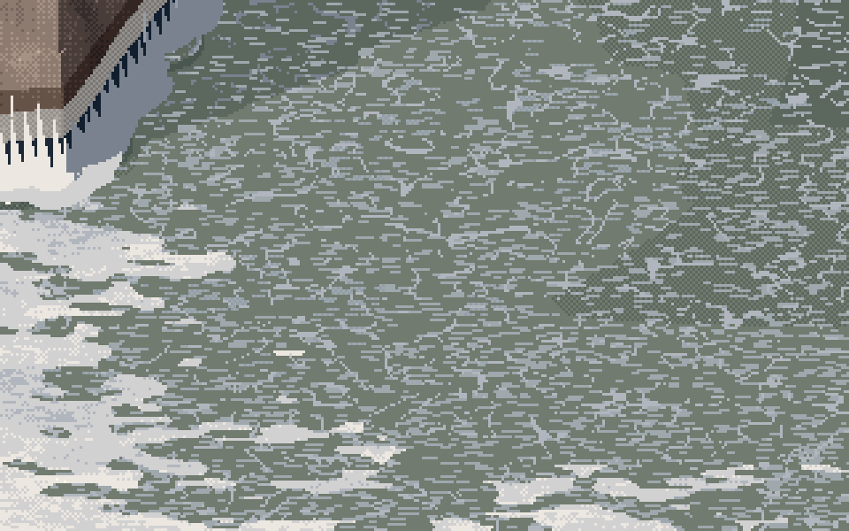
1. elements/water/out/s4_surf_scene_3x.png 2. elements/water/out/cmp_surf_cannon_v2.png
2. elements/water/out/cmp_surf_cannon_v2.png
Bash: Inspect oblique index metadata
cd ~/work/voxsim-data/places/olycoast/obliques; python3 -c "
import json;d=json.load(open('index.geojson'));print(len(d['features']));print(json.dumps(d['features'][0],indent=1)[:1500])"; ls | sed 's/__.*//' | sort | uniq -c; python3 -c "
from PIL import Image;im=Image.open('cape_alava__060819_15433_2016.jpg');print(im.size)"
# output:
1953
{
"type": "Feature",
"id": 4386,
"geometry": {
"type": "Point",
"coordinates": [
-124.25538031239175,
48.26228061213824
]
},
"properties": {
"PHOTO_NR": "CLA0677_181",
"Vintage": 1970,
"COUNTY_NM": "Clallam",
"LANDMARK_DS": "Slip Point USCGS",
"PHOTO_LEFT": "CLA0677_180",
"PHOTO_2006": "060627_03062",
"PHOTO_RIGHT": "CLA0677_182",
"PHOTO_2000": "0205311415_461",
"PHOTO_1990": "CLA0372",
"PHOTO_1970": null,
"Photo_NR_URL": "https://fortress.wa.gov/ecy/gisresources/shoreline_photos/yr1970/thumbnail/CLA0677_181_web.jpg",
"PHOTO_LEFT_URL": "https://fortress.wa.gov/ecy/gisresources/shoreline_photos/yr1970/thumbnail/CLA0677_180_web.jpg",
"PHOTO_RIGHT_URL": "https://fortress.wa.gov/ecy/gisresources/shoreline_photos/yr1970/thumbnail/CLA0677_182_web.jpg",
"Photo_2006_URL": "https://fortress.wa.gov/ecy/gisresources/shoreline_photos/yr2006/thumbnail/060627_03062.jpg",
"Photo_2000_URL": "https://fortress.wa.gov/ecy/gisresources/shoreline_photos/yr2000/thumbnail/0205311415_461_lg_wb.jpg",
"Photo_1990_URL": "https://fortress.wa.gov/ecy/gisresources/shoreline_photos/yr1990/thumbnail/CLA0372.jpg",
"Photo_1970_URL": null,
"PHOTO_DT": "",
"PHOTO_DATE": "",
"FULLSIZE_URL": "https://fortress.wa.gov/ecy/gisresources/shoreline_photos/yr1970/fullsize/CLA0677_181.jpg",
"PHOTO_2016": "160811_07796",
"PHOTO_2016_URL": "https://fortress.wa.gov/ecy/gisresources/shoreline_photos/yr2016/fullsize/160811_07796.jpg",
"OBJECTID": 4386
}
}
27 cape_alava
1 index.geojson
41 kalaloch
60 la_push
1 lake_ozette
23 point_of_arches
18 rialto
18 ruby_beach
20 sand_point
23 second_beach
21 shi_shi
(4200, 2800)Bash: Build contact sheets of 2016 Olympic obliques
mkdir -p ~/work/pixelart-studies/elements/sea/{src,refs,sheets,stages,notes}; cd ~/work/pixelart-studies/elements/sea; cat > src/contact.py <<'EOF'
import sys,glob,os
from PIL import Image,ImageDraw
# usage: contact.py out.png cols thumbw files...
out,cols,tw=sys.argv[1],int(sys.argv[2]),int(sys.argv[3]);fs=sys.argv[4:]
th=int(tw*2/3);rows=(len(fs)+cols-1)//cols
S=Image.new('RGB',(cols*tw,rows*(th+12)),(20,20,24));d=ImageDraw.Draw(S)
for i,f in enumerate(fs):
im=Image.open(f).convert('RGB');im.thumbnail((tw,th))
x,y=(i%cols)*tw,(i//cols)*(th+12);S.paste(im,(x,y+12));d.text((x+2,y),os.path.basename(f)[:40],fill=(220,220,220))
S.save(out)
EOF
O=~/work/voxsim-data/places/olycoast/obliques
nice python3 src/contact.py notes/oly_2016_a.png 5 360 $(ls $O/*_2016.jpg | head -40)
nice python3 src/contact.py notes/oly_2016_b.png 5 360 $(ls $O/*_2016.jpg | tail -n +41 | head -40)
ls $O/*_2016.jpg | wc -l
# output:
114Read: elements/sea/notes/oly_2016_a.png 3. elements/sea/notes/oly_2016_a.png
3. elements/sea/notes/oly_2016_a.png
Read: elements/sea/notes/oly_2016_b.png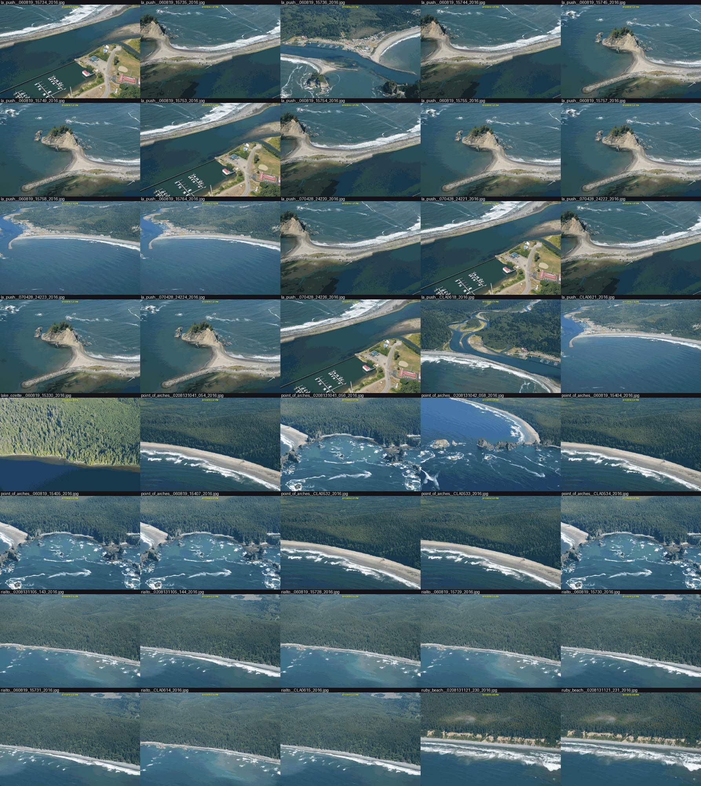
4. elements/sea/notes/oly_2016_b.pngBash: Make viewable versions of key obliques
cd ~/work/pixelart-studies/elements/sea; O=~/work/voxsim-data/places/olycoast/obliques; python3 -c "
from PIL import Image
for n in ['point_of_arches__060819_15405_2016','la_push__0208131107_153_2016','cape_alava__060819_15434_2016']:
im=Image.open('$O/'+n+'.jpg');im.thumbnail((1600,1100));im.save('notes/'+n+'_v.jpg',quality=90)
"
# output:
(Bash completed with no output)Read: elements/sea/notes/point_of_arches__060819_15405_2016_v.jpgRead: elements/sea/notes/cape_alava__060819_15434_2016_v.jpg 5. elements/sea/notes/point_of_arches__060819_15405_2016_v.jpg
5. elements/sea/notes/point_of_arches__060819_15405_2016_v.jpg
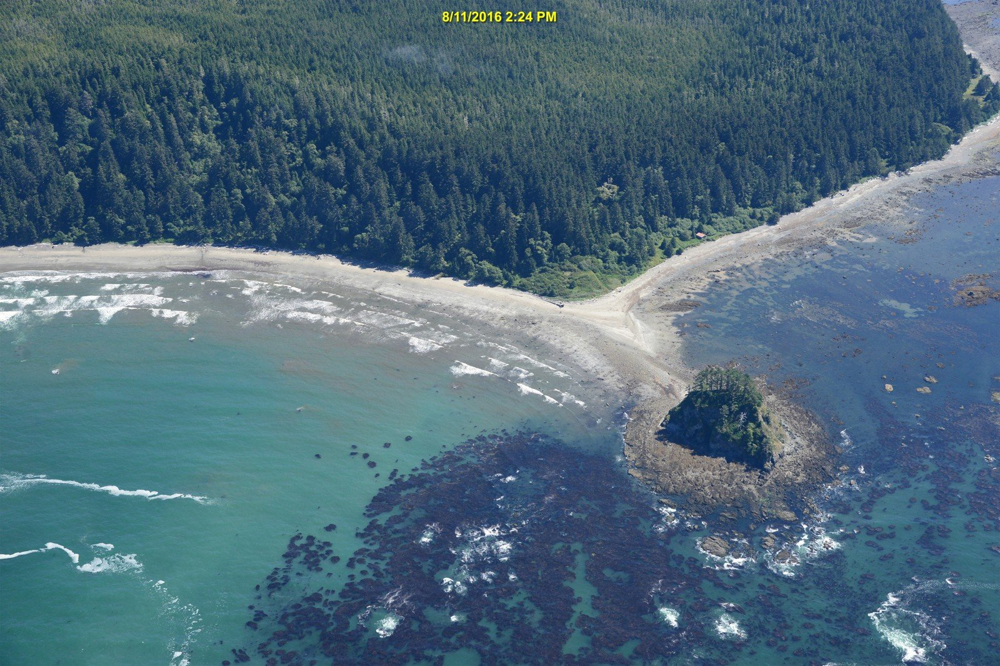
6. elements/sea/notes/cape_alava__060819_15434_2016_v.jpgBash: Read prior surf code and check env
cd ~/work/pixelart-studies/elements/water/src; sed -n 1,80p surf.py; python3 -c "import skfmm" ; python3 -c "import scipy,numpy,PIL;print(scipy.__version__,numpy.__version__)"; sysctl -n hw.memsize hw.ncpu; df -h ~ | tail -1
# output:
"""surf.py -- the Olympic coast: swell breaking around sea stacks, over reefs and on sand beaches,
filling surge channels. The camera looks seaward (+y), so we see the shoreward faces of waves.
Physics (sources and measured numbers in LESSONS 1.2 and 1.8):
* wave climate from NDBC 46041 (measured): winter Hs ~3 m, Tp ~12-13 s; summer ~1.1 m, 8 s;
storms 8-10 m.
* refraction: crests are lines of equal travel time from offshore, T(x) with |grad T| = 1/c,
c = sqrt(g d) in shallow water and g T/2pi in deep; solved as a shortest path (Dijkstra on the
grid, 16-neighbour stencil). Crests slow over shoals, bend toward the shore and wrap around stacks.
* shoaling and breaking: H grows as d^-1/4 (Green's law) until H = 0.78 d (depth-limited breaking),
then stays saturated at gamma d across the surf zone (spilling on flat sand: a wide dissipative
zone with many lines of bores); on steep rock, waves surge and burst without breaking first.
* sheltering: behind a stack, energy arriving along the wave direction is blocked; the lee is calm
except for wrapped (refracted/diffracted) crests.
* runup on a dissipative beach R ~ 0.043 sqrt(H0 L0) (Stockdon et al. 2006): winter 3 m / 13 s ->
~1.2 m vertical -> tens of metres of swash on a 1:40 beach, the wide wet-sand mirror band.
* foam: bores leave a sheet that decays into lace over ~10-40 s; collars cling to every exposed
rock; surge channels fill with lace and drain with each wave.
"""
import numpy as np
from scipy.sparse import csgraph, coo_matrix
from noise import fbm, vnoise, hash01, smoothstep, ridged, gauss_blur
from render import World
from rapid import Boulder, boulder_height
G_ = 9.81
CLIMATE = {'summer': dict(Hs=1.1, T=8.3), 'mean': dict(Hs=2.0, T=11.0), 'winter': dict(Hs=3.0, T=12.9),
'storm': dict(Hs=7.0, T=15.0)}
class SurfSite:
def __init__(self, sea='winter', tide=1.0, seed=7, beach_slope=1 / 40, stacks=None, wind=0.3, swell_dir=22.0):
self.sea = sea
c = CLIMATE[sea] if isinstance(sea, str) else sea
self.Hs, self.T = c['Hs'], c['T']
self.tide = tide # water level above MLLW (m); range ~ -0.5 .. 3
self.seed, self.slope, self.wind = seed, beach_slope, wind
self.swell_dir = swell_dir # degrees from shore-normal (Olympic winter swell: W-NW)
rng = np.random.default_rng(seed)
# sea stacks: (x, y, radius, height). The shoreline runs along y ~ 0..40 (beach), sea toward +y.
self.stacks = stacks or [(-60, 130, 14, 38), (35, 95, 8, 26), (80, 170, 18, 45), (5, 190, 6, 18),
(-110, 70, 10, 30), (130, 60, 7, 16)]
self.rocks = []
for i in range(90): # reef and beach rocks, clustered near stacks
if rng.random() < 0.7:
sx, sy, sr, sh = self.stacks[rng.integers(len(self.stacks))]
a = rng.uniform(0, 2 * np.pi); d = sr * rng.uniforBash: Check library contents and PDF tools
cd ~/work/pixelart-studies/library; ls -la water general weather; sed -n 1,40p fetch.sh; which pdftotext pdftoppm mutool
# output:
Exit code 1
general:
total 93016
drwxr-xr-x 6 user staff 192 Sep 26 13:01 .
drwxr-xr-x 14 user staff 448 Sep 26 13:03 ..
-rw-r--r-- 1 user staff 12706705 Sep 26 13:00 elementsdrawing01ruskgoog.pdf
-rw-r--r-- 1 user staff 9389314 Sep 26 13:01 landscapepaintin00harriala.pdf
-rw-r--r-- 1 user staff 8008161 Sep 26 13:01 modernpaintersv02ruskgoog.pdf
-rw-r--r-- 1 user staff 16365037 Sep 26 13:00 practicescienceo00speeiala.pdf
water:
total 29832
drwxr-xr-x 3 user staff 96 Sep 26 13:01 .
drwxr-xr-x 14 user staff 448 Sep 26 13:03 ..
-rw-r--r-- 1 user staff 15270185 Sep 26 13:01 formsofwaterin00tyndiala.pdf
weather:
total 2936
drwxr-xr-x 3 user staff 96 Sep 26 13:01 .
drwxr-xr-x 14 user staff 448 Sep 26 13:03 ..
-rw-r--r-- 1 user staff 1501318 Sep 26 13:01 essayonmodifica00howagoog.pdf
#!/bin/bash
# Open-access model-system texts for the studio. Resumable (curl -C -).
cd "$(dirname "$0")"
get() { d=$1; id=$2; f=$3; mkdir -p "$d"; [ -s "$d/$(basename "$f")" ] || curl -sL -C - --retry 3 -o "$d/$(basename "$f")" "https://archive.org/download/$id/$f"; echo "$d/$(basename "$f") $(du -h "$d/$(basename "$f")" | cut -f1)"; }
get rock modernpainters04rusk modernpainters04rusk.pdf
get general elementsdrawing01ruskgoog elementsdrawing01ruskgoog.pdf
get trees artisticanatomyo1915cole artisticanatomyo1915cole.pdf
get terrain in.ernet.dli.2015.119840 2015.119840.Cartographic-Relief-Presentation.pdf
get terrain blockdiagramsoth0000armi_s8g3 blockdiagramsoth0000armi_s8g3.pdf
get terrain in.ernet.dli.2015.205632 2015.205632.Geomorphology.pdf
get general practicescienceo00speeiala practicescienceo00speeiala.pdf
get terrain physicalgeograp00davigoog physicalgeograp00davigoog.pdf
get rock reportongeology05duttgoog reportongeology05duttgoog.pdf
mkdir -p rock trees; [ -s rock/cifa_lithic_illustration_guide.pdf ] || curl -sL -o rock/cifa_lithic_illustration_guide.pdf "https://www.archaeologists.net/sites/default/files/2025-04/flint-paper-digital.pdf"
[ -s trees/franklin_2002_structural_development_douglas_fir.pdf ] || curl -sL -o trees/franklin_2002_structural_development_douglas_fir.pdf "https://www.cof.orst.edu/cof/fs/kpuettmann/FS%20533/Franklin%20et%20al.pdf"
echo done
get water formsofwaterin00tyndiala formsofwaterin00tyndiala.pdf
get snow glaciersalpsbei01tyndgoog glaciersalpsbei01tyndgoog.pdf
get general landscapepaintin00harriala landscapepaintin00harriala.pdf
get weather essayonmodifica00howagoog essayonmodifica00howagoog.pdf
get general modernpaintersv02ruskgoog modernpaintersv02ruskgoog.pdf
echo done2
/opt/homebrew/bin/pdftotext
/opt/homebrew/bin/pdftoppm
mutool not foundBash: Search archive.org for wave model-system books
for q in 'title:(waves of the sea) AND creator:(cornish)' 'title:(shore protection manual)' 'title:(waves and beaches)' 'title:(ocean waves and kindred geophysical)' 'title:(beaufort) AND title:(sea)' 'creator:(cornish vaughan)'; do echo "== $q"; curl -s --max-time 30 "https://archive.org/advancedsearch.php?q=$(python3 -c "import urllib.parse,sys;print(urllib.parse.quote(sys.argv[1]))" "$q")&fl[]=identifier&fl[]=title&fl[]=year&rows=12&output=json" | python3 -c "import json,sys;[print(d.get('identifier'),'|',d.get('title'),d.get('year')) for d in json.load(sys.stdin)['response']['docs']]"; done
# output:
== title:(waves of the sea) AND creator:(cornish)
wavesseaandothe00corngoog | Waves of the Sea and Other Water Waves 1910
wavesofseaotherw0000corn | Waves of the sea and other water waves 1910
wavesofseaotherw00cornuoft | Waves of the sea, and other water waves. With 50 photographs taken by the author 1910
wavesofseaotherw00cornrich | Waves of the sea and other water waves 1910
== title:(shore protection manual)
shoreprotectionm03coas | Shore protection manual 1975
shoreprotectionm0000vari | Shore Protection Manual Volume 2 1977
shoreprotectionm01coas | Shore protection manual 1975
shoreprotectionm01unit | Shore protection manual 1984
shoreprotectionm02coas | Shore protection manual 1975
shoreprotectionm02unit | Shore protection manual 1984
== title:(waves and beaches)
CSPAN3_20211023_190200_Samantha_Montano_Disasterology__Kim_McCoy_Waves_and_Beaches | Samantha Montano, "Disasterology" & Kim McCoy, "Waves and Beaches" : CSPAN3 : October 23, 2021 3:02pm-3:37pm EDT 2021
CSPAN2_20211223_095800_Samantha_Montano_Disasterology__Kim_McCoy_Waves_and_Beaches | Samantha Montano, "Disasterology" & Kim McCoy, "Waves and Beaches" : CSPAN2 : December 23, 2021 4:58am-5:34am EST 2021
CSPAN2_20211222_162300_Samantha_Montano_Disasterology__Kim_McCoy_Waves_and_Beaches | Samantha Montano, "Disasterology" & Kim McCoy, "Waves and Beaches" : CSPAN2 : December 22, 2021 11:23am-11:59am EST 2021
CSPAN2_20211223_041800_Samantha_Montano_Disasterology__Kim_McCoy_Waves_and_Beaches | Samantha Montano, "Disasterology" & Kim McCoy, "Waves and Beaches" : CSPAN2 : December 22, 2021 11:18pm-11:56pm EST 2021
CSPAN2_20211017_190300_Samantha_Montano_Disasterology__Kim_McCoy_Waves_and_Beaches | Samantha Montano, "Disasterology" & Kim McCoy, "Waves and Beaches" : CSPAN2 : October 17, 2021 3:03pm-3:37pm EDT 2021
wavesonbeachesre0000unse | Waves on beaches and resulting sediment transport; proceedings of an advanced seminar conducted by the Mathematics Research Center, the University of Wisconsin, and the Coastal Engineering Research Center, U.S. Army, at Madison October 11-13, 1971 1972
CSPAN2_20211223_212300_Samantha_Montano_Disasterology__Kim_McCoy_Waves_and_Beaches | Samantha Montano, "Disasterology" & Kim McCoy, "Waves and Beaches" : CSPAN2 : December 23, 2021 4:23pm-4:59pm EST 2021
wavesoverbeaches00stok | Waves over beaches of small slope, under a dock, under an overhanging cliff, and past plane barriers 1947
wavesbeaches00doub | Waves and beaches : the dynamics of ocean surface 1964
bwb_S0-AXE-576 | Waves and Beaches 1964
wavesbeachesdyna00basc | Waves and beaches; the dynamics of the ocean surface 1964
CSPAN2_20211018_070300_Samantha_Montano_Disasterology__Kim_McCoy_Waves_and_Beaches | Samantha Montano, "Disasterology" & Kim McCoy, "Waves and Beaches" : CSPAN2 : October 18, 2021 3:03am-3:36am EDT 2021
== title:(ocean waves and kindred geophysical)
== title:(beaufort) AND title:(sea)
RyanPadraigKelly_20151211 | Ryan Padraig Kelly Beaufort Sea 2015
micro_IA40243216_0745 | PhytoplanBash: Check which books are downloadable
for id in wavesbeachesdyna00basc wavesbeaches00doub bwb_S0-AXE-576 wavesofseaotherw00cornuoft shoreprotectionm01unit in.ernet.dli.2015.502579; do echo "== $id"; curl -s --max-time 30 "https://archive.org/metadata/$id" | python3 -c "
import json,sys;d=json.load(sys.stdin);print(d.get('metadata',{}).get('access-restricted-item'));[print(' ',f['name'],f.get('size')) for f in d.get('files',[]) if f['name'].endswith(('.pdf','_djvu.txt'))]"; done
# output:
== wavesbeachesdyna00basc
true
wavesbeachesdyna00basc.pdf 16538931
wavesbeachesdyna00basc_djvu.txt 448347
wavesbeachesdyna00basc_encrypted.pdf 16460104
== wavesbeaches00doub
true
wavesbeaches00doub.pdf 25459281
wavesbeaches00doub_djvu.txt 436640
wavesbeaches00doub_encrypted.pdf 25381863
== bwb_S0-AXE-576
true
bwb_S0-AXE-576.pdf 11286926
bwb_S0-AXE-576_djvu.txt 390622
== wavesofseaotherw00cornuoft
None
wavesofseaotherw00cornuoft.pdf 37824784
wavesofseaotherw00cornuoft_bw.pdf 36226333
wavesofseaotherw00cornuoft_djvu.txt 790076
== shoreprotectionm01unit
None
shoreprotectionm01unit.pdf 33940821
shoreprotectionm01unit_bw.pdf 34953479
shoreprotectionm01unit_djvu.txt 1176354
== in.ernet.dli.2015.502579
None
2015.502579.ocean-wares.pdf 5407788
2015.502579.ocean-wares_djvu.txt 265124
2015.502579.ocean-wares_text.pdf 4695251Bash: Download Cornish, SPM and text versions
cd ~/work/pixelart-studies/library; get() { d=$1; id=$2; f=$3; mkdir -p "$d"; [ -s "$d/$(basename "$f")" ] || curl -sL -C - --retry 3 --max-time 900 -o "$d/$(basename "$f")" "https://archive.org/download/$id/$f"; echo "$d/$(basename "$f") $(du -h "$d/$(basename "$f")" | cut -f1)"; }
get water wavesofseaotherw00cornuoft wavesofseaotherw00cornuoft.pdf
get water shoreprotectionm01unit shoreprotectionm01unit.pdf
get water in.ernet.dli.2015.502579 2015.502579.ocean-wares.pdf
for f in wavesofseaotherw00cornuoft/wavesofseaotherw00cornuoft_djvu.txt shoreprotectionm01unit/shoreprotectionm01unit_djvu.txt wavesbeachesdyna00basc/wavesbeachesdyna00basc_djvu.txt; do curl -sL --max-time 300 -o ~/work/pixelart-studies/elements/sea/refs/$(basename $f) https://archive.org/download/$f; done; ls -la ~/work/pixelart-studies/elements/sea/refs
# output:
water/wavesofseaotherw00cornuoft.pdf 37M
water/shoreprotectionm01unit.pdf 32M
water/2015.502579.ocean-wares.pdf 5.2M
total 3864
drwxr-xr-x 5 user staff 160 Sep 26 13:08 .
drwxr-xr-x 7 user staff 224 Sep 26 13:05 ..
-rw-r--r-- 1 user staff 1176354 Sep 26 13:08 shoreprotectionm01unit_djvu.txt
-rw-r--r-- 1 user staff 4868 Sep 26 13:08 wavesbeachesdyna00basc_djvu.txt
-rw-r--r-- 1 user staff 790076 Sep 26 13:08 wavesofseaotherw00cornuoft_djvu.txtBash: Find structure in Cornish text
cd ~/work/pixelart-studies/elements/sea/refs; grep -n -i -E "^ *(CHAPTER|CONTENTS)|LIST OF (PLATES|ILLUSTRATIONS)" wavesofseaotherw00cornuoft_djvu.txt | head -30; pdfinfo ~/work/pixelart-studies/library/water/wavesofseaotherw00cornuoft.pdf | grep Pages # output: 172:CONTENTS 177:CHAPTER I 186:CHAPTER II 199:CHAPTER III 212:CHAPTER IV 233:CHAPTER V 241:CHAPTER VI 252:CONTENTS 13 260:CHAPTER VII 268:CHAPTER VIII 275:CHAPTER IX 278:CHAPTER X 284:CHAPTER XI 292:CHAPTER XII 506:CHAPTER I 1082:CHAPTER II 2252:CHAPTER III 3016:CHAPTER IV 4146:CHAPTER V 4772:CHAPTER VI 5711:CHAPTER VII 5994:CHAPTER VIII 6602:CHAPTER IX 6767:CHAPTER X 7423:CHAPTER XI 8620:CHAPTER XII 9931:CONTENTS. 17238:Contents : — The Outcasts, and Waiting for the Ferry. Translated 17416:Contents : — Some Emotions and a Moral. A Bundle of Life. 6/- 25116:Chapter on P irtnership. By A. W. Bromley. Cr. 8vo, cloth, net Pages: 492
Bash: Read Cornish contents
cd ~/work/pixelart-studies/elements/sea/refs; sed -n 172,300p wavesofseaotherw00cornuoft_djvu.txt | tr -s ' \n' ' ' | fold -w 200 # output: CONTENTS PART I ON THE SIZE AND SPEED OF DEEP-SEA WA VES CHAPTER I PAGE Introduction — Waves on ponds — Waves on lakes — Coniston Water — Lake of Geneva — Lake Superior — Waves in semi-enclosed seas — Wester n Mediterranean — China Sea .... 23 CHAPTER II Observations of waves on the North Atlantic — Conclusion as to height of North Atlantic waves — Waves on the North Pacific — The effective length of fetch of strong winds on the North Atlantic Ocean — The numerical relation between the length of fetch of wind and height of storm-waves — Waves on the South Atlantic and Southern Indian Oceans — Waves on the So uth Pacific Ocean — The discrepancy between wave-lengths determined respectively by simultaneous and by suc- cessive observation of wave-crests . . . 42 CHAPTER III The wave-length of the swell which r eaches the shore after storms — The height of the swell at sea during storms — The co-existence of waves of different lengths — The give and take between air and water in the develop- ment of waves . . . . . -85 11 12 CONTENTS CHAPTER IV PACK The velocity of the wind at sea— The numerical relation between velocity of wind and average height of waves — The relation between the velocity of the wind and t he velocity of the waves — The connection between the rate of progress of cyclones and the character of the waves — The effect of squalls and gusts upon waves — On wave-fronts in a veering wind, and on t he irregularity of the waves in the region of the Trade winds — The observed profile of waves at sea — The mountainous appearance of waves . . .107 PART II ON THE ACTION OF SEA WAVES TO TRANS- PORT SHIN GLE, SAND, AND MUD CHAPTER V On the depth to which wave-agitation extends, and on the transport of fine mud — The action of waves to drive shingle shorewards — The effect of percolation to pro- mote the building-up of beaches — The movement of sand by waves — The undertow . . ... . 141 CHAPTER VI On the actions which determine the 'longshore transport of beach shingle — On the causes which give rise to an arrangement of pebbles according to their sizes along the Chesil Beach and certain other beaches — On the production and maintenance of the Shambles sand-bank near Portland — The formation of patche s of shingle upon a sandy beach by the action of breakers . .176 CONTENTS 13 PART III ON STATIONARY AND PROGRESSIVE WAVES IN RIVERS CHAPTER VII PAGE The flood-wave of rivers — The roll- wave in the Tee s — In the Ure — In the Nikko torrent — On the advance of a flood over dry ground . . . . .221 CHAPTER VIII Tidal bores — Wave-length of the Severn bore — On the want of concordance between height of tide and height of bore, and on the conditions which deter- mine the starting-point of the bore . . . 230 CHAPTER IX Cinematographing the Severn bore . , . . 254 CHAPTER X Stationary or standing waves — Cro ss-stream progressive waves : observations in Niagara River . . . 265 CHAPTER XI On streams which flow as a series of roll-waves — Observa- tions o
Bash: Index SPM figure captions by page
cd ~/work/pixelart-studies/elements/sea/refs; P=~/work/pixelart-studies/library/water/shoreprotectionm01unit.pdf; pdfinfo $P | grep Pages; for p in $(seq 60 200); do t=$(pdftotext -f $p -l $p $P - 2>/dev/null | tr '\n' ' '); echo "$t" | grep -o -i -E "Figure 2-[0-9]+\.[^.]{0,80}" | head -3 | sed "s/^/$p: /"; done 2>/dev/null | head -120
# output:
Pages: 652
70: Figure 2-5. The waves shown in Figure 2-5 appear to be traveling in groups described by the
100: Figure 2-13. Entering the figure with L2H/d? = 290, the value of (Yo = d)/H is found to be 0
101: Figure 2-9. For the wave profile obtained with k* = 1 - 10°, it is seen that the SWL is app
101: Figure 2-15. Calculate Has y Entering Figure 2-15 ) = 2
110: Figure 2-18. In application to wave refraction problems, it is simplest to construct this te
121: Figure 2-27. Putnam and Arthur (1948) presented experimental data verifying a method of solu
129: Figure 2-33. Wave wave wove Direction of approach crests wave —~~———
145: Figure 2-58. (1976, 1980a, 1980b, and for diffraction through 1980c) a gap developed form
151: Figure 2-59. If the incident waves are long crested and monochromatic, the wave propagating
151: Figure 2-59. The diffraction coeficient for the composite wave field can be calculated from
153: Figure 2-31. The diffraction patterns are scaled in accordance with the calculated wavelengt
153: Figure 2-60. The same procedure of superimposing diffraction diagrams could be used for a se
155: Figure 2-61. V
159: Figure 2-63. There are some points (nodes) on the profile where the water surface remains at
159: Figure 2-63. Since water motion at the antinodes is purely vertical, the presence of a verti
163: Figure 2-65. These curves can be used to obtain a high estimate of the reflection coefficien
172: Figure 2-69. The seaward distance X that the slope must extend to trap waves, distance Y tha
176: Figure 2-73. It is recommended that Figures 272 and 2-73 be used, rather than equations (2-9Bash: Peek refraction and breaker pages in SPM
cd ~/work/pixelart-studies/elements/sea/notes; P=~/work/pixelart-studies/library/water/shoreprotectionm01unit.pdf; for p in 105 106 107 108 109 110 111 112 165 166 167 168 169 170; do t=$(pdftotext -f $p -l $p $P - 2>/dev/null | tr '\n' ' ' | tr -s ' '); echo "$p: ${t:0:250}"; done
# output:
105: water particle velocity This occurs when at the wave H (=) crest becomes equal = 0.78 to the wave celerity. (2-72a) Laboratory investigations have shown that the value of (H/d) 7 = 0.08 better with observations for oscillatory waves than for solitary
106: III. 1. WAVE REFRACTION Introduction. Equation (2-2) shows that wave celerity depends on the water depth in which the wave propagates. If the wave celerity decreases with depth, wavelength must also decrease proportionally. Variation in wave velocity
107: Figure 2-17. Wave refraction at Westhampton 2—61 Beach, long Island, New York.
108: The decrease in wave celerity with decreasing water depth can be considered similar to the decrease in the speed of light with an increase in the refractive index of the transmitting medium. Using this analogy, 0’ Brien (1942) suggested the use of
109: velocity must be computed from becomes nearly equal to 2nd/L equation (2-2); in shallow water, tanh(2m1d/L) and equation (2-2) reduces to equation (2-9). c2 = gd or C = (gd)!/2 the dependence of wave velocity in a wave per unit crest Both equations (
110: The termy(1/2) (1/n) H/H + This shoaling (C,/C) is known as the shoaling coeffictent K, or coefficient is a function of wavelength and water depth. K, and various other functions of d/l, "such as) 2nd/iL, “4dr, tanh(2nd/L), and sinh(4nd/L) are tabu
111: aa] i Jouoboyjsio ebpe J®|)D4Dd 4n5 jo eul| jOUOHBOYLIO OF £1 60 20 90 °02 001 jpuobou440 e,ojdwe4 Jouoboyjs09 29 "9 2-65 £0 espqg {ng 841D\dwe}; ebpe 4o je);040d OF eulj bo uop{oPszoy *ajeTdute, so 20 (Saesbap) eansTy *8I-Z 80 »y (0) yBbnosy4 B
112: Ge ssine Oss COs) cos a = cos a le k ese 0.968 and From the geometry of te PS R Figure Kp 2-19 the b the shows in graphical wave 1/2 " fo) = 0.866 rays, cos oO, cos a 1/2 Pr oxen woo 0.968 relationships between a, See i a ‘Oo? th period, depth, and
165: From curve B in Figure 2-65, x < 0.01 for the slope reflects less wave energy and is a better the 1 on 5 structure slope. Nemec Res Sere Ree Sere PES ee Tee Se Fe Se Ie) eR SEITE beach. MThe 1 on 50 beach wave energy dissipater than Bees Se sel de ee
166: . Seesaier TT ngs pe HH iimasoee BES== | pe 7HCE py ah fe nen aan rt ne FEaa 7 eh === Sasa | = in eT i ema, sie Ht meraitsHHrenH iIeHHHHit auBEEEREE EEEi HI HH nant mapaueate HHH CoH aL CPSs mls Pee Loa ==: SSSSz tA LN Ve Ha ee nn HS= SS SSSSSS — S
167: Table kK kk A a, correction of armor data factor lperived from d,/gT* < 0.03. kK KOR kk with wave with a cotd OK K & EXAMPLE period for multiple layers units.! 0.004 < kK GIVEN: 2-3. T = 10 = 2.5, d g/ds = 0.15, PROBLEM 14 * * & & KK seconds and a he
168: The two layers of armor units reduce the reflection coefficient 30 percent of the smooth slope reflection coefficient. Es Ee SE 5. Wave EELS EEE Reflection EE from FE ESE TEES Bathymetric SE ESS EOS TS FSS to less than Se Variation. Any change in bat
169: Figure 2-67. Wave a. 2£/(di + d2) = 6 bs. £/(di +23) => 12 reflection coefficients for smooth 2/(d1 + d2) Bash: Render SPM refraction photo, find breaker types
cd ~/work/pixelart-studies/elements/sea/notes; P=~/work/pixelart-studies/library/water/shoreprotectionm01unit.pdf; pdftoppm -r 70 -f 107 -l 107 -png $P spm; for p in $(seq 160 250); do t=$(pdftotext -f $p -l $p $P - 2>/dev/null | tr '\n' ' '); echo "$t" | grep -q -i -E "spilling|plunging" && echo $p; done | head # output: 176 179 182
Bash: Render SPM breaker pages
cd ~/work/pixelart-studies/elements/sea/notes; P=~/work/pixelart-studies/library/water/shoreprotectionm01unit.pdf; pdftoppm -r 60 -f 176 -l 178 -png $P spmb; ls spm* # output: spm-107.png spmb-176.png spmb-177.png spmb-178.png
Read: elements/sea/notes/spm-107.png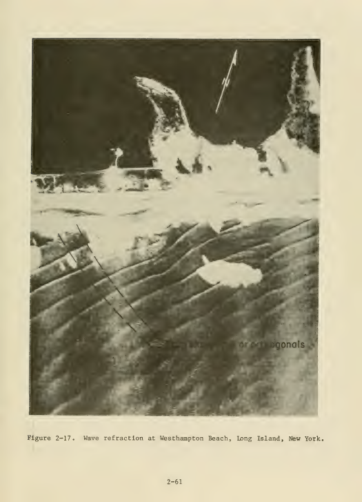
7. elements/sea/notes/spm-107.pngRead: elements/sea/notes/spmb-177.png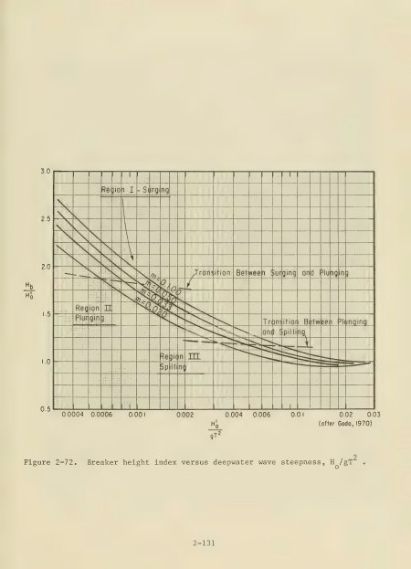
8. elements/sea/notes/spmb-177.pngBash: Search Ruskin and Tyndall for sea colour passages
cd ~/work/pixelart-studies/elements/sea/refs; pdftotext ~/work/pixelart-studies/library/general/modernpaintersv02ruskgoog.pdf ruskin_mp.txt; pdftotext ~/work/pixelart-studies/library/water/formsofwaterin00tyndiala.pdf tyndall.txt; grep -n -i -E "OF WATER|TRUTH OF WATER|colour of the sea|of the sea" ruskin_mp.txt | head -20; grep -n -i -E "colour of the sea|green|blue" tyndall.txt | head -30; head -c 600 ruskin_mp.txt # output: 1485:The Blue Veins of Glaciers 3697:Heber could speak of " Greenland's icy 4367:Lombardy blue and cloudless, the wind at the same time 4633:few of them, executed at Greenwich by Mr. 5324:shimmer of blue light. 5939:blue-green 6146:glaciers which nestle on the heights, the deep blue 6283:delicate blue light. 9779:and blue. 10278:In the cavern we were bathed by blue 11097:blue light shimmers from them, but this 12723:with its pure blue shimmer, is beautiful, but it is terrible. 12868:with water of the most delicate blue. 13973:Greenland Ocean requires to freeze it a temperature 14397:A lake of the loveliest blue 14406:the Arctic waves sap the Greenland glaciers, and 14504:blue colour characteristic of compact ice. 18037:The Blue Veins of Glaciers. 18298:numerable blue streaks drawn through the white translucent 18303:These blue veins turned out upon ex- 18348:intermittent, and when we first observed the blue veins 18664:true blue veins. 19037:Upon this glacier, indeed, the blue veins were 19714:Blue veins of rlariers. 176 whiteness 19859:Greenland's icy mountains, 2J. 19952:ture of. 178 blue veins of. 170 tables, 113, 114; mills, 11 (> -118: theory This is a digital copy of a book that was preserved for generations on library shelves before it was carefully scanned by Google as part of a project to make the world’s books discoverable online. It has survived long enough for the copyright to expire and the book to enter the public domain. A public domain book is one that was never subject to copyright or whose legal copyright term has expired. Whether a book is in the public domain may vary country to country. Public domain books are our gateways to the past, representing a wealth of history, culture and knowledge that’s often difficul
Bash: Find Tyndall Fragments of Science
for q in 'title:(fragments of science) AND creator:(tyndall)' 'title:(modern painters) AND creator:(ruskin) AND title:(volume I)'; do curl -s --max-time 30 "https://archive.org/advancedsearch.php?q=$(python3 -c "import urllib.parse,sys;print(urllib.parse.quote(sys.argv[1]))" "$q")&fl[]=identifier&fl[]=title&fl[]=year&rows=8&output=json" | python3 -c "import json,sys;[print(d.get('identifier'),'|',d.get('title'),d.get('year')) for d in json.load(sys.stdin)['response']['docs']]"; done
# output:
fragmentsofscien00tyndiala | Fragments of science; a series of detached essays, addresses and reviews 1884
fragmentsofscien00tynduoft | Fragments of science; being a series of detached essays, addresses and reviews 1910
fragmentsofscie00tynduoft | Fragments of science for unscientific people : a series of detached essays, lectures, and reviews 1871
fragmentsscienc05tyndgoog | Fragments of science 1898
fragmentsofscien02tynd | Fragments of science 1900
fragmentsscienc22tyndgoog | Fragments of Science 1905
fragmentsscienc24tyndgoog | Fragments of science: A Series of Detached Essays, Addresses, and Reviews 1897
fragmentsscienc01unkngoog | Fragments of Science 1896
lawsoffesoleajoy010154mbp | The Laws Of Fesole A Joy Forever Our Fathers Have Told Us Inaugural Address Modern Painters Volume I Of General Principles And Of Truth None
lawsoffesoleajoy005647mbp | The Laws Of Fesole A Joy Forever Our Fathers Have Told Us Inaugural Address Modern Painters Volume I Of General Principles And Of Truth None
in.ernet.dli.2015.87574 | The Laws Of Fesole A Joy Forever Our Fathers Have Told Us Inaugural Address Modern Painters Volume I Of General Principles And Of Truth 1861
modernpaintersvo29907gut | Modern Painters Volume I (of V) NoneBash: Fetch Tyndall Fragments text, check Ruskin gut text
cd ~/work/pixelart-studies/elements/sea/refs; curl -sL --max-time 300 -o tyndall_fragments.txt https://archive.org/download/fragmentsofscien00tyndiala/fragmentsofscien00tyndiala_djvu.txt; curl -s --max-time 30 https://archive.org/metadata/modernpaintersvo29907gut | python3 -c "import json,sys;[print(f['name']) for f in json.load(sys.stdin)['files'] if f['name'].endswith('.txt')]"; grep -n -i "colour of the sea\|COLOUR OF WATER\|colour of the water" tyndall_fragments.txt | head
# output:
29907-8.txt
29907-8.txt_meta.txt
29907-8.zip_meta.txt
29907-h.zip_meta.txt
29907.txt
29907.txt_meta.txt
29907.zip_meta.txt
pg29907-images.epub_meta.txt
pg29907.epub_meta.txt
pg29907.plucker.pdb_meta.txt
pg29907.qioo.jar_meta.txt
pg29907.rdf_meta.txt
pg29907.txt
pg29907.txt_meta.txtBash: Locate sea-colour passages in Tyndall and Ruskin
cd ~/work/pixelart-studies/elements/sea/refs; wc -c tyndall_fragments.txt; grep -n -i -E "colour of (the )?(sea|water)|green water|sea-water|Mediterranean" tyndall_fragments.txt | head -20; curl -sL --max-time 120 -o ruskin_mp1.txt https://archive.org/download/modernpaintersvo29907gut/29907.txt; grep -n -i -E "^ *(CHAPTER|SECTION).*" ruskin_mp1.txt | sed -n 1,80p | grep -i -A3 -B1 water # output: 170 tyndall_fragments.txt 2477: SECTION V. 2482:CHAPTER I.--Of Water, as Painted by the Ancients. 2514:CHAPTER II.--Of Water, as Painted by the Moderns. 2532:CHAPTER III.--Of Water, as Painted by Turner. 2590: SECTION VI. 2595:CHAPTER I.--Of Truth of Vegetation. 2643:CHAPTER II.--General remarks respecting the Truth of Turner.
Bash: Find Ruskin's sea passages
cd ~/work/pixelart-studies/elements/sea/refs; grep -n "OF WATER, AS PAINTED BY TURNER" ruskin_mp1.txt; grep -n -i -E "breaker|surf|foam|the sea is|green|spray" ruskin_mp1.txt | awk -F: '$1>13000' | head -60 # output: 16718: OF WATER, AS PAINTED BY TURNER. 13035: The exhausted air is so thirsty of moisture, that every jet of spray 13037: this vapor rises so densely from the surface of the stream as to 13040: as soon as it had risen ten or twelve feet from the surface, but 13239: F. Same hour. Tumultuous spray of illumined | Solomon's Pools. 13376:an Alpine stream would toss down before it like a foam-globe; though it 13449:of the surface of the former lake, as level as the quiet water itself. 13498:gravel, and clay, which are strewed upon the surface of all, forming 13547:against a wall. The surfaces of these show close parallelism; their 13557:sharp, having a perfectly smooth surface, and a perfectly sharp edge to 13973:its surface and transparency alike exquisite, its light and shade of 14073:Various works in green and white appear from time to time on the walls 14082:we have had rather a surfeit of it lately;--too many peaked caps and 14087:the preponderance of black, and white, and green, over more available 14133:in its contours--one indicative of the surfaces of the beds, where they 14137:angles with each other, or nearly so. If the surface of the bed approach 14234:surfaces of the beds towards the left, their edges or escarpments 14236:a bed is beautifully defined, casting its shadow on the surface of the 14240:evidence is completed by the flatness and evenness of the steep surfaces 14258:upper surfaces are shown between the two cliffs, sinking with an even 14322:what the square green daubs of the brush at its base can be conjectured 14323:to be typical. Rocks with pale-brown light sides, and rich green dark 14335:staring green paint, scratched heavily on a white ground. Nor is there a 14398:Now the tendency of aqueous action over a large elevated surface is 14399:_always_ to make that surface symmetrically and evenly convex and 14512:thousand hills. There is not a quarter of an inch of its surface without 14520:evanescent foam and flashing light,--here a wreath, and there a 14567:the greater part of all hill-surface is composed of graceful curves of 14604:statements of retiring space by mere painting of surface details, 14643:division of distances, every yard of surface is felt to be retiring by 14666:Sec. 22. Expression of retiring surface by Turner contrasted with the work 14677:surface in one of them; not an inch of ground for us to stand upon; we 14706:of retiring surface. We never get to the top of one of his hills without 14718:lines of swelling surface which undulate back through leagues of mist 14948:random over their surfaces, only fail of destroying all resemblance 14954:brilliant reflexes from the lighted surfaces, on which the shadows are 14956:the parallelism of cleavage, the surfaces lie usually in directions 15017:confusing it with local color, however richly his surface-texture may be 15028:gradually as it rises by the rounding of the surface and the successive
Bash: Ruskin sea mentions in Turner water chapter
cd ~/work/pixelart-studies/elements/sea/refs; grep -n -i -E "sea|breaker|foam" ruskin_mp1.txt | awk -F: '$1>16700 && $1<17800' | head -60 # output: 16846:of the sea,--as we naturally should,--we should have seen the image of 16857:to search them out; it would not have cared whence or how the colors 16859:satisfied upon the polished surface of the clear sea. Of the perfect 16976:the Sun of Venice going to Sea, of 1843, respecting which, however, 16993:peculiar power of the picture was the painting of the sea surface, where 17031:only repose, but _power_ in repose, the emblem, in the sea, of the quiet 17055:this spot makes it look like a lake or sea, and it was therefore 17211:indiscriminate foam; but nature gives more than foam--she shows beneath 17227:descent, and splashing, shapeless foam; and, in consequence, though they 17245:line, where they do not lose themselves in smoke and foam, make their 17276:side of it with a little bubbling foam, and goes round; if it comes to a 17290:ship into the hollow of the sea. Hence the whole appearance of the bed 17298:not with a leap, but with a swing, not foaming, nor splashing, but in 17299:the bending line of a strong sea-wave, and comes up again on the other 17302:neither part nor foam, nor express any concern about the matter, but 17305:being drawn into parallel lines by its extreme velocity, but foamless, 17307:angle to such a line of fall, and causes a breaker; so that the whole 17308:river has the appearance of a deep and raging sea, with this only 17309:difference, that the torrent-waves always break backwards, and sea-waves 17315:which nature can possibly produce; for the sea runs too much into 17344:each other without break or foam, though jets of fiery spray are cast 17353:vividness of foam which is obtained through a general middle tint, 17376:stone at its farthest border, and descend in sparkling foam over the lip 17401:Sec. 29. Sea painting. Impossibility of truly representing foam. 17403:More determined efforts have at all periods been made in sea painting 17406:dexterities, but the sea _must_ be legitimately drawn; it cannot be 17413:the right painting of the sea must depend, at least in all coast 17414:scenery, in no small measure on the power of drawing foam. Yet there are 17415:two conditions of foam of invariable occurrence on breaking waves, of 17421:their whole surface, and connecting the breakers on a flat shore by long 17433:accidentalism, and evanescence, and so kill the sea. Again, the openings 17434:in the thin subsided foam in their irregular modifications of circular 17443:overlooked; not so in sea,--the slightest inaccuracy, the slightest want 17447:Yet there is not a wave or any violently agitated sea on which both 17450:why I said that sea could only be painted by means of more or less 17455:Sec. 30. Character of shore-breakers, also inexpressible. 17457:Again, as respects the form of breakers on an even shore, there is 17482:Bamborough; in both these cases there is little foam at the bottom, and 17483:the fallen breaker looks like a wall, yet grand always; and in the 17486:breaker
Bash: Read Ruskin on foam and sea painting
cd ~/work/pixelart-studies/elements/sea/refs; sed -n 17401,17460p ruskin_mp1.txt; sed -n 17526,17545p ruskin_mp1.txt # output: Sec. 29. Sea painting. Impossibility of truly representing foam. More determined efforts have at all periods been made in sea painting than in torrent painting, yet less successful. As above stated, it is easy to obtain a resemblance of broken running water by tricks and dexterities, but the sea _must_ be legitimately drawn; it cannot be given as utterly disorganized and confused, its weight and mass must be expressed, and the efforts at expression of it end in failure with all but the most powerful men; even with these few a partial success must be considered worthy of the highest praise. As the right rendering of the Alps depends on power of drawing snow, so the right painting of the sea must depend, at least in all coast scenery, in no small measure on the power of drawing foam. Yet there are two conditions of foam of invariable occurrence on breaking waves, of which I have never seen the slightest record attempted; first the thick creamy curdling overlapping massy form which remains for a moment only after the fall of the wave, and is seen in perfection in its running up the beach; and secondly, the thin white coating into which this subsides, which opens into oval gaps and clefts, marbling the waves over their whole surface, and connecting the breakers on a flat shore by long dragging streams of white. It is evident that the difficulty of expressing either of these two conditions must be immense. The lapping and curdling form is difficult enough to catch even when the lines of its undulation alone are considered; but the lips, so to speak, which lie along these lines, are full, projecting, and marked by beautiful light and shade; each has its high light, a gradation into shadow of indescribable delicacy, a bright reflected light and a dark cast shadow; to draw all this requires labor, and care, and firmness of work, which, as I imagine, must always, however skilfully bestowed, destroy all impression of wildness, accidentalism, and evanescence, and so kill the sea. Again, the openings in the thin subsided foam in their irregular modifications of circular and oval shapes dragged hither and thither, would be hard enough to draw even if they could be seen on a flat surface; instead of which, every one of the openings is seen in undulation on a tossing surface, broken up over small surges and ripples, and so thrown into perspectives of the most hopeless intricacy. Now it is not easy to express the lie of a pattern with oval openings on the folds of drapery. I do not know that any one under the mark of Veronese or Titian could even do this as it ought to be done, yet in drapery much stiffness and error may be overlooked; not so in sea,--the slightest inaccuracy, the slightest want of flow and freedom in the line, is attached by the eye in a moment of high treason, and I believe success to be impossible. Yet there is not a wave or any violently agitated sea on which both these forms do not appear,
Bash: Search art school for sea-related posts
cd ~/work/artschool/posts; grep -ril -E "surf|foam|kelp|sea stack|ocean" . | head -30; ls channel observation aerial # output: atelier/lessons.md atelier/TUTORIAL.md atelier/POST.md grass-lod/POST.md grass-lod/code/grasslod/painter.py grass-lod/code/grasslod/render.py grass-lod/code/grasslod/noise.py grass-lod/code/grasslod/marks.py grass-lod/anchoring/README.md analysis/TUTORIAL.md analysis/POST.md analysis/code/figs.py ground/TUTORIAL.md ground/turn/README.md ground/POST.md ground/code/ground.py driftwood/TUTORIAL.md driftwood/code/geo.py driftwood/contact/README.md driftwood/POST.md driftwood/code/render.py driftwood/read/README.md driftwood/code/marks.py driftwood/code/pile.py driftwood/code/paint.py driftwood/lying/README.md driftwood/piles/README.md driftwood/grain/README.md cobbles/POST.md driftwood/ends/README.md aerial: POST.md TUTORIAL.md WAKEUP.md code howto img note.md post.toml session_id wake.log channel: POST.md TUTORIAL.md WAKEUP.md code howto img note.md post.toml session_id wake.log observation: CORRECTION.md POST.md TUTORIAL.md WAKEUP.md cell_medium_left_40m_s1.png fig_d_four_lights.png fig_d_sizes.png fig_d_zones_vs_ramp.png fig_scene_10m_rock_8x.png fig_scene_close_rock_6x.png figs nb001.png nb002.jpg nb007.png nb017.jpg nb022.jpg nb027.jpg nb032.jpg nb038.jpg nb039.jpg nb040.jpg nb042.png nb045.png nb046.png nb047.png nb048.png nb051.png nb052.png nb053.png nb054.png nb055.png nb056.png nb057.png nb058.png nb059.png nb060.png nb061.png nb062.png nb063.png nb064.png nb065.png nb066.png nb067.png nb068.png nb069.png nb070.png nb071.png nb072.png nb075.png nb079.png nb084.png nb089.png nb095.png nb100.png nb103.png nb104.jpg nb105.jpg nb106.png note.md post.toml session_id wake.log wake2.log
Bash: Read channel tutorial
cd ~/work/artschool/posts; wc -l channel/TUTORIAL.md aerial/TUTORIAL.md atelier/TUTORIAL.md; cat channel/TUTORIAL.md
# output:
97 channel/TUTORIAL.md
71 aerial/TUTORIAL.md
446 atelier/TUTORIAL.md
614 total
# Painting shallow water that mirrors the sky
*By the channel student. The story of how I learned this, dead ends included, is in [POST.md](POST.md); my raw working thread is [the notebook](../../notebooks/channel/notebook.md).*
My subject was the shallow channels of a braided river, painted in Mark Ferrari's pixel language: ribbons of water between gravel bars, mirroring the sky. What worked in my study was **the water**: a copy of his V02 river ribbons that passed the blind bar, a still mirror the critic called the best water in the studio, and a low dusk channel that was judged my best image. So that's what I teach here, as eight how-tos. Each one works from the real code and the real images that got me there.

*A channel on a braided plain at dusk, 256×144 native pixels at 4×. `render_designed('low', 'dusk')` in `code/s5_braid.py`.*
What I'm *not* teaching: gravel, grass and boulders. I needed them around my water, but mine were the weak parts (the critic's word for my gravel was "camouflage"), and other students studied them properly. You'll see my versions in the pictures. Take the water from here and the rest from them.
---
## The one idea
**Water has almost no appearance of its own. Every water pixel is chosen by a rule about something else.**
- The open mirror is **the sky's own colour ramp**, stepped by the elevation of the reflected ray, so nearer water mirrors higher sky. I found this in his index files, and it's true in the photos.
- A reflection is **the painted pixels of what the ray hits**, copied and dropped a step. It's never re-rendered.
- The edges are **the geometry of the bank**: the near edge is light, the far edge is dark.
- The colour is **the palette**: one grey index canvas, re-lit per hour.
What the water adds of its own is small: a checker as its material, a few tints where you see the bed, and some deliberate marks.
## The how-tos
1. **[Read the water out of the master's own files](howto/01-read-his-water.md).** Find his nearest passage anywhere in his work, print its index map as text, measure it, and copy it by rules until it passes. Then trace his shapes, so the test is your procedure. This is where every rule below came from.

2. **[The mirror as a material](howto/02-the-mirror-as-a-material.md).** A physical value (Fresnel, sky at the reflected elevation, the bed fading into milk), quantized onto the sky ramp with a *checker* quantizer. Then the sheen, the climb with nearness, clouds above the frame, and solid wind lines, each shown switched off.

3. **[What the mirror sees](howto/03-what-the-mirror-sees.md).** A heightfield, raycast one screen column at a time, because a reflected ray stays in its column. Reflections copy the painted pixel at the hit and apply the tone law. Objects mirBash: Read channel tells and aerial tutorial
cd ~/work/artschool/posts; cat channel/howto/08-tells.md | head -120; cat aerial/TUTORIAL.md # output: # 8. The tells: eighteen ways my pixel water gave itself away [← back to the front page](../TUTORIAL.md) **What it's for.** Every image here is one I actually made, with the critic's word for it where there was one, why it happened, and what fixed it. I'd read this page before painting any water: most of these tells come from a rule that is *correct* but was applied in one row, one line, or at one spacing. Three families cover almost all of them: - **a line where there should be a material:** one row of checker, a ruled diagonal, a dotted edge; - **a period where there should be a variety:** even spacing, equal lengths, one bump repeated; - **a primitive where there should be a form:** a perfect dome, a V, a polygon. --- ## Lines where there should be a material **1. Morse code.** A single row of 50% checker reads as a dotted line, never as a blend.  *nb055: the far meniscus, the reflected foot and the near lap line, each one dotted row.* **Fix:** a flat tint with a stepped boundary (runs of 3–16 px), or a value change that a texture carries. A checker is only a material over several rows. ([how-to 4](04-edges.md)) **2. The ruled diagonal.** A long straight 45° edge is the fastest giveaway in a copy.  *nb032, copy A v4: the glitter band's lower edge and the dark wedge under it are one straight line at 3×.* **Fix:** the edge dies out through thinning marks, with a few specks spilling past it. **3. The same tell in a new costume.** My fix for 2 was a 45° band of checker, and it read as a zip.  *nb047, copy A v10, lower right.* **Fix:** a short margin with sparse specks, no band. When you fix a tell, look for it again in the fix. **4. The dotted ruled front.** A riffle's upstream edge drawn as a straight diagonal of single light pixels.  *nb122.* **Fix:** the lip follows the bed (skewed and bowed), and it's where the marks are *densest*. ([how-to 7](07-breaking-the-mirror.md)) **5. Scanline tearing.** Long flat light rectangles, 6–30 px, over checker.  *nb124.* **Fix:** riffle dashes are 1–5 px, varied in tone, sometimes turning into short arcs. **6. Water painted like sky.** Flat bands with seams make a painted stripe.  *nb062.* **Fix:** the checker quantizer; the checker is the water's material. ([how-to 2](02-the-mirror-as-a-material.md)) ## Periods where there should be a variety **7. The road.** A ribbon of constant width with parallel edges.  *nb029, copy A v1.* **Fix:** the banks bite into the water in stepped notches 2–4 px deep; the width pinches and swells. **8. Brick courses.** Gravel as horizontal dashes of similar length, laid in rows.  *nb054, stage 1 v3, the near bank.* **Fix:** stones at random heights, each a light-over-dark pair whose width is its size projected at that row; fill each row by *a
Bash: Read aerial water how-to (coast section)
cd ~/work/artschool/posts; cat aerial/howto/03-water.md | sed -n 1,200p # output: # How-to 3: Water as a dark mirror, and the coast by depth *[Back to the field guide](../TUTORIAL.md). Code: `~/work/pixelart-studies/aerial/lib/tech_water.py`, `water_ramp` in `lib/pal.py`. Studies: `studies/river.png`, `studies/coast.png`.* ## 1. What the photos say The Cosumnes River drone photo has the same river running from under the drone to the horizon, and it settles the question: - **Seen steeply from above, a river is darker than everything around it.** L\* 23, almost colourless (C\* 3), against canopy at 53 and a sunny field at 68. - **Toward grazing angles it turns into sky.** L\* 45, C\* 32, sky blue. - The far bank's trees hang down into the water as a dark band. - The near bank has a dark lip. At grazing angles, the far waterline has a light line. - Flow shows as sparse streaks along the current. Physics agrees: Fresnel reflectance is 2–5% looking 30–40° down, and 15–20% at 10–15°. The sky is only visible in water when you look across it. Ferrari, seen from high up (V02), makes water the lightest thing on the land: sky colours in flat bands with checker seams, and a dark 1-px line on each bank. Those two disagree for a steep camera. So you **choose a stylisation on purpose** and say which one you chose. ## 2. The ramp is the sky, not an albedo Water has no colour of its own to light. Its ramp is built from the light state's sky colours and a dark body (`pal.water_ramp`):0 shaded bank lip | 1 reflection of land/trees | 2 water body | 3 low-sky sheen | 4 bright sky (grazing) | 5 glintBecause the ramp is the sky, the evening river is lit pink and violet with no extra code. That's the thread of light down the valley in the evening range plate. ## 3. Trace the reflected ray For every water pixel, mirror the view ray and march it through the terrain *plus the canopy* (so trees show up in the mirror). If it hits land, the pixel is step 1. If it hits sky, it goes from the body to bright sky by the Fresnel term, brighter toward the horizon, posterised in flat bands with narrow dithered seams:t, h = light.sky_top, light.sky_hor b = np.array(body, float) * 0.7 + t * 0.28 # body between the measured tarn (L*46) and steep river (L*23) cols = [b * 0.45, b * 0.8 + t * 0.05, b * 0.85 + t * 0.25, b * 0.45 + t * 0.6, b * 0.15 + h * 0.9, sun * 0.3 + 255 * 0.7]`WATER_BOOST` is the stylisation. Here is the same river at three values:  *`code/figs.py water`. ×1.0 is the physics: darkeR = D.copy(); R[:, 2] = -R[:, 2] P = np.c_[G["x"][ys, xs], G["y"][ys, xs], G["z"][ys, xs] + 0.3] t = Trefl.raymarch(P[None], R[None], t0=0.5, t1=3000)[0] land = np.isfinite(t) el = np.arcsin(np.clip(R[:, 2], 0, 1)) # sky elevation seen in the mirror F = np.clip(fresnel(R[:, 2]) * WATER_BOOST, 0, 1) skyb = 0.55 + 0.45 * (1 - el / (np.pi / 2)) x = 2.0 + np.clip(F * skyb * 5.0, 0, 2.2) s = np.clip(np.where(land, 1, flat_bands(x, thr, 0.25)), 1, 4)
Bash: Find Ferrari seascape exemplars
cd ~/work/pixelart-studies; ls exemplars | head; find exemplars moodboards -iname "*sea*" -o -iname "*V29*" -o -iname "*surf*" -o -iname "*V19*" 2>/dev/null | head -20 # output: README.md atelier_boulder_greyscale_form.png student_boulder_dusk_tarn.png moodboards/people/Caspar_David_Friedrich_Monk_by_the_Sea_jpg.jpg
Bash: Search for Ferrari V29/Seascape files
find ~/work -maxdepth 6 \( -iname "*V29*" -o -iname "*seascape*" \) 2>/dev/null | grep -v node_modules | head -20 # output: ~/work/voxsim/target-platform/debug/examples/demo_offline-bd1524d0ee2cc3e3.1ulebc9txbss6v292ez4f9jya.0vjmezk.rcgu.o ~/work/voxsim/target-platform/debug/deps/encdump-a69dc51d2096e9f4.awx1wy42ksu6ihukmv291m5pp.0tdz744.rcgu.o ~/work/voxsim/target-platform/debug/deps/studio-01d30e9e6b023816.4kr6g49pv29pcbdgdxmwtk57r.0l0yk5p.rcgu.o ~/work/voxsim/target-platform/debug/deps/vox_audio_mammals-25a4b0a3ba3d4d0f.2b7pu38u7olsv29whpkzcppfv.0m0zjje.rcgu.o ~/work/voxsim/target-platform/debug/deps/encdump-a69dc51d2096e9f4.awx1wy42ksu6ihukmv291m5pp.1fwj1f6.rcgu.o ~/work/voxsim/target-platform/debug/deps/vox_audio_voice-d684674153dbd17a.9e7sdje1b7hmv29qa2hplye4t.0ocgg6e.rcgu.o ~/work/voxsim/target-platform/debug/deps/encdump-a69dc51d2096e9f4.awx1wy42ksu6ihukmv291m5pp.0ox7m8w.rcgu.o ~/work/voxsim/target-platform/debug/deps/voice-16db3d4351d5aeb9.8fi61x8js2exv294y6c3olsr8.1gt65x9.rcgu.o ~/work/voxsim/target-distill/debug/deps/router-f615d3b14e57281e.ewxswxogzv29cju5cu597f3pi.1jgmug5.rcgu.o ~/work/voxsim/crates/vox-paint/studies/coast/v29_surf_4x.png ~/work/voxsim/crates/vox-paint/studies/coast/v29_cliff_4x.png ~/work/voxsim/crates/vox-paint/studies/coast/v29_beach_4x.png ~/work/pixelart-studies/rock/refs/ferrari_V29.png ~/work/pixelart-studies/rock/crops/study/v29_fg.png ~/work/pixelart-studies/rock/crops/study/v29_cliff.png ~/work/pixelart-studies/sky/refs/ferrari_cc_V29PM.png ~/work/pixelart-studies/sky/refs/ferrari_cc_V29.png ~/work/pixelart-studies/sky/refs/ferrari_cc_V29FOG.png ~/work/pixelart-studies/elements/ground/ref/V29PM_2x.png ~/work/pixelart-studies/elements/ground/ref/mass_V29.png
Bash: List coast studies and V29 info
ls ~/work/voxsim/crates/vox-paint/studies/coast/ | head -60; python3 -c "
from PIL import Image;im=Image.open('~/work/pixelart-studies/sky/refs/ferrari_cc_V29.png');print(im.size,im.mode)"
# output:
img
tools
v29_beach_4x.png
v29_cliff_4x.png
v29_surf_4x.png
(640, 480) RGBRead: sky/refs/ferrari_cc_V29.png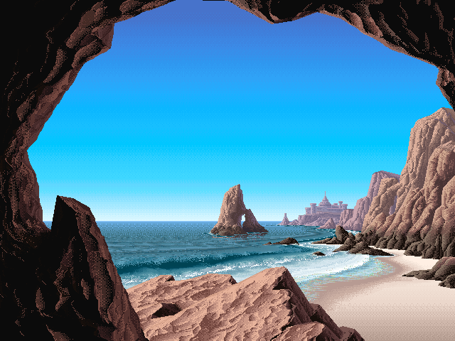
9. sky/refs/ferrari_cc_V29.pngBash: List coast lane study images
ls ~/work/voxsim/crates/vox-paint/studies/coast/img | head -40 # output: ab_c1_beach.png ab_c1_head.png ab_c1_head_near.png ab_c1_low.png ab_c1_region.png ab_c5_cliff.png ab_c5_cliff_near.png ab_c5_reel.png ab_c5_spit.png beach_vs_v29.png cliff_vs_v29.png dunes_8x.png
Read: voxsim/crates/vox-paint/studies/coast/img/ab_c1_head.pngRead: voxsim/crates/vox-paint/studies/coast/v29_surf_4x.png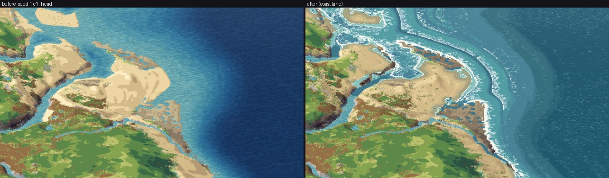
10. voxsim/crates/vox-paint/studies/coast/img/ab_c1_head.png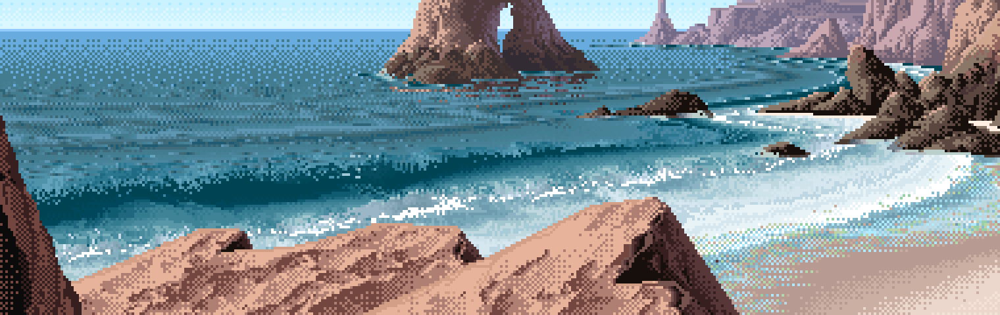
11. voxsim/crates/vox-paint/studies/coast/v29_surf_4x.pngBash: Contact sheets of 2006 Olympic and San Juan obliques
cd ~/work/pixelart-studies/elements/sea; O=~/work/voxsim-data/places/olycoast/obliques; nice python3 src/contact.py notes/oly_2006.png 6 300 $(ls $O/*_2006.jpg | awk 'NR%2==1' | head -48); S=~/work/voxsim-data/places/sanjuan/obliques; ls $S | sed 's/__.*//' | sort | uniq -c | head -40; nice python3 src/contact.py notes/sj_a.png 6 300 $(ls $S/*.jpg | awk 'NR%12==1' | head -54) # output: 60 cattle_point 112 deer_harbor 97 friday_harbor 1 index.geojson 139 jones_island 71 lime_kiln 23 roche_harbor 83 spieden 81 sucia
Read: elements/sea/notes/oly_2006.png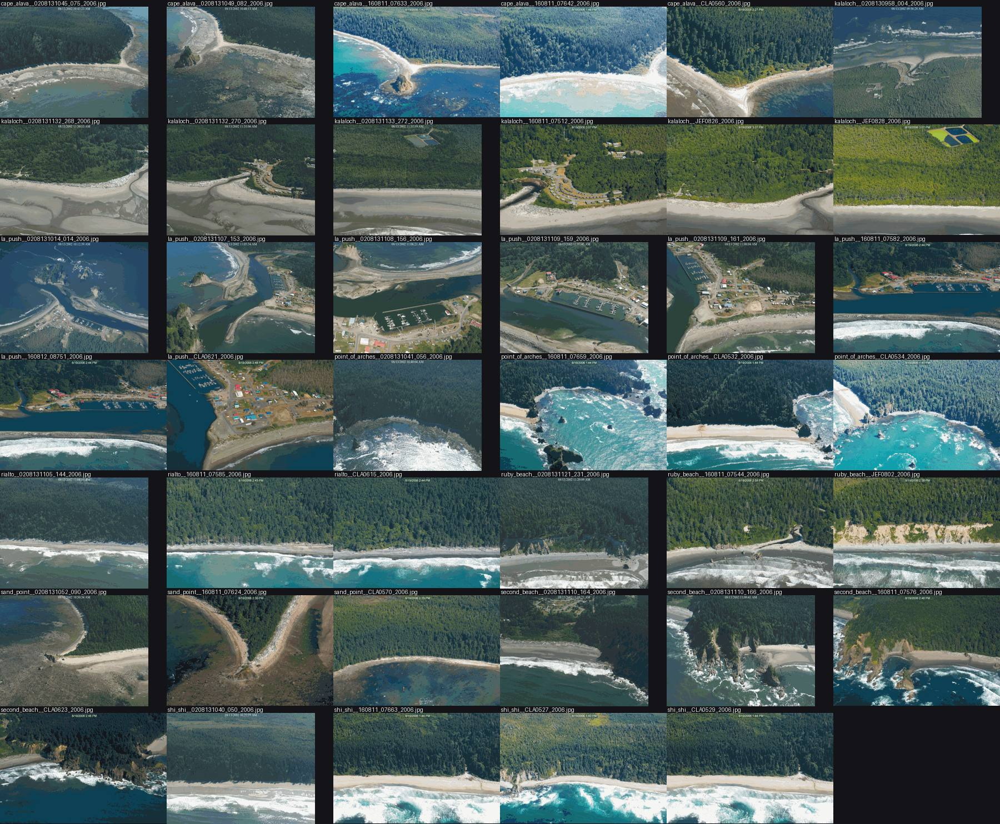
12. elements/sea/notes/oly_2006.pngRead: elements/sea/notes/sj_a.png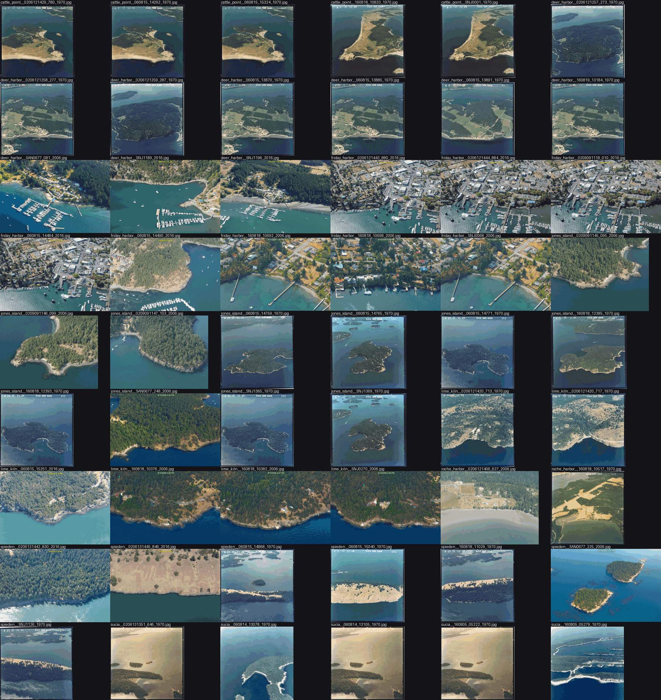
13. elements/sea/notes/sj_a.pngBash: Fetch ground-level sea photos
cd ~/work/pixelart-studies/elements/sea/refs; for q in "Rialto Beach waves" "Ruby Beach sea stacks" "Second Beach La Push sea stack" "Cape Flattery surf" "bull kelp canopy" "Point of the Arches Shi Shi"; do d=ground/$(echo $q | tr ' ' '_'); timeout 300 nice python3 ~/work/pixelart-studies/tools/imgfetch.py "$q" -n 12 -o $d --sheet >/dev/null 2>&1; echo "$q: $(ls $d 2>/dev/null | wc -l)"; done # output: Rialto Beach waves: 0 Ruby Beach sea stacks: 0 Second Beach La Push sea stack: 0 Cape Flattery surf: 0 bull kelp canopy: 0 Point of the Arches Shi Shi: 0
Bash: Debug imgfetch
cd ~/work/pixelart-studies/elements/sea/refs; timeout 200 python3 ~/work/pixelart-studies/tools/imgfetch.py "Rialto Beach" -n 6 -o ground/test --sheet 2>&1 | tail -5; timeout 200 python3 ~/work/pixelart-studies/tools/imgfetch.py "Rialto Beach" -n 6 -o ground/test --sheet --src openverse 2>&1 | tail -5 # output: (eval):1: command not found: timeout (eval):1: command not found: timeout
Bash: Fetch ground photos (with openverse fallback)
cd ~/work/pixelart-studies/elements/sea/refs; for q in "Rialto Beach waves" "Ruby Beach sea stacks" "Second Beach La Push" "Cape Flattery" "bull kelp" "Shi Shi Beach" "Pacific Ocean surf overcast Washington" "kelp forest aerial"; do d=ground/$(echo $q | tr ' ' '_'); nice python3 ~/work/pixelart-studies/tools/imgfetch.py "$q" -n 12 -o $d --sheet >$d.log 2>&1 || nice python3 ~/work/pixelart-studies/tools/imgfetch.py "$q" -n 12 -o $d --sheet --src openverse >>$d.log 2>&1; echo "$q: $(ls $d 2>/dev/null | wc -l)"; tail -1 $d.log; done # output: Exit code 1 (eval):1: no such file or directory: ground/Rialto_Beach_waves.log (eval):1: no such file or directory: ground/Rialto_Beach_waves.log Rialto Beach waves: 0 tail: ground/Rialto_Beach_waves.log: No such file or directory (eval):1: no such file or directory: ground/Ruby_Beach_sea_stacks.log (eval):1: no such file or directory: ground/Ruby_Beach_sea_stacks.log Ruby Beach sea stacks: 0 tail: ground/Ruby_Beach_sea_stacks.log: No such file or directory (eval):1: no such file or directory: ground/Second_Beach_La_Push.log (eval):1: no such file or directory: ground/Second_Beach_La_Push.log Second Beach La Push: 0 tail: ground/Second_Beach_La_Push.log: No such file or directory (eval):1: no such file or directory: ground/Cape_Flattery.log (eval):1: no such file or directory: ground/Cape_Flattery.log Cape Flattery: 0 tail: ground/Cape_Flattery.log: No such file or directory (eval):1: no such file or directory: ground/bull_kelp.log (eval):1: no such file or directory: ground/bull_kelp.log bull kelp: 0 tail: ground/bull_kelp.log: No such file or directory (eval):1: no such file or directory: ground/Shi_Shi_Beach.log (eval):1: no such file or directory: ground/Shi_Shi_Beach.log Shi Shi Beach: 0 tail: ground/Shi_Shi_Beach.log: No such file or directory (eval):1: no such file or directory: ground/Pacific_Ocean_surf_overcast_Washington.log (eval):1: no such file or directory: ground/Pacific_Ocean_surf_overcast_Washington.log Pacific Ocean surf overcast Washington: 0 tail: ground/Pacific_Ocean_surf_overcast_Washington.log: No such file or directory (eval):1: no such file or directory: ground/kelp_forest_aerial.log (eval):1: no such file or directory: ground/kelp_forest_aerial.log kelp forest aerial: 0 tail: ground/kelp_forest_aerial.log: No such file or directory
Bash: Fetch ground photos into created dir
cd ~/work/pixelart-studies/elements/sea/refs; mkdir -p ground; for q in "Rialto Beach waves" "Ruby Beach sea stacks" "Second Beach La Push" "Cape Flattery" "bull kelp" "Shi Shi Beach" "Pacific Ocean surf overcast" "kelp forest aerial"; do d=ground/$(echo $q | tr ' ' '_'); nice python3 ~/work/pixelart-studies/tools/imgfetch.py "$q" -n 12 -o $d --sheet >$d.log 2>&1 || nice python3 ~/work/pixelart-studies/tools/imgfetch.py "$q" -n 12 -o $d --sheet --src openverse >>$d.log 2>&1; echo "$q: $(ls $d 2>/dev/null | wc -l)"; tail -1 $d.log; done # output: Exit code 144 Rialto Beach waves: 13 'Rialto Beach waves': 11 images -> ground/Rialto_Beach_waves Ruby Beach sea stacks: 14 'Ruby Beach sea stacks': 12 images -> ground/Ruby_Beach_sea_stacks Second Beach La Push: 14 'Second Beach La Push': 12 images -> ground/Second_Beach_La_Push
Bash: Fetch remaining ground photos in background
cd ~/work/pixelart-studies/elements/sea/refs; cat > fetch_ground.sh <<'EOF' cd "$(dirname "$0")" for q in "Cape Flattery" "bull kelp" "Shi Shi Beach" "Pacific Ocean surf overcast" "kelp forest aerial" "Olympic coast fog" "sea stack waves crashing Oregon" "surge channel rocky shore" "rip current aerial" "Kalaloch beach"; do d=ground/$(echo $q | tr ' ' '_'); [ -d $d ] && continue; nice python3 ~/work/pixelart-studies/tools/imgfetch.py "$q" -n 12 -o $d --sheet >$d.log 2>&1 || nice python3 ~/work/pixelart-studies/tools/imgfetch.py "$q" -n 12 -o $d --sheet --src openverse >>$d.log 2>&1; echo "$q: $(ls $d 2>/dev/null | wc -l)"; done echo ALLDONE EOF nohup bash fetch_ground.sh > fetch_ground.log 2>&1 & echo started # output: started
Bash: Check fetched photo files
cd ~/work/pixelart-studies/elements/sea/refs/ground; ls Rialto_Beach_waves; cat Rialto_Beach_waves/sources.tsv 2>/dev/null | head -3 # output: _sheet.jpg commons_Driftwood_along_Rialto_Beach_2022_2_jpg_dc1feddd.jpg commons_Driftwood_along_Rialto_Beach_2022_3_jpg_2ae88538.jpg commons_Photographer_ocean_waves_island_seastack_rialto__f41bbb3e.jpg commons_Rialto_Beach_54018517457_jpg_03d78ab8.jpg commons_Rialto_Beach_54019846500_jpg_261ccc52.jpg openverse_Ocean_Wave_Rialto_Beach_La_Push_Washington_c0877b5a.jpg openverse_Rialto_Beach_Waves_18b4011e.jpg openverse_Rialto_Beach_Waves_and_Seastack_52e0b551.jpg openverse_Rialto_Beach_Waves_and_Seastacks_copy_1d7aa31b.jpg openverse_Rialto_Beach_e939d53a.jpg openverse_Rialto_United_States_Washington_Olympic_National_a685e842.jpg sources.tsv openverse_Rialto_Beach_Waves_18b4011e.jpg Rialto Beach Waves CC BY-NC-SA 2.0 jonah j e https://www.flickr.com/photos/18883919@N00/3862567533 openverse_Rialto_Beach_Waves_and_Seastack_52e0b551.jpg Rialto Beach Waves and Seastack CC BY-NC-ND 2.0 ScottElliottSmithson https://www.flickr.com/photos/44082511@N08/52239463724 openverse_Rialto_Beach_Waves_and_Seastacks_copy_1d7aa31b.jpg Rialto Beach Waves and Seastacks copy CC BY-NC-ND 2.0 ScottElliottSmithson https://www.flickr.com/photos/44082511@N08/52234871811
Read: elements/sea/refs/ground/Rialto_Beach_waves/_sheet.jpgRead: elements/sea/refs/ground/Second_Beach_La_Push/_sheet.jpg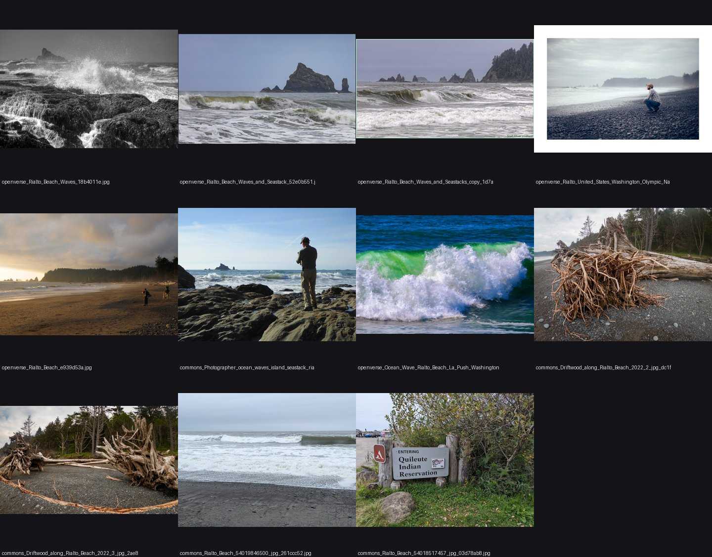
14. elements/sea/refs/ground/Rialto_Beach_waves/_sheet.jpg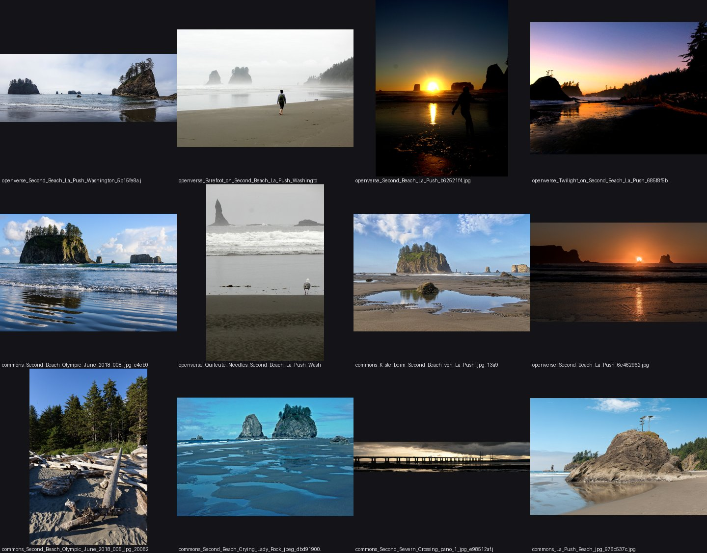
15. elements/sea/refs/ground/Second_Beach_La_Push/_sheet.jpgToolSearch: select:WebSearch,WebFetchWebSearch: Washington DNR floating kelp canopy survey outer coast Nereocystis Macrocystis hectares
Washington DNR floating kelp canopy survey outer coast Nereocystis Macrocystis hectares
# result:
Web search results for query: "Washington DNR floating kelp canopy survey outer coast Nereocystis Macrocystis hectares"
Links: [{"title":"2. Kelp | Encyclopedia of Puget Sound","url":"https://www.eopugetsound.org/science-review/2-kelp"},{"title":"Kelp Monitoring | Department of Natural Resources - WA DNR","url":"https://dnr.wa.gov/aquatics/aquatic-science/nearshore-habitat-program/kelp-monitoring"},{"title":"WA State Floating Kelp Monitoring: Coast, Strait, Aquatic Reserves | Washington State Geospatial Open Data Portal","url":"https://geo.wa.gov/datasets/wadnr::wa-state-floating-kelp-monitoring-coast-strait-aquatic-reserves"},{"title":"Floating Kelp - Survey Count | Washington State Geospatial Open Data Portal","url":"https://geo.wa.gov/datasets/wadnr::floating-kelp-survey-count"},{"title":"WA Floating Kelp Monitoring - Coast, Strait, Aquatic Reserves","url":"https://geo.wa.gov/datasets/wadnr::wa-floating-kelp-monitoring-coast-strait-aquatic-reserves"},{"title":"A4 - 1 Appendix 4: Draft sub-basin report – Western Strait of Juan de Fuca","url":"https://dnr.wa.gov/sites/default/files/2025-03/aqr_nrsh_appendix_4_subasin_report_wstrn.pdf"},{"title":"Long-term trend status | Washington State Geospatial Open Data Portal","url":"https://geo.wa.gov/datasets/wadnr::long-term-trend-status"},{"title":"WADNR Kelp Kayak Survey Data | Washington State Geospatial Open Data Portal","url":"https://geo.wa.gov/datasets/wadnr::wadnr-kelp-kayak-survey-data"},{"title":"Floating Kelp Persistence - Proportion of Years Present | Washington State Geospatial Open Data Portal","url":"https://geo.wa.gov/datasets/wadnr::floating-kelp-persistence-proportion-of-years-present"},{"title":"Successional Dynamics and Seascape-Level Patterns of Microbial Communities on the Canopy-Forming Kelps Nereocystis luetkeana and Macrocystis pyrifera","url":"https://www.ncbi.nlm.nih.gov/pmc/articles/PMC6399156/"}]
Based on the search results, here's information about the Washington DNR floating kelp canopy survey:
**Survey Program:**
The Nearshore Habitat Program has conducted annual aerial surveys of floating kelp canopy along the outer coast and Strait of Juan de Fuca since 1989. Monitoring was expanded to include DNR Aquatic Reserves in 2010 (Smith Island) and 2011 (Cypress Island and Cherry Point).
**Species Monitored:**
Two species of canopy-forming kelp are monitored: Bull kelp (Nereocystis luetkeana) and giant kelp (Macrocystis pyrifera).
**Historical Extent:**
A 2005 report documented a total of approximately 1,700 hectares of floating kelp (Nereocystis and Macrocystis) on Washington's outer coast and the Strait of Juan de Fuca.
**Data Availability:**
Annual kelp inventories on the outer coast and Strait of Juan de Fuca are available from 1989 to 2024 and throughout three DNR Aquatic Reserves: Smith and Minor Islands, Cypress Island, and Cherry Point from 2010 to 2024. The kelp data can be explored interactively.
REMINDER: You MUST include the sources above in your response to the user using markdown hyperlinks.WebSearch: bull kelp canopy aerial appearance floats blades surface canopy density per square meter Nereocystis
bull kelp canopy aerial appearance floats blades surface canopy density per square meter Nereocystis
# result:
Web search results for query: "bull kelp canopy aerial appearance floats blades surface canopy density per square meter Nereocystis"
Links: [{"title":"Passive remote sensing technology for mapping bull kelp (Nereocystis luetkeana): A review of techniques and regional case study - ScienceDirect","url":"https://www.sciencedirect.com/science/article/pii/S2351989419301076"},{"title":"Frontiers | Capturing accurate kelp canopy extent: integrating tides, currents, and species-level morphology in kelp remote sensing","url":"https://www.frontiersin.org/journals/environmental-science/articles/10.3389/fenvs.2024.1338483/full"},{"title":"Bull kelp | Monterey Bay Aquarium","url":"https://www.montereybayaquarium.org/animals-the-ocean/animals-a-to-z/bull-kelp"},{"title":"Annual Status of the Fisheries Report 2-1 2. BULL KELP","url":"https://nrm.dfg.ca.gov/FileHandler.ashx?DocumentID=34384"},{"title":"CA Marine Species Portal","url":"https://marinespecies.wildlife.ca.gov/kelp/the-species/"},{"title":"Nereocystis - You Rock - Mayne Island Conservancy","url":"https://mayneconservancy.ca/bull-kelp/"},{"title":"The Spatial Distribution of Bull Kelp (Nereocystis leutkeana ...","url":"https://kachemakbayreserve.org/wp-content/uploads/2024/01/Schoch-2001-The-spatial-distribution-of-bull-kelp-Nereocystis-leutkeana-in-the-Kachemak-Bay-Research-Reserve.pdf"},{"title":"Bull Kelp | The Mysterious World of Bull Kelp","url":"https://bullkelp.info/characters/bull-kelp"},{"title":"www.frontiersin.org","url":"https://www.frontiersin.org/journals/environmental-science/articles/10.3389/fenvs.2022.690963/pdf"}]
Based on the search results, here's information about bull kelp canopy aerial appearance, floats, blades, and canopy density:
## Aerial Appearance
From an overhead or satellite view, floating bull kelp shows the bulb and part of the stipe emerged, with the blades submerged in water. The float supports 30 to 64 long, narrow blades that form a golden-brown canopy on the water's surface.
## Floats and Blades
Bull kelp has a flexible stem (stipe) extending 30 to 60 feet, gradually enlarging to form a single bulbous structure (pneumatocyst) that is positively buoyant. The pneumatocyst provides lift to the alga's blades, allowing it to form the dense canopies observed off the Pacific coast.
## Canopy Density
Regarding density measurements, aerial-based monitoring methods used in British Columbia define dense beds as greater than 10 plants per 10 square metres, and sparse as fewer than 10 plants. The density of kelp canopy at the surface affects the reflectance detected by sensors and their ability to discriminate kelp from water.
REMINDER: You MUST include the sources above in your response to the user using markdown hyperlinks.Bash: Crop full-res details of stack, streak, kelp
cd ~/work/pixelart-studies/elements/sea; cat > src/crop.py <<'EOF'
import sys
from PIL import Image
# crop.py src out cx cy w h [scale] (coords in FULL-res pixels)
s,o=sys.argv[1],sys.argv[2];cx,cy,w,h=map(int,sys.argv[3:7]);sc=float(sys.argv[7]) if len(sys.argv)>7 else 1
im=Image.open(s).convert('RGB');c=im.crop((cx-w//2,cy-h//2,cx+w//2,cy+h//2))
if sc!=1:c=c.resize((int(c.width*sc),int(c.height*sc)),Image.LANCZOS)
c.save(o)
EOF
O=~/work/voxsim-data/places/olycoast/obliques
python3 src/crop.py $O/point_of_arches__060819_15405_2016.jpg notes/poa_stack.png 1840 1760 1400 900
python3 src/crop.py $O/point_of_arches__060819_15405_2016.jpg notes/poa_streak.png 2100 2300 1600 700
python3 src/crop.py $O/cape_alava__060819_15434_2016.jpg notes/ca_kelp.png 2100 2300 1400 900
# output:
(Bash completed with no output)Read: elements/sea/notes/poa_stack.pngRead: elements/sea/notes/poa_streak.pngRead: elements/sea/notes/ca_kelp.png 16. elements/sea/notes/ca_kelp.png
16. elements/sea/notes/ca_kelp.png
 17. elements/sea/notes/poa_streak.png
17. elements/sea/notes/poa_streak.png
 18. elements/sea/notes/poa_stack.png
18. elements/sea/notes/poa_stack.png
Bash: Check olycoast ortho and lidar data
cd ~/work/voxsim-data/places/olycoast; ls ortho pack src | head -30; du -sh ortho pack src # output: ortho: rialto_1024m.png ruby_beach_1024m.png pack: cc chm elev esrc evt geol geol_legend.json lc place.json soil soil_legend.json streamda strip_tiles.json water wdepth wsurf src: cudem dem1 dem10 histtopo landfire soils tsheets 4.9M ortho 4.0G pack 137M src
Bash: Inspect place metadata and bathymetry source
cd ~/work/voxsim-data/places/olycoast; head -c 1500 pack/place.json; echo; ls src/cudem | head; ls pack/elev | head -5; ls pack/elev | wc -l
# output:
{
"slug": "olycoast",
"name": "Olympic Peninsula Pacific coast (Shi Shi / Cape Alava to Kalaloch)",
"crs": "EPSG:26910",
"vertical": "NAVD88 metres",
"tile_m": 1000,
"bbox_lonlat": [
-124.8,
47.55,
-124.25,
48.31
],
"tiles": [
[
364,
5310
],
[
364,
5311
],
[
364,
5312
],
[
364,
5313
],
[
364,
5314
],
[
364,
5315
],
[
364,
5316
],
[
364,
5317
],
[
364,
5318
],
[
364,
5319
],
[
364,
5320
],
[
365,
5307
],
[
365,
5308
],
[
365,
5309
],
[
365,
5310
],
[
365,
5311
],
[
365,
5312
],
[
365,
5313
],
[
365,
5314
],
[
365,
5315
],
[
365,
5316
],
[
365,
5317
],
[
365,
5318
],
[
365,
5319
],
[
365,
5320
],
[
365,
5336
],
[
365,
5337
],
[
365,
5338
],
[
366,
5305
],
[
366,
5306
],
[
366,
5307
],
[
366,
5308
],
[
366,
5309
],
[
366,
5310
],
[
366,
5311
],
[
366,
5312
],
[
366,
5313
],
[
366,
5314
],
[
366,
5315
],
[
366,
5316
],
[
366,
5317
],
[
366,
5318
],
[
366,
5319
],
[
366,
5320
],
[
366,
5333
],
[
366,
5334
],
[
366,
5335
],
[
366,
5336
],
[
366,
5337
],
[
366,
5338
],
[
364_5310.zst
364_5311.zst
364_5312.zst
364_5313.zst
364_5314.zst
1328Bash: Find pack tile loaders
ls ~/work/voxsim-data/places/olycoast/src/cudem | head; ls ~/work/voxsim-wt/place-yakima/studies/yakima/gis/ | head -30; grep -rn "zst" ~/work/voxsim-wt/place-yakima/studies/yakima/gis/*.py | head -5 # output: __pycache__ cand_goose.jpg cand_mid.jpg cand_roza.jpg cand_umtanum.jpg cands.jpg crop.py dem1_689900_5193400.tif dem1_689900_5194900.tif dem1_691400_5193400.tif dem1_691400_5194900.tif dem5_686000_5179000.tif dem5_686000_5183000.tif dem5_686000_5187000.tif dem5_686000_5191000.tif dem5_686000_5195000.tif dem5_686000_5199000.tif dem5_686000_5203000.tif dem5_690000_5179000.tif dem5_690000_5183000.tif dem5_690000_5187000.tif dem5_690000_5191000.tif dem5_690000_5195000.tif dem5_690000_5199000.tif dem5_690000_5203000.tif dem5_694000_5179000.tif dem5_694000_5183000.tif dem5_694000_5187000.tif dem5_694000_5191000.tif dem5_694000_5195000.tif
Bash: Check DEM files and python raster libs
ls -la ~/work/voxsim-data/places/olycoast/src/cudem ~/work/voxsim-data/places/olycoast/src/dem1 | head -20; python3 -c "import rasterio" 2>&1; python3 -c "import zstandard;print('zstd ok')"; grep -rln "wdepth\|\.zst" ~/work/voxsim/crates/*/src 2>/dev/null | head -5
# output:
~/work/voxsim-data/places/olycoast/src/cudem:
total 0
drwxr-xr-x 2 user staff 64 Sep 26 12:59 .
drwxr-xr-x 9 user staff 288 Sep 26 10:42 ..
~/work/voxsim-data/places/olycoast/src/dem1:
total 0
drwxr-xr-x 2 user staff 64 Sep 26 12:59 .
drwxr-xr-x 9 user staff 288 Sep 26 10:42 ..
zstd ok
~/work/voxsim/crates/vox-app/src/wiring.rs
~/work/voxsim/crates/vox-app/src/cli.rs
~/work/voxsim/crates/vox-app/src/viewer/map.rs
~/work/voxsim/crates/vox-jev/src/lib.rs
~/work/voxsim/crates/vox-studio/src/snap.rsBash: Find pack tile format in voxsim code
cd ~/work/voxsim; grep -rn "pack/\|\"elev\"\|wdepth" crates --include=*.rs | grep -v target | head -15 # output: (eval):1: no matches found: --include=*.rs
Bash: Search pack format usage
cd ~/work/voxsim; grep -rn --include='*.rs' -E "wdepth|\"elev\"" crates | head -10; grep -rln --include='*.py' "zstandard" ~/work/voxsim ~/work/voxsim-data 2>/dev/null | head # output: crates/vox-cine/src/main.rs:74: "elev" => k.elev = v, crates/vox-play/src/script.rs:94: "elev" => Step::Elev(one(n()?)?), crates/vox-paint/examples/coast.rs:33: "elev" => v.elev_deg = x, crates/vox-paint/examples/camera.rs:26: "elev" => v.elev_deg = x, crates/vox-app/src/viewer/map.rs:19: wdepth: Vec<f32>, crates/vox-app/src/viewer/map.rs:44: wdepth: vec![0.0; n], crates/vox-app/src/viewer/map.rs:112: self.wdepth[i] = 0.0; crates/vox-app/src/viewer/map.rs:131: self.wdepth[i] = depth; crates/vox-app/src/viewer/map.rs:149: let d = self.wdepth[i]; crates/vox-app/src/viewer/map.rs:179: Some((self.hmap[i], self.wdepth[i])) ~/work/voxsim/.claude/worktrees/angry-pare-31e5ae/tools/distill/build.py ~/work/voxsim/.claude/worktrees/angry-pare-31e5ae/tools/distill/encode.py ~/work/voxsim/.claude/worktrees/angry-pare-31e5ae/tools/distill/common.py ~/work/voxsim/.claude/worktrees/angry-pare-31e5ae/tools/distill/featurize.py ~/work/voxsim/.claude/worktrees/angry-pare-31e5ae/tools/distill/modal/train_s3.py ~/work/voxsim/.claude/worktrees/angry-pare-31e5ae/tools/decisions/index.py ~/work/voxsim/.claude/worktrees/angry-pare-31e5ae/tools/decisions/q.py ~/work/voxsim/.claude/worktrees/angry-pare-31e5ae/tools/distill/modal/train_s2.py ~/work/voxsim/.claude/worktrees/angry-pare-31e5ae/tools/decisions/view.py ~/work/voxsim/.claude/worktrees/angry-pare-31e5ae/tools/decisions/test_index.py
Bash: Decode a pack tile to learn format
cd ~/work/voxsim-data/places/olycoast/pack; python3 -c " import zstandard,numpy as np for k in ['elev','wdepth','wsurf','esrc']: import glob;f=sorted(glob.glob(k+'/*.zst'))[0] b=zstandard.ZstdDecompressor().decompress(open(f,'rb').read(),max_output_size=1<<28);print(k,f,len(b),b[:16]) " # output: elev elev/364_5310.zst 4000000 b'\x00\x00\xc0\x7f\x00\x00\xc0\x7f\x00\x00\xc0\x7f\x00\x00\xc0\x7f' wdepth wdepth/364_5310.zst 1000000 b'\x00\x00\x00\x00\x00\x00\x00\x00\x00\x00\x00\x00\x00\x00\x00\x00' wsurf wsurf/364_5310.zst 4000000 b'\x00\x00\xc0\x7f\x00\x00\xc0\x7f\x00\x00\xc0\x7f\x00\x00\xc0\x7f' esrc esrc/364_5310.zst 1000000 b'\x00\x00\x00\x00\x00\x00\x00\x00\x00\x00\x00\x00\x00\x00\x00\x00'
Bash: Get coordinates of key oblique photos
python3 -c "import pyproj;print('pyproj')" 2>&1; cd ~/work/voxsim-data/places/olycoast/obliques; python3 -c "
import json;d=json.load(open('index.geojson'))
for f in d['features']:
p=f['properties']
if p.get('PHOTO_2016') in ('060819_15405','060819_15434','0208131107_153','060819_15405'): print(p['PHOTO_2016'],f['geometry']['coordinates'],p['LANDMARK_DS'])
"
# output:
pyprojBash: Search index for key photo IDs
cd ~/work/voxsim-data/places/olycoast/obliques; python3 -c "
import json;d=json.load(open('index.geojson'))
ks=set(k for f in d['features'] for k,v in f['properties'].items() if isinstance(v,str) and '15405' in v);print(ks)
for f in d['features']:
p=f['properties']
if any(isinstance(v,str) and ('15405' in v or '15434' in v or '0208131107_153' in v) for v in p.values()): print({k:v for k,v in p.items() if 'URL' not in k},f['geometry']['coordinates'])
" | head
# output:
{'PHOTO_RIGHT', 'Photo_2006_URL', 'PHOTO_LEFT', 'Photo_NR_URL', 'PHOTO_2006', 'PHOTO_LEFT_URL', 'PHOTO_RIGHT_URL', 'FULLSIZE_URL', 'PHOTO_NR'}
{'PHOTO_NR': '0208131107_153', 'Vintage': 2000, 'COUNTY_NM': 'Clallam', 'LANDMARK_DS': '', 'PHOTO_LEFT': '0208131107_152', 'PHOTO_2006': '060819_15749', 'PHOTO_RIGHT': '0208131107_154', 'PHOTO_2000': None, 'PHOTO_1990': 'CLA0619', 'PHOTO_1970': 'CLA0677_193', 'PHOTO_DT': '8/13/2002', 'PHOTO_DATE': '8/13/2002', 'PHOTO_2016': '160812_08751', 'OBJECTID': 16026} [-124.64333980620763, 47.90800619089202]
{'PHOTO_NR': '0208131107_154', 'Vintage': 2000, 'COUNTY_NM': 'Clallam', 'LANDMARK_DS': '', 'PHOTO_LEFT': '0208131107_153', 'PHOTO_2006': '060819_15741', 'PHOTO_RIGHT': '0208131107_155', 'PHOTO_2000': None, 'PHOTO_1990': 'CLA0619', 'PHOTO_1970': 'CLA0677_193', 'PHOTO_DT': '8/13/2002', 'PHOTO_DATE': '8/13/2002', 'PHOTO_2016': '160811_07578', 'OBJECTID': 16030} [-124.6472236238295, 47.90552129141443]
{'PHOTO_NR': '0208131107_152', 'Vintage': 2000, 'COUNTY_NM': 'Clallam', 'LANDMARK_DS': '', 'PHOTO_LEFT': '0208131106_151', 'PHOTO_2006': '060819_15740', 'PHOTO_RIGHT': '0208131107_153', 'PHOTO_2000': None, 'PHOTO_1990': 'CLA0620', 'PHOTO_1970': 'CLA0677_193', 'PHOTO_DT': '8/13/2002', 'PHOTO_DATE': '8/13/2002', 'PHOTO_2016': '160811_07578', 'OBJECTID': 16032} [-124.64951872865058, 47.90457527862659]
{'PHOTO_NR': '060819_15404', 'Vintage': 2006, 'COUNTY_NM': 'Clallam', 'LANDMARK_DS': 'Pacific Ocean', 'PHOTO_LEFT': '060819_15403', 'PHOTO_2006': None, 'PHOTO_RIGHT': '060819_15405', 'PHOTO_2000': '0208131041_054', 'PHOTO_1990': 'CLA0533', 'PHOTO_1970': None, 'PHOTO_DT': '8/19/2006 1:44:20 PM', 'PHOTO_DATE': '8/19/2006', 'PHOTO_2016': '160811_07661', 'OBJECTID': 32078} [-124.69766664831683, 48.24733330589672]
{'PHOTO_NR': '060819_15405', 'Vintage': 2006, 'COUNTY_NM': 'Clallam', 'LANDMARK_DS': 'Pacific Ocean', 'PHOTO_LEFT': '060819_15404', 'PHOTO_2006': None, 'PHOTO_RIGHT': '060819_15406', 'PHOTO_2000': '0208131041_056', 'PHOTO_1990': 'CLA0534', 'PHOTO_1970': None, 'PHOTO_DT': '8/19/2006 1:44:35 PM', 'PHOTO_DATE': '8/19/2006', 'PHOTO_2016': '160811_07659', 'OBJECTID': 32079} [-124.70600007217087, 48.245666754940366]
{'PHOTO_NR': '060819_15406', 'Vintage': 2006, 'COUNTY_NM': 'Clallam', 'LANDMARK_DS': 'Pacific Ocean, Point of Arches', 'PHOTO_LEFT': '060819_15405', 'PHOTO_2006': None, 'PHOTO_RIGHT': '060819_15407', 'PHOTO_2000': '0208131041_055', 'PHOTO_1990': 'CLA0533', 'PHOTO_1970': None, 'PHOTO_DT': '8/19/2006 1:44:57 PM', 'PHOTO_DATE': '8/19/2006', 'PHOTO_2016': '160811_07658', 'OBJECTID': 32080} [-124.70899985951827, 48.250500085466484]
{'PHOTO_NR': '060819_15433', 'Vintage': 2006, 'COUNTY_NM': 'Clallam', 'LANDMARK_DS': 'Pacific Ocean', 'PHOTO_LEFT': '060819_15432', 'PHOTO_2006': None, 'PHOTO_RIGHT': '060819_15434', 'PHOTO_2000': '0208131045_075', 'PHOTO_1990': 'CLA0555', 'PHOTO_1970': None, 'PHOTO_DT': '8/19/2006 1:48:25 PM', 'PHOTO_DATE': '8/19/2006', 'PHOTO_2016': '160811_07642', 'OBJECTID': 32107} [-124.72799990690378, Bash: Load DEM around Point of Arches
mkdir -p ~/work/pixelart-studies/elements/sea/src; cat > ~/work/pixelart-studies/elements/sea/src/dem.py <<'EOF'
"""Read the olycoast/sanjuan 1 m pack tiles (float32 1000x1000, NaN nodata, EPSG:26910, NAVD88 m)."""
import numpy as np, zstandard, os, pyproj
ROOT = os.path.expanduser('~/work/voxsim-data/places')
_T = pyproj.Transformer.from_crs(4326, 26910, always_xy=True)
def lonlat_to_utm(lon, lat): return _T.transform(lon, lat)
def tile(place, layer, tx, ty, dtype=np.float32):
f = f'{ROOT}/{place}/pack/{layer}/{tx}_{ty}.zst'
if not os.path.exists(f): return None
b = zstandard.ZstdDecompressor().decompress(open(f, 'rb').read(), max_output_size=1 << 28)
a = np.frombuffer(b, dtype=dtype)
n = int(round(np.sqrt(a.size))); return a.reshape(n, n)
def window(place, layer, x0, y0, x1, y1, dtype=np.float32):
"""Mosaic [x0,x1) x [y0,y1) in UTM metres; returns array with row 0 = north (y1)."""
W, H = int(x1 - x0), int(y1 - y0)
out = np.full((H, W), np.nan, np.float32)
for tx in range(int(x0 // 1000), int((x1 - 1) // 1000) + 1):
for ty in range(int(y0 // 1000), int((y1 - 1) // 1000) + 1):
t = tile(place, layer, tx, ty, dtype)
if t is None: continue
# guess orientation: row 0 = north edge of tile
ox, oy = tx * 1000, ty * 1000
ax0, ax1 = max(x0, ox), min(x1, ox + 1000); ay0, ay1 = max(y0, oy), min(y1, oy + 1000)
if ax0 >= ax1 or ay0 >= ay1: continue
sub = t[int(oy + 1000 - ay1):int(oy + 1000 - ay0), int(ax0 - ox):int(ax1 - ox)]
out[int(y1 - ay1):int(y1 - ay0), int(ax0 - x0):int(ax1 - x0)] = sub
return out
EOF
cd ~/work/pixelart-studies/elements/sea/src; python3 -c "
from dem import *
x,y=lonlat_to_utm(-124.706,48.2457);print(x,y)
a=window('olycoast','elev',x-800,y-800,x+800,y+800);import numpy as np
print(np.nanmin(a),np.nanmax(a),np.isnan(a).mean())
from PIL import Image
v=np.nan_to_num(a,nan=-99);im=np.clip((v+20)*4,0,255).astype(np.uint8);Image.fromarray(im).save('../notes/poa_dem.png')
"
# output:
Exit code 1
Traceback (most recent call last):
File "<string>", line 4, in <module>
File "~/work/pixelart-studies/elements/sea/src/dem.py", line 25, in window
out[int(y1 - ay1):int(y1 - ay0), int(ax0 - x0):int(ax1 - x0)] = sub
~~~^^^^^^^^^^^^^^^^^^^^^^^^^^^^^^^^^^^^^^^^^^^^^^^^^^^^^^^^^^
ValueError: could not broadcast input array from shape (783,453) into shape (784,452)
373347.6086440167 5345016.182532335Round the window to integers.
Bash: Retry DEM window
cd ~/work/pixelart-studies/elements/sea/src; sed -i '' 's/ W, H = int(x1 - x0), int(y1 - y0)/ x0, y0, x1, y1 = int(round(x0)), int(round(y0)), int(round(x1)), int(round(y1))\n W, H = x1 - x0, y1 - y0/' dem.py; python3 -c "
from dem import *
x,y=lonlat_to_utm(-124.706,48.2457)
a=window('olycoast','elev',x-800,y-800,x+800,y+800);import numpy as np
print(np.nanmin(a),np.nanmax(a),np.isnan(a).mean())
from PIL import Image
v=np.nan_to_num(a,nan=-99);im=np.clip((v+20)*4,0,255).astype(np.uint8);Image.fromarray(im).save('../notes/poa_dem.png')
"
# output:
-26.906824 71.1451 0.0Read: elements/sea/notes/poa_dem.png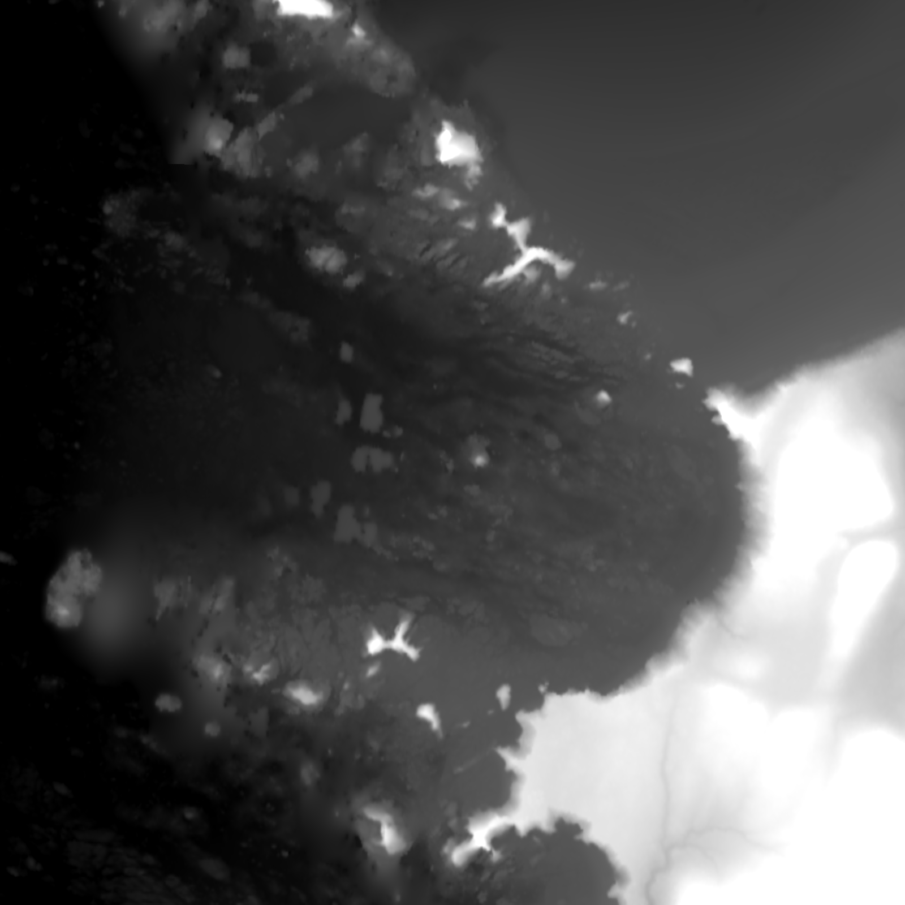
19. elements/sea/notes/poa_dem.pngBash: Read drape tool header
cd ~/work/voxsim-wt/place-yakima/studies/yakima/gis/; wc -l drape.py; sed -n 1,60p drape.py
# output:
59 drape.py
"""Oblique 'photo' of the real tile: NAIP draped on the 1 m DEM, projected exactly like vox-paint
(orthographic, row = t*ty - z*zy per ppm; ty = sin(elev), zy = zf*cos(elev)/cos(30))."""
import numpy as np, sys, math
from PIL import Image
Z=np.load('tile_dem1.npy'); I=np.load('tile_naip05.npy')
X0,Y1=689900,5196400 # tile NW corner (UTM); row 0 = north
def basis_yaw(yaw):
s,c=math.sin(yaw),math.cos(yaw); return (c,-s),(-s,-c)
def render(cx,cy,mpp,yaw_deg=45,elev=30,zf=1.0,W=640,H=360,step=0.5,out=None,fov=50.0,persp=None,zc=None):
ppm=1/mpp; R,V=basis_yaw(math.radians(yaw_deg))
ty=math.sin(math.radians(elev)); zy=zf*math.cos(math.radians(elev))/math.cos(math.radians(30))
# sample grid in world metres (local: x east from X0, y north from tile south)
def ss(a,b,x):
t=min(max((x-a)/(b-a),0),1); return t*t*(3-2*t)
pw=persp if persp is not None else ss(26,16,elev)
P=pw*math.tan(math.radians(fov/2))/(W*0.5*mpp) if pw>1e-3 else 0.0
half=(W*mpp*0.75+H*mpp*2.5) if P==0 else 1500
step=step if P==0 else 1.0
n=int(2*half/step)
xs=cx-half+np.arange(n)*step; ys=cy-half+np.arange(n)*step
gx,gy=np.meshgrid(xs,ys)
ok=(gx>=0)&(gx<2999)&(gy>=0)&(gy<2999)
gx=gx[ok]; gy=gy[ok]
# bilinear DEM
col=gx; row=2999-gy
c0=np.floor(col).astype(int); r0=np.floor(row).astype(int); tc=col-c0; tr=row-r0
c1=np.minimum(c0+1,2999); r1=np.minimum(r0+1,2999)
z=(Z[r0,c0]*(1-tc)*(1-tr)+Z[r0,c1]*tc*(1-tr)+Z[r1,c0]*(1-tc)*tr+Z[r1,c1]*tc*tr)
colr=I[np.clip((row*2).astype(int),0,5999),np.clip((col*2).astype(int),0,5999)]
if zc is None: # vox-studio's ground_m: mean ground over a 9x9 grid, step 30*mpp m
st=max(min(mpp*30,30.0),2.0); acc=[]
for j in range(-4,5):
for i in range(-4,5):
px=min(max(cx+i*st,0),2999); py=min(max(cy+j*st,0),2999); acc.append(Z[int(2999-py),int(px)])
zc=float(np.mean(acc))
dx=gx-cx; dy=gy-cy
s2=math.sqrt(2.0)
u=dx*R[0]+dy*R[1]; t=dx*V[0]+dy*V[1]
ox=u*ppm; oy=(t*ty-(z-zc)*zy)*ppm
if P>0:
sc=1/(1+np.maximum(-t*s2*P,-0.9)) # (perspective depth in vox-paint's t units: metres * sqrt 2)
sc=np.where(t*s2 < 0.6/P, sc, 0) # near clip
ox=ox*sc; oy=oy*sc
sx=(ox+W/2).astype(int); sy=(oy+H/2).astype(int)
m=(sx>=0)&(sx<W)&(sy>=0)&(sy<H)
X=sx[m]; Y=sy[m]; T=t[m].astype(np.float32); C=colr[m]
offs=[(0,0),(1,0),(0,1),(1,1),(0,2),(1,2)]
XX=np.concatenate([X+dx for dx,dy in offs]); YY=np.concatenate([Y+dy for dx,dy in offs])
TT=np.concatenate([T-0.001*(dx+dy) for dx,dy in offs]); CC=np.concatenate([C]*len(offs))
k=(XX<W)&(YY<H); XX,YY,TT,CC=XX[k],YY[k],TT[k],CC[k]
order=np.argsort(TT,kind='stable')
img=np.full((H,W,3),(150,180,215),np.uint8)
img[YY[order],XX[order]]=CC[order]
im=Image.fromarray(img)
if out: im.resize((W*2,H*2),Image.NEAREST).save(out)
return im
if __name__=='__main__':
a=sys.argv
render(float(a[1]),float(aBash: Hillshade map of Point of Arches
cd ~/work/pixelart-studies/elements/sea/src; cat > hill.py <<'EOF'
import numpy as np, sys
from PIL import Image, ImageDraw
from dem import *
def hillshade(a):
gy,gx=np.gradient(a); n=np.dstack([-gx,gy,np.ones_like(a)]); n/=np.linalg.norm(n,axis=2,keepdims=True)
L=np.array([-0.5,0.5,0.7]);L/=np.linalg.norm(L); return np.clip(n@L,0,1)
def view(lon,lat,half,out,step=1,grid=100):
x,y=lonlat_to_utm(lon,lat); x0,y0=int(x-half),int(y-half)
a=window('olycoast','elev',x0,y0,x0+2*half,y0+2*half)[::step,::step]
h=hillshade(np.nan_to_num(a,nan=0)/step)
rgb=np.zeros(a.shape+(3,))
sea=a<0
d=np.clip(-a/25,0,1)
rgb[sea]=np.stack([0.2+0.5*h[sea]*(1-d[sea]),0.4+0.5*h[sea]*(1-d[sea]),0.6+0.3*h[sea]],-1)
land=~sea; rgb[land]=np.stack([h[land]*0.9+0.1*np.clip(a[land]/40,0,1)]*3,-1)*np.array([1,0.95,0.8])
im=Image.fromarray((rgb*255).astype(np.uint8)); d_=ImageDraw.Draw(im)
for g in range(0,im.width,grid//step): d_.line([(g,0),(g,im.height)],fill=(255,0,0)); d_.text((g+2,2),str(g*step),fill=(255,255,0))
for g in range(0,im.height,grid//step): d_.line([(0,g),(im.width,g)],fill=(255,0,0)); d_.text((2,g+2),str(g*step),fill=(255,255,0))
im.save(out); print('origin NW utm',x0,y0+2*half)
if __name__=='__main__':
view(float(sys.argv[1]),float(sys.argv[2]),int(sys.argv[3]),sys.argv[4],int(sys.argv[5]) if len(sys.argv)>5 else 1)
EOF
nice python3 hill.py -124.706 48.2457 1000 ../notes/poa_hill.png 2
# output:
origin NW utm 372347 5346016Read: elements/sea/notes/poa_hill.png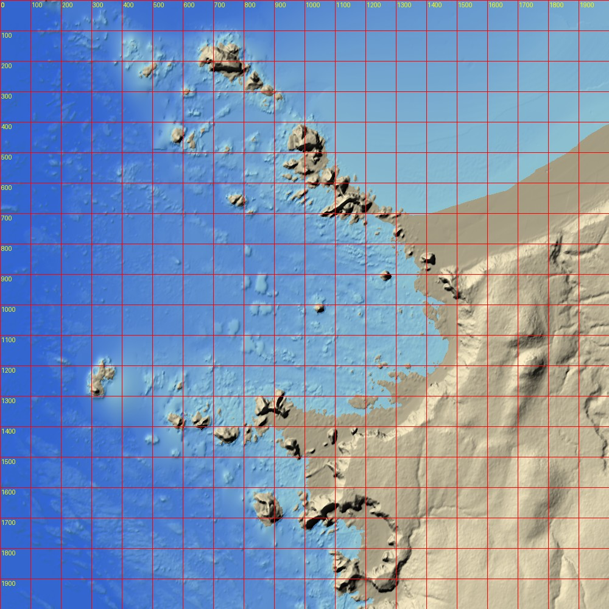
20. elements/sea/notes/poa_hill.pngBash: Detailed cove map with depth classes
cd ~/work/pixelart-studies/elements/sea/src; cat > hill2.py <<'EOF'
import numpy as np, sys
from PIL import Image, ImageDraw
from dem import *
from hill import hillshade
x0,y1=372347,5346016
def crop(c0,r0,c1,r1,out,sc=1,lvl=(-3,0,2)):
a=window('olycoast','elev',x0+c0,y1-r1,x0+c1,y1-r0)
h=hillshade(np.nan_to_num(a,nan=0))
rgb=np.stack([h*0.5+0.2]*3,-1)
rgb[a<lvl[0]]*=np.array([0.5,0.7,1.0])
m=(a>=lvl[0])&(a<lvl[1]); rgb[m]=rgb[m]*0.5+np.array([0.1,0.5,0.4])
m=(a>=lvl[1])&(a<lvl[2]); rgb[m]=rgb[m]*0.5+np.array([0.5,0.4,0.1])
m=a>=lvl[2]; rgb[m]=rgb[m]*0.6+0.4
im=Image.fromarray((np.clip(rgb,0,1)*255).astype(np.uint8)).resize((int(a.shape[1]*sc),int(a.shape[0]*sc)),Image.NEAREST)
d=ImageDraw.Draw(im)
for g in range((c0//50+1)*50,c1,50): X=(g-c0)*sc; d.line([(X,0),(X,im.height)],fill=(255,0,0) if g%100==0 else (120,0,0)); d.text((X+2,2),str(g),fill=(255,255,0))
for g in range((r0//50+1)*50,r1,50): Y=(g-r0)*sc; d.line([(0,Y),(im.width,Y)],fill=(255,0,0) if g%100==0 else (120,0,0)); d.text((2,Y+2),str(g),fill=(255,255,0))
im.save(out)
if __name__=='__main__':
a=list(map(int,sys.argv[1:5])); crop(*a,sys.argv[5],float(sys.argv[6]) if len(sys.argv)>6 else 1)
EOF
nice python3 hill2.py 500 400 1500 1500 ../notes/poa_cove.png 1
# output:
(Bash completed with no output)Read: elements/sea/notes/poa_cove.png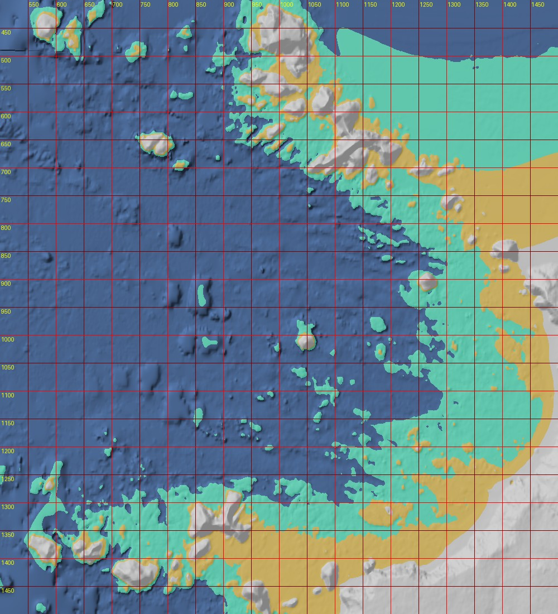
21. elements/sea/notes/poa_cove.pngBash: Initial homography registration overlay
cd ~/work/pixelart-studies/elements/sea/src; cat > reg.py <<'EOF'
"""Register an oblique photo to the DEM's sea plane with a homography from hand-picked pairs.
map coords: (col,row) metres in a frame with NW origin (X0,Y1) UTM. photo coords: full-res px."""
import numpy as np, json, sys
from PIL import Image, ImageDraw
from dem import window
def homog(src, dst):
A=[]
for (x,y),(u,v) in zip(src,dst):
A.append([-x,-y,-1,0,0,0,u*x,u*y,u]); A.append([0,0,0,-x,-y,-1,v*x,v*y,v])
_,_,Vt=np.linalg.svd(np.array(A,float)); H=Vt[-1].reshape(3,3); return H/H[2,2]
def apply(H,x,y):
p=H@np.stack([x,y,np.ones_like(x)]); return p[0]/p[2],p[1]/p[2]
def overlay(photo, H, X0, Y1, box, out, lvl=0.0, scale=0.4):
c0,r0,c1,r1=box
a=window('olycoast','elev',X0+c0,Y1-r1,X0+c1,Y1-r0)
im=Image.open(photo).convert('RGB'); W,Hh=im.size
sm=im.resize((int(W*scale),int(Hh*scale)))
d=ImageDraw.Draw(sm)
rr,cc=np.nonzero(a>lvl)
# edge pixels only
m=a>lvl; e=m&~(np.roll(m,1,0)&np.roll(m,-1,0)&np.roll(m,1,1)&np.roll(m,-1,1))
rr,cc=np.nonzero(e)
u,v=apply(H,cc+c0+0.5,rr+r0+0.5)
for x,y in zip(u*scale,v*scale):
if 0<=x<sm.width and 0<=y<sm.height: sm.putpixel((int(x),int(y)),(255,0,255))
for g in range(c0,c1,100):
rs=np.arange(r0,r1,5.0); u,v=apply(H,np.full_like(rs,g),rs); d.line(list(zip(u*scale,v*scale)),fill=(255,255,0))
for g in range(r0,r1,100):
cs=np.arange(c0,c1,5.0); u,v=apply(H,cs,np.full_like(cs,g)); d.line(list(zip(u*scale,v*scale)),fill=(0,255,255))
sm.save(out)
def warp(photo, H, box, mpp, out=None):
"""photo -> map-space image (top-down), box in map metres."""
c0,r0,c1,r1=box
cs=np.arange(c0,c1,mpp)+mpp/2; rs=np.arange(r0,r1,mpp)+mpp/2
C,R=np.meshgrid(cs,rs); u,v=apply(H,C.ravel(),R.ravel())
im=np.asarray(Image.open(photo).convert('RGB'))
ok=(u>=0)&(u<im.shape[1]-1)&(v>=0)&(v<im.shape[0]-1)
o=np.zeros((C.size,3),np.uint8); o[ok]=im[v[ok].astype(int),u[ok].astype(int)]
o=o.reshape(C.shape+(3,))
if out: Image.fromarray(o).save(out)
return o, ok.reshape(C.shape)
EOF
python3 - <<'EOF'
import sys;sys.path.insert(0,'.')
from reg import *
s=2.625
pairs=[((1045,1005),(705,665)),((1265,900),(455,548)),((870,1320),(1265,690)),((775,660),(200,1010)),((575,1380),(1550,800))]
src=[p[0] for p in pairs];dst=[(p[1][0]*s,p[1][1]*s) for p in pairs]
H=homog(src,dst)
O='~/work/voxsim-data/places/olycoast/obliques/point_of_arches__060819_15405_2016.jpg'
overlay(O,H,372347,5346016,(400,300,1600,1600),'../notes/reg_poa_1.png',lvl=0.0)
print(H)
EOF
# output:
[[-1.97328151e+00 1.30177559e+01 -5.92216990e+03]
[-2.99101673e+00 -8.19645498e-01 8.66396011e+03]
[ 7.83622582e-04 8.97558872e-04 1.00000000e+00]]Read: elements/sea/notes/reg_poa_1.png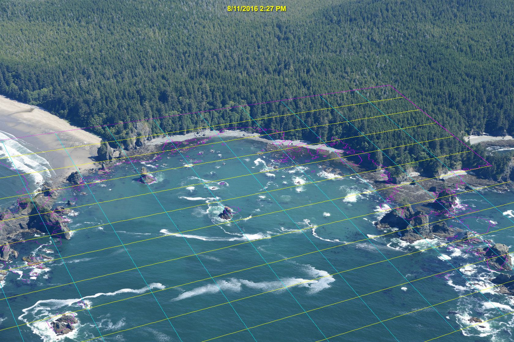
22. elements/sea/notes/reg_poa_1.pngBash: Zoom registration overlay crops
cd ~/work/pixelart-studies/elements/sea/src; python3 - <<'EOF'
import sys;sys.path.insert(0,'.')
from reg import *
s=2.625
pairs=[((1045,1005),(705,665)),((1265,900),(455,548)),((870,1320),(1265,690)),((775,660),(200,1010)),((575,1380),(1550,800))]
src=[p[0] for p in pairs];dst=[(p[1][0]*s,p[1][1]*s) for p in pairs]
H=homog(src,dst)
O='~/work/voxsim-data/places/olycoast/obliques/point_of_arches__060819_15405_2016.jpg'
overlay(O,H,372347,5346016,(400,300,1600,1600),'/tmp/x.png',lvl=0.0,scale=1.0)
from PIL import Image
im=Image.open('/tmp/x.png')
im.crop((2500,1300,4200,2400)).save('../notes/reg_poa_right.png')
im.crop((0,1300,1700,2800)).save('../notes/reg_poa_left.png')
EOF
# output:
(Bash completed with no output)Read: elements/sea/notes/reg_poa_right.png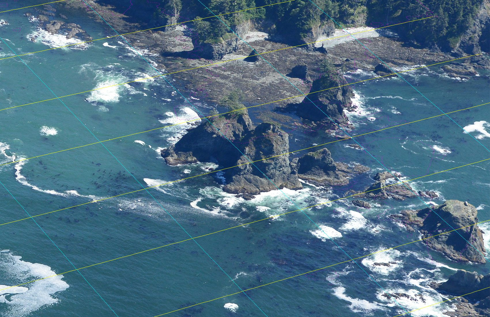
23. elements/sea/notes/reg_poa_right.pngBash: Get La Push tide at photo time
curl -s --max-time 30 "https://api.tidesandcurrents.noaa.gov/api/prod/datagetter?begin_date=20160811%2012:00&end_date=20160811%2016:00&station=9442396&product=water_level&datum=NAVD&time_zone=lst_ldt&units=metric&format=json" | head -c 1500; echo; curl -s --max-time 30 "https://api.tidesandcurrents.noaa.gov/api/prod/datagetter?begin_date=20160811%2012:00&end_date=20160811%2016:00&station=9442396&product=predictions&datum=MLLW&time_zone=lst_ldt&units=metric&format=json&interval=h" | head -c 800
# output:
{"metadata":{"id":"9442396","name":"La Push, Quillayute River","lat":"47.9128","lon":"-124.6357"}, "data": [{"t":"2016-08-11 12:00", "v":"0.429", "s":"0.012", "f":"0,0,0,0", "q":"v"},{"t":"2016-08-11 12:06", "v":"0.405", "s":"0.01", "f":"0,0,0,0", "q":"v"},{"t":"2016-08-11 12:12", "v":"0.401", "s":"0.006", "f":"0,0,0,0", "q":"v"},{"t":"2016-08-11 12:18", "v":"0.393", "s":"0.011", "f":"0,0,0,0", "q":"v"},{"t":"2016-08-11 12:24", "v":"0.388", "s":"0.006", "f":"0,0,0,0", "q":"v"},{"t":"2016-08-11 12:30", "v":"0.394", "s":"0.006", "f":"0,0,0,0", "q":"v"},{"t":"2016-08-11 12:36", "v":"0.384", "s":"0.009", "f":"0,0,0,0", "q":"v"},{"t":"2016-08-11 12:42", "v":"0.377", "s":"0.011", "f":"0,0,0,0", "q":"v"},{"t":"2016-08-11 12:48", "v":"0.383", "s":"0.006", "f":"0,0,0,0", "q":"v"},{"t":"2016-08-11 12:54", "v":"0.37", "s":"0.013", "f":"0,0,0,0", "q":"v"},{"t":"2016-08-11 13:00", "v":"0.385", "s":"0.007", "f":"0,0,0,0", "q":"v"},{"t":"2016-08-11 13:06", "v":"0.383", "s":"0.01", "f":"0,0,0,0", "q":"v"},{"t":"2016-08-11 13:12", "v":"0.397", "s":"0.007", "f":"0,0,0,0", "q":"v"},{"t":"2016-08-11 13:18", "v":"0.389", "s":"0.006", "f":"0,0,0,0", "q":"v"},{"t":"2016-08-11 13:24", "v":"0.386", "s":"0.009", "f":"0,0,0,0", "q":"v"},{"t":"2016-08-11 13:30", "v":"0.384", "s":"0.008", "f":"0,0,0,0", "q":"v"},{"t":"2016-08-11 13:36", "v":"0.392", "s":"0.011", "f":"0,0,0,0", "q":"v"},{"t":"2016-08-11 13:42", "v":"0.416", "s":"0.005", "f":"0,0,0,0", "q":"v"},{"t":"2016-08-11 13:48", "v":"0.411", "s":"0.
{ "predictions" : [
{"t":"2016-08-11 12:00", "v":"0.931"},{"t":"2016-08-11 13:00", "v":"0.88"},{"t":"2016-08-11 14:00", "v":"0.947"},{"t":"2016-08-11 15:00", "v":"1.132"},{"t":"2016-08-11 16:00", "v":"1.401"}
]}Bash: Check study folder size and disk rule
du -sh ~/work/pixelart-studies/elements/sea; du -sh ~/work/pixelart-studies/elements/sea/* ; df -h ~ | tail -1; grep -n -i -A6 "1 GB\|disk" ~/work/voxsim/docs/INFRA.md | head -30
# output:
70M ~/work/pixelart-studies/elements/sea
39M ~/work/pixelart-studies/elements/sea/notes
31M ~/work/pixelart-studies/elements/sea/refs
0B ~/work/pixelart-studies/elements/sea/sheets
40K ~/work/pixelart-studies/elements/sea/src
0B ~/work/pixelart-studies/elements/sea/stages
/dev/disk3s5 926Gi 868Gi 22Gi 98% 10M 229M 4% /System/Volumes/Data
24:- **Volumes:** use them for joint disk-and-CPU work (a cargo target cache per lane, shared data). Name everything `voxsim-<lane>-<what>` (e.g. `voxsim-place-yakima-target`), so nothing sprawls untracked.
25-- **Tracking:** record every app, volume and S3 prefix you create in your lane's NOTES under "Remote resources".
26-- **Shared build helper: `tools/remote/vr`**. `vr build --release -p <crate>` and `vr run --out <dir> -- <cmd>` run your worktree (uncommitted edits included) on Modal. Each lane gets a cached target dir, and shared data is mounted at `/data`. A warm one-line rebuild of vox-app takes about 14 s and costs well under a cent. Two-minute guide: [tools/remote/README.md](../tools/remote/README.md).
27-
28-## Storage
29-- **S3 bucket: live.** `civearth-files` in us-east-1 (`CIVEARTH_BUCKET_NAME`).
30- - **Locally:** load the env file, then use `aws s3 cp/sync` or boto3.
--
38:- **Local disk: hard budget.** The laptop disk runs near full, which starves swap and fails builds ("No space left on device" happened on 2026-09-26 with ~30 lanes running).
39: - Keep each study or lane folder under ~1 GB, and any cache you create under ~1 GB. Prune it (oldest first) or put big intermediates on S3 or a Modal volume.
40- - Never cache full scene arrays per run without a size cap.
41- - Prefer `vr build` (Modal) for release builds; local targets are big.
42- - Keep one copy of any dataset; never duplicate `~/work/voxsim-data`.
43- - Put big outputs in S3, not in git or scattered folders.
44- - Delete scratch outputs you no longer need.
45- - One `CARGO_TARGET_DIR` per lane, as your brief says.
--
55:- Re-downloading data that's already on disk or in S3 is almost always a mistake. Check first.
56-- Stuck on tooling for more than ~10 minutes? Say so in your report, with the exact error, and ask.Bash: Thick overlay of rock contours on photo center
cd ~/work/pixelart-studies/elements/sea/src; cat >> reg.py <<'EOF'
def overlay2(photo, H, X0, Y1, box, crop, out, lvl=0.45, labels=()):
"""draw forward-projected rock mask (above lvl) as translucent magenta on a full-res photo crop."""
c0,r0,c1,r1=box
a=window('olycoast','elev',X0+c0,Y1-r1,X0+c1,Y1-r0)
im=np.asarray(Image.open(photo).convert('RGB')).astype(float)
x0,y0,x1,y1=crop; sub=im[y0:y1,x0:x1].copy()
# inverse map each crop pixel to map coords
Hi=np.linalg.inv(H); yy,xx=np.mgrid[y0:y1,x0:x1]
c,r=apply(Hi,xx.ravel().astype(float),yy.ravel().astype(float))
c=c.reshape(xx.shape)-c0; r=r.reshape(xx.shape)-r0
ok=(c>=0)&(c<a.shape[1]-1)&(r>=0)&(r<a.shape[0]-1)
z=np.full(xx.shape,-99.0); z[ok]=a[r[ok].astype(int),c[ok].astype(int)]
m=z>lvl; e=m&~(np.roll(m,2,0)&np.roll(m,-2,0)&np.roll(m,2,1)&np.roll(m,-2,1))
sub[e]=[255,0,255]
m3=(z>-3)&(z<=lvl); e3=m3&~(np.roll(m3,1,0)&np.roll(m3,-1,0)&np.roll(m3,1,1)&np.roll(m3,-1,1)); sub[e3]=sub[e3]*0.3+np.array([255,255,0])*0.7
o=Image.fromarray(sub.astype(np.uint8)); d=ImageDraw.Draw(o)
for (mc,mr),name in labels:
u,v=apply(H,np.array([mc],float),np.array([mr],float)); d.text((u[0]-x0,v[0]-y0),name,fill=(255,255,255))
o.save(out)
EOF
python3 - <<'EOF'
import sys;sys.path.insert(0,'.')
from reg import *
s=2.625
pairs=[((1045,1005),(705,665)),((1265,900),(455,548)),((870,1320),(1265,690)),((775,660),(200,1010)),((575,1380),(1550,800))]
H=homog([p[0] for p in pairs],[(p[1][0]*s,p[1][1]*s) for p in pairs])
O='~/work/voxsim-data/places/olycoast/obliques/point_of_arches__060819_15405_2016.jpg'
overlay2(O,H,372347,5346016,(400,300,1600,1600),(1300,1100,2900,2300),'../notes/reg2_c.png')
EOF
# output:
(Bash completed with no output)Read: elements/sea/notes/reg2_c.png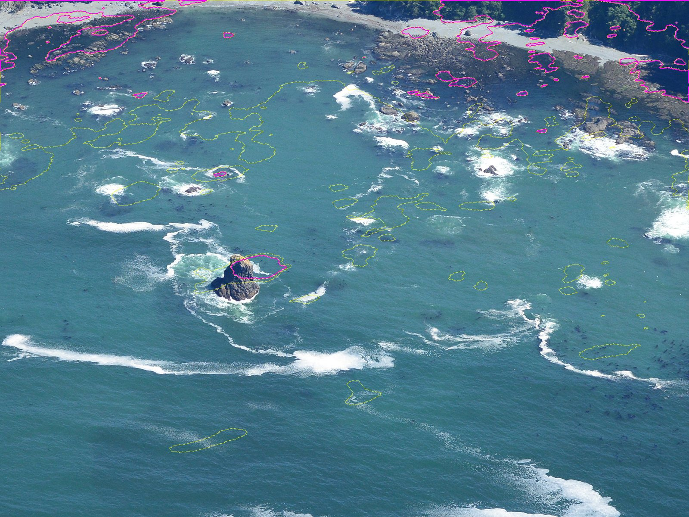
24. elements/sea/notes/reg2_c.pngBash: Warp photo to map space with elevation
cd ~/work/pixelart-studies/elements/sea/src; cat > measure_poa.py <<'EOF'
import sys;sys.path.insert(0,'.')
import numpy as np
from reg import *
from dem import window
from PIL import Image
s=2.625
pairs=[((1045,1005),(705*s-55,665*s+65)),((1265,900),(455*s,548*s)),((870,1320),(1265*s,690*s)),((775,660),(200*s,1010*s)),((575,1380),(1550*s,800*s))]
H=homog([p[0] for p in pairs],[p[1] for p in pairs])
np.save('../notes/H_poa.npy',H)
O='~/work/voxsim-data/places/olycoast/obliques/point_of_arches__060819_15405_2016.jpg'
X0,Y1=372347,5346016
box=(550,450,1500,1450)
img,ok=warp(O,H,box,1.0,'../notes/poa_ortho.png')
a=window('olycoast','elev',X0+box[0],Y1-box[3],X0+box[2],Y1-box[1])
np.save('../notes/poa_ortho_elev.npy',a)
EOF
nice python3 measure_poa.py
# output:
(Bash completed with no output)Read: elements/sea/notes/poa_ortho.png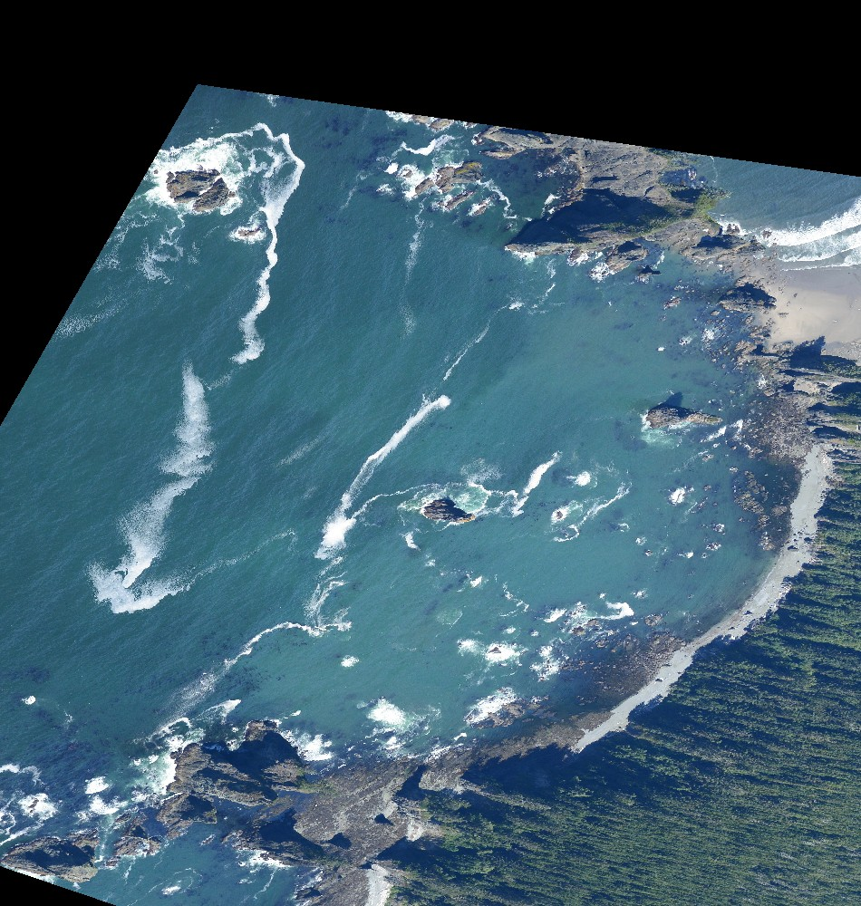
25. elements/sea/notes/poa_ortho.pngBash: Overlay depth contours on ortho photo
cd ~/work/pixelart-studies/elements/sea/src; python3 - <<'EOF'
import numpy as np
from PIL import Image
im=np.asarray(Image.open('../notes/poa_ortho.png')).astype(float)
a=np.load('../notes/poa_ortho_elev.npy'); d=0.45-a
o=im.copy()
for lv,col in [(0,(255,0,255)),(2,(255,255,0)),(5,(0,255,0)),(10,(255,120,0))]:
m=d>lv; e=m^np.roll(m,1,0)|m^np.roll(m,1,1); o[e]=col
Image.fromarray(o.astype(np.uint8)).save('../notes/poa_ortho_contours.png')
print(np.nanpercentile(d,[5,25,50,75,95]))
EOF
# output:
[-14.45392213 0.71872501 3.73012209 9.60575199 14.84709768]Read: elements/sea/notes/poa_ortho_contours.png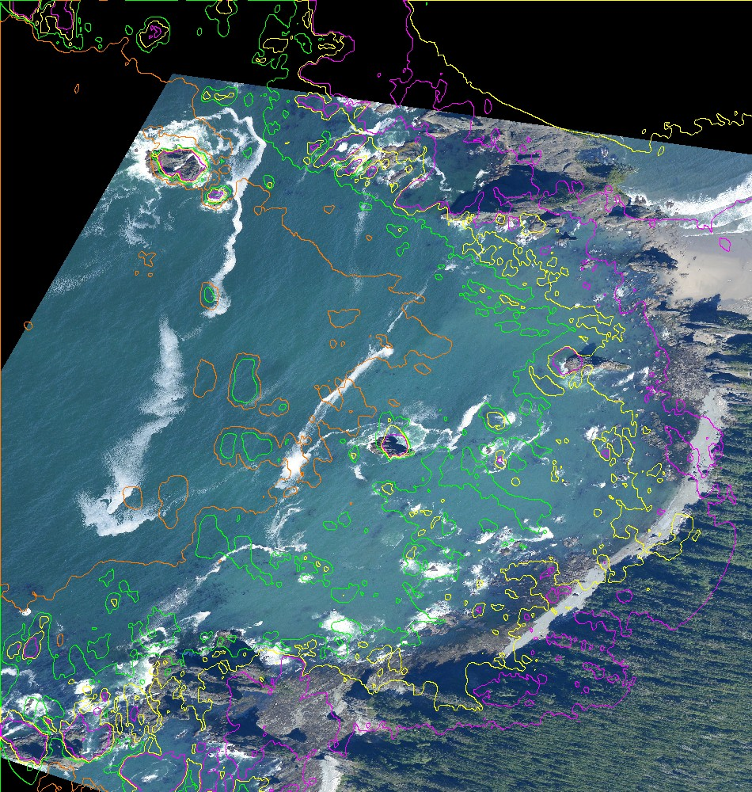
26. elements/sea/notes/poa_ortho_contours.pngBash: Measure sea colour, whitewater, kelp vs depth
cd ~/work/pixelart-studies/elements/sea/src; cat > lab.py <<'EOF'
import numpy as np
def srgb_to_lab(rgb):
c=np.asarray(rgb,float)/255; c=np.where(c<=0.04045,c/12.92,((c+0.055)/1.055)**2.4)
M=np.array([[0.4124,0.3576,0.1805],[0.2126,0.7152,0.0722],[0.0193,0.1192,0.9505]])
xyz=c@M.T/np.array([0.95047,1.0,1.08883])
f=np.where(xyz>0.008856,np.cbrt(xyz),7.787*xyz+16/116)
return np.stack([116*f[...,1]-16,500*(f[...,0]-f[...,1]),200*(f[...,1]-f[...,2])],-1)
def lab_to_srgb(lab):
lab=np.asarray(lab,float); fy=(lab[...,0]+16)/116; fx=fy+lab[...,1]/500; fz=fy-lab[...,2]/200
f=np.stack([fx,fy,fz],-1); xyz=np.where(f**3>0.008856,f**3,(f-16/116)/7.787)*np.array([0.95047,1,1.08883])
Mi=np.linalg.inv(np.array([[0.4124,0.3576,0.1805],[0.2126,0.7152,0.0722],[0.0193,0.1192,0.9505]]))
c=xyz@Mi.T; c=np.where(c<=0.0031308,12.92*c,1.055*np.clip(c,0,None)**(1/2.4)-0.055)
return np.clip(c*255,0,255)
EOF
python3 - <<'EOF'
import numpy as np, sys; sys.path.insert(0,'.')
from lab import srgb_to_lab
from PIL import Image
from scipy import ndimage as nd
im=np.asarray(Image.open('../notes/poa_ortho.png')).astype(float)
a=np.load('../notes/poa_ortho_elev.npy'); d=0.45-a
L=srgb_to_lab(im)
roi=np.zeros(d.shape,bool); roi[150:650,150:750]=True
valid=roi&(im.sum(2)>0)
white=L[...,0]>72
# local median to find dark specks (kelp): pixel much darker than local 15px median
med=nd.median_filter(L[...,0],15)
kelp=(L[...,0]<med-7)&~white&(d>0.5)
water=valid&~white&(d>0.3)&~kelp
print('depth band | n | L* a* b* (water median) | white % | kelp speck %')
for lo,hi in [(0.3,1),(1,2),(2,3),(3,5),(5,7),(7,10),(10,14),(14,20)]:
m=valid&(d>=lo)&(d<hi)&(d>0.3)
w=water&(d>=lo)&(d<hi)
if m.sum()<50: continue
lab=np.median(L[w],0)
print(f'{lo:>4}-{hi:<4} | {m.sum():6d} | {lab[0]:5.1f} {lab[1]:6.1f} {lab[2]:6.1f} | {100*white[m].mean():5.1f} | {100*kelp[m].mean():5.1f}')
# rough surface texture: L std in 9px windows of water
EOF
# output:
depth band | n | L* a* b* (water median) | white % | kelp speck %
0.3-1 | 7829 | 46.8 -2.7 -15.1 | 5.3 | 11.1
1-2 | 18460 | 49.9 -6.8 -14.7 | 6.7 | 12.0
2-3 | 14740 | 49.7 -10.0 -15.5 | 8.4 | 7.1
3-5 | 34476 | 50.6 -11.2 -15.8 | 4.0 | 2.6
5-7 | 34373 | 49.5 -11.4 -15.7 | 6.1 | 3.1
7-10 | 55409 | 45.8 -11.2 -16.2 | 8.6 | 3.1
10-14 | 84013 | 43.2 -11.5 -15.3 | 9.0 | 3.8
14-20 | 25209 | 40.1 -11.1 -14.8 | 6.2 | 2.2Bash: Viewable versions of more obliques
cd ~/work/pixelart-studies/elements/sea; O=~/work/voxsim-data/places/olycoast/obliques; python3 -c "
from PIL import Image
for n in ['la_push__0208131107_153_2016','la_push__0208131107_153_2006','rialto__0208131105_144_2006','shi_shi__160811_07663_2006','ruby_beach__0208131121_230_2016']:
im=Image.open('$O/'+n+'.jpg');print(n,im.size);im.thumbnail((1600,1100));im.save('notes/'+n+'_v.jpg',quality=88)
"
# output:
la_push__0208131107_153_2016 (4200, 2800)
la_push__0208131107_153_2006 (700, 524)
rialto__0208131105_144_2006 (700, 524)
shi_shi__160811_07663_2006 (4288, 2848)
ruby_beach__0208131121_230_2016 (4200, 2800)Read: elements/sea/notes/la_push__0208131107_153_2016_v.jpg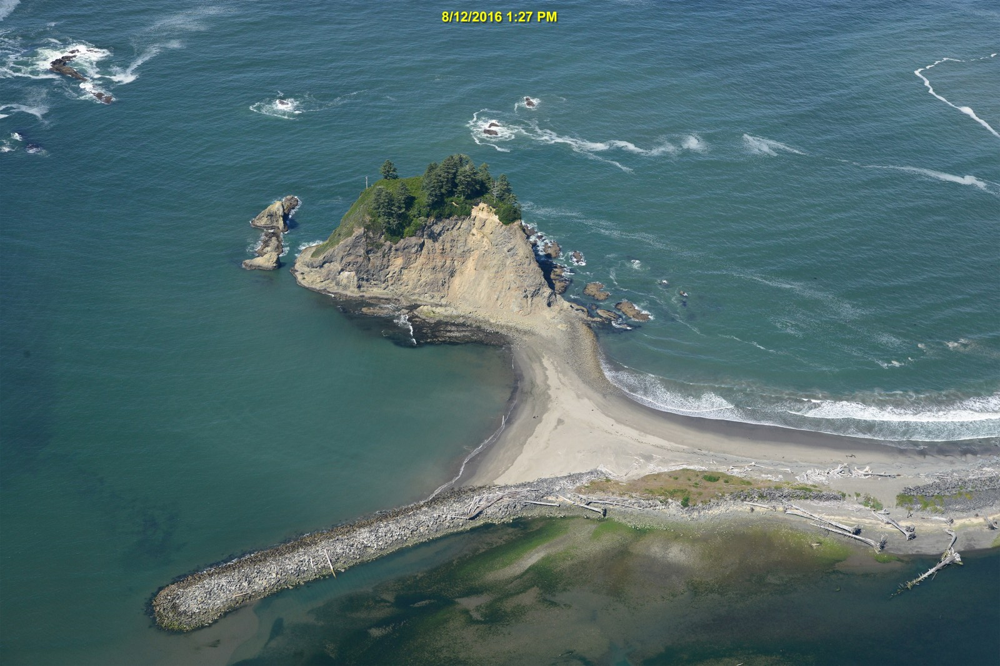
27. elements/sea/notes/la_push__0208131107_153_2016_v.jpgRead: elements/sea/notes/shi_shi__160811_07663_2006_v.jpg 28. elements/sea/notes/shi_shi__160811_07663_2006_v.jpg
28. elements/sea/notes/shi_shi__160811_07663_2006_v.jpg
Bash: Sample sea colour classes across photos
cd ~/work/pixelart-studies/elements/sea/src; cat > sample.py <<'EOF'
import numpy as np, sys, json; sys.path.insert(0,'.')
from lab import srgb_to_lab
from PIL import Image
O='~/work/voxsim-data/places/olycoast/obliques/'
S='~/work/voxsim-data/places/sanjuan/obliques/'
def samp(f, rects, vw=1600):
im=Image.open(f).convert('RGB'); s=im.width/vw; a=np.asarray(im).astype(float)
out={}
for name,(x0,y0,x1,y1) in rects.items():
p=a[int(y0*s):int(y1*s),int(x0*s):int(x1*s)].reshape(-1,3); L=srgb_to_lab(p)
med=np.median(L,0); rgb=np.median(p,0); out[name]=dict(lab=med.round(1).tolist(),rgb=rgb.round().tolist(),Lsd=float(L[:,0].std().round(1)),p10=float(np.percentile(L[:,0],10).round(1)),p90=float(np.percentile(L[:,0],90).round(1)))
print(f'{name:38s} L*{med[0]:5.1f} a*{med[1]:6.1f} b*{med[2]:6.1f} rgb{tuple(int(v) for v in rgb)} Lsd {L[:,0].std():4.1f} p10-p90 {np.percentile(L[:,0],10):4.1f}-{np.percentile(L[:,0],90):4.1f}')
return out
if __name__=='__main__':
R={}
print('== Cape Alava 2016 (sun, 14:24, summer)')
R['ca']=samp(O+'cape_alava__060819_15434_2016.jpg',{
'sand shoal turquoise (~2-4 m)':(150,600,350,700),'sand deeper teal (~6-10 m)':(40,960,200,1050),
'kelp mat (dense)':(560,925,640,975),'rock reef through clear water':(1300,380,1450,450),
'deep reef water right':(1450,560,1590,640),'beach surf foam':(160,470,260,500)})
print('== Point of Arches 2016 (sun 14:27)')
R['poa']=samp(O+'point_of_arches__060819_15405_2016.jpg',{
'offshore ~15-20 m':(1100,960,1300,1050),'cove 3-5 m':(900,600,1000,660),'aerated jade by stack':(640,640,690,680),
'foam streak core':(800,730,830,745),'kelp speck field':(1200,780,1300,830)})
print('== La Push 2016 (sun 13:27)')
R['lp']=samp(O+'la_push__0208131107_153_2016.jpg',{
'open sea':(1100,380,1400,500),'sheltered cove green':(100,600,400,800),'estuary turbid':(500,950,800,1050),'surf zone foam':(1200,640,1400,665)})
print('== Shi Shi 2006 (big swell, sun 13:44)')
R['ss']=samp(O+'shi_shi__160811_07663_2006.jpg',{'jade between foam':(620,880,720,940),'foam sheet':(100,810,300,850),'wet sand':(700,720,900,760),'dry sand':(300,620,500,660)})
json.dump(R,open('../notes/colour_samples.json','w'),indent=1)
EOF
python3 sample.py
# output:
== Cape Alava 2016 (sun, 14:24, summer)
sand shoal turquoise (~2-4 m) L* 51.4 a* -16.1 b* -10.7 rgb(75, 131, 140) Lsd 1.8 p10-p90 49.1-53.9
sand deeper teal (~6-10 m) L* 46.4 a* -18.7 b* -7.4 rgb(58, 119, 122) Lsd 2.8 p10-p90 43.0-50.1
kelp mat (dense) L* 28.7 a* 2.7 b* -20.0 rgb(50, 68, 99) Lsd 10.6 p10-p90 23.2-44.6
rock reef through clear water L* 52.6 a* -1.1 b* -17.4 rgb(104, 128, 156) Lsd 7.2 p10-p90 45.7-60.7
deep reef water right L* 40.6 a* -0.0 b* -25.4 rgb(64, 98, 137) Lsd 3.9 p10-p90 38.0-43.6
beach surf foam L* 81.9 a* -1.1 b* -2.2 rgb(198, 204, 209) Lsd 15.7 p10-p90 58.5-99.1
== Point of Arches 2016 (sun 14:27)
offshore ~15-20 m L* 35.6 a* -9.4 b* -15.6 rgb(44, 89, 108) Lsd 3.8 p10-p90 33.3-39.7
cove 3-5 m L* 52.8 a* -13.5 b* -13.2 rgb(81, 134, 148) Lsd 2.9 p10-p90 50.4-55.4
aerated jade by stack L* 64.3 a* -10.4 b* -9.7 rgb(118, 163, 172) Lsd 18.2 p10-p90 45.5-90.8
foam streak core L* 84.4 a* -4.4 b* -9.0 rgb(190, 214, 229) Lsd 15.0 p10-p90 58.0-97.0
kelp speck field L* 37.2 a* -7.6 b* -17.9 rgb(48, 93, 116) Lsd 5.5 p10-p90 32.7-41.1
== La Push 2016 (sun 13:27)
open sea L* 41.3 a* -11.5 b* -7.8 rgb(66, 104, 109) Lsd 4.6 p10-p90 38.0-48.0
sheltered cove green L* 34.8 a* -14.6 b* -4.2 rgb(47, 89, 89) Lsd 2.9 p10-p90 31.5-39.1
estuary turbid L* 23.9 a* -9.1 b* -0.4 rgb(40, 61, 55) Lsd 6.6 p10-p90 17.6-35.3
surf zone foam L* 68.0 a* -2.6 b* -3.3 rgb(156, 168, 173) Lsd 17.2 p10-p90 50.1-95.7
== Shi Shi 2006 (big swell, sun 13:44)
jade between foam L* 45.5 a* -17.0 b* -8.1 rgb(61, 116, 121) Lsd 11.9 p10-p90 36.5-59.9
foam sheet L* 96.5 a* -1.5 b* 0.2 rgb(241, 246, 245) Lsd 8.1 p10-p90 80.2-100.0
wet sand L* 85.5 a* -0.4 b* 0.9 rgb(209, 215, 212) Lsd 14.4 p10-p90 65.1-99.0
dry sand L* 86.7 a* 1.4 b* 10.0 rgb(227, 216, 198) Lsd 4.7 p10-p90 83.7-90.2Bash: Contact sheet of hazy 2002 obliques
cd ~/work/pixelart-studies/elements/sea; O=~/work/voxsim-data/places/olycoast/obliques; python3 src/contact.py notes/hazy2002.png 3 700 $O/point_of_arches__0208131041_056_2006.jpg $O/rialto__0208131105_144_2006.jpg $O/la_push__0208131014_014_2006.jpg $O/second_beach__0208131110_166_2006.jpg $O/cape_alava__0208131049_082_2006.jpg $O/sand_point__0208131052_090_2006.jpg # output: (Bash completed with no output)
Read: elements/sea/notes/hazy2002.png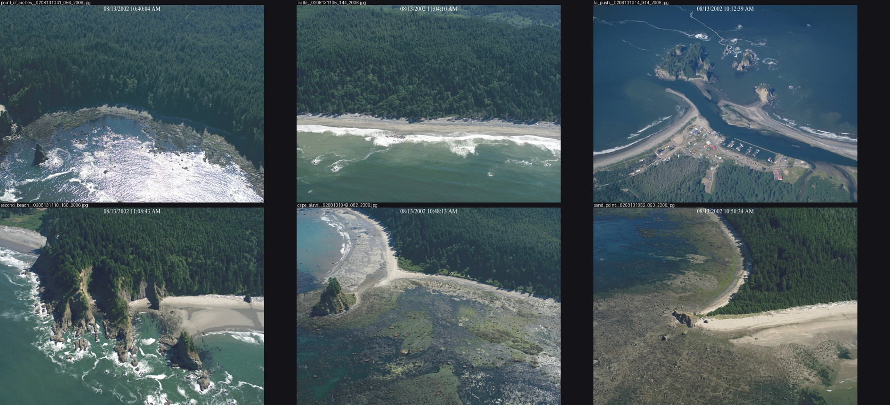
29. elements/sea/notes/hazy2002.pngBash: Get buoy wave conditions at photo time
cd ~/work/pixelart-studies/elements/sea/refs; for b in 46087 46041; do curl -s --max-time 60 "https://www.ndbc.noaa.gov/view_text_file.php?filename=${b}h2016.txt.gz&dir=data/historical/stdmet/" | awk 'NR<=2 || ($2=="08" && $3=="11" && $4>=19 && $4<=23)' | head -14; echo; done
# output:
#YY MM DD hh mm WDIR WSPD GST WVHT DPD APD MWD PRES ATMP WTMP DEWP VIS TIDE
#yr mo dy hr mn degT m/s m/s m sec sec degT hPa degC degC degC mi ft
2016 08 11 19 20 65 1.6 2.2 1.62 9.09 6.94 281 1021.0 14.4 13.4 13.5 99.0 99.00
2016 08 11 19 50 15 0.9 1.4 1.64 7.69 7.08 284 1020.9 14.9 13.7 14.1 99.0 99.00
2016 08 11 20 20 310 1.2 2.2 1.56 7.69 6.75 282 1020.9 14.8 13.7 14.0 99.0 99.00
2016 08 11 21 20 302 1.9 2.5 1.57 8.33 6.76 277 1020.6 14.4 13.9 13.7 99.0 99.00
2016 08 11 21 50 307 1.4 1.8 1.57 8.33 7.08 286 1020.4 14.3 14.1 13.6 99.0 99.00
2016 08 11 22 20 314 2.3 2.8 1.53 8.33 6.78 276 1020.2 14.3 13.8 13.6 99.0 99.00
2016 08 11 22 50 296 2.3 2.8 1.57 8.33 6.76 277 1020.1 14.3 13.8 13.6 99.0 99.00
2016 08 11 23 20 281 1.9 2.5 1.73 8.33 6.67 287 1019.9 14.3 13.6 13.5 99.0 99.00
2016 08 11 23 50 274 2.0 2.5 1.50 7.14 6.40 288 1019.6 14.5 13.8 13.7 99.0 99.00
#YY MM DD hh mm WDIR WSPD GST WVHT DPD APD MWD PRES ATMP WTMP DEWP VIS TIDE
#yr mo dy hr mn degT m/s m/s m sec sec degT hPa degC degC degC mi ft
2016 08 11 19 50 345 3.1 3.9 1.72 9.09 6.53 291 1021.0 12.9 15.1 999.0 99.0 99.00
2016 08 11 20 50 322 3.5 4.1 1.61 8.33 6.59 301 1020.8 12.8 15.2 999.0 99.0 99.00
2016 08 11 21 50 311 3.5 4.6 1.49 8.33 6.23 297 1020.5 13.2 15.3 999.0 99.0 99.00
2016 08 11 22 50 307 3.8 4.7 1.65 8.33 6.62 299 1020.1 13.7 15.2 999.0 99.0 99.00
2016 08 11 23 50 305 4.3 5.0 1.51 8.33 6.62 299 1019.7 15.3 14.9 999.0 99.0 99.00Bash: Write wave ray-tracing module and run on Point of Arches
mkdir -p ~/work/pixelart-studies/elements/sea/src/sea; cd ~/work/pixelart-studies/elements/sea/src; cat > sea/waves.py <<'EOF'
"""Swell over real bathymetry: linear dispersion, ray refraction (Snell), shoaling, ray-tube spreading,
random-wave breaking (Battjes & Janssen 1978). Output fields on the 1 m grid.
Grid convention: arrays [row, col], col = x east, row = y SOUTH (image order). cell = 1 m unless given.
"""
import numpy as np
from scipy import ndimage as nd
G = 9.81
def wavenumber(omega, d):
"""solve omega^2 = g k tanh(k d) (vectorised, Newton on a good start)."""
d = np.maximum(np.asarray(d, float), 0.05)
k0 = omega ** 2 / G
x = k0 * d
kd = np.where(x < 1, np.sqrt(x) * (1 + x / 6), x) # start
kd = np.maximum(kd, 1e-4)
for _ in range(12):
t = np.tanh(kd); f = kd * t - x; df = t + kd * (1 - t * t)
kd = kd - f / df
return kd / d
def speeds(omega, d):
k = wavenumber(omega, d); dd = np.maximum(d, 0.05); kd = k * dd
c = omega / k
n = 0.5 * (1 + np.where(kd < 20, 2 * kd / np.sinh(np.minimum(2 * kd, 40)), 0))
return k, c, n * c
def bilinear(A, x, y):
h, w = A.shape
x = np.clip(x, 0, w - 1.001); y = np.clip(y, 0, h - 1.001)
x0 = x.astype(int); y0 = y.astype(int); tx = x - x0; ty = y - y0
return (A[y0, x0] * (1 - tx) * (1 - ty) + A[y0, x0 + 1] * tx * (1 - ty) +
A[y0 + 1, x0] * (1 - tx) * ty + A[y0 + 1, x0 + 1] * tx * ty)
def swell(depth, Hs=1.6, T=8.3, dir_from=281.0, gamma=0.73, alpha=1.0, ray_dx=0.5, ds=0.5,
smooth=4.0, deep_fill=30.0, max_len=None, spread_deg=0.0, seed=0):
"""depth: metres below still water (negative = land), 1 m grid.
Returns dict of fields: Hrms, Qb (fraction breaking), D (dissipation, m^3/s... relative),
kx, ky (unit propagation), phase (travel time, s, complex-averaged), hit (ray weight)."""
h, w = depth.shape
omega = 2 * np.pi / T
d = np.where(np.isnan(depth), deep_fill, depth).astype(float)
ds_ = nd.gaussian_filter(np.maximum(d, 0.05), smooth)
land = d <= 0.05
_, C, CG = speeds(omega, ds_)
C = np.where(land, 0.5, C)
gy, gx = np.gradient(C)
# propagation bearing (clockwise from north) -> grid vector (x east, y south)
b = np.radians((dir_from + 180) % 360)
kx0, ky0 = np.sin(b), -np.cos(b)
# launch line: through the grid centre, perpendicular to k, set back so it starts outside the grid
cx, cy = w / 2, h / 2
diag = np.hypot(w, h)
nxv, nyv = -ky0, kx0
s = np.arange(-diag / 2, diag / 2, ray_dx)
X = cx - kx0 * diag / 2 + nxv * s; Y = cy - ky0 * diag / 2 + nyv * s
KX = np.full_like(X, kx0); KY = np.full_like(X, ky0)
if spread_deg:
rng = np.random.default_rng(seed); a = np.radians(rng.normal(0, spread_deg, X.size))
KX, KY = KX * np.cos(a) - KY * np.sin(a), KX * np.sin(a) + KY * np.cos(a)
n = X.size
Hrms0 = Hs / np.sqrt(2)
_, c0, cg0 = speeds(omega, np.array(deep_fill))
E0 = Hrms0 ** 2 / 8
F = np.full(n, E0 * cg0 * ray_dx) # energy flux per tube (rho g dropped)
alive = np.ones(n, bool); tt = np.zeros(n)
acc = {k: np.zeros((h, w)) for k in ('wt', 'H', 'Q', 'D', 'kx', 'ky', 're', 'im')}
steps = int((max_len or diag * 1.05) / ds)
started = np.zeros(n, bool)
for it in range(steps):
inside = (X >= 0) & (X < w - 1) & (Y >= 0) & (Y < h - 1)
started |= inside
alive &= ~(started & ~inside) # left the grid after entering
if not alive.any(): break
dloc = np.where(inside, bilinear(ds_, X, Y), deep_fill)
hitland = inside & (bilinear(d, X, Y) <= 0.08)
alive &= ~hitland
k, c, cg = speeds(omega, dloc)
# tube width from neighbours
dxp = np.hypot(np.diff(X), np.diff(Y))
bw = np.full(n, ray_dx)
both = np.zeros(n); both[:-1] += dxp; both[1:] += dxp
cnt = np.zeros(n); cnt[:-1] += 1; cnt[1:] += 1
bw = both / np.maximum(cnt, 1)
bw = np.clip(bw, 0.25 * ray_dx, 8 * ray_dx)
E = F / (np.maximum(cg, 1e-3) * bw)
Hrms = np.sqrt(8 * np.maximum(E, 0))
# Battjes-Janssen breaking
Hm = 0.88 / k * np.tanh(gamma * k * dloc / 0.88)
r = np.clip(Hrms / np.maximum(Hm, 1e-3), 0, 1.0)
# solve (1-Q)/(-ln Q) = r^2 by fixed point
Q = np.where(r > 0.3, r ** 4, 0.0)
for _ in range(8):
Q = np.clip(np.exp(-(1 - Q) / np.maximum(r * r, 1e-6)), 0, 1)
Q = np.where(r >= 1, 1.0, Q)
D = 0.25 * alpha * Q * Hm ** 2 / T # rho g dropped
m = alive & inside
F = np.where(m, np.maximum(F - D * bw * ds, 0), F)
# splat
if m.any():
xi = X[m].astype(int); yi = Y[m].astype(int)
ph = omega * tt[m]
for key, val in (('wt', 1.0), ('H', Hrms[m]), ('Q', Q[m]), ('D', D[m]), ('kx', KX[m]), ('ky', KY[m]),
('re', np.cos(ph)), ('im', np.sin(ph))):
np.add.at(acc[key], (yi, xi), val)
# advance (only rays in deep-fill outside grid move straight)
cc = np.where(inside, c, c0)
gcx = np.where(inside, bilinear(gx, X, Y), 0); gcy = np.where(inside, bilinear(gy, X, Y), 0)
dot = gcx * KX + gcy * KY
KX2 = KX - ds / cc * (gcx - dot * KX); KY2 = KY - ds / cc * (gcy - dot * KY)
nn = np.hypot(KX2, KY2); KX = np.where(alive, KX2 / nn, KX); KY = np.where(alive, KY2 / nn, KY)
X = np.where(alive, X + KX * ds, X); Y = np.where(alive, Y + KY * ds, Y)
tt = np.where(alive, tt + ds / cc, tt)
wt = acc['wt']
out = {}
# normalised convolution fill (diffraction-ish smoothing into ray shadows)
sig = 3.0
W = nd.gaussian_filter(wt, sig)
for key in ('H', 'Q', 'D', 'kx', 'ky', 're', 'im'):
v = nd.gaussian_filter(acc[key], sig)
out[key] = v / np.maximum(W, 1e-9)
# shadows: H fades where no rays arrive (weight small relative to typical)
typ = np.median(W[W > 0]) if (W > 0).any() else 1
cover = np.clip(W / (0.5 * typ), 0, 1)
Wb = nd.gaussian_filter(cover, 12) # broad diffraction into the lee
out['H'] = out['H'] * cover + nd.gaussian_filter(out['H'] * cover, 12) / np.maximum(Wb, 1e-6) * Wb * (1 - cover) * 0.6
out['Q'] *= cover; out['D'] *= cover
nk = np.hypot(out['kx'], out['ky']) + 1e-9
out['kx'] /= nk; out['ky'] /= nk
out['phase'] = np.angle(out['re'] + 1j * out['im']) # radians of omega * travel time
out['cover'] = cover; out['hit'] = wt
for key in list(out):
out[key] = np.where(land, 0, out[key]).astype(np.float32)
out['land'] = land
out['T'] = T; out['Hs'] = Hs
return out
EOF
cat > sea/place.py <<'EOF'
"""Real places from the voxsim-data packs (1 m topo-bathy lidar)."""
import numpy as np, os, sys
sys.path.insert(0, os.path.dirname(os.path.dirname(os.path.abspath(__file__))))
from dem import window, lonlat_to_utm
PLACES = {
# name: (pack, NW origin UTM x, y, box cols0,rows0,cols1,rows1 in that frame, tide NAVD m at photo)
'poa': ('olycoast', 372347, 5346016, (350, 250, 1650, 1650)),
}
def load(name, tide=0.45):
pack, X0, Y1, (c0, r0, c1, r1) = PLACES[name]
z = window(pack, 'elev', X0 + c0, Y1 - r1, X0 + c1, Y1 - r0)
return dict(z=z, depth=tide - z, tide=tide, origin=(X0 + c0, Y1 - r0), frame=(c0, r0))
EOF
cat > t_waves.py <<'EOF'
import sys, time; sys.path.insert(0,'.')
import numpy as np
from sea.place import load
from sea.waves import swell
from PIL import Image
P=load('poa'); t=time.time()
F=swell(P['depth'],Hs=1.57,T=8.3,dir_from=281)
print('time',time.time()-t)
np.savez_compressed('../cache/poa_waves.npz',**{k:v for k,v in F.items() if isinstance(v,np.ndarray)})
H=F['H'];Q=F['Q'];ph=F['phase']
rgb=np.zeros(H.shape+(3,))
rgb[...,2]=np.clip(H/1.5,0,1); rgb[...,0]=np.clip(Q*3,0,1); rgb[...,1]=0.25*(np.cos(ph)>0.9)
rgb[F['land']]=0.5
Image.fromarray((rgb*255).astype(np.uint8)).save('../notes/poa_waves.png')
print(np.percentile(H[~F['land']],[5,50,95]),Q.max())
EOF
mkdir -p ../cache; OPENBLAS_NUM_THREADS=1 OMP_NUM_THREADS=1 nice python3 t_waves.py
# output:
time 49.629117012023926
[0.02753821 0.47383846 1.1688827 ] 0.99999994Read: elements/sea/notes/poa_waves.png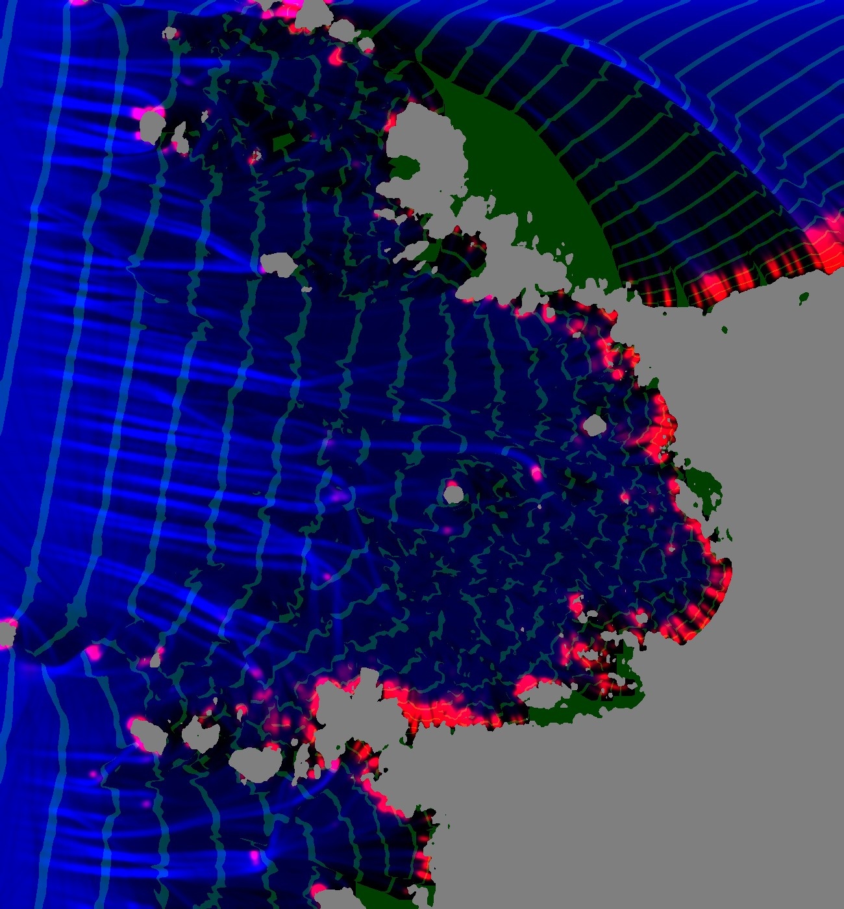
30. elements/sea/notes/poa_waves.pngBash: Add eikonal phase solve and rerun
cd ~/work/pixelart-studies/elements/sea/src; cat >> sea/waves.py <<'EOF'
def eikonal(depth, T=8.3, dir_from=281.0, cell=2.0, smooth=6.0, deep_fill=30.0):
"""First-arrival travel time of a plane swell, |grad t| = 1/c, by Dijkstra on a 16-neighbour
grid with a delayed super-source along the upwind boundary. Wraps around stacks and into lees
(the lee gets the diffracted first arrival). Returns t (s) on the 1 m grid, and unit k (grad t)."""
from scipy.sparse import coo_matrix
from scipy.sparse.csgraph import dijkstra
h, w = depth.shape
omega = 2 * np.pi / T
d = np.where(np.isnan(depth), deep_fill, depth).astype(float)
ds_ = nd.gaussian_filter(np.maximum(d, 0.05), smooth)
f = int(cell)
dc = ds_[::f, ::f]; landc = (d[::f, ::f] <= 0.05)
H_, W_ = dc.shape
_, C, _ = speeds(omega, dc)
slow = np.where(landc, 1e3, 1.0 / C)
idx = np.arange(H_ * W_).reshape(H_, W_)
offs = [(0, 1), (1, 0), (1, 1), (1, -1), (1, 2), (2, 1), (1, -2), (2, -1)]
rows, cols, vals = [], [], []
for dy, dx in offs:
y0, y1 = max(0, -dy), H_ - max(0, dy); x0, x1 = max(0, -dx), W_ - max(0, dx)
a = idx[y0:y1, x0:x1]; b = idx[y0 + dy:y1 + dy, x0 + dx:x1 + dx]
L = cell * np.hypot(dx, dy)
wgt = 0.5 * (slow[y0:y1, x0:x1] + slow[y0 + dy:y1 + dy, x0 + dx:x1 + dx]) * L
rows += [a.ravel(), b.ravel()]; cols += [b.ravel(), a.ravel()]; vals += [wgt.ravel(), wgt.ravel()]
# super source
b_ = np.radians((dir_from + 180) % 360); kx0, ky0 = np.sin(b_), -np.cos(b_)
border = np.zeros((H_, W_), bool); border[0] = border[-1] = True; border[:, 0] = border[:, -1] = True
yy, xx = np.mgrid[0:H_, 0:W_]
proj = (xx * kx0 + yy * ky0) * cell
upwind = border & (proj < np.percentile(proj[border], 60)) & ~landc
_, c0, _ = speeds(omega, np.array(deep_fill))
src = H_ * W_
s_nodes = idx[upwind]; s_w = (proj[upwind] - proj[upwind].min()) / c0 + 1e-3
rows.append(np.full(s_nodes.size, src)); cols.append(s_nodes); vals.append(s_w)
A = coo_matrix((np.concatenate(vals), (np.concatenate(rows), np.concatenate(cols))), shape=(src + 1, src + 1)).tocsr()
t = dijkstra(A, directed=True, indices=src)[:src].reshape(H_, W_)
t = np.where(np.isfinite(t), t, np.nan)
tf = nd.gaussian_filter(np.nan_to_num(t, nan=np.nanmax(t)), 1.0)
t1 = nd.zoom(tf, f, order=1)[:h, :w]
if t1.shape != (h, w):
t1 = np.pad(t1, ((0, h - t1.shape[0]), (0, w - t1.shape[1])), mode='edge')
gy, gx = np.gradient(nd.gaussian_filter(t1, 2.0))
n = np.hypot(gx, gy) + 1e-9
return t1.astype(np.float32), (gx / n).astype(np.float32), (gy / n).astype(np.float32)
EOF
cat > t_waves.py <<'EOF'
import sys, time; sys.path.insert(0,'.')
import numpy as np
from sea.place import load
from sea.waves import swell, eikonal
from PIL import Image
P=load('poa'); t=time.time()
F=swell(P['depth'],Hs=1.57,T=8.3,dir_from=281,smooth=8.0)
te,kx,ky=eikonal(P['depth'],T=8.3,dir_from=281)
print('time',time.time()-t)
F['t']=te;F['kx']=kx;F['ky']=ky
np.savez_compressed('../cache/poa_waves.npz',**{k:v for k,v in F.items() if isinstance(v,np.ndarray)})
H=F['H'];Q=F['Q'];ph=2*np.pi*te/8.3
rgb=np.zeros(H.shape+(3,))
rgb[...,2]=np.clip(H/1.5,0,1); rgb[...,0]=np.clip(Q*3,0,1); rgb[...,1]=0.35*(np.cos(ph)>0.92)
rgb[F['land']]=0.5
Image.fromarray((rgb*255).astype(np.uint8)).save('../notes/poa_waves.png')
EOF
OPENBLAS_NUM_THREADS=1 OMP_NUM_THREADS=1 nice python3 t_waves.py
# output:
time 32.34815287590027Read: elements/sea/notes/poa_waves.png 31. elements/sea/notes/poa_waves.png
31. elements/sea/notes/poa_waves.png
Bash: Use lightly smoothed depth for breaking; rerun
cd ~/work/pixelart-studies/elements/sea/src; python3 - <<'EOF'
s=open('sea/waves.py').read()
s=s.replace(" land = d <= 0.05\n _, C, CG = speeds(omega, ds_)"," land = d <= 0.05\n db_ = nd.gaussian_filter(np.maximum(d, 0.05), 1.5) # breaking feels the reef heads\n _, C, CG = speeds(omega, ds_)")
s=s.replace(" Hm = 0.88 / k * np.tanh(gamma * k * dloc / 0.88)"," dbk = np.where(inside, bilinear(db_, X, Y), deep_fill)\n Hm = 0.88 / k * np.tanh(gamma * k * dbk / 0.88)")
open('sea/waves.py','w').write(s)
EOF
OPENBLAS_NUM_THREADS=1 OMP_NUM_THREADS=1 nice python3 t_waves.py
# output:
time 97.89604306221008Read: elements/sea/notes/poa_waves.png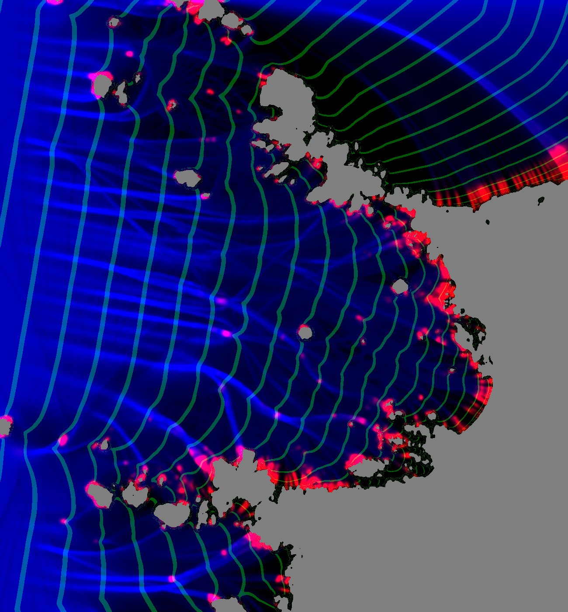
32. elements/sea/notes/poa_waves.pngBash: Write sea-state simulation (foam, current, kelp) and run
cd ~/work/pixelart-studies/elements/sea/src; cat > sea/noise.py <<'EOF'
import numpy as np
from scipy import ndimage as nd
def fbm(shape, scale, seed=0, octaves=4, persist=0.5):
"""smooth value-noise fbm on a grid; scale = feature size in cells. Returns ~N(0,1)-ish."""
rng = np.random.default_rng(seed)
out = np.zeros(shape, np.float32); amp = 1.0; tot = 0
s = float(scale)
for o in range(octaves):
g = rng.standard_normal((int(shape[0] / s) + 3, int(shape[1] / s) + 3)).astype(np.float32)
z = nd.zoom(g, s, order=3)[:shape[0], :shape[1]]
if z.shape != shape: z = np.pad(z, ((0, shape[0] - z.shape[0]), (0, shape[1] - z.shape[1])), mode='reflect')
out += amp * z; tot += amp * amp; amp *= persist; s = max(s / 2, 1.0)
return out / np.sqrt(tot)
def hash2(a, b, seed=0):
x = (np.asarray(a, np.int64) * 374761393 + np.asarray(b, np.int64) * 668265263 + seed * 2246822519) & 0xFFFFFFFF
x = ((x ^ (x >> 13)) * 1274126177) & 0xFFFFFFFF
return ((x ^ (x >> 16)) & 0xFFFFFF) / float(0xFFFFFF)
EOF
cat > sea/sim.py <<'EOF'
"""The sea state at one instant, from fields a simulation has: depth, bottom, swell (rays + eikonal),
an ambient current steered around land, and three advected foam quantities integrated over the last
few minutes of breaking.
W whitewater: rollers and fresh creamy foam (tau ~4 s) -- Ruskin's 'thick creamy curdling foam'
F subsided foam: lace and streaks (tau ~60-300 s) -- Ruskin's 'thin white coating ... oval gaps'
A aeration: bubble cloud under/after a break (tau ~10 s) -- the jade halo around stacks and reefs
"""
import numpy as np
from scipy import ndimage as nd
from scipy.sparse import coo_matrix
from scipy.sparse.linalg import spsolve
from .waves import speeds
from .noise import fbm, hash2
def bottom_type(z, depth):
"""rock where the 1 m lidar is rough at 2-6 m scales, sand where smooth."""
zz = np.nan_to_num(z, nan=-30.0)
hp = zz - nd.gaussian_filter(zz, 4.0)
rough = np.sqrt(nd.gaussian_filter(hp * hp, 3.0))
rock = np.clip((rough - 0.08) / 0.12, 0, 1)
return rock.astype(np.float32), rough.astype(np.float32)
def ambient_current(land, U=(0.0, 0.25), cell=4):
"""potential flow of a uniform surface current around the land (no flow through coasts).
U = (east, south) m/s. Solved on a coarse grid; returns (u, v) on the full grid."""
h, w = land.shape
L = land[::cell, ::cell]; H_, W_ = L.shape
wet = ~L
idx = -np.ones((H_, W_), int); idx[wet] = np.arange(wet.sum())
rows, cols, vals = [], [], []; b = np.zeros(wet.sum())
yy, xx = np.mgrid[0:H_, 0:W_]
phi_b = (U[0] * xx + U[1] * yy) * cell
border = np.zeros_like(wet); border[0] = border[-1] = True; border[:, 0] = border[:, -1] = True
for (dy, dx) in ((0, 1), (0, -1), (1, 0), (-1, 0)):
ny, nx = yy + dy, xx + dx
inb = (ny >= 0) & (ny < H_) & (nx >= 0) & (nx < W_)
nyc, nxc = np.clip(ny, 0, H_ - 1), np.clip(nx, 0, W_ - 1)
nb_wet = inb & wet[nyc, nxc]
m = wet & nb_wet
rows.append(idx[m]); cols.append(idx[nyc[m], nxc[m]]); vals.append(-np.ones(m.sum()))
rows.append(idx[m]); cols.append(idx[m]); vals.append(np.ones(m.sum()))
# outside the grid: Dirichlet via ghost = far-field potential
mo = wet & ~inb
rows.append(idx[mo]); cols.append(idx[mo]); vals.append(np.ones(mo.sum()) * 2)
np.add.at(b, idx[mo], 2 * (phi_b[mo] + (U[0] * dx + U[1] * dy) * cell))
n = wet.sum()
A = coo_matrix((np.concatenate(vals), (np.concatenate(rows), np.concatenate(cols))), shape=(n, n)).tocsr()
phi = np.full((H_, W_), np.nan); phi[wet] = spsolve(A, b)
phi = np.where(wet, phi, np.nan)
# gradient on wet cells
pf = np.where(wet, phi, 0)
gy, gx = np.gradient(pf, cell)
ok = wet & np.roll(wet, 1, 0) & np.roll(wet, -1, 0) & np.roll(wet, 1, 1) & np.roll(wet, -1, 1)
gx = np.where(ok, gx, 0); gy = np.where(ok, gy, 0)
u = nd.zoom(gx, cell, order=1)[:h, :w]; v = nd.zoom(gy, cell, order=1)[:h, :w]
u = np.pad(u, ((0, h - u.shape[0]), (0, w - u.shape[1])), mode='edge')
v = np.pad(v, ((0, h - v.shape[0]), (0, w - v.shape[1])), mode='edge')
u = nd.gaussian_filter(u, 2); v = nd.gaussian_filter(v, 2)
return np.where(land, 0, u).astype(np.float32), np.where(land, 0, v).astype(np.float32)
def advect(q, u, v, dt):
h, w = q.shape
yy, xx = np.mgrid[0:h, 0:w].astype(np.float32)
return nd.map_coordinates(q, [yy - v * dt, xx - u * dt], order=1, mode='constant', cval=0.0)
class SeaState:
def __init__(self, depth, z, waves, T, current=(0.0, 0.25), wind=(0.0, 0.0), seed=1,
tau_w=4.0, tau_f=150.0, tau_a=10.0, gamma_i=0.78, n_periods=36, steps_per_T=10,
kelp_amount=1.0, tide=0.45):
self.depth, self.z, self.T = depth, z, T
self.land = waves['land'] | ~(depth > 0.02)
h, w = depth.shape
self.seed = seed
d = np.nan_to_num(depth, nan=30.0)
self.d = d
self.db = nd.gaussian_filter(np.maximum(d, 0.02), 1.2)
omega = 2 * np.pi / T
self.k, self.c, self.cg = speeds(omega, nd.gaussian_filter(np.maximum(d, 0.05), 4))
self.Hrms = waves['H']; self.tt = waves['t']; self.kx = waves['kx']; self.ky = waves['ky']
self.rock, self.rough = bottom_type(z, d)
# currents
u, v = ambient_current(self.land, current)
# surface drift: wind (3%), Stokes drift and surf-zone shoreward push along k
k = self.k
a = self.Hrms / np.sqrt(2) / 2 * np.sqrt(2) # ~ amplitude of an Hs/2 wave
stokes = omega * k * a * a
surf = 0.35 * np.clip(waves['Q'] * 4, 0, 1) # bores carry surface foam shoreward
self.u = u + wind[0] * 0.03 + (stokes + surf) * self.kx
self.v = v + wind[1] * 0.03 + (stokes + surf) * self.ky
self.u = np.where(self.land, 0, self.u); self.v = np.where(self.land, 0, self.v)
self.params = dict(tau_w=tau_w, tau_f=tau_f, tau_a=tau_a, gamma_i=gamma_i, n_periods=n_periods,
steps_per_T=steps_per_T)
# along-crest coordinate (for per-crest random heights)
yy, xx = np.mgrid[0:h, 0:w].astype(np.float32)
kx0, ky0 = float(np.median(self.kx[~self.land])), float(np.median(self.ky[~self.land]))
self.s_along = xx * (-ky0) + yy * kx0
self.g_field = fbm((h, w), 40, seed + 11, octaves=3) # slow variation of crest height along crest
self.kelp = self.make_kelp(kelp_amount, tide)
def make_kelp(self, amount, tide):
"""bull kelp canopy: on rock, 2-18 m deep, in clumpy beds; streams down-current."""
h, w = self.d.shape
d = self.d
hab = self.rock * np.clip((d - 1.5) / 2.0, 0, 1) * np.clip((18 - d) / 6, 0, 1)
exp_ = np.clip(1.2 - self.Hrms / 1.2, 0, 1) # the most exposed heads carry less canopy
bed = fbm((h, w), 60, self.seed + 3, octaves=2) * 0.8 + 0.4 # bed-scale patchiness (tens of m)
clump = fbm((h, w), 7, self.seed + 4, octaves=3) # clumps of plants (3-8 m)
# stretch clumps along the current: sample clump noise displaced along (u,v)
un = np.hypot(self.u, self.v) + 1e-6
acc = np.zeros_like(clump)
for s in range(-3, 4):
acc += nd.map_coordinates(clump, [np.mgrid[0:h, 0:w][0] - self.v / un * s * 1.5,
np.mgrid[0:h, 0:w][1] - self.u / un * s * 1.5], order=1, mode='nearest')
clump = acc / 7
k = hab * (0.55 + 0.45 * exp_) * amount
field = k * 1.2 + 0.45 * bed + 0.9 * clump - 1.1
return np.clip(field * 2.5, 0, 1).astype(np.float32) * (hab > 0.05)
def crest_break(self, t):
"""q = fraction of a period since the last crest passed; H_inst of that crest; breaking mask."""
T = self.T
q = np.mod((t - self.tt) / T, 1.0)
n = np.floor((t - self.tt) / T) # crest index
# per-crest random multiplier, varying slowly along the crest (Rayleigh-like, mean ~1)
cell = np.floor(self.s_along / 30.0)
r1 = hash2(n, cell, self.seed); r2 = hash2(n, cell + 1, self.seed)
f = (self.s_along / 30.0) - cell; f = f * f * (3 - 2 * f)
u = r1 * (1 - f) + r2 * f
g = np.sqrt(-np.log(np.clip(1 - u * 0.985, 1e-4, 1))) * 1.0 + 0.12 * self.g_field
Hinst = self.Hrms * g * np.sqrt(1.0)
Hm = self.params['gamma_i'] * self.db
brk = (Hinst > Hm) & ~self.land
return q, Hinst, brk
def run(self, t_end=None, verbose=False):
T = self.T; P = self.params
nst = P['n_periods'] * P['steps_per_T']; dt = T / P['steps_per_T']
t_end = t_end if t_end is not None else nst * dt
h, w = self.d.shape
W = np.zeros((h, w), np.float32); F = np.zeros_like(W); A = np.zeros_like(W)
rng = np.random.default_rng(self.seed)
t0 = t_end - nst * dt
for i in range(nst + 1):
t = t0 + i * dt
q, Hinst, brk = self.crest_break(t)
passed = q * T < dt # crest swept over x in this step
age = q * T
src = brk & passed
# decay
W *= np.exp(-dt / P['tau_w']); A *= np.exp(-dt / P['tau_a'])
lost = W * (1 - np.exp(-dt / P['tau_w']))
F = F * np.exp(-dt / P['tau_f']) + 0.9 * lost
W = np.where(src, np.maximum(W, np.exp(-age / P['tau_w'])), W)
A = np.where(src, np.maximum(A, 1.0), A)
if i % 2 == 0:
F = advect(F, self.u, self.v, 2 * dt); A = advect(A, self.u, self.v, 2 * dt)
W = np.where(self.land, 0, W); F = np.where(self.land, 0, F); A = np.where(self.land, 0, A)
if verbose and i % 50 == 0: print(i, nst, float(W.mean()), float(F.mean()))
self.W, self.F, self.A = W, np.clip(F, 0, 3), A
self.q, self.Hinst, self.brk = self.crest_break(t_end)
self.t = t_end
return self
EOF
cat > t_sim.py <<'EOF'
import sys, time; sys.path.insert(0,'.')
import numpy as np
from sea.place import load
from sea.sim import SeaState
from PIL import Image
P=load('poa'); Wv=dict(np.load('../cache/poa_waves.npz'))
Wv['land']=Wv['land'].astype(bool)
t=time.time()
S=SeaState(P['depth'],P['z'],Wv,8.3,current=(0.05,-0.25)).run(verbose=True)
print('sim',time.time()-t)
np.savez_compressed('../cache/poa_state.npz',W=S.W,F=S.F,A=S.A,q=S.q,Hinst=S.Hinst,brk=S.brk,kelp=S.kelp,rock=S.rock,u=S.u,v=S.v)
rgb=np.zeros(S.d.shape+(3,))
dd=np.clip(S.d/20,0,1)
rgb[...]=np.stack([0.1+0.2*(1-dd),0.3+0.3*(1-dd),0.5+0.1*(1-dd)],-1)
rgb[S.kelp>0.3]=[0.15,0.12,0.2]
aer=np.clip(S.A,0,1)[...,None]; rgb=rgb*(1-0.4*aer)+0.4*aer*np.array([0.5,0.8,0.75])
f=np.clip(S.F*1.5,0,1)[...,None]; rgb=rgb*(1-f)+f
wv=np.clip(S.W*1.5,0,1)[...,None]; rgb=rgb*(1-wv)+wv
rgb[S.land]=[0.45,0.4,0.35]
Image.fromarray((rgb*255).astype(np.uint8)).save('../notes/poa_state.png')
EOF
OPENBLAS_NUM_THREADS=1 OMP_NUM_THREADS=1 nice python3 t_sim.py 2>&1 | tail -4
# output:
250 360 0.001989812357351184 4.945431101077702e-06
300 360 0.0019275216618552804 5.945418251940282e-06
350 360 0.001977223437279463 6.075724741094746e-06
sim 242.90201115608215Read: elements/sea/notes/poa_state.png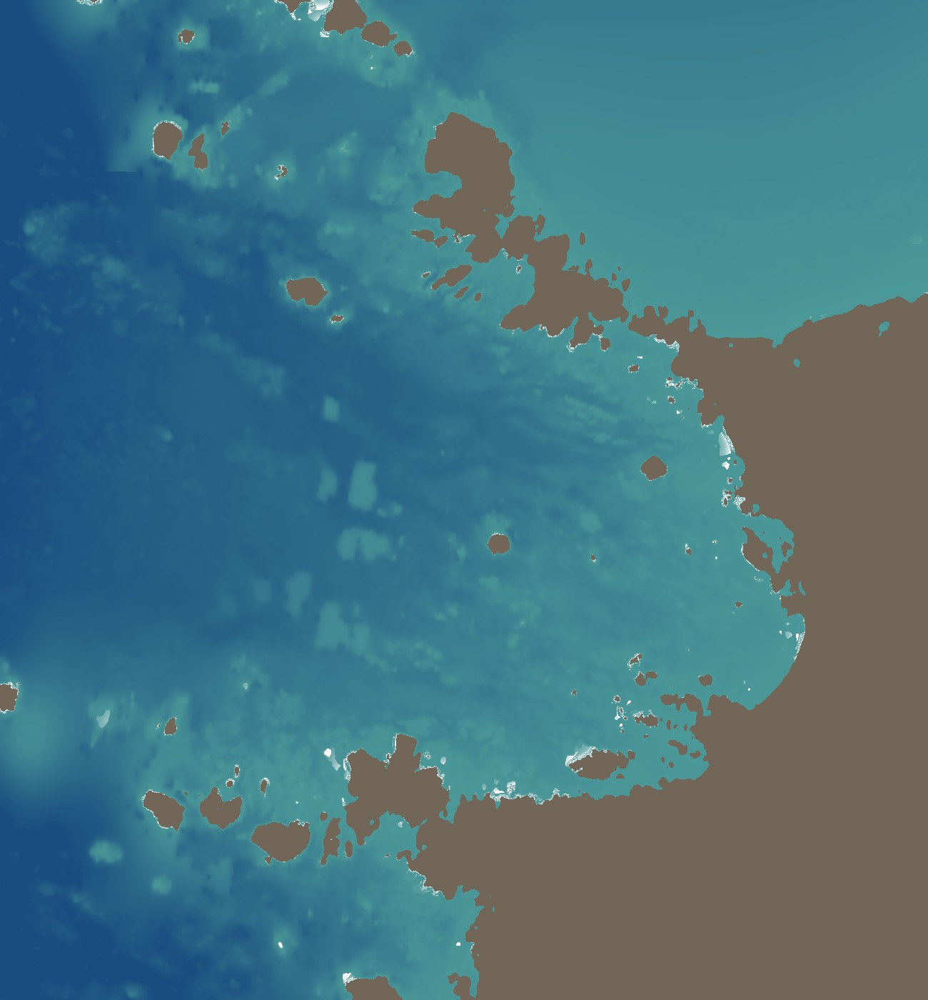
33. elements/sea/notes/poa_state.pngBash: Debug advection and state stats
cd ~/work/pixelart-studies/elements/sea/src; python3 -c "
import sys;sys.path.insert(0,'.')
import numpy as np
from sea.sim import advect
q=np.zeros((50,50),np.float32);q[20:30,20:30]=1
u=np.full_like(q,0.5);v=np.zeros_like(q)
print(advect(q,u,v,2).sum(), q.sum())
d=np.load('../cache/poa_state.npz');print({k:float(d[k].mean()) for k in d.files}); print(d['kelp'].max(), (d['rock']>0.5).mean())
"
# output:
100.0 100.0
{'W': 0.001965793315321207, 'F': 5.8680943766376e-06, 'A': 5.499070994119393e-07, 'q': 0.4989843964576721, 'Hinst': 0.41620426690873985, 'brk': 0.0045302197802197805, 'kelp': nan, 'rock': 0.5076324343681335, 'u': nan, 'v': nan}
nan 0.4973021978021978Bash: Fix NaN currents and test
cd ~/work/pixelart-studies/elements/sea/src; python3 - <<'EOF'
s=open('sea/sim.py').read()
s=s.replace(" A = coo_matrix((np.concatenate(vals), (np.concatenate(rows), np.concatenate(cols))), shape=(n, n)).tocsr()\n phi = np.full((H_, W_), np.nan); phi[wet] = spsolve(A, b)",
" rows.append(np.arange(n)); cols.append(np.arange(n)); vals.append(np.full(n, 1e-6)) # pins isolated ponds\n A = coo_matrix((np.concatenate(vals), (np.concatenate(rows), np.concatenate(cols))), shape=(n, n)).tocsr()\n phi = np.full((H_, W_), np.nan); phi[wet] = spsolve(A, b)")
s=s.replace(" u = nd.gaussian_filter(u, 2); v = nd.gaussian_filter(v, 2)"," u = nd.gaussian_filter(np.nan_to_num(u), 2); v = nd.gaussian_filter(np.nan_to_num(v), 2)\n sp = np.hypot(u, v); lim = 3 * np.hypot(*U); f_ = np.minimum(1, lim / np.maximum(sp, 1e-9)); u *= f_; v *= f_")
open('sea/sim.py','w').write(s)
EOF
python3 -c "
import sys;sys.path.insert(0,'.')
import numpy as np
from sea.sim import ambient_current
L=np.load('../cache/poa_waves.npz')['land'].astype(bool)
u,v=ambient_current(L,(0.05,-0.25));print(np.isnan(u).sum(),np.abs(u).max(),np.abs(v).max(), np.median(v[~L]))
"
# output:
0 0.62320656 0.7648027 -0.18206948Bash: Rerun sim with fixed current
cd ~/work/pixelart-studies/elements/sea/src; OPENBLAS_NUM_THREADS=1 OMP_NUM_THREADS=1 nice python3 t_sim.py 2>&1 | tail -2; python3 -c "
import numpy as np;d=np.load('../cache/poa_state.npz');print({k:float(d[k].mean()) for k in d.files}); print((d['kelp']>0.3).mean())"
# output:
350 360 0.001977223437279463 0.008782175369560719
sim 437.93490195274353
{'W': 0.001965793315321207, 'F': 0.008622883819043636, 'A': 0.002481434028595686, 'q': 0.4989843964576721, 'Hinst': 0.41620426690873985, 'brk': 0.0045302197802197805, 'kelp': 0.10878248512744904, 'rock': 0.5076324343681335, 'u': 0.034371171558035374, 'v': -0.11800677829567467}
0.12164010989010988Bash: Locate wave chapter in Gilland
cd ~/work/pixelart-studies/library; ls purchased text; grep -n -i -E "^ *(chapter|the wave|the splash)" text/elemental_magic_vol2.txt | head -40; wc -l text/elemental_magic_vol2.txt
# output:
purchased:
807548002-男鹿和雄画集Ⅱ-Kazuo-Oga-Artbook-2.pdf
Carlson's guide to landscape painting -- Carlson, John F -- 1973.epub
Elemental Magic, Volume II_ The Technique of Special Effects -- Joseph Gilland.pdf
Geological Field Sketches and Illustrations _ A Practical -- Matthew J_ Genge.pdf
The Guild Handbook of Scientific Illustration -- Elaine R_ S Hodges; Guild of Natural Science Illustrators -- 1, 1988.pdf
Tropical trees and forests an architectural analysis (Hallé, Francis, Hallé-Oldeman).pdf
男鹿和雄画集 =.pdf
text:
Geological_Field_Sketches_and_Illustrati.txt
The_Guild_Handbook_of_Scientific_Illustr.txt
Tropical_trees_and_forests__an_architect.txt
carlson_guide.txt
elemental_magic_vol2.txt
imhof_cartographic_relief.txt
男鹿和雄画集_=.pdf.txt
92:Chapter 1. Introduction to the Elements
93:Chapter 2. The Wave
97:Chapter 3. The Splash
101:Chapter 4. Lighting a Fire
105:Chapter 5. Blowing It Up
111:Chapter 6. Magic: The Art of Animating Pixie Dust
835:Chapters 2 and 3 cover water waves and water splashes, respectively.
846:The splash we will study will be a medium-sized splash like one we
855:Chapters 4 and 5 will deal with animating fire and smoke, and
1039:chapters: Chapter 2, “The Wave,” and Chapter 3, “The Splash.”
1080:chapters, “The Wave,” “The Splash,” and “Lighting a Fire,” make up
1086:chapters cover the essential principles that an effects animator needs
1107:The Wave
1399:the splash settles and the waves created by the splash settle, if the person
1666:The Splash
2323:the splash. They must always reflect the pattern of those forces!
2373:The splash is losing its momentum,
2415:The splash is losing its momentum,
3143:the splash by visualizing the path of action of
3144:the splash unfolding over time.
3154:the splash. However, when I first scribbled this splash out, I was
6335 text/elemental_magic_vol2.txtBash: Read Gilland's wave chapter
cd ~/work/pixelart-studies/library; sed -n 1107,1666p text/elemental_magic_vol2.txt | tr -s '\n' | grep -v "^\s*$" | cut -c1-200 | head -400 # output: The Wave In this chapter we will look at animating a wave. I have chosen to do this because waves are driven by a fundamental energy pattern that exists in all the elements, the understanding of which will help us understand how to animate all of the other elements. Wave action is found everywhere in nature, whether it be water, fire, smoke, or grass blowing in the wind. Even character animators must understand the principles of wave animation, as it can be present in a character gesturing dramatically, or in the flow of a character’s hair or clothing. Elemental Magic, Volume II © 2012 Elsevier Inc. All rights reserved. 21 THE WAVE 23 One of the most common places where we see a wavelike motion occurring is in the flapping of a flag in the wind. It is also one of the most common tests that students of animation are required to do in any animation program. Sometimes it is a “wagging dog tail” assignment, or a “flapping flag” assignment. In any case, it is a vital step in understanding how things of all kinds move. Virtually everything that can move, and that’s pretty much everything, will move with some amount of wave action, however subtle. Even the tectonic plates of the earth’s crust move in waves. Any physicist will tell you that waves drive much of all the energy we perceive. Sound, light, the ocean, wind, and all the elements around us manifest themselves as waves in one way or another. That is why I have started out with this element—in this case, a wave of water. There are a wide variety of different types of waves, each of which has its own particular characteristics and behaviors. Although all waves share the same basic principles of how they move from one place to another, different subsets of waves are created differently, or resolve themselves differently. For example, if we throw a rock into a pond, the splash that is created will have waves emanating outward from the point of impact. These small waves are usually referred to as ripples. Another example is a boat traveling through the water, creating what we call a wake: a series of waves emanating outward from behind the boat. 24 ELEMENTAL MAGIC Then we have the classic waves that we see crashing into the shoreline on a typical beach anywhere in the world. Most of these larger waves are created by wind, generated by storms hundreds or even thousands of miles away from the beach in question. When these large waves are created, they absorb an enormous amount of energy from the high winds that push on the water’s surface. THE WAVE 25 This energy propels these waves across vast distances, and over time they become less pronounced and lose some of their energy. Their pronounced peaked shapes smooth out, becoming large sloping waves called swells. These still contain a great deal of energy as they churn their way across the ocean. When these swells approach a shoreline, the energy that drives them, much like an enormous rolling engine, collides with the shapes on the bottom of the ocean as
Bash: Find reef break diagram page
cd ~/work/pixelart-studies/library/purchased; P="Elemental Magic, Volume II_ The Technique of Special Effects -- Joseph Gilland.pdf"; for p in $(seq 30 80); do pdftotext -f $p -l $p "$P" - 2>/dev/null | grep -q -E "Anatomy of a Reef|Anatomy of a Mid|Swells from Distant|Kanagan" && echo $p; done # output: Exit code 1 71 72 73 74
Bash: Render Gilland wave pages
cd ~/work/pixelart-studies/library/purchased; P="Elemental Magic, Volume II_ The Technique of Special Effects -- Joseph Gilland.pdf"; pdftoppm -r 55 -f 71 -l 73 -png "$P" ~/work/pixelart-studies/elements/sea/notes/gil; ls ~/work/pixelart-studies/elements/sea/notes/gil* # output: Syntax Warning: Non conformant codestream TPsot==TNsot.<0a> Syntax Warning: Non conformant codestream TPsot==TNsot.<0a> Syntax Warning: Non conformant codestream TPsot==TNsot.<0a> Syntax Warning: Non conformant codestream TPsot==TNsot.<0a> Syntax Warning: Non conformant codestream TPsot==TNsot.<0a> Syntax Warning: Non conformant codestream TPsot==TNsot.<0a> Syntax Warning: Non conformant codestream TPsot==TNsot.<0a> ~/work/pixelart-studies/elements/sea/notes/gil-071.png ~/work/pixelart-studies/elements/sea/notes/gil-072.png ~/work/pixelart-studies/elements/sea/notes/gil-073.png
Read: elements/sea/notes/gil-071.png 34. elements/sea/notes/gil-071.png
34. elements/sea/notes/gil-071.png
Read: elements/sea/notes/gil-072.png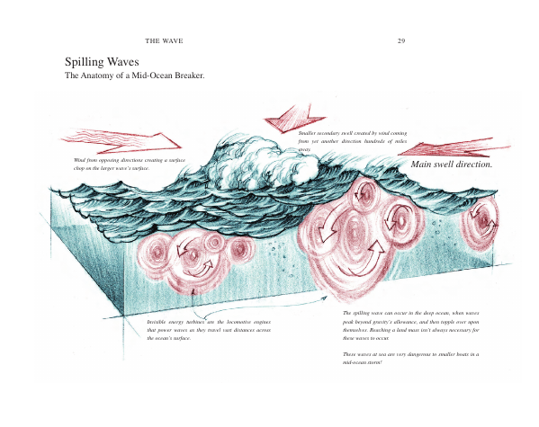
35. elements/sea/notes/gil-072.pngBash: Skim Gilland splash principles
cd ~/work/pixelart-studies/library; sed -n 1666,3200p text/elemental_magic_vol2.txt | tr -s '\n' | grep -i -E "foam|mist|droplet|arc|gravity|dissipat|slow|timing|frames|spray|principle|shape" | cut -c1-180 | head -60 # output: Although there are very clear and definite physics principles at work in The incredible shapes that water takes on when it is disturbed in any shapes and flowing movement of splashes and ripples. And as I grew up, still be making splash after splash just to look at the incredible shapes sized and shaped rocks into the water. And, the size and shape of the many splashes research I do always teaches me down into the water, creating a fairly even and symmetrically shaped splash. In this splash, instead of a ball we have an asymmetrically shaped rock that has been dropped or spray of water that shoots up and out around the object hitting the water in the characteristic splash shape on the initial impact. separate event, largely depending on the size, shape, trajectory, and small, 2- to 4-inch-diameter round-shaped rock is thrown at the water Throwing a disc-shaped rock at the water surface from an extremely splash that is mostly spray or very thin shape. The waterlogged piece of wood is heavy and will penetrate much shaped objects create very different splashes. Here now are some examples of how the primary splash is affected purely by the shape of shapes of objects This beautiful little splash has an absolutely perfect bowl shape! invariably create what can be described as a bowl-shaped primary splash. This bowl-shaped splash seems to be created by the round sides of the rock, which shape the splash as the water is forced up and around this kind of splash will often close in on itself, closing the bowl shape In this beautiful little bowl-shaped splash, you can see more than a small, twisted up little water shape that shape, the irregularity will cause a break in the bowl shape, so we often see a fractured bowl shape in a splash that was caused by an object infinite as the available shapes of objects. create a bowl-shaped splash, will indeed create a pretty perfect bowlshaped splash. From what I can bowl-shaped splash, because spherical shape as it pierces the object of virtually any shape a sheet-shaped splash. This to the sides of the shape and take on that shape as it shapes striking the water, of the shape and trajectory, convex shapes, be thick or This is a sheet-shaped splash, created by a rock with quite a flat angle. I have left out a lot of additional droplets that would be visible Sometimes primary splashes take on bowl shapes, or are a combination of flat, bowl-shaped, convex, and/or concave forms. The possibilities for between the shape, size, texture, weight, and speed of the object splash shapes, bowls and sheets, will stretch and tear as they shoot into hundreds, thousands, or even millions of tiny water droplets. It is design, becomes more fluid and “water-shaped” as it loses its energy. shape of splash will break up in this way to some degree, and so it is a very important principle to learn. Every effects artist has his or her own particular style of approaching this, but the principle is the same. Small what was a well-formed solid shape
Write: elements/sea/LESSONS.md
# The open sea and surf from the air: a student's notebook *Work in progress, written as I go so a crash loses nothing.* Subject: sea colour, swell, surf lines, foam around stacks, kelp, for the Olympic coast and the San Juans, at voxsim's scales (close scene ~0.1 m/px, 30° iso at 0.3–1 m/px, region ~1–3 m/px, and a shore eye-level view). Everything is made by `src/` (Python, numpy + scipy). Tags: **[measured]** = I computed it from data or photos; **[source]** = from the cited text; **[mine]** = my reading, untested. ## 0. The model systems I stand on Three traditions, each doing one job: 1. **Linear wave theory as the engineers draw it:** the US Army *Shore Protection Manual* (1984, vol. 1, ch. 2; now in `library/water/`) and Bascom's *Waves and Beaches* (1964; lending-only on the Internet Archive). Refraction diagrams, orthogonals and their spacing, shoaling, the breaker-type chart. My swell is literally an SPM refraction diagram: rays launched offshore, bent by Snell's law over the real bathymetry, and wave height from the spacing of neighbouring orthogonals (K_r = sqrt(b0/b)). 2. **Ruskin's two foams** (*Modern Painters* I, part II sec. V ch. III §29–30, 1843): "the thick creamy curdling overlapping massy form which remains for a moment only after the fall of the wave", and "the thin white coating into which this subsides, which opens into oval gaps and clefts, marbling the waves over their whole surface, and connecting the breakers on a flat shore by long dragging streams of white." Plus, on heavy sea: "the grand division of the whole space of the sea by a few dark continuous furrows", and the flatness of all its lines. These became my two foam fields, W and F. 3. **Gilland, *Elemental Magic* vol. II, "The Wave" and "The Splash"** (2012; `library/purchased/`). His *Anatomy of a Reef Break* block diagram says the thing the coast painter misses: **"the outline of foam shapes is usually a visual mirror of the reef and sandbar shapes below."** Also: the wave face's mid-range shadow where it rises above the waterline, sparkles giving the sun's direction, and the principle of chaos — no two sets alike, variation mattering more the closer you are. His splash decay (a sheet whose holes expand and intersect into "fantastic fractal shapes", then strings of droplets) is the same process as Ruskin's oval gaps, one scale down. Beside them: Tyndall on the colour of sea water (blue where clear, green where it carries particles), the Beaufort scale as the sea-state vocabulary, and WA Ecology's shoreline obliques as the answer key. (The earlier *water* study in `elements/water/` covered surf around stacks at a first pass, and its critic rounds are the list of what not to do: ruled parallel bands, olive water, direction-less confetti foam, foam darker than the sea, screen-door checker, thick cream bore stripes. I read them first.) ## 1. Observation ### 1.1 The answer key: WA Ecology obliques registered onto the lidar The obliques (`~/work/voxsim-data/places/olycoast/obliques`, 4200×2800, ~0.1–0.25 m/px near the frame centre) are taken from a low aircraft at ~45° down. The 1 m topo-bathymetric lidar in the olycoast pack reaches ~27 m deep, so the reefs, stacks and sand under the water are known. **The sea is a plane**, so a homography maps the photo's sea surface exactly onto the map (`src/reg.py`): I picked five stack/rock pairs by eye for Point of the Arches (photo 060819_15405, 11 Aug 2016 14:27 PDT) and warped the photo into a top-down "orthophoto" of the cove (`notes/poa_ortho.png`, contours in `notes/poa_ortho_contours.png`). Registration is good (±5–10 m) near the centre rock, worse (30–60 m) along the east shore: five pairs is too few. Conditions at the photo **[measured]**: NDBC 46087 (Neah Bay) Hs 1.57 m, Tp 8.3 s, from 277–286°, wind 1–3.5 m/s NW; La Push gauge 0.40–0.45 m NAVD88 (≈ MLLW −0.5 m, a low tide). ### 1.2 Sea colour **[measured]**, sunlit, summer, L\*a\*b\* medians (`src/sample.py`, `notes/colour_samples.json`) | what | L\* | a\* | b\* | where | |---|---|---|---|---| | offshore, 15–20 m | 36 | −9 | −16 | Point of Arches | | over sand, 3–5 m | 51–53 | −14 to −16 | −11 to −13 | P. of Arches cove, Cape Alava shoal | | over sand, 6–10 m | 46 | −19 | −7 | Cape Alava | | over rock reef, clear, ~2–4 m | 53 (sd 7) | −1 | −17 | Cape Alava | | over rock, ~10 m | 41 | 0 | −25 | Cape Alava | | kelp mat (surface canopy) | 29 (p10–p90 23–45) | +3 | −20 | Cape Alava | | kelp speck field (scattered floats) | 37 | −8 | −18 | P. of Arches | | aerated water by a stack (bubble plume) | 64 (sd 18) | −10 | −10 | P. of Arches | | foam streak core | 84 | −4 | −9 | P. of Arches | | surf-zone foam sheet (big swell) | 96 | −2 | 0 | Shi Shi 2006 | | jade water between foam, big swell | 46 (sd 12) | −17 | −8 | Shi Shi 2006 | | open sea near a river mouth | 41 | −12 | −8 | La Push | | sheltered cove by the estuary | 35 | −15 | −4 | La Push | | estuary (turbid) | 24 | −9 | 0 | Quillayute | Registered depth series, P. of Arches cove (water pixels only, `notes/poa_ortho.png`): L\* 50 at 1–6 m, 46 at 7–10 m, 43 at 10–14 m, 40 at 14–20 m; a\* ≈ −11 throughout; b\* ≈ −15. Readings: - **Depth lightens, bottom tints.** Sand makes shallow water greener (a\* more negative, b\* less negative: yellow sand under blue water); rock makes it bluer and textured; kelp makes it near-black blue. - **The deep sea is not navy here.** Sunlit summer Olympic water is a mid blue-teal (L\* 36–41), because it is productive coastal water (Tyndall: particles make the sea green). Navy only appears in the lee of land under high sun or in the San Juans' deep channels. - **Foam is cool.** Foam reflects the sky: b\* −2 to −9 in sun. The water study's critic already found "foam never darker than the sea" and "bore fronts cool white, not cream". ### 1.3 How surf sits on the sea (looked, frame by frame) Point of Arches, summer swell, low tide (`notes/poa_stack.png`, `notes/poa_streak.png`): - **Breaks are patches, not rings.** Over a rocky cove the white water is a scatter of short crescents and boils, each over a reef head shallower than ~2 m, each with a pale jade halo. Between them is plain sea. (The coast painter draws concentric rings by distance to shore; the photo draws the reef.) - **Stacks:** a white rim tight on the seaward faces, a jade pool of aerated water 1.5–2 stack diameters across, thin white filaments curling around the lee. - **Drifting streaks:** long bands (100–250 m) of old foam cross deep water. Each has a crisp, bright leading edge on the shoreward side (the remnant of the bore front) and a soft stippled tail that dissolves seaward. They start at reef breaks and are carried off by the current, like smoke from a chimney. That is Ruskin's second foam, drawn out. - **Surface:** fine ripple texture, low contrast; the swell itself is barely visible from the air except as broad value undulations. Cape Alava (`notes/ca_kelp.png`): a kelp mat is a clotted dark patch of lobes 3–8 m across with turquoise channels between and a ragged edge that breaks into satellite blobs; white boils appear inside the mat where waves break over rocks under it. Shi Shi, August 2006, bigger swell (`notes/shi_shi__160811_07663_2006_v.jpg`): the surf zone is saturated — foam cover > 70%, with jade water showing through oval holes (Ruskin's marbling), bore fronts as brighter ridges, and the swash as thin white fronts on glassy wet sand. Morning (10:40 PDT) looking toward the sun (2002 set): the whole cove becomes a silver glitter field cut by dark ripple lines, and the colour disappears.
Bash: Inspect canopy and landcover layers
cd ~/work/voxsim-data/places/olycoast/pack; for k in chm lc cc; do python3 -c "
import zstandard,numpy as np,glob
f=sorted(glob.glob('$k/*.zst'))[100];b=zstandard.ZstdDecompressor().decompress(open(f,'rb').read(),max_output_size=1<<28);print('$k',len(b))
a=np.frombuffer(b,np.float32) if len(b)==4000000 else np.frombuffer(b,np.uint8);print(np.nanmin(a),np.nanmax(a),np.unique(a)[:10] if a.dtype==np.uint8 else '')
"; done
# output:
chm 1000000
0 0 [0]
lc 10000
80 80 [80]
cc 1156
0 0 [0]Bash: Write camera and G-buffer renderer
cd ~/work/pixelart-studies/elements/sea/src; cat > sea/render.py <<'EOF'
"""voxsim's camera: orthographic, 30 deg (row = t*sin(e) - (z - zc)*zf*cos(e)/cos(30)), yawed.
Plus a perspective eye-level camera for the shore view. Produces a G-buffer: world x, y (1 m grid
coords, col/row south-positive), z, sea mask, and land normal."""
import numpy as np, math
from .waves import bilinear
class Cam:
def __init__(self, cx, cy, mpp, W=640, H=360, yaw=0.0, elev=30.0, zf=1.0, zc=0.0):
self.cx, self.cy, self.mpp, self.W, self.H = cx, cy, mpp, W, H
self.yaw, self.elev, self.zf, self.zc = yaw, elev, zf, zc
a = math.radians(yaw)
# screen-right and screen-down(ground) unit vectors in grid coords (x east, y south).
# yaw=0: camera looks north (up the grid): right = +x, forward-down-screen = +y (south = near)
self.R = (math.cos(a), math.sin(a)); self.V = (-math.sin(a), math.cos(a))
self.ty = math.sin(math.radians(elev)); self.zy = zf * math.cos(math.radians(elev)) / math.cos(math.radians(30))
def project(self, x, y, z):
dx, dy = x - self.cx, y - self.cy
u = dx * self.R[0] + dy * self.R[1]; t = dx * self.V[0] + dy * self.V[1]
return u / self.mpp + self.W / 2, (t * self.ty - (z - self.zc) * self.zy) / self.mpp + self.H / 2, t
def unproject_plane(self, px, py, z):
u = (px - self.W / 2) * self.mpp
t = ((py - self.H / 2) * self.mpp + (z - self.zc) * self.zy) / self.ty
x = self.cx + u * self.R[0] + t * self.V[0]; y = self.cy + u * self.R[1] + t * self.V[1]
return x, y
def gbuffer(cam, zgrid, sea_level=0.0, ss=2, land_min=None):
"""zgrid: land/sea-floor elevation (NaN = deep). Sea pixels come from the plane z = sea_level;
land samples are splatted (painter's order by t) wherever z > sea_level."""
W, H, mpp = cam.W, cam.H, cam.mpp
py, px = np.mgrid[0:H, 0:W].astype(np.float64) + 0.5
sx, sy = cam.unproject_plane(px, py, sea_level)
G = dict(x=sx, y=sy, z=np.full((H, W), sea_level), sea=np.ones((H, W), bool),
t=np.full((H, W), -1e9), nx=np.zeros((H, W)), ny=np.zeros((H, W)), nz=np.ones((H, W)))
# land splat: sample the world on a grid finer than a pixel, over the footprint
h, w = zgrid.shape
zz = np.nan_to_num(zgrid, nan=-50.0)
gyz, gxz = np.gradient(zz)
step = mpp / ss
# footprint of the screen on the ground (with margin for tall land)
corners = [cam.unproject_plane(a, b, sea_level) for a in (0, W) for b in (0, H + 80 / mpp * 0 + 60 / mpp)]
corners += [cam.unproject_plane(a, b, sea_level + 80) for a in (0, W) for b in (0, H)]
xs_ = [c[0] for c in corners]; ys_ = [c[1] for c in corners]
x0, x1 = max(0, min(xs_) - 5), min(w - 1, max(xs_) + 5); y0, y1 = max(0, min(ys_) - 5), min(h - 1, max(ys_) + 5)
gx = np.arange(x0, x1, step); gy = np.arange(y0, y1, step)
for j0 in range(0, gy.size, 400): # chunk rows to bound memory
GY, GX = np.meshgrid(gy[j0:j0 + 400], gx, indexing='ij')
z = bilinear(zz, GX, GY)
m = z > sea_level + 0.02
if not m.any(): continue
GXm, GYm, zm = GX[m], GY[m], z[m]
u, v, t = cam.project(GXm, GYm, zm)
iu = np.floor(u).astype(int); iv = np.floor(v).astype(int)
ok = (iu >= 0) & (iu < W) & (iv >= 0) & (iv < H)
iu, iv, t, GXm, GYm, zm = iu[ok], iv[ok], t[ok], GXm[ok], GYm[ok], zm[ok]
# also fill the pixel below (vertical faces stretch downward on screen)
for dv in (0, 1):
ivv = np.minimum(iv + dv, H - 1)
order = np.argsort(t, kind='stable')
a_, b_ = ivv[order], iu[order]
tt = t[order] - 1e-3 * dv
cur = G['t'][a_, b_]
better = tt >= cur
a_, b_, o2 = a_[better], b_[better], order[better]
G['t'][a_, b_] = t[o2]; G['x'][a_, b_] = GXm[o2]; G['y'][a_, b_] = GYm[o2]; G['z'][a_, b_] = zm[o2]
G['sea'][a_, b_] = False
# land normals
L = ~G['sea']
nx = -bilinear(gxz, G['x'][L], G['y'][L]); ny = -bilinear(gyz, G['x'][L], G['y'][L])
n = np.sqrt(nx * nx + ny * ny + 1)
G['nx'][L] = nx / n; G['ny'][L] = ny / n; G['nz'][L] = 1 / n
return G
EOF
echo ok
# output:
okBash: Check background photo fetch
cd ~/work/pixelart-studies/elements/sea/refs; cat fetch_ground.log; ls ground # output: bull kelp: 12 Shi Shi Beach: 12 Pacific Ocean surf overcast: 14 kelp forest aerial: 12 Olympic coast fog: 12 sea stack waves crashing Oregon: 11 surge channel rocky shore: 12 rip current aerial: 12 Kalaloch beach: 10 ALLDONE Cape_Flattery Cape_Flattery.log Kalaloch_beach Kalaloch_beach.log Olympic_coast_fog Olympic_coast_fog.log Pacific_Ocean_surf_overcast Pacific_Ocean_surf_overcast.log Rialto_Beach_waves Rialto_Beach_waves.log Ruby_Beach_sea_stacks Ruby_Beach_sea_stacks.log Second_Beach_La_Push Second_Beach_La_Push.log Shi_Shi_Beach Shi_Shi_Beach.log bull_kelp bull_kelp.log kelp_forest_aerial kelp_forest_aerial.log rip_current_aerial rip_current_aerial.log sea_stack_waves_crashing_Oregon sea_stack_waves_crashing_Oregon.log surge_channel_rocky_shore surge_channel_rocky_shore.log
Read: elements/sea/refs/ground/Pacific_Ocean_surf_overcast/_sheet.jpgRead: elements/sea/refs/ground/Olympic_coast_fog/_sheet.jpgRead: elements/sea/refs/ground/bull_kelp/_sheet.jpg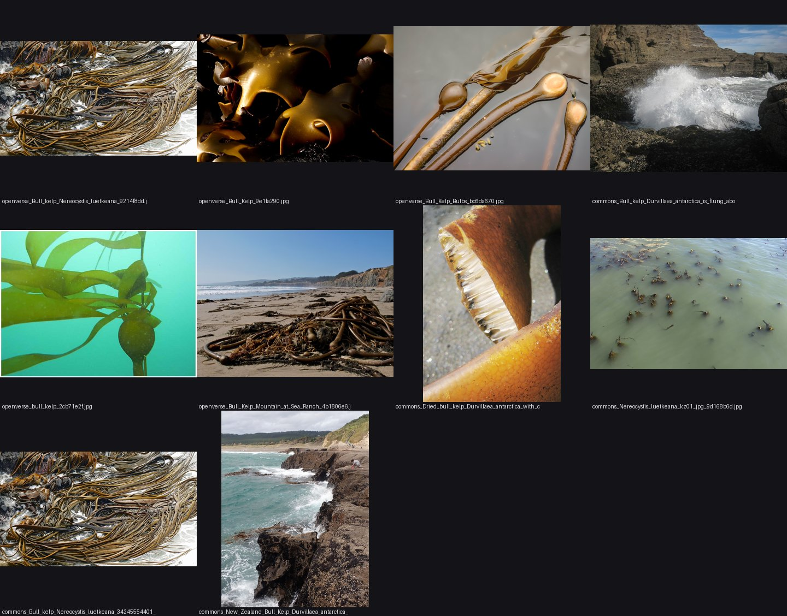
36. elements/sea/refs/ground/bull_kelp/_sheet.jpg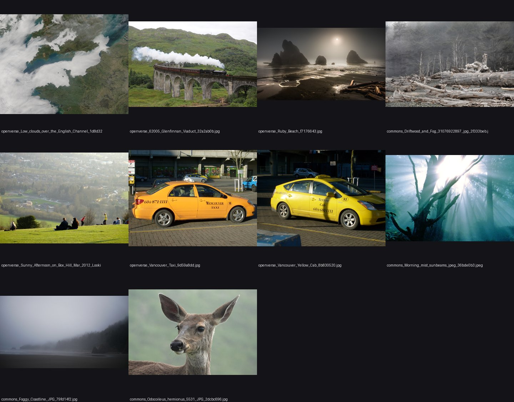
37. elements/sea/refs/ground/Olympic_coast_fog/_sheet.jpg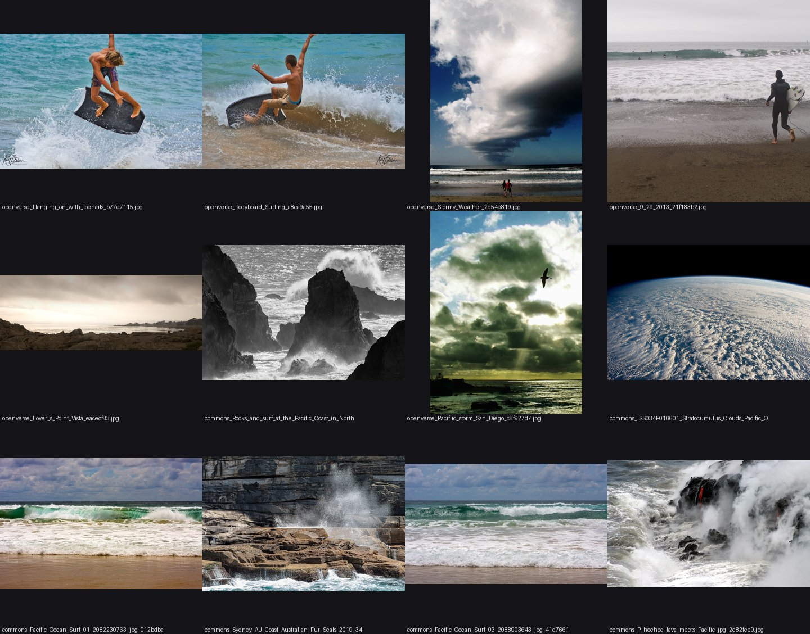
38. elements/sea/refs/ground/Pacific_Ocean_surf_overcast/_sheet.jpgBash: Write palette-as-light module and test
cd ~/work/pixelart-studies/elements/sea/src; cat > sea/pal.py <<'EOF'
"""Palette as light. Each material ramp is computed from a light state; the index canvas never changes.
Sea anchors are MEASURED in the sun state (LESSONS 1.2) and relit physically for other states:
water colour = body * irradiance * sun tint + F_eff * sky (in linear RGB)."""
import numpy as np, sys, os
sys.path.insert(0, os.path.dirname(os.path.dirname(os.path.abspath(__file__))))
from lab import srgb_to_lab, lab_to_srgb
def lab2lin(lab):
c = lab_to_srgb(np.asarray(lab, float)) / 255
return np.where(c <= 0.04045, c / 12.92, ((c + 0.055) / 1.055) ** 2.4)
def lin2srgb(lin):
c = np.clip(lin, 0, 1)
return np.clip(np.where(c <= 0.0031308, 12.92 * c, 1.055 * c ** (1 / 2.4) - 0.055) * 255, 0, 255)
LIGHTS = {
# E: irradiance on the water relative to the calibrated sunny afternoon; tint: colour of that light;
# sky: sky colour reflected at the 30 deg view; Feff: effective reflectance (Fresnel ~6% + roughness);
# sun_el/az: for foam lit sides and glitter; haze: veil (colour, amount) for fog/smoke
'sun': dict(E=1.00, tint=(1.0, 1.0, 1.0), sky=(72, -4, -24), Feff=0.06, sun_el=50, sun_az=205, direct=0.75, haze=None),
'overcast': dict(E=0.40, tint=(0.97, 1.0, 1.03), sky=(80, -1, -3), Feff=0.09, sun_el=50, sun_az=205, direct=0.0, haze=None),
'golden': dict(E=0.42, tint=(1.10, 0.86, 0.62), sky=(74, 2, -8), Feff=0.07, sun_el=9, sun_az=285, direct=0.8, haze=None),
'dusk': dict(E=0.10, tint=(1.0, 0.62, 0.62), sky=(52, 12, -22), Feff=0.09, sun_el=-2, sun_az=295, direct=0.0, haze=None),
'fog': dict(E=0.45, tint=(1.0, 1.0, 1.0), sky=(84, -1, -2), Feff=0.10, sun_el=40, sun_az=205, direct=0.0, haze=((82, -1, -2), 0.45)),
}
# measured sun-state anchors (L*, a*, b*)
SEA_DEEP = (34, -9, -17)
SEA_SAND_SHALLOW = (64, -15, -5)
SEA_ROCK_SHALLOW = (52, -4, -16)
D0 = 6.0 # m: e-folding depth of the bottom's contribution (fit: sand 4 m -> L* 49, 17 m -> 36)
KELP = [(24, 4, -14), (30, 2, -18), (37, -6, -17)] # canopy core / mid / edge-speck (measured 23-45)
AER = [(56, -12, -10), (64, -10, -10), (72, -8, -8)] # bubble plume (measured 64, sd 18)
FOAM_ALBEDO = 0.82
DEPTH_EDGES = np.array([0.7, 1.6, 3.0, 5.0, 8.0, 13.0]) # step 6 (shallowest) .. 0 (deep)
STEP_DEPTH = np.array([18.0, 10.0, 6.5, 4.0, 2.2, 1.1, 0.4]) # representative depth of each step
def sea_body_lab(d, rock):
w = 1 - np.exp(-np.asarray(d, float) / D0)
sh = np.array(SEA_SAND_SHALLOW) * (1 - rock) + np.array(SEA_ROCK_SHALLOW) * rock
return sh * (1 - w)[..., None] + np.array(SEA_DEEP) * w[..., None] if np.ndim(d) else sh * (1 - w) + np.array(SEA_DEEP) * w
def relight(lab_sun, L):
"""sun-state measured colour -> this light state."""
ref = LIGHTS['sun']
lin = lab2lin(lab_sun)
sky_s = lab2lin(ref['sky']) * ref['Feff']
body = np.maximum(lin - sky_s, 0) # remove the sunny sky reflection
out = body * L['E'] * np.array(L['tint']) + lab2lin(L['sky']) * L['Feff']
if L['haze']:
hc, ha = L['haze']; out = out * (1 - ha) + lab2lin(hc) * ha
return out
def foam_colours(L):
"""foam: 0 shadow (sky only), 1 turned away, 2 lit, 3 highlight."""
sky = lab2lin(L['sky']); sunc = np.array(L['tint']) * L['E']
amb = sky * 0.55 * max(L['E'], 0.25) / 0.55 * 0.9 + 0.08 * sunc
dir_ = sunc * L['direct']
cols = [FOAM_ALBEDO * (amb * 0.75), FOAM_ALBEDO * (amb + 0.35 * dir_), FOAM_ALBEDO * (amb + 0.8 * dir_),
FOAM_ALBEDO * (amb + 1.05 * dir_) + 0.03]
if L['direct'] == 0: # flat light: foam is the brightest thing, but only slightly above grey
base = FOAM_ALBEDO * (lab2lin(L['sky']) * 0.95) * max(L['E'] / 0.4, 0.3)
cols = [base * 0.62, base * 0.78, base * 0.92, base * 1.0]
if L['haze']:
hc, ha = L['haze']; cols = [c * (1 - ha * 0.6) + lab2lin(hc) * ha * 0.6 for c in cols]
return [np.clip(c, 0, 1) for c in cols]
# ---- land (context only; rock/forest are other studies' subjects) ----
LAND = {
'rock': [(24, 2, 4), (33, 2, 6), (44, 3, 9), (56, 3, 11), (66, 2, 10)],
'wetrock':[(18, 0, 0), (26, 0, 2), (34, 0, 3)],
'sand': [(62, 1, 8), (72, 1, 10), (80, 1, 11), (87, 1, 10)],
'wetsand':[(46, 0, 3), (54, 0, 4), (62, -1, 2)],
'gravel': [(40, 0, 3), (52, 0, 4), (62, 0, 5), (70, 0, 4)],
'forest': [(10, -6, 4), (17, -12, 8), (26, -16, 14), (36, -18, 20)],
}
def build(light='sun'):
"""returns dict ramp -> array of sRGB colours (steps)."""
L = LIGHTS[light]
P = {}
P['sea_sand'] = np.array([lin2srgb(relight(sea_body_lab(d, 0.0), L)) for d in STEP_DEPTH])
P['sea_rock'] = np.array([lin2srgb(relight(sea_body_lab(d, 1.0), L)) for d in STEP_DEPTH])
P['kelp'] = np.array([lin2srgb(relight(c, L)) for c in KELP])
P['aer'] = np.array([lin2srgb(relight(c, L)) for c in AER])
P['foam'] = np.array([lin2srgb(c) for c in foam_colours(L)])
sunE = L['E']; tint = np.array(L['tint'])
for k, cols in LAND.items():
out = []
for c in cols:
lin = lab2lin(c) * (0.35 + 0.65 * sunE) * (tint * 0.5 + 0.5)
if L['haze']:
hc, ha = L['haze']; lin = lin * (1 - ha) + lab2lin(hc) * ha
out.append(lin2srgb(lin))
P[k] = np.array(out)
# glint: the sun mirrored
P['glint'] = np.array([lin2srgb(np.clip(np.array(L['tint']) * 0.9 + 0.1, 0, 1)), lin2srgb(np.clip(lab2lin(L['sky']) * 1.1, 0, 1))])
return P
RAMPS = ['sea_sand', 'sea_rock', 'kelp', 'aer', 'foam', 'rock', 'wetrock', 'sand', 'wetsand', 'gravel', 'forest', 'glint']
RID = {k: i for i, k in enumerate(RAMPS)}
def to_rgb(ramp_idx, step_idx, light='sun'):
P = build(light)
out = np.zeros(ramp_idx.shape + (3,), np.uint8)
for k, i in RID.items():
m = ramp_idx == i
if m.any():
cols = P[k]; s = np.clip(step_idx[m], 0, len(cols) - 1)
out[m] = cols[s].astype(np.uint8)
return out
EOF
python3 -c "
import sys;sys.path.insert(0,'.')
from sea.pal import *
for l in LIGHTS:
P=build(l); print(l, 'sand',P['sea_sand'][[0,3,6]].astype(int).tolist(),'foam',P['foam'].astype(int).tolist()[2])
"
# output:
sun sand [[42, 88, 109], [80, 124, 135], [113, 157, 159]] foam [224, 243, 254]
overcast sand [[64, 80, 88], [76, 97, 103], [91, 116, 117]] foam [166, 171, 175]
golden sand [[52, 68, 73], [69, 87, 85], [89, 106, 96]] foam [171, 161, 154]
dusk sand [[38, 39, 55], [43, 46, 59], [51, 53, 64]] foam [59, 55, 78]
fog sand [[147, 154, 158], [151, 160, 163], [155, 167, 168]] foam [190, 194, 197]Bash: Write the sea painter
cd ~/work/pixelart-studies/elements/sea/src; cat > sea/paint.py <<'EOF'
"""The sea painter: G-buffer + sea state -> (ramp, step) index canvas. Every mark has a trigger in a field.
Scale-aware: world-space features, and each decides by its size in pixels how it is drawn."""
import numpy as np
from scipy import ndimage as nd
from .waves import bilinear
from .noise import hash2
from .pal import RID, DEPTH_EDGES
BAYER4 = np.array([[0, 8, 2, 10], [12, 4, 14, 6], [3, 11, 1, 9], [15, 7, 13, 5]]) / 16.0 + 1 / 32
def bayer(H, W):
return np.tile(BAYER4, (H // 4 + 1, W // 4 + 1))[:H, :W]
def vnoise(x, y, cell, seed):
"""value noise in world coords (smooth, 0..1)."""
gx, gy = x / cell, y / cell
x0, y0 = np.floor(gx), np.floor(gy); fx, fy = gx - x0, gy - y0
fx = fx * fx * (3 - 2 * fx); fy = fy * fy * (3 - 2 * fy)
a = hash2(x0, y0, seed); b = hash2(x0 + 1, y0, seed); c = hash2(x0, y0 + 1, seed); d = hash2(x0 + 1, y0 + 1, seed)
return (a * (1 - fx) + b * fx) * (1 - fy) + (c * (1 - fx) + d * fx) * fy
def fbmw(x, y, cell, seed, oct=3):
s = 0; a = 1; t = 0
for o in range(oct):
s = s + a * vnoise(x, y, cell / 2 ** o, seed + o * 17); t += a; a *= 0.5
return s / t
def worley(x, y, cell, seed, ux=None, uy=None, stretch=1.0):
"""F1, F2 (in cell units). Optional anisotropy: cells stretched `stretch`x along (ux, uy)."""
if ux is not None and stretch != 1.0:
a = x * ux + y * uy; b = -x * uy + y * ux
x, y = a / stretch, b
gx, gy = x / cell, y / cell
ix, iy = np.floor(gx), np.floor(gy)
f1 = np.full(gx.shape, 9.0); f2 = np.full(gx.shape, 9.0)
for dy in (-1, 0, 1):
for dx in (-1, 0, 1):
cx, cy = ix + dx, iy + dy
px = cx + hash2(cx, cy, seed); py = cy + hash2(cx, cy, seed + 1)
dd = np.hypot(gx - px, gy - py)
f2 = np.where(dd < f1, f1, np.minimum(f2, dd)); f1 = np.minimum(f1, dd)
return f1, f2
def sample(F, G, key):
return bilinear(F[key], G['x'], G['y'])
def paint_sea(G, S, cam, P=None):
"""S: dict of fields on the 1 m grid (depth, rock, kelp, W, F, A, q, Hinst, brk, u, v, T, H, kx, ky, tt).
P: parameters. Returns ramp, step (int arrays), and a dict of layers for inspection."""
P = dict(dict(band_jitter=0.35, lace_cell=2.2, lace_stretch=3.0, lump_cell=0.9, kelp_on=0.40,
speck_on=0.14, aer_on=0.22, roller_q=0.035, face_q=0.16, chop=0.5, sun_az=205, sun_el=50,
glint=0.0, wind_dir=(0.0, 1.0)), **(P or {}))
H_, W_ = G['x'].shape
mpp = cam.mpp
x, y = G['x'], G['y']
sea = G['sea'].copy()
ramp = np.full((H_, W_), -1, int); step = np.zeros((H_, W_), int)
by = bayer(H_, W_)
d = sample(S, G, 'depth'); rock = sample(S, G, 'rock'); kelp = sample(S, G, 'kelp')
Wf = sample(S, G, 'W'); Ff = sample(S, G, 'F'); Af = sample(S, G, 'A')
Hs = sample(S, G, 'Hinst'); u = sample(S, G, 'u'); v = sample(S, G, 'v')
T = S['T']
# phase: recompute from travel time so it is smooth at any zoom
q = np.mod((S['t_now'] - sample(S, G, 'tt')) / T, 1.0)
brk = sample(S, G, 'brkf') > 0.5
sea &= d > 0.02
# ---------------- 1. the body: depth bands over bottom type -------------------------------
jit = (fbmw(x, y, 9.0, 5) - 0.5) * 2 * P['band_jitter'] # irregular band edges, world space
lnd = np.log(np.maximum(d, 0.05))
edges = np.log(DEPTH_EDGES)
cont = np.interp(lnd + jit * 0.35, edges, np.arange(len(edges)) + 0.5, left=0, right=len(edges))
# cont: 0 (shallow) .. 6 (deep) continuous; step 6 = shallowest
frac = cont - np.floor(cont)
base = np.floor(cont) + (frac > (0.5 + 0.9 * (by - 0.5)) * 1.0) * 0 # placeholder
# seam checker only within +-0.12 of a boundary, flat elsewhere
near = np.abs(frac - 0.5) > 0.38
ck = ((np.arange(W_)[None, :] + np.arange(H_)[:, None]) % 2).astype(bool)
lvl = np.round(cont - 0.5).astype(int)
lvl = np.where(near & ck & (frac > 0.5), lvl + 0, lvl)
lvl = np.clip(lvl, 0, 6)
body_step = 6 - lvl
is_rock = rock > 0.5 + 0.25 * (by - 0.5)
ramp[sea] = np.where(is_rock, RID['sea_rock'], RID['sea_sand'])[sea]
step[sea] = body_step[sea]
# rock bottom seen through shallow water: mottle (pale rock / dark weed), fading with depth
vis = np.exp(-d / 3.0) * (rock > 0.4)
mott = fbmw(x, y, 2.5, 21, 3)
step = np.where(sea & (vis > 0.15) & (mott > 0.62), np.minimum(step + 1, 6), step)
step = np.where(sea & (vis > 0.15) & (mott < 0.30), np.maximum(step - 1, 0), step)
# ---------------- 2. the swell: broad value undulation + the face before a crest -----------
# the face (shoreward of the crest, about to be reached) turns darker where the wave is steep
steep = np.clip(Hs / np.maximum(d, 0.3), 0, 1.2)
face = sea & (q > 1 - P['face_q']) & (steep > 0.35) & ~brk
step = np.where(face & (by < np.clip((steep - 0.35) * 2.5, 0, 1)), np.maximum(step - 1, 0), step)
# back of the wave (just passed): slightly lighter (tilted to the sky)
back = sea & (q < 0.18) & (q > P['roller_q']) & (steep > 0.3)
step = np.where(back & (by < 0.35), np.minimum(step + 1, 6), step)
# ---------------- 3. chop: short strokes along the crests of wind ripples -----------------
# world-space ripple cells ~ 0.6-3 m; a mark only where its length is >= 2 px
ux, uy = P['wind_dir']
cellc = max(1.2, 2.5 * mpp)
f1, f2 = worley(x, y, cellc, 91, ux, uy, 0.35)
chop_m = sea & (f2 - f1 < 0.10) & (vnoise(x, y, 25, 3) < P['chop']) & (d > 1.0)
step = np.where(chop_m & (hash2(np.floor(x / cellc), np.floor(y / cellc), 7) > 0.5), np.minimum(step + 1, 6), step)
# ---------------- 4. kelp canopy -----------------------------------------------------------
kn = kelp + (fbmw(x, y, 1.6, 33, 2) - 0.5) * 0.35
km = sea & (kn > P['kelp_on'])
ramp[km] = RID['kelp']
kst = np.where(kn > P['kelp_on'] + 0.25, 0, np.where(kn > P['kelp_on'] + 0.08, 1, 2))
step[km] = kst[km]
# scattered floats and blades beyond the mat: specks, a few px, streaming down-current
speck_cell = max(1.5, 1.5 * mpp)
sf1, _ = worley(x, y, speck_cell, 44, u / (np.hypot(u, v) + 1e-6), v / (np.hypot(u, v) + 1e-6), 2.0)
sp = sea & ~km & (kelp > P['speck_on']) & (sf1 < 0.18 + 0.25 * kelp)
ramp[sp] = RID['kelp']; step[sp] = 1
# ---------------- 5. aeration: jade halo of bubbles ---------------------------------------
an = Af * (0.75 + 0.5 * fbmw(x, y, 3.0, 55, 2))
am = sea & (an > P['aer_on'])
ramp[am] = RID['aer']
step[am] = np.clip(((an - P['aer_on']) / 0.35 + (by - 0.5) * 0.8).astype(int), 0, 2)[am]
# ---------------- 6. subsided foam: lace with growing oval holes, drawn out by the current --
un = np.hypot(u, v) + 1e-6
lc = max(P['lace_cell'], 2.2 * mpp)
lf1, lf2 = worley(x, y, lc, 66, u / un, v / un, P['lace_stretch'])
# a hole's radius grows as the foam ages (F falls): foam survives where the cell edge is near
edge = lf2 - lf1 # 0 on cell borders
Fe = Ff * (0.8 + 0.4 * fbmw(x, y, 6.0, 67, 2))
lace = sea & (edge < np.clip(Fe * 0.9, 0, 1.0) ** 0.8 * 0.9) & (Fe > 0.05)
dense = sea & (Fe > 0.9)
lace |= dense & (edge < 0.9)
ramp[lace] = RID['foam']; step[lace] = np.where(Fe > 0.6, 2, 1)[lace]
# ---------------- 7. whitewater: thick creamy foam in lumps with lit and shaded sides ------
lump = fbmw(x, y, max(P['lump_cell'], 1.2 * mpp), 77, 3)
Wm = sea & (Wf * (0.6 + 0.8 * lump) > 0.32)
ramp[Wm] = RID['foam']
# lit side of lumps: gradient of lump noise toward the sun
saz = np.radians(P['sun_az'])
sx_, sy_ = np.sin(saz), -np.cos(saz) # toward the sun, grid coords (y south)
e = 0.35 * max(P['lump_cell'], 1.2 * mpp)
lg = fbmw(x + sx_ * e, y + sy_ * e, max(P['lump_cell'], 1.2 * mpp), 77, 3) - lump
wst = np.where(lg > 0.02, 3, np.where(lg < -0.03, 1, 2))
wst = np.where(Wf < 0.45, np.minimum(wst, 2), wst)
step[Wm] = wst[Wm]
# ---------------- 8. the roller: the breaking crest itself, a thin bright line -------------
rq = np.maximum(P['roller_q'], 0.6 * mpp / (np.maximum(np.sqrt(9.81 * np.maximum(d, 0.2)), 1) * T))
roller = sea & brk & (q < rq)
ramp[roller] = RID['foam']; step[roller] = 3
# shadow under the lip: the pixel just shoreward of the roller (facing away from the sun)
return ramp, step, dict(q=q, d=d, Wf=Wf, Ff=Ff, Af=Af, kelp=kelp, brk=brk, sea=sea)
EOF
echo ok
# output:
okBash: Check canopy height values
cd ~/work/pixelart-studies/elements/sea/src; python3 -c "
import sys;sys.path.insert(0,'.')
from dem import window
import numpy as np
c=window('olycoast','chm',372347+350,5346016-1650,372347+1650,5346016-250,dtype=np.uint8)
print(np.nanmax(c), np.nanpercentile(c,[50,90,99]))
"
# output:
54.0 [ 0. 16. 33.]Bash: Add land painter and stage-1 comparison driver; run
cd ~/work/pixelart-studies/elements/sea/src; python3 - <<'EOF'
s=open('sea/paint.py').read()
a=s.index(" frac = cont - np.floor(cont)\n base")
b=s.index(" body_step = 6 - lvl")
s=s[:a]+""" lvl = np.floor(cont).astype(int); frac = cont - lvl
ck = ((np.arange(W_)[None, :] + np.arange(H_)[:, None]) % 2).astype(bool)
# flat bands; a 50% checker only in a thin seam at each boundary (never a single dotted row:
# the seam is as wide as the band's local gradient allows, >= 2 px)
seam_w = 0.10
lvl = np.where((frac > 1 - seam_w) & ck, lvl + 1, lvl)
lvl = np.where((frac < seam_w) & ~ck, lvl - 1, lvl)
lvl = np.clip(lvl, 0, 6)
"""+s[b:]
s+='''
def paint_land(G, S, cam, ramp, step, tide=0.45, sun=(205, 50)):
L = ~G['sea']
x, y, z = G['x'], G['y'], G['z']
rough = sample(S, G, 'rough'); chm = sample(S, G, 'chm')
saz, sel = np.radians(sun[0]), np.radians(sun[1])
sv = np.array([np.sin(saz) * np.cos(sel), -np.cos(saz) * np.cos(sel), np.sin(sel)])
ndl = G['nx'] * sv[0] + G['ny'] * sv[1] + G['nz'] * sv[2]
slope = 1 - G['nz']
by = bayer(*x.shape)
zb = z - chm # bare earth under the canopy
forest = L & (chm > 3)
wet = L & ~forest & (zb < tide + 1.6)
rockm = L & ~forest & ((rough > 0.12) | (slope > 0.25))
sandm = L & ~forest & ~rockm & (zb < 9)
grav = L & ~forest & ~rockm & ~sandm
sh = np.clip(ndl * 1.1 + (by - 0.5) * 0.25, 0, 1)
def put(m, name, n):
ramp[m] = RID[name]; step[m] = np.clip((sh[m] * n).astype(int), 0, n - 1)
put(forest, 'forest', 4)
# forest: crowns as lit caps at their own scale
cap = fbmw(x, y, 3.5, 101, 2)
step[forest] = np.clip(step[forest] + (cap[forest] > 0.62) - (cap[forest] < 0.35), 0, 3)
put(rockm & ~wet, 'rock', 5); put(rockm & wet, 'wetrock', 3)
put(sandm & ~wet, 'sand', 4); put(sandm & wet, 'wetsand', 3); put(grav, 'gravel', 4)
return ramp, step
'''
open('sea/paint.py','w').write(s)
EOF
cat > stage1.py <<'EOF'
"""Stage 1: the sea body, kelp and surf over the real Point of Arches, iso 1 m/px, beside the photo
warped into the very same view through the sea-plane homography."""
import sys, time; sys.path.insert(0,'.')
import numpy as np
from PIL import Image, ImageDraw
from sea.place import load
from sea.render import Cam, gbuffer
from sea.paint import paint_sea, paint_land
from sea.pal import to_rgb
from sea.sim import bottom_type
from dem import window
from reg import apply
def fields(tag='poa'):
P=load('poa'); Wv=dict(np.load('../cache/poa_waves.npz')); St=dict(np.load('../cache/poa_state.npz'))
chm=window('olycoast','chm',372347+350,5346016-1650,372347+1650,5346016-250,dtype=np.uint8)
rock,rough=bottom_type(P['z'],P['depth'])
S=dict(depth=np.nan_to_num(P['depth'],nan=30.0),rock=rock,rough=rough,kelp=St['kelp'],W=St['W'],F=St['F'],A=St['A'],
Hinst=St['Hinst'],u=St['u'],v=St['v'],tt=Wv['t'],brkf=St['brk'].astype(np.float32),T=8.3,t_now=36*8.3,chm=np.nan_to_num(chm))
zland=np.nan_to_num(P['z'],nan=-40)+np.nan_to_num(chm)
return P,S,zland
def render(S,zland,cam,light='sun',tide=0.45,params=None):
G=gbuffer(cam,zland,sea_level=tide)
ramp,step,lay=paint_sea(G,S,cam,params)
ramp,step=paint_land(G,S,cam,ramp,step,tide)
return to_rgb(ramp,step,light),G
def photo_view(G,Hm,photo,frame=(350,250)):
im=np.asarray(Image.open(photo).convert('RGB'))
u,v=apply(Hm,(G['x']+frame[0]).ravel(),(G['y']+frame[1]).ravel())
u=u.reshape(G['x'].shape); v=v.reshape(G['x'].shape)
ok=(u>=0)&(u<im.shape[1]-1)&(v>=0)&(v<im.shape[0]-1)&G['sea']
out=np.zeros(G['x'].shape+(3,),np.uint8); out[ok]=im[v[ok].astype(int),u[ok].astype(int)]
return out,ok
if __name__=='__main__':
t=time.time(); P,S,zl=fields()
Hm=np.load('../notes/H_poa.npy')
O='~/work/voxsim-data/places/olycoast/obliques/point_of_arches__060819_15405_2016.jpg'
mpp=float(sys.argv[1]) if len(sys.argv)>1 else 1.0
cam=Cam(cx=720,cy=750,mpp=mpp,W=480,H=300,yaw=90,elev=30,zc=0.45)
rgb,G=render(S,zl,cam)
ph,ok=photo_view(G,Hm,O)
# photo at pixel size: box-average the photo footprint -> sample at 4x then box down
cam4=Cam(cx=720,cy=750,mpp=mpp/4,W=480*4,H=300*4,yaw=90,elev=30,zc=0.45)
G4=gbuffer(cam4,np.full((10,10),-40.0),sea_level=0.45)
ph4,_=photo_view(G4,Hm,O)
ph=np.asarray(Image.fromarray(ph4).resize((480,300),Image.BOX))
k=3; W,H=480,300
sheet=Image.new('RGB',(W*k*2+10,H*k+20),(20,20,24)); d=ImageDraw.Draw(sheet)
sheet.paste(Image.fromarray(ph).resize((W*k,H*k),Image.NEAREST),(0,20))
sheet.paste(Image.fromarray(rgb).resize((W*k,H*k),Image.NEAREST),(W*k+10,20))
d.text((4,4),f'photo 060819_15405 warped to iso 30deg, box-averaged to {mpp} m/px (sea plane only)',fill=(230,230,230))
d.text((W*k+14,4),f'mine, same view, same place (lidar), summer swell Hs 1.57 m 8.3 s, sun',fill=(230,230,230))
out=sys.argv[2] if len(sys.argv)>2 else '../stages/s1_poa_iso.png'
sheet.save(out); Image.fromarray(rgb).save(out.replace('.png','_1x.png')); print('t',time.time()-t)
EOF
mkdir -p ../stages; OPENBLAS_NUM_THREADS=1 nice python3 stage1.py 1.0
# output:
t 5.904634952545166Read: elements/sea/stages/s1_poa_iso.png 39. elements/sea/stages/s1_poa_iso.png
39. elements/sea/stages/s1_poa_iso.png
Bash: Print palette Lab and field percentiles
cd ~/work/pixelart-studies/elements/sea/src; python3 -c "
import sys;sys.path.insert(0,'.')
import numpy as np
from sea.pal import *
from lab import srgb_to_lab
P=build('sun')
for k in ['sea_sand','sea_rock','kelp','aer','foam']: print(k, srgb_to_lab(P[k]).round(0).astype(int).tolist())
St=np.load('../cache/poa_state.npz')
for k in ['W','F','A','kelp','Hinst']:
a=St[k]; print(k, np.percentile(a,[50,90,99,99.9]).round(3))
"
# output:
sea_sand [[35, -9, -16], [40, -10, -15], [44, -11, -13], [49, -12, -11], [55, -13, -9], [59, -14, -7], [62, -15, -6]]
sea_rock [[35, -9, -17], [37, -8, -17], [40, -7, -17], [43, -6, -16], [46, -6, -16], [49, -5, -16], [51, -4, -16]]
kelp [[24, 4, -14], [30, 2, -18], [37, -6, -17]]
aer [[56, -12, -10], [64, -10, -10], [72, -8, -8]]
foam [[61, -3, -18], [82, -2, -15], [95, -4, -8], [99, -2, -1]]
W [0. 0. 0. 0.623]
F [0. 0. 0.244 1.245]
A [0. 0. 0.009 0.621]
kelp [0. 0.624 1. 1. ]
Hinst [0.305 1.073 1.801 2.34 ]Bash: Add surge collar, retune; rerun sim and stage 1
cd ~/work/pixelart-studies/elements/sea/src; python3 - <<'EOF'
s=open('sea/sim.py').read()
s=s.replace("tau_w=4.0, tau_f=150.0, tau_a=10.0, gamma_i=0.78,","tau_w=8.0, tau_f=150.0, tau_a=14.0, gamma_i=0.70,")
s=s.replace(" self.kelp = self.make_kelp(kelp_amount, tide)",
""" self.kelp = self.make_kelp(kelp_amount, tide)
# surge collar: waves running against rock faces burst whatever their height relative to depth
dl, ind = nd.distance_transform_edt(~self.land, return_indices=True)
gyl, gxl = np.gradient(nd.gaussian_filter(dl, 1.5))
nrm = np.hypot(gxl, gyl) + 1e-6
facing = np.clip(-(self.kx * gxl + self.ky * gyl) / nrm, 0, 1) # wave heading into the face
self.collar = (np.exp(-dl / 1.8) * (0.25 + 0.75 * facing) * (dl < 6)).astype(np.float32)
self.dl = dl""")
s=s.replace(""" src = brk & passed""",""" src = brk & passed
csrc = passed & (self.collar * np.clip(Hinst / 0.5, 0, 1.5) > 0.35)""")
s=s.replace(""" A = np.where(src, np.maximum(A, 1.0), A)""",""" A = np.where(src, np.maximum(A, 1.0), A)
cv = np.clip(self.collar * np.clip(Hinst / 0.5, 0, 1.5), 0, 1) * np.exp(-age / P['tau_w'])
W = np.where(csrc, np.maximum(W, cv), W); A = np.where(csrc, np.maximum(A, cv), A)""")
open('sea/sim.py','w').write(s)
p=open('sea/pal.py').read()
p=p.replace("SEA_ROCK_SHALLOW = (52, -4, -16)","SEA_ROCK_SHALLOW = (58, -8, -14)").replace("D0 = 6.0 ","D0 = 8.0 ")
open('sea/pal.py','w').write(p)
t=open('t_sim.py').read().replace("current=(0.05,-0.25))","current=(0.05,-0.25),kelp_amount=0.35)")
open('t_sim.py','w').write(t)
EOF
grep -n "fit:" sea/pal.py; OPENBLAS_NUM_THREADS=1 OMP_NUM_THREADS=1 nice python3 t_sim.py 2>&1 | tail -1 && nice python3 stage1.py 1.0 ../stages/s1_poa_iso_v2.png
# output:
30:D0 = 8.0 # m: e-folding depth of the bottom's contribution (fit: sand 4 m -> L* 49, 17 m -> 36)
sim 472.26817893981934
t 10.945166110992432Read: elements/sea/stages/s1_poa_iso_v2.png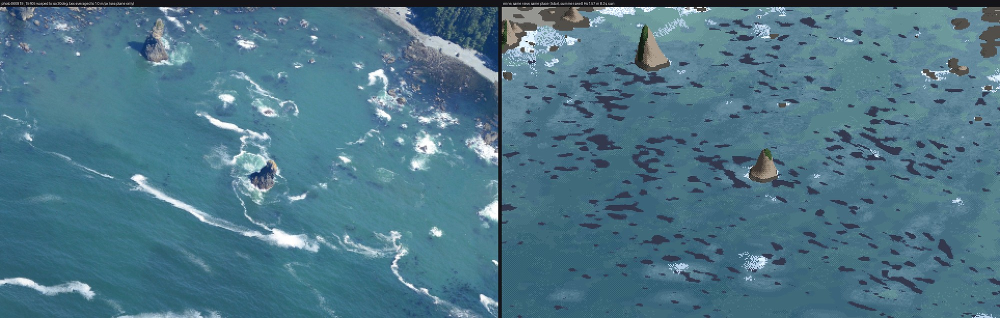
40. elements/sea/stages/s1_poa_iso_v2.pngBash: Compare foam coverage sim vs photo
cd ~/work/pixelart-studies/elements/sea/src; python3 -c "
import numpy as np
St=np.load('../cache/poa_state.npz'); Wv=np.load('../cache/poa_waves.npz')
L=Wv['land'].astype(bool)
sea=~L
for k in ['W','F','A']: a=St[k][sea]; print(k,[(t,round(float((a>t).mean()*100),2)) for t in (0.05,0.2,0.4)])
# photo white fraction in ortho over the same area approx
from PIL import Image
im=np.asarray(Image.open('../notes/poa_ortho.png')).astype(float)
Lm=im.mean(2); v=im.sum(2)>0
print('photo white%',((Lm>185)&v).sum()/v.sum()*100)
print('Q ray>0.05 %', (Wv['Q'][sea]>0.05).mean()*100)
"
# output:
W [(0.05, 1.39), (0.2, 0.97), (0.4, 0.67)]
F [(0.05, 4.57), (0.2, 2.47), (0.4, 1.49)]
A [(0.05, 1.54), (0.2, 0.96), (0.4, 0.56)]
photo white% 6.523920786546376
Q ray>0.05 % 5.954122931538553Bash: Rework kelp coverage, wider aeration halo, lace threshold
cd ~/work/pixelart-studies/elements/sea/src; python3 - <<'EOF'
s=open('sea/sim.py').read()
a=s.index(" k = hab * (0.55 + 0.45 * exp_) * amount")
b=s.index(" def crest_break")
s=s[:a]+""" # expected canopy cover rho, then a mat mask whose area fraction IS rho (rank-uniformised noise)
rho = np.clip(amount * hab * (0.55 + 0.45 * exp_) * np.clip(bed, 0, 1.4), 0, 1)
U = np.empty_like(clump); o = np.argsort(clump, axis=None); U.flat[o] = np.linspace(0, 1, clump.size)
self.kelp_rho = rho.astype(np.float32)
return (np.clip((rho - U) / 0.08 + 0.5, 0, 1) * (hab > 0.05)).astype(np.float32)
"""+s[b:]
s=s.replace("W = np.where(csrc, np.maximum(W, cv), W); A = np.where(csrc, np.maximum(A, cv), A)",
"W = np.where(csrc, np.maximum(W, cv), W)\n ca = np.clip(np.exp(-self.dl / 6.0) * (0.3 + 0.7 * (self.collar > 0.05)) * np.clip(Hinst / 0.5, 0, 1.5), 0, 1)\n A = np.where(passed & (ca > 0.2), np.maximum(A, ca), A)")
s=s.replace("gamma_i=0.70,","gamma_i=0.62,")
s=s.replace("np.savez_compressed","np.savez_compressed")
open('sea/sim.py','w').write(s)
t=open('t_sim.py').read().replace("kelp_amount=0.35","kelp_amount=0.25").replace("kelp=S.kelp,","kelp=S.kelp,kelp_rho=S.kelp_rho,")
open('t_sim.py','w').write(t)
p=open('sea/paint.py').read()
p=p.replace("lace = sea & (edge < np.clip(Fe * 0.9, 0, 1.0) ** 0.8 * 0.9) & (Fe > 0.05)","lace = sea & (edge < np.clip(Fe * 1.6, 0, 1.0) ** 0.7 * 0.8) & (Fe > 0.04)")
open('sea/paint.py','w').write(p)
EOF
grep -n "self.dl = dl" sea/sim.py | head -2; grep -n "self.kelp = self.make_kelp" sea/sim.py
# output:
108: self.dl = dl
101: self.kelp = self.make_kelp(kelp_amount, tide)Bash: Rerun sim and stage 1 (v3)
cd ~/work/pixelart-studies/elements/sea/src; python3 - <<'EOF'
p=open('sea/paint.py').read()
p=p.replace("sp = sea & ~km & (kelp > P['speck_on']) & (sf1 < 0.18 + 0.25 * kelp)","krho = sample(S, G, 'kelp_rho') if 'kelp_rho' in S else kelp\n sp = sea & ~km & (krho > 0.02) & (sf1 < 0.10 + 0.5 * np.sqrt(krho))")
open('sea/paint.py','w').write(p)
s=open('stage1.py').read().replace("kelp=St['kelp'],","kelp=St['kelp'],kelp_rho=St['kelp_rho'],").replace("t_now=36*8.3","t_now=24*8.3")
open('stage1.py','w').write(s)
t=open('t_sim.py').read().replace("kelp_amount=0.25)","kelp_amount=0.25,n_periods=24,steps_per_T=8)")
open('t_sim.py','w').write(t)
EOF
OPENBLAS_NUM_THREADS=1 OMP_NUM_THREADS=1 nice python3 t_sim.py 2>&1 | tail -1 && nice python3 stage1.py 1.0 ../stages/s1_poa_iso_v3.png
# output:
sim 265.8664741516113
t 10.272140264511108Read: elements/sea/stages/s1_poa_iso_v3.png 41. elements/sea/stages/s1_poa_iso_v3.png
41. elements/sea/stages/s1_poa_iso_v3.png
Bash: Map-space foam fields beside ortho photo
cd ~/work/pixelart-studies/elements/sea/src; python3 - <<'EOF'
import numpy as np
from PIL import Image
St=np.load('../cache/poa_state.npz'); Wv=np.load('../cache/poa_waves.npz')
L=Wv['land'].astype(bool)
# ortho box (550,450,1500,1450) in origin frame; place frame offset (350,250) -> rows 200:1200, cols 200:1150
sl=(slice(200,1200),slice(200,1150))
rgb=np.zeros((1000,950,3))
rgb[...,2]=0.35
rgb[...,0]=np.clip(St['W'][sl]*2,0,1); rgb[...,1]=np.clip(St['F'][sl]*1.5,0,1); rgb[...,2]+=np.clip(St['A'][sl],0,1)*0.6
rgb[L[sl]]=0.5
a=Image.fromarray((rgb*255).astype(np.uint8)); b=Image.open('../notes/poa_ortho.png')
s=Image.new('RGB',(1900,1000)); s.paste(b,(0,0)); s.paste(a,(950,0)); s.resize((1330,700)).save('../notes/dbg_foam_map.png')
EOF
# output:
(Bash completed with no output)Read: elements/sea/notes/dbg_foam_map.png 42. elements/sea/notes/dbg_foam_map.png
42. elements/sea/notes/dbg_foam_map.png
Bash: Check cove wave heights and reef depths
cd ~/work/pixelart-studies/elements/sea/src; python3 -c "
import numpy as np
from scipy import ndimage as nd
import sys;sys.path.insert(0,'.')
from sea.place import load
Wv=np.load('../cache/poa_waves.npz');P=load('poa');d=np.nan_to_num(P['depth'],nan=30)
sl=(slice(550,1000),slice(500,1000))
H=Wv['H'][sl];dd=d[sl];m=dd>0.1
print('Hrms cove',np.percentile(H[m],[10,50,90]).round(2))
dmin=-nd.maximum_filter(-d,5)
print('depth<2.5 frac',(dd[m]<2.5).mean(), 'minfilter<2.5',(dmin[sl][m]<2.5).mean())
print('H over reef heads d<3:',np.percentile(H[m&(dd<3)],[10,50,90]).round(2))
"
# output:
Hrms cove [0.33 0.44 0.71]
depth<2.5 frac 0.1524516629399999 minfilter<2.5 0.20024219554342057
H over reef heads d<3: [0.16 0.43 0.56]Bash: Rerun waves with gentler dissipation
cd ~/work/pixelart-studies/elements/sea/src; sed -i '' 's/F=swell(P\[.depth.\],Hs=1.57,T=8.3,dir_from=281,smooth=8.0)/F=swell(P["depth"],Hs=1.57,T=8.3,dir_from=281,smooth=8.0,alpha=0.35,gamma=0.8)/' t_waves.py; grep -n "swell(" t_waves.py; OPENBLAS_NUM_THREADS=1 nice python3 t_waves.py && python3 -c "
import numpy as np
import sys;sys.path.insert(0,'.')
from sea.place import load
Wv=np.load('../cache/poa_waves.npz');P=load('poa');d=np.nan_to_num(P['depth'],nan=30)
sl=(slice(550,1000),slice(500,1000));H=Wv['H'][sl];dd=d[sl];m=dd>0.1
print('Hrms cove',np.percentile(H[m],[10,50,90]).round(2),'reef',np.percentile(H[m&(dd<3)],[10,50,90]).round(2))"
# output:
7:F=swell(P["depth"],Hs=1.57,T=8.3,dir_from=281,smooth=8.0,alpha=0.35,gamma=0.8)
time 50.276867151260376
Hrms cove [0.36 0.46 0.78] reef [0.19 0.47 0.66]Bash: Fix shadow-cover double counting; rerun
cd ~/work/pixelart-studies/elements/sea/src; sed -i '' 's|cover = np.clip(W / (0.5 \* typ), 0, 1)|cover = np.clip(W / (0.06 * typ), 0, 1)|' sea/waves.py; grep -n "cover = np.clip" sea/waves.py; OPENBLAS_NUM_THREADS=1 nice python3 t_waves.py && python3 -c "
import numpy as np
import sys;sys.path.insert(0,'.')
from sea.place import load
Wv=np.load('../cache/poa_waves.npz');P=load('poa');d=np.nan_to_num(P['depth'],nan=30)
sl=(slice(550,1000),slice(500,1000));H=Wv['H'][sl];dd=d[sl];m=dd>0.1
print('Hrms cove',np.percentile(H[m],[10,50,90]).round(2),'reef',np.percentile(H[m&(dd<3)],[10,50,90]).round(2))"
# output:
126: cover = np.clip(W / (0.06 * typ), 0, 1)
time 80.69169092178345
Hrms cove [0.41 0.47 0.78] reef [0.43 0.5 0.66]Bash: Profile Hrms from offshore to cove
cd ~/work/pixelart-studies/elements/sea/src; python3 -c "
import numpy as np
import sys;sys.path.insert(0,'.')
from sea.place import load
Wv=np.load('../cache/poa_waves.npz');P=load('poa');d=np.nan_to_num(P['depth'],nan=30)
H=Wv['H']
for c in [5,100,300,500,700]:
col=H[400:1000,c];dc=d[400:1000,c];print(c,'H',np.median(col).round(2),'d',np.median(dc).round(1),'Q',np.median(Wv['Q'][400:1000,c]).round(3))
"
# output:
5 H 1.08 d 19.4 Q 0.0
100 H 1.01 d 17.2 Q 0.0
300 H 0.85 d 14.2 Q 0.0
500 H 0.55 d 10.5 Q 0.0
700 H 0.47 d 6.3 Q 0.0Bash: Fix dead-neighbour tube width; rerun
cd ~/work/pixelart-studies/elements/sea/src; python3 - <<'EOF'
s=open('sea/waves.py').read()
a=s.index(" # tube width from neighbours")
b=s.index(" E = F / (np.maximum(cg, 1e-3) * bw)")
s=s[:a]+""" # tube width from ALIVE neighbours (a dead ray freezes in place and must not count)
bw = np.full(n, ray_dx)
ia = np.nonzero(alive)[0]
if ia.size > 1:
xa, ya = X[ia], Y[ia]
dxa = np.hypot(np.diff(xa), np.diff(ya))
gap = np.diff(ia) # rays between them that died
dxa = np.where(gap == 1, dxa, np.nan) # across a dead ray: unknown
both = np.zeros(ia.size); cnt = np.zeros(ia.size)
ok = np.isfinite(dxa)
both[:-1] += np.where(ok, dxa, 0); cnt[:-1] += ok
both[1:] += np.where(ok, dxa, 0); cnt[1:] += ok
bwa = np.where(cnt > 0, both / np.maximum(cnt, 1), ray_dx)
bw[ia] = bwa
bw = np.clip(bw, 0.25 * ray_dx, 8 * ray_dx)
"""+s[b:]
open('sea/waves.py','w').write(s)
EOF
OPENBLAS_NUM_THREADS=1 nice python3 t_waves.py && python3 -c "
import numpy as np
import sys;sys.path.insert(0,'.')
from sea.place import load
Wv=np.load('../cache/poa_waves.npz');P=load('poa');d=np.nan_to_num(P['depth'],nan=30)
H=Wv['H']
for c in [5,100,300,500,700,800]:
print(c,'H',np.median(H[400:1000,c]).round(2),'d',np.median(d[400:1000,c]).round(1))
sl=(slice(550,1000),slice(500,1000));Hh=H[sl];dd=d[sl];m=dd>0.1
print('reef',np.percentile(Hh[m&(dd<3)],[10,50,90]).round(2))"
# output:
time 94.7869758605957
5 H 1.08 d 19.4
100 H 1.01 d 17.2
300 H 0.85 d 14.2
500 H 0.56 d 10.5
700 H 0.48 d 6.3
800 H 0.47 d 4.5
reef [0.45 0.57 0.95]Bash: Instrument ray energy along propagation
cd ~/work/pixelart-studies/elements/sea/src; python3 - <<'EOF'
s=open('sea/waves.py').read()
s=s.replace(" m = alive & inside\n"," m = alive & inside\n if debug is not None and it % 100 == 0 and m.any():\n debug.append((it, float(np.median(bw[m])), float(np.median(F[m])), float(np.median(Hrms[m])), float(np.median(cg[m])), float(np.median(dloc[m])), int(m.sum()), float(np.median(D[m]))))\n")
s=s.replace("max_len=None, spread_deg=0.0, seed=0):","max_len=None, spread_deg=0.0, seed=0, debug=None):")
open('sea/waves.py','w').write(s)
EOF
python3 -c "
import sys;sys.path.insert(0,'.')
import numpy as np
from sea.place import load
from sea.waves import swell
P=load('poa');dbg=[]
swell(P['depth'][::2,::2]*1.0,Hs=1.57,T=8.3,dir_from=281,smooth=4.0,alpha=0.35,gamma=0.8,debug=dbg,ray_dx=1.0,ds=1.0)
for r in dbg: print(r)
"
# output:
(100, 0.9998059878247056, 1.1249966153465878, 1.0819250714251054, 7.693039892556024, 21.34739170410706, 44, 3.7729433336252615e-49)
(200, 1.0251814368745855, 1.1249966153465878, 1.0672254794199059, 7.7683750072921836, 16.714389122328146, 523, 2.161791466643955e-36)
(300, 1.519355253575977, 1.1249966153465878, 0.8892055537948608, 7.7199598145053185, 14.291471396165516, 554, 6.862610998126629e-35)
(400, 2.5198210240387073, 1.1249966037646457, 0.7122678152741844, 7.379832894419824, 10.23194546031433, 422, 5.196176338280126e-34)
(500, 5.395044099175278, 1.124960669118667, 0.4991198031959902, 6.802236365149382, 7.269971221077537, 313, 7.659896273069907e-35)
(600, 8.0, 1.1242491576470408, 0.472695390753583, 5.903919246081719, 4.6901579233896, 228, 9.700026157759074e-17)
(700, 2.2141971591840246, 1.1249943972976701, 0.8317175849385624, 5.349778524749708, 3.610574149960424, 109, 3.225199911705628e-09)
(800, 2.1083468655604616, 0.6403909261924818, 1.0822868338924747, 1.7134721895442346, 0.30466461237448866, 9, 0.0005418295379635251)Bash: Pinnacle depth for breaking; rerun sim and stage 1
cd ~/work/pixelart-studies/elements/sea/src; python3 - <<'EOF'
s=open('sea/sim.py').read()
s=s.replace("self.db = nd.gaussian_filter(np.maximum(d, 0.02), 1.2)","self.db = nd.gaussian_filter(-nd.maximum_filter(-np.maximum(d, 0.02), 5), 1.0) # reef pinnacles the 1 m lidar blurs")
open('sea/sim.py','w').write(s)
EOF
OPENBLAS_NUM_THREADS=1 OMP_NUM_THREADS=1 nice python3 t_sim.py 2>&1 | tail -1 && nice python3 stage1.py 1.0 ../stages/s1_poa_iso_v4.png
# output:
sim 448.11336398124695
t 19.29447078704834Read: elements/sea/stages/s1_poa_iso_v4.png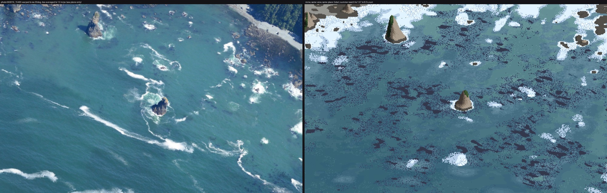
43. elements/sea/stages/s1_poa_iso_v4.pngBash: Add Lagrangian foam particles to sim
cd ~/work/pixelart-studies/elements/sea/src; python3 - <<'EOF'
s=open('sea/sim.py').read()
# particles
s=s.replace(""" W = np.zeros((h, w), np.float32); F = np.zeros_like(W); A = np.zeros_like(W)
rng = np.random.default_rng(self.seed)""",""" W = np.zeros((h, w), np.float32); F = np.zeros_like(W); A = np.zeros_like(W)
rng = np.random.default_rng(self.seed)
# Lagrangian foam: particles shed by decaying whitewater, carried by the current, dying on an
# exponential clock (tau_f). No numerical diffusion, so streaks stay thin and long.
px = np.zeros(0, np.float32); py = np.zeros(0, np.float32); pa = np.zeros(0, np.float32); pl = np.zeros(0, np.float32)
pk = np.zeros(0, np.float32)""")
s=s.replace(""" if i % 2 == 0:
F = advect(F, self.u, self.v, 2 * dt); A = advect(A, self.u, self.v, 2 * dt)""",""" # shed particles where whitewater is decaying (rate ~ lost foam), jittered inside the cell
shed = (lost > 0.02) & ~self.land
ys, xs = np.nonzero(shed)
if ys.size:
pr = np.clip(lost[ys, xs] * P.get('shed', 2.5), 0, 1)
keep = rng.random(ys.size) < pr
ys, xs = ys[keep], xs[keep]
px = np.concatenate([px, xs + rng.random(xs.size).astype(np.float32)])
py = np.concatenate([py, ys + rng.random(ys.size).astype(np.float32)])
pa = np.concatenate([pa, np.zeros(xs.size, np.float32)])
pl = np.concatenate([pl, rng.exponential(P['tau_f'], xs.size).astype(np.float32)])
pk = np.concatenate([pk, rng.random(xs.size).astype(np.float32)])
if px.size:
from .waves import bilinear as _bl
uu = _bl(self.u, px, py); vv = _bl(self.v, px, py)
sd = np.sqrt(2 * P.get('diff', 0.02) * dt)
px = px + uu * dt + rng.normal(0, sd, px.size); py = py + vv * dt + rng.normal(0, sd, px.size)
pa = pa + dt
ok = (pa < pl) & (px >= 0) & (px < w - 1) & (py >= 0) & (py < h - 1)
ok &= ~self.land[np.clip(py.astype(int), 0, h - 1), np.clip(px.astype(int), 0, w - 1)]
px, py, pa, pl, pk = px[ok], py[ok], pa[ok], pl[ok], pk[ok]
if i % 2 == 0:
A = advect(A, self.u, self.v, 2 * dt)""")
s=s.replace(""" self.W, self.F, self.A = W, np.clip(F, 0, 3), A""",""" self.W, self.A = W, A
self.parts = dict(x=px, y=py, age=pa, life=pl, k=pk)
# foam density on the 1 m grid from the particles (for coarse views and stats)
Fd = np.zeros((h, w), np.float32)
np.add.at(Fd, (py.astype(int), px.astype(int)), 1.0)
self.F = np.clip(nd.gaussian_filter(Fd, 0.7) * P.get('part_gain', 0.5), 0, 3)""")
open('sea/sim.py','w').write(s)
t=open('t_sim.py').read()
t=t.replace("np.savez_compressed('../cache/poa_state.npz',","np.savez_compressed('../cache/poa_parts.npz',**S.parts)\nnp.savez_compressed('../cache/poa_state.npz',")
open('t_sim.py','w').write(t)
EOF
grep -n "shed" sea/sim.py | head -3
# output:
154: # Lagrangian foam: particles shed by decaying whitewater, carried by the current, dying on an
176: # shed particles where whitewater is decaying (rate ~ lost foam), jittered inside the cell
177: shed = (lost > 0.02) & ~self.landBash: Patchy kelp beds; rerun with particles
cd ~/work/pixelart-studies/elements/sea/src; python3 - <<'EOF'
s=open('sea/sim.py').read()
s=s.replace(" bed = fbm((h, w), 60, self.seed + 3, octaves=2) * 0.8 + 0.4 # bed-scale patchiness (tens of m)",
" bed = np.clip((fbm((h, w), 70, self.seed + 3, octaves=3) - 0.1) / 0.6, 0, 1) # discrete beds, tens of m, with gaps")
s=s.replace("np.clip(bed, 0, 1.4)","bed")
open('sea/sim.py','w').write(s)
p=open('sea/paint.py').read()
p=p.replace("sp = sea & ~km & (krho > 0.02) & (sf1 < 0.10 + 0.5 * np.sqrt(krho))\n ramp[sp] = RID['kelp']; step[sp] = 1",
"sp = sea & ~km & (krho > 0.03) & (sf1 < 0.06 + 0.35 * krho)\n ramp[sp] = RID['kelp']; step[sp] = 2")
open('sea/paint.py','w').write(p)
EOF
OPENBLAS_NUM_THREADS=1 OMP_NUM_THREADS=1 nice python3 t_sim.py 2>&1 | tail -1 && nice python3 stage1.py 1.0 ../stages/s1_poa_iso_v5.png; python3 -c "
import numpy as np;d=np.load('../cache/poa_parts.npz');print(d['x'].size)"
# output:
sim 490.0644290447235
t 21.894827127456665
607601Read: elements/sea/stages/s1_poa_iso_v5.png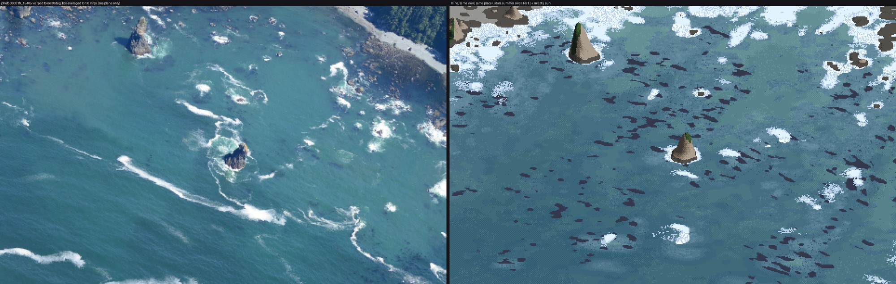
44. elements/sea/stages/s1_poa_iso_v5.pngBash: Plot foam particles and currents
cd ~/work/pixelart-studies/elements/sea/src; python3 - <<'EOF'
import numpy as np
from PIL import Image
d=np.load('../cache/poa_parts.npz'); Wv=np.load('../cache/poa_waves.npz'); St=np.load('../cache/poa_state.npz')
L=Wv['land'].astype(bool); h,w=L.shape
img=np.zeros((h,w,3)); img[...,2]=0.3; img[L]=0.5
x,y,a=d['x'],d['y'],d['age']
c=np.clip(1-a/300,0.2,1)
img[y.astype(int),x.astype(int),0]=c; img[y.astype(int),x.astype(int),1]=c
# current arrows
for yy in range(20,h,60):
for xx in range(20,w,60):
if L[yy,xx]: continue
u,v=St['u'][yy,xx],St['v'][yy,xx]
for s in range(0,int(np.hypot(u,v)*80)):
X=int(xx+u/np.hypot(u,v)*s);Y=int(yy+v/np.hypot(u,v)*s)
if 0<=X<w and 0<=Y<h: img[Y,X]=[0,1,0]
Image.fromarray((img*255).astype(np.uint8)).resize((w//2,h//2)).save('../notes/dbg_parts.png')
print(np.percentile(a,[10,50,90]))
EOF
# output:
Command did not complete within its 120s timeout and was moved to the background (ID: b2cc08dz8). Output is being written to: (tmp) You will be notified when it completes. To check interim output, use Read on that file path.
Session cwd remains ~/work/pixelart-studies/library; directory changes made by the backgrounded command do not apply to subsequent commands.ToolSearch: select:MonitorBash: Wait for particle plot to finish
until [ -s (tmp) ] || [ -f ~/work/pixelart-studies/elements/sea/notes/dbg_parts.png ]; do sleep 2; done; cat (tmp) uptime # output: [ 5.1875 33.20000458 124.4998703 ] 14:42 up 4:45, 1 user, load averages: 110.77 128.79 140.42
Read: elements/sea/notes/dbg_parts.png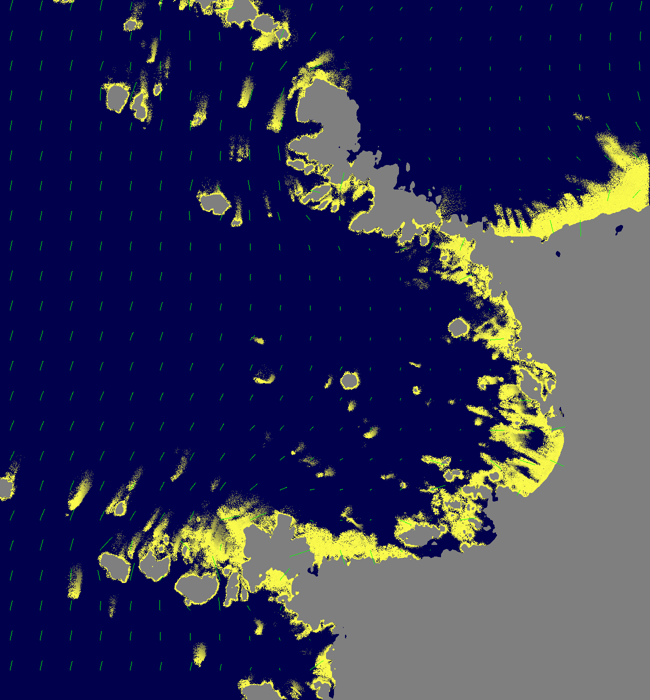
45. elements/sea/notes/dbg_parts.pngBash: Add eddy current, longer foam life; run sim in background
cd ~/work/pixelart-studies/elements/sea/src; python3 - <<'EOF'
s=open('sea/sim.py').read()
s=s.replace(""" u, v = ambient_current(self.land, current)""",""" u, v = ambient_current(self.land, current)
# eddies: a divergence-free meander field (curl of a smooth stream function), ~0.1 m/s at 100-200 m.
# Without it foam streaks are straight rulers; the photos' streaks swing in S-curves.
psi = fbm((h, w), 160, seed + 21, octaves=2)
gyp, gxp = np.gradient(psi)
ue, ve = gyp, -gxp
sc = eddy / (np.percentile(np.hypot(ue, ve), 90) + 1e-9)
dl0 = nd.distance_transform_edt(~self.land)
fade = np.clip(dl0 / 15.0, 0, 1)
u = u + ue * sc * fade; v = v + ve * sc * fade""")
s=s.replace("kelp_amount=1.0, tide=0.45):","kelp_amount=1.0, tide=0.45, eddy=0.12):")
s=s.replace("tau_w=8.0, tau_f=150.0,","tau_w=8.0, tau_f=450.0,")
open('sea/sim.py','w').write(s)
t=open('t_sim.py').read().replace("n_periods=24,","n_periods=60,")
open('t_sim.py','w').write(t)
s2=open('stage1.py').read().replace("t_now=24*8.3","t_now=60*8.3"); open('stage1.py','w').write(s2)
EOF
nohup sh -c "OPENBLAS_NUM_THREADS=1 OMP_NUM_THREADS=1 nice python3 t_sim.py > ../cache/sim.log 2>&1 && nice python3 stage1.py 1.0 ../stages/s1_poa_iso_v6.png >> ../cache/sim.log 2>&1; echo DONE >> ../cache/sim.log" > /dev/null 2>&1 &
echo started
# output:
startedBash: Add fine particle splat for close views
cd ~/work/pixelart-studies/elements/sea/src; python3 - <<'EOF'
p=open('sea/paint.py').read()
p=p.replace(""" Wf = sample(S, G, 'W'); Ff = sample(S, G, 'F'); Af = sample(S, G, 'A')""",""" Wf = sample(S, G, 'W'); Ff = sample(S, G, 'F'); Af = sample(S, G, 'A')
if 'parts' in S and mpp < 0.7:
Ff = local_foam(S['parts'], G, res=max(mpp, 0.12), sigma_m=0.45, gain=S.get('part_gain_fine', 0.9))""")
p=p.replace("def sample(F, G, key):","""def local_foam(parts, G, res, sigma_m, gain):
\"\"\"splat foam particles onto a fine grid over the camera footprint (close views).\"\"\"
x0, x1 = G['x'].min() - 2, G['x'].max() + 2; y0, y1 = G['y'].min() - 2, G['y'].max() + 2
px, py = parts['x'], parts['y']
m = (px > x0) & (px < x1) & (py > y0) & (py < y1)
nx_, ny_ = int((x1 - x0) / res) + 1, int((y1 - y0) / res) + 1
grid = np.zeros((ny_, nx_), np.float32)
np.add.at(grid, (((py[m] - y0) / res).astype(int), ((px[m] - x0) / res).astype(int)), 1.0)
grid = nd.gaussian_filter(grid, sigma_m / res) * (res * res) / 0.35 * gain
return bilinear(grid, (G['x'] - x0) / res, (G['y'] - y0) / res)
def sample(F, G, key):""")
open('sea/paint.py','w').write(p)
EOF
tail -2 ../cache/sim.log
# output:
(Bash completed with no output)Bash: Fix fine foam density scaling
cd ~/work/pixelart-studies/elements/sea/src; sed -i '' 's|grid = nd.gaussian_filter(grid, sigma_m / res) \* (res \* res) / 0.35 \* gain|grid = nd.gaussian_filter(grid, sigma_m / res) / (res * res) / 2.5 * gain|' sea/paint.py; grep -n "grid = nd.gaussian" sea/paint.py; cat ../cache/sim.log # output: 52: grid = nd.gaussian_filter(grid, sigma_m / res) / (res * res) / 2.5 * gain
Bash: Write lockstep multi-scale driver
cd ~/work/pixelart-studies/elements/sea/src; cat > lockstep.py <<'EOF'
"""Lockstep: the same place, fields and palette at 0.1, 0.3, 1 and 3 m/px, each beside the photo
warped into the same view (box-averaged to the same pixel size)."""
import sys, time; sys.path.insert(0,'.')
import numpy as np
from PIL import Image, ImageDraw
from stage1 import fields, render, photo_view
from sea.render import Cam, gbuffer
O='~/work/voxsim-data/places/olycoast/obliques/point_of_arches__060819_15405_2016.jpg'
def photo_at(Hm,cx,cy,mpp,W,H,ss=4):
c4=Cam(cx=cx,cy=cy,mpp=mpp/ss,W=W*ss,H=H*ss,yaw=90,elev=30,zc=0.45)
G4=gbuffer(c4,np.full((10,10),-40.0),sea_level=0.45)
ph4,_=photo_view(G4,Hm,O)
return np.asarray(Image.fromarray(ph4).resize((W,H),Image.BOX))
if __name__=='__main__':
P,S,zl=fields(); S['parts']=dict(np.load('../cache/poa_parts.npz'))
Hm=np.load('../notes/H_poa.npy')
cx,cy=float(sys.argv[1]),float(sys.argv[2]); out=sys.argv[3]
scales=[0.1,0.3,1.0,3.0]; W,H=240,150; k=3
sheet=Image.new('RGB',(2*W*k+10,len(scales)*(H*k+16)),(20,20,24)); d=ImageDraw.Draw(sheet)
for i,m in enumerate(scales):
cam=Cam(cx=cx,cy=cy,mpp=m,W=W,H=H,yaw=90,elev=30,zc=0.45)
rgb,G=render(S,zl,cam)
ph=photo_at(Hm,cx,cy,m,W,H)
y=i*(H*k+16)
d.text((4,y+2),f'photo, {m} m/px',fill=(220,220,220)); d.text((W*k+14,y+2),f'mine, {m} m/px',fill=(220,220,220))
sheet.paste(Image.fromarray(ph).resize((W*k,H*k),Image.NEAREST),(0,y+16))
sheet.paste(Image.fromarray(rgb).resize((W*k,H*k),Image.NEAREST),(W*k+10,y+16))
sheet.save(out)
EOF
python3 - <<'EOF'
s=open('~/work/pixelart-studies/elements/sea/src/stage1.py').read()
print('parts' in s)
EOF
cat ../cache/sim.log
# output:
FalseBash: Wait for background sim to finish
until grep -q -E "DONE|Error|Traceback" ~/work/pixelart-studies/elements/sea/cache/sim.log; do sleep 10; done; tail -3 ~/work/pixelart-studies/elements/sea/cache/sim.log # output: Command running in background with ID: bj0ae9dtu. Output is being written to: (tmp) You will be notified when it completes. To check interim output, use Read on that file path.
Bash: Read Modal infra notes
sed -n 1,24p ~/work/voxsim/docs/INFRA.md; which modal; modal --version 2>/dev/null
# output:
# voxsim infrastructure: where work runs, where things live
For every lane. Read this once. Everything here is meant to be **easy and fast**. If any step takes more than about 10 minutes of fiddling, stop and say so in your NOTES and your report, and ask for help. Don't grind on infrastructure.
## Credentials
- `~/work/.env.local` holds Modal and AWS keys. Load them with `set -a; . ~/work/.env.local; set +a`.
- **Never print, echo, log or commit their values.**
## Where compute runs
| Work | Where |
|---|---|
| Reading, writing code, small checks, `cargo check` on one crate | Your worktree, locally. `.cargo/config.toml` caps builds at 2 jobs. |
| Release builds of the workspace, long sims or soaks, render sweeps, heavy numpy | **Modal** (below). The laptop crashed from memory pressure with 14 lanes building at once, so don't run more than one heavy local job at a time. |
| Self-contained work that only needs the repo | Cloud agents; the manager decides. |
## Modal
- **Workspace:** set `MODAL_ENVIRONMENT=main` after loading the env file (the local `~/.modal.toml` defaults to another workspace's environment). A probe container with 16 CPUs came up in about 6 s.
- **Image:** use `modal.Image.from_registry("rust:1-bookworm", add_python="3.12")`. It ships current Rust. `debian_slim().apt_install(...)` failed on a stale Debian security mirror, so don't use it for Rust.
- **Budget:** the whole project has about $30 of Modal credit for now.
- Size containers to the job, and set `timeout=`.
- Shut down what you start (no idle `keep_warm`).
- Log each Modal run's resources and wall time in your NOTES, so spend can be tracked.
- If a job will take more than ~1 CPU-hour, say so before you run it.
- **Volumes:** use them for joint disk-and-CPU work (a cargo target cache per lane, shared data). Name everything `voxsim-<lane>-<what>` (e.g. `voxsim-place-yakima-target`), so nothing sprawls untracked.
~/miniconda3/bin/modal
modal client version: 1.2.4Bash: Write Modal runner for sims
cd ~/work/pixelart-studies/elements/sea/src; cat > modal_sim.py <<'EOF'
"""Run swell + sea-state sims on Modal (the laptop's load average is >100 with ~30 lanes).
Usage (local): python3 modal_sim.py jobs.json -- each job: name, depth npz path, params. Results -> ../cache/<name>.npz"""
import modal, io, json, sys, os
import numpy as np
app = modal.App("voxsim-study-sea-sim")
image = (modal.Image.debian_slim(python_version="3.12").pip_install("numpy==1.26.4", "scipy==1.14.0")
.add_local_dir(os.path.join(os.path.dirname(os.path.abspath(__file__)), "sea"), "/root/sea"))
@app.function(image=image, cpu=2.0, memory=8192, timeout=3600)
def run(blob: bytes, params: dict) -> bytes:
import sys; sys.path.insert(0, "/root")
import numpy as np, io, time
from sea.waves import swell, eikonal
from sea.sim import SeaState
t0 = time.time()
d = dict(np.load(io.BytesIO(blob)))
depth, z = d['depth'], d['z']
wp = params.get('waves', {}); sp = params.get('sim', {})
F = swell(depth, **wp)
te, kx, ky = eikonal(depth, T=wp.get('T', 8.3), dir_from=wp.get('dir_from', 281.0))
F['t'] = te; F['kx'] = kx; F['ky'] = ky
S = SeaState(depth, z, F, wp.get('T', 8.3), **sp).run()
out = dict(H=F['H'], Q=F['Q'], t=te, kx=kx, ky=ky, land=F['land'],
W=S.W, F=S.F, A=S.A, q=S.q, Hinst=S.Hinst, brk=S.brk, kelp=S.kelp, kelp_rho=S.kelp_rho,
rock=S.rock, rough=S.rough, u=S.u, v=S.v,
px=S.parts['x'], py=S.parts['y'], page=S.parts['age'], plife=S.parts['life'], pk=S.parts['k'],
t_now=np.array(S.t), secs=np.array(time.time() - t0))
b = io.BytesIO(); np.savez_compressed(b, **{k: np.asarray(v) for k, v in out.items()}); return b.getvalue()
@app.local_entrypoint()
def main(jobs: str):
J = json.load(open(jobs))
args = []
for j in J:
args.append((open(j['input'], 'rb').read(), j['params']))
for j, res in zip(J, run.starmap(args)):
open(j['output'], 'wb').write(res)
print('done', j['output'], len(res))
EOF
echo ok
# output:
okBash: Hillshade maps of Cape Alava and Kalaloch
cd ~/work/pixelart-studies/elements/sea/src; nice python3 hill.py -124.7345 48.1715 900 ../notes/alava_hill.png 2; nice python3 hill.py -124.372 47.605 900 ../notes/kala_hill.png 2 # output: origin NW utm 370145 5337716 origin NW utm 395977 5274211
Read: elements/sea/notes/alava_hill.pngRead: elements/sea/notes/kala_hill.png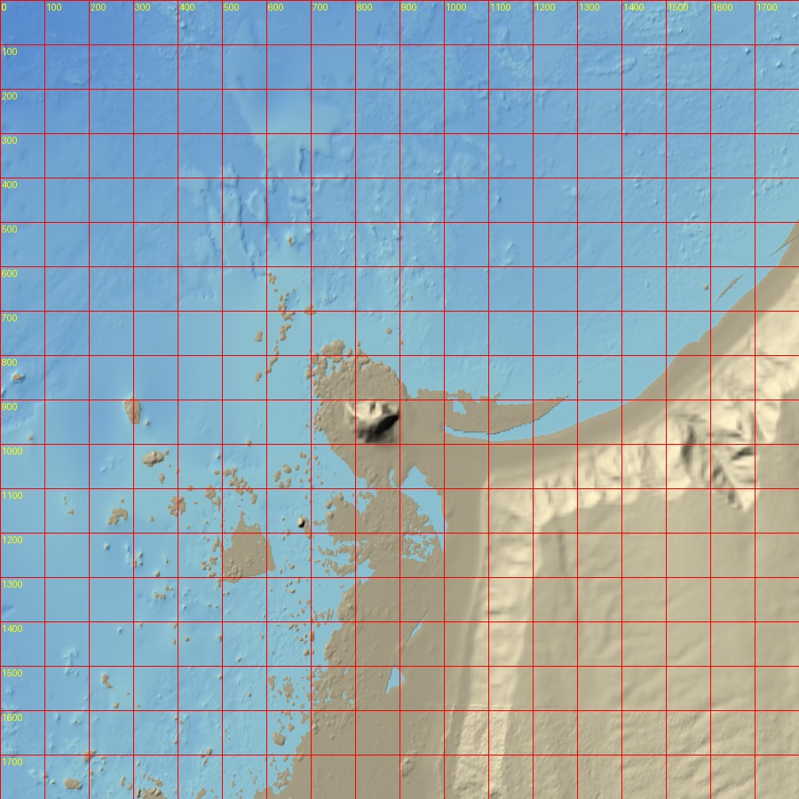
46. elements/sea/notes/alava_hill.png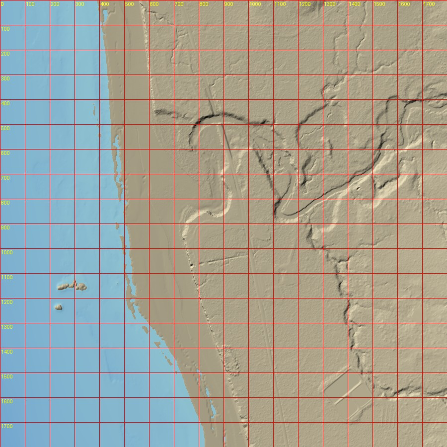
47. elements/sea/notes/kala_hill.pngBash: Check sim progress
cat ~/work/pixelart-studies/elements/sea/cache/sim.log; uptime # output: 14:54 up 4:56, 1 user, load averages: 95.92 120.65 134.62
Bash: Add Cape Alava and Kalaloch places; save inputs
cd ~/work/pixelart-studies/elements/sea/src; python3 - <<'EOF'
s=open('sea/place.py').read()
s=s.replace(""" 'poa': ('olycoast', 372347, 5346016, (350, 250, 1650, 1650)),""",""" 'poa': ('olycoast', 372347, 5346016, (350, 250, 1650, 1650)),
'alava': ('olycoast', 370145, 5337716, (100, 300, 1500, 1700)),
'kala': ('olycoast', 395977, 5274211, (0, 300, 900, 1500)),""")
open('sea/place.py','w').write(s)
EOF
python3 -c "
import sys;sys.path.insert(0,'.')
import numpy as np
from sea.place import load
for n in ['alava','kala']:
P=load(n); np.savez_compressed(f'../cache/in_{n}.npz',depth=P['depth'].astype(np.float32),z=P['z'].astype(np.float32))
print(n,P['z'].shape,np.nanmin(P['z']),np.isnan(P['z']).mean())
"
# output:
alava (1400, 1400) -9.641599 0.0
kala (1200, 900) -5.564231 0.0Bash: Test Modal sim run on Cape Alava
cd ~/work/pixelart-studies/elements/sea/src; cat > ../cache/jobs_test.json <<'EOF'
[{"input":"../cache/in_alava.npz","output":"../cache/alava_summer.npz","params":{"waves":{"Hs":1.57,"T":8.3,"dir_from":281,"smooth":8.0,"alpha":0.35,"gamma":0.8},"sim":{"current":[0.05,-0.2],"kelp_amount":0.9,"n_periods":60,"steps_per_T":8,"tide":0.45}}}]
EOF
set -a; . ~/work/.env.local; set +a; export MODAL_ENVIRONMENT=main; nohup modal run modal_sim.py --jobs ../cache/jobs_test.json > ../cache/modal_test.log 2>&1 &
sleep 60; tail -5 ../cache/modal_test.log
# output:
├── 🔨 Created mount
│ ~/work/pixelart-studies/elements/sea/src/modal_sim.py
├── 🔨 Created mount
│ ~/work/pixelart-studies/elements/sea/src/sea
└── 🔨 Created function run.Bash: Wait for Modal test result
until grep -q -E "done|Error|Traceback|rror" ~/work/pixelart-studies/elements/sea/cache/modal_test.log; do sleep 10; done; tail -5 ~/work/pixelart-studies/elements/sea/cache/modal_test.log # output: Command running in background with ID: brp2reqnh. Output is being written to: (tmp) You will be notified when it completes. To check interim output, use Read on that file path.
Bash: Add perspective eye-level G-buffer
cd ~/work/pixelart-studies/elements/sea/src; cat >> sea/render.py <<'EOF'
class PerspCam:
"""Eye-level camera for the shore view. pos in grid coords (x, y) + eye height z (m, absolute);
heading = bearing (deg clockwise from north) the camera faces; pitch (deg, negative = down); hfov deg."""
def __init__(self, x, y, z, heading, pitch=-2.0, hfov=60.0, W=480, H=270):
self.x, self.y, self.z, self.heading, self.pitch, self.hfov, self.W, self.H = x, y, z, heading, pitch, hfov, W, H
self.mpp = None
def persp_gbuffer(cam, zgrid, sea_level=0.0, max_dist=4000.0, step0=0.25):
W, H = cam.W, cam.H
f = (W / 2) / np.tan(np.radians(cam.hfov / 2))
py, px = np.mgrid[0:H, 0:W].astype(np.float64) + 0.5
# camera basis (grid coords: x east, y south, z up)
b = np.radians(cam.heading); p = np.radians(cam.pitch)
fwd = np.array([np.sin(b) * np.cos(p), -np.cos(b) * np.cos(p), np.sin(p)])
right = np.array([np.cos(b), np.sin(b), 0.0])
up = np.cross(right, fwd)
d = fwd[None, None] * f + right[None, None] * (px - W / 2)[..., None] - up[None, None] * (py - H / 2)[..., None]
d /= np.linalg.norm(d, axis=2, keepdims=True)
dx, dy, dz = d[..., 0], d[..., 1], d[..., 2]
# sea plane
tsea = np.where(dz < -1e-6, (cam.z - sea_level) / np.maximum(-dz, 1e-9), np.inf)
tsea = np.minimum(tsea, max_dist)
# march terrain (geometric steps) until tsea
zz = np.nan_to_num(zgrid, nan=-50.0); h, w = zz.shape
thit = np.full((H, W), np.inf)
t = np.full((H, W), 0.5); prev_below = np.zeros((H, W), bool)
for i in range(400):
x = cam.x + dx * t; y = cam.y + dy * t; zr = cam.z + dz * t
inside = (x >= 0) & (x < w - 1) & (y >= 0) & (y < h - 1)
zt = np.where(inside, bilinear(zz, x, y), -50)
hit = (zt > zr) & np.isinf(thit) & (t < tsea)
thit = np.where(hit, t, thit)
t = t + np.maximum(step0, t * 0.01)
if (t > np.minimum(tsea, max_dist)).all(): break
sea = np.isfinite(tsea) & (tsea < thit) & (tsea < max_dist)
land = np.isfinite(thit) & ~sea
tt = np.where(sea, tsea, np.where(land, thit, np.nan))
G = dict(x=cam.x + dx * np.nan_to_num(tt), y=cam.y + dy * np.nan_to_num(tt), z=cam.z + dz * np.nan_to_num(tt),
sea=sea, land=land, sky=~sea & ~land, dist=tt, dz=dz, dirx=dx, diry=dy)
# pixel footprint on the ground (m): distance / f, stretched vertically by 1/sin(grazing)
G['mpp'] = np.nan_to_num(tt, nan=1e3) / f
G['graze'] = np.degrees(np.arcsin(np.clip(-dz, 1e-4, 1)))
gyz, gxz = np.gradient(zz)
nx = -bilinear(gxz, G['x'], G['y']); ny = -bilinear(gyz, G['x'], G['y']); n = np.sqrt(nx * nx + ny * ny + 1)
G['nx'], G['ny'], G['nz'] = nx / n, ny / n, 1 / n
return G
EOF
echo ok; cat ../cache/sim.log
# output:
okBash: Check both sims progress
sleep 240; cat ~/work/pixelart-studies/elements/sea/cache/sim.log; tail -3 ~/work/pixelart-studies/elements/sea/cache/modal_test.log # output: <tool_use_error>Blocked: sleep 240 followed by: cat ~/work/pixelart-studies/elements/sea/cache/sim.log tail -3 ~/work/pixelart-studies/elements/sea/cache/modal_test.log. To wait for a condition, use Monitor with an until-loop (e.g. `until <check>; do sleep 2; done`). To wait for a command you started, use run_in_background: true. Do not chain shorter sleeps to work around this block.</tool_use_error>
Bash: Add mirror and sky ramps for eye-level view
cd ~/work/pixelart-studies/elements/sea/src; python3 - <<'EOF'
s=open('sea/pal.py').read()
s=s.replace("""RAMPS = ['sea_sand',""","""HOR = {'sun': (86, -4, -10), 'overcast': (86, 0, -2), 'golden': (84, 6, 18), 'dusk': (66, 18, 8), 'fog': (86, -1, -2)}
MIRROR_F = [0.05, 0.10, 0.17, 0.27, 0.40, 0.58, 0.80]
def build_extra(light, P):
L = LIGHTS[light]
deep = relight(SEA_DEEP, L)
hor = lab2lin(HOR[light]); zen = lab2lin(L['sky'])
P['mirror'] = np.array([lin2srgb(deep * (1 - f) + (hor * f ** 0.5 + zen * (1 - f ** 0.5)) * f * 1.0) for f in MIRROR_F])
P['sky'] = np.array([lin2srgb(zen * (1 - a) + hor * a) for a in np.linspace(0, 1, 6)])
return P
RAMPS = ['sea_sand',""")
s=s.replace("'forest', 'glint']","'forest', 'glint', 'mirror', 'sky']")
s=s.replace(""" P['glint'] = np.array([lin2srgb(np.clip(np.array(L['tint']) * 0.9 + 0.1, 0, 1)), lin2srgb(np.clip(lab2lin(L['sky']) * 1.1, 0, 1))])
return P""",""" P['glint'] = np.array([lin2srgb(np.clip(np.array(L['tint']) * 0.9 + 0.1, 0, 1)), lin2srgb(np.clip(lab2lin(L['sky']) * 1.1, 0, 1))])
return build_extra(light, P)""")
open('sea/pal.py','w').write(s)
EOF
python3 -c "
import sys;sys.path.insert(0,'.')
from sea.pal import build
P=build('sun');print(P['mirror'].astype(int).tolist())"
# output:
[[52, 94, 116], [65, 103, 125], [80, 114, 136], [99, 130, 151], [120, 148, 169], [146, 171, 191], [174, 197, 214]]Bash: Make painter accept per-pixel scale and perspective
cd ~/work/pixelart-studies/elements/sea/src; python3 - <<'EOF'
p=open('sea/paint.py').read()
p=p.replace("""def sample(F, G, key):""","""def cq(base, mpp, k):
\"\"\"feature size: base metres, but never below k pixels; quantised to octaves so LOD bands don't swim.\"\"\"
m = np.maximum(1.0, k * np.asarray(mpp, float) / base)
return base * 2.0 ** np.ceil(np.log2(m))
def sample(F, G, key):""")
p=p.replace(" mpp = cam.mpp\n"," mpp = G['mpp'] if 'mpp' in G else cam.mpp\n")
p=p.replace("cellc = max(1.2, 2.5 * mpp)","cellc = cq(1.2, mpp, 2.5)")
p=p.replace("speck_cell = max(1.5, 1.5 * mpp)","speck_cell = cq(1.5, mpp, 1.5)")
p=p.replace("lc = max(P['lace_cell'], 2.2 * mpp)","lc = cq(P['lace_cell'], mpp, 2.2)")
p=p.replace("lump = fbmw(x, y, max(P['lump_cell'], 1.2 * mpp), 77, 3)","lcell = cq(P['lump_cell'], mpp, 1.2)\n lump = fbmw(x, y, lcell, 77, 3)")
p=p.replace("e = 0.35 * max(P['lump_cell'], 1.2 * mpp)\n lg = fbmw(x + sx_ * e, y + sy_ * e, max(P['lump_cell'], 1.2 * mpp), 77, 3) - lump","e = 0.35 * lcell\n lg = fbmw(x + sx_ * e, y + sy_ * e, lcell, 77, 3) - lump")
p=p.replace("if 'parts' in S and mpp < 0.7:","if 'parts' in S and np.median(mpp) < 0.7:")
p=p.replace("Ff = local_foam(S['parts'], G, res=max(mpp, 0.12),","Ff = local_foam(S['parts'], G, res=max(float(np.median(mpp)), 0.12),")
# perspective body
p=p.replace(""" ramp[sea] = np.where(is_rock, RID['sea_rock'], RID['sea_sand'])[sea]
step[sea] = body_step[sea]""",""" ramp[sea] = np.where(is_rock, RID['sea_rock'], RID['sea_sand'])[sea]
step[sea] = body_step[sea]
if 'graze' in G:
# eye level: Fresnel takes over; the water becomes the sky's ramp (Schlick, n=1.33) + roughness
th = np.radians(90 - G['graze']); F0 = 0.02
Fr = F0 + (1 - F0) * (1 - np.cos(th)) ** 5
Fr = np.clip(Fr * 0.85 + 0.03, 0, 1)
from .pal import MIRROR_F
mf = np.interp(Fr + (by - 0.5) * 0.04, MIRROR_F, np.arange(len(MIRROR_F)))
mst = np.round(mf).astype(int)
mm = sea & (Fr > 0.07)
ramp[mm] = RID['mirror']; step[mm] = mst[mm]
G['_mirror'] = mm""")
open('sea/paint.py','w').write(p)
EOF
grep -n "max(" sea/paint.py | head
# output:
46: x0, x1 = G['x'].min() - 2, G['x'].max() + 2; y0, y1 = G['y'].min() - 2, G['y'].max() + 2
78: Ff = local_foam(S['parts'], G, res=max(float(np.median(mpp)), 0.12), sigma_m=0.45, gain=S.get('part_gain_fine', 0.9))Bash: Wait for either sim to finish
until grep -q -E "DONE|Traceback" ~/work/pixelart-studies/elements/sea/cache/sim.log || grep -q -E "done|Traceback|Error" ~/work/pixelart-studies/elements/sea/cache/modal_test.log; do sleep 5; done; cat ~/work/pixelart-studies/elements/sea/cache/sim.log | tail -3; tail -3 ~/work/pixelart-studies/elements/sea/cache/modal_test.log # output: Stopping app - local entrypoint completed. ✓ App completed. View run at https://modal.com/apps/graunked/main/ap-2sYSE8YE8UkkduuWa9w0CH
Bash: Check Modal result
grep -E "done|secs" ~/work/pixelart-studies/elements/sea/cache/modal_test.log; python3 -c "
import numpy as np;d=np.load('~/work/pixelart-studies/elements/sea/cache/alava_summer.npz');print(d['secs'],d['px'].size,d['kelp'].mean())"
# output:
done ../cache/alava_summer.npz 178567271
440.4915826320648 3913062 0.01513814Bash: Shrink result; slim Modal outputs
cd ~/work/pixelart-studies/elements/sea/src; python3 - <<'EOF'
import numpy as np
d=dict(np.load('../cache/alava_summer.npz'))
out={}
for k,v in d.items():
if k in ('page','plife','pk'): continue
if v.dtype==np.float64 or v.dtype==np.float32:
out[k]=v.astype(np.float32) if k in ('px','py','t','secs','t_now') else v.astype(np.float16)
else: out[k]=v
np.savez_compressed('../cache/alava_summer.npz',**out)
EOF
ls -la ../cache/; python3 - <<'EOF'
s=open('~/work/pixelart-studies/elements/sea/src/modal_sim.py').read()
s=s.replace("px=S.parts['x'], py=S.parts['y'], page=S.parts['age'], plife=S.parts['life'], pk=S.parts['k'],","px=S.parts['x'], py=S.parts['y'],")
s=s.replace("b = io.BytesIO(); np.savez_compressed(b, **{k: np.asarray(v) for k, v in out.items()}); return b.getvalue()",
"""def cv(k, v):
v = np.asarray(v)
if v.dtype.kind == 'f' and k not in ('px', 'py', 't', 'secs', 't_now'): return v.astype(np.float16)
return v.astype(np.float32) if v.dtype.kind == 'f' else v
b = io.BytesIO(); np.savez_compressed(b, **{k: cv(k, v) for k, v in out.items()}); return b.getvalue()""")
open('~/work/pixelart-studies/elements/sea/src/modal_sim.py','w').write(s)
EOF
du -sh ../cache
# output:
total 373224
drwxr-xr-x 11 user staff 352 Sep 26 15:02 .
drwxr-xr-x 9 user staff 288 Sep 26 13:46 ..
-rw-r--r-- 1 user staff 59167542 Sep 26 15:03 alava_summer.npz
-rw-r--r-- 1 user staff 14010057 Sep 26 14:54 in_alava.npz
-rw-r--r-- 1 user staff 7881912 Sep 26 14:54 in_kala.npz
-rw-r--r-- 1 user staff 256 Sep 26 14:54 jobs_test.json
-rw-r--r-- 1 user staff 1074 Sep 26 15:02 modal_test.log
-rw-r--r-- 1 user staff 13266521 Sep 26 14:31 poa_parts.npz
-rw-r--r-- 1 user staff 47534688 Sep 26 14:31 poa_state.npz
-rw-r--r-- 1 user staff 48170063 Sep 26 14:12 poa_waves.npz
-rw-r--r-- 1 user staff 0 Sep 26 14:43 sim.log
182M ../cacheBash: Kill local sim; run Point of Arches on Modal
pkill -f "t_sim.py" ; pkill -f "stage1.py 1.0 ../stages/s1_poa_iso_v6"; cd ~/work/pixelart-studies/elements/sea/src; python3 -c "
import sys;sys.path.insert(0,'.')
import numpy as np
from sea.place import load
P=load('poa'); np.savez_compressed('../cache/in_poa.npz',depth=P['depth'].astype(np.float32),z=P['z'].astype(np.float32))"
cat > ../cache/jobs_poa.json <<'EOF'
[{"input":"../cache/in_poa.npz","output":"../cache/poa_summer.npz","params":{"waves":{"Hs":1.57,"T":8.3,"dir_from":281,"smooth":8.0,"alpha":0.35,"gamma":0.8},"sim":{"current":[0.05,-0.25],"kelp_amount":0.25,"n_periods":60,"steps_per_T":8,"tide":0.45}}}]
EOF
set -a; . ~/work/.env.local; set +a; export MODAL_ENVIRONMENT=main; nohup modal run modal_sim.py --jobs ../cache/jobs_poa.json > ../cache/modal_poa.log 2>&1 & echo ok
# output:
okBash: Scene loader for Modal results; hook drivers
cd ~/work/pixelart-studies/elements/sea/src; cat > sea/scene.py <<'EOF'
"""Load a sim result (Modal npz) + place into the painter's field dict."""
import numpy as np, os, sys
sys.path.insert(0, os.path.dirname(os.path.dirname(os.path.abspath(__file__))))
from .place import PLACES, load
from dem import window
CACHE = os.path.join(os.path.dirname(os.path.dirname(os.path.dirname(os.path.abspath(__file__)))), 'cache')
def scene(place, result, tide=0.45, T=None):
P = load(place, tide)
d = dict(np.load(os.path.join(CACHE, result) if not os.path.isabs(result) else result))
pack, X0, Y1, (c0, r0, c1, r1) = PLACES[place]
chm = np.nan_to_num(window(pack, 'chm', X0 + c0, Y1 - r1, X0 + c1, Y1 - r0, dtype=np.uint8))
f = lambda k: d[k].astype(np.float32)
S = dict(depth=np.nan_to_num(P['depth'], nan=30.0), rock=f('rock'), rough=f('rough'), kelp=f('kelp'),
kelp_rho=f('kelp_rho'), W=f('W'), F=f('F'), A=f('A'), Hinst=f('Hinst'), u=f('u'), v=f('v'),
tt=d['t'].astype(np.float32), brkf=d['brk'].astype(np.float32), T=float(T or 8.3),
t_now=float(d['t_now']), chm=chm, H=f('H'), kx=f('kx'), ky=f('ky'),
parts=dict(x=d['px'], y=d['py']))
zland = np.nan_to_num(P['z'], nan=-40) + chm
return P, S, zland
EOF
python3 - <<'EOF'
s=open('~/work/pixelart-studies/elements/sea/src/stage1.py').read()
s=s.replace("def render(S,zland,cam,light='sun',tide=0.45,params=None):\n G=gbuffer(cam,zland,sea_level=tide)",
"def render(S,zland,cam,light='sun',tide=0.45,params=None,G=None):\n G=G if G is not None else gbuffer(cam,zland,sea_level=tide)")
s=s.replace(" rgb,G=render(S,zl,cam)\n ph,ok"," rgb,G=render(S,zl,cam)\n ph,ok")
s=s.replace(" t=time.time(); P,S,zl=fields()"," t=time.time()\n from sea.scene import scene\n P,S,zl=scene('poa',sys.argv[3] if len(sys.argv)>3 else 'poa_summer.npz')")
open('~/work/pixelart-studies/elements/sea/src/stage1.py','w').write(s)
l=open('~/work/pixelart-studies/elements/sea/src/lockstep.py').read()
l=l.replace(" P,S,zl=fields(); S['parts']=dict(np.load('../cache/poa_parts.npz'))"," from sea.scene import scene\n P,S,zl=scene('poa','poa_summer.npz')")
open('~/work/pixelart-studies/elements/sea/src/lockstep.py','w').write(l)
EOF
echo ok
# output:
okBash: Render Cape Alava iso view
cd ~/work/pixelart-studies/elements/sea/src; cat > view_alava.py <<'EOF'
import sys; sys.path.insert(0,'.')
import numpy as np
from PIL import Image
from sea.scene import scene
from sea.render import Cam
from stage1 import render
P,S,zl=scene('alava','alava_summer.npz')
mpp=float(sys.argv[1]); cx,cy=float(sys.argv[2]),float(sys.argv[3]); out=sys.argv[4]
cam=Cam(cx=cx,cy=cy,mpp=mpp,W=480,H=300,yaw=90,elev=30,zc=0.45)
rgb,G=render(S,zl,cam)
Image.fromarray(rgb).resize((1440,900),Image.NEAREST).save(out)
EOF
nice python3 view_alava.py 1.0 650 700 ../stages/s1_alava_iso.png
# output:
(Bash completed with no output)Read: elements/sea/stages/s1_alava_iso.png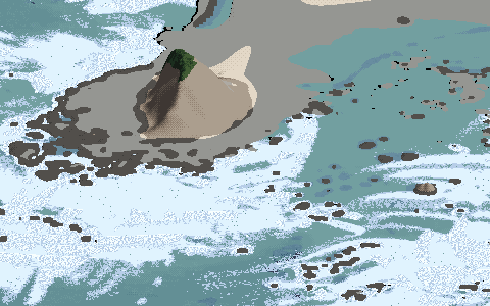
48. elements/sea/stages/s1_alava_iso.pngBash: Two-population foam lifetimes; rerun both places on Modal
pkill -f "modal run modal_sim.py" ; cd ~/work/pixelart-studies/elements/sea/src; python3 - <<'EOF'
s=open('sea/sim.py').read()
s=s.replace("pl = np.concatenate([pl, rng.exponential(P['tau_f'], xs.size).astype(np.float32)])",
"lt = np.where(rng.random(xs.size) < P.get('long_frac', 0.12), rng.exponential(P['tau_f'], xs.size), rng.exponential(P.get('tau_short', 25.0), xs.size))\n pl = np.concatenate([pl, lt.astype(np.float32)])")
open('sea/sim.py','w').write(s)
EOF
grep -n "long_frac" sea/sim.py; cat > ../cache/jobs_s1.json <<'EOF'
[{"input":"../cache/in_poa.npz","output":"../cache/poa_summer.npz","params":{"waves":{"Hs":1.57,"T":8.3,"dir_from":281,"smooth":8.0},"sim":{"current":[0.05,-0.25],"kelp_amount":0.25,"n_periods":60,"steps_per_T":8,"tide":0.45}}},
{"input":"../cache/in_alava.npz","output":"../cache/alava_summer.npz","params":{"waves":{"Hs":1.57,"T":8.3,"dir_from":281,"smooth":8.0},"sim":{"current":[0.05,-0.2],"kelp_amount":0.9,"n_periods":60,"steps_per_T":8,"tide":0.45}}}]
EOF
set -a; . ~/work/.env.local; set +a; export MODAL_ENVIRONMENT=main; nohup modal run modal_sim.py --jobs ../cache/jobs_s1.json > ../cache/modal_s1.log 2>&1 & echo ok
# output:
195: lt = np.where(rng.random(xs.size) < P.get('long_frac', 0.12), rng.exponential(P['tau_f'], xs.size), rng.exponential(P.get('tau_short', 25.0), xs.size))
okBash: Append simulation rules to LESSONS
cd ~/work/pixelart-studies/elements/sea; cat >> LESSONS.md <<'EOF' ### 1.4 The rules a simulation needs (numbers, with where they come from) **Swell and refraction** (`src/sea/waves.py`) - Linear dispersion ω² = g k tanh(k d); phase speed c = ω/k, group speed c_g = n c with n = ½(1 + 2kd / sinh 2kd) **[source: SPM ch. 2]**. Deep-water wavelength L0 = 1.56 T²: summer 8 s → 100 m, winter 13 s → 260 m. - Olympic wave climate (NDBC 46041, measured by the water study): Hs median 1.1 m (Jul) to 3.0 m (Jan); Tp 8 s (Jul) to 13 s (Jan); storms 8–10 m. - Crests bend toward shallow water (Snell): I trace 2,600 rays across the lidar at 0.5 m steps with dk̂/ds = −(1/c)(∇c − (∇c·k̂)k̂). Height H = H0·K_s·K_r·(dissipation), K_s = sqrt(c_g0/c_g), K_r = sqrt(b0/b) from the spacing of *living* neighbour rays (a ray that hits a rock freezes; counting it as a neighbour faked a 5× spreading — my bug, now fixed). - Crest *positions* come from a separate first-arrival travel-time solve (Dijkstra, 16 neighbours, 2 m), because rays leave shadows behind stacks; the eikonal wraps crests into every lee **[measured on my solve: `notes/poa_waves.png`]**. - **Coves get small waves, headlands big ones** — rays diverge over the cove and converge on the points. At Point of the Arches, Hrms falls from 1.08 m offshore to 0.47 m inside the cove with no breaking at all **[measured on my solve]**. This is SPM's textbook figure, and it's why the coast painter's uniform "surf band around every shore" reads false. - Random-wave breaking (Battjes & Janssen 1978): fraction breaking Q_b from (1−Q)/ln Q = −(Hrms/Hm)², Hm = 0.88/k·tanh(γkd/0.88), γ ≈ 0.73; dissipation D = ¼αρg f Q_b Hm². - **Which crest breaks where** (the picture needs individuals, not averages): each crest gets a height multiplier from a Rayleigh draw that varies slowly along the crest (30 m cells) and is fixed for that crest (hashed on crest number). It breaks where H_inst > 0.62·d_pinnacle, where d_pinnacle is the shallowest depth within 5 m (the 1 m lidar blurs reef heads that waves feel). **Foam** (`src/sea/sim.py`), three quantities integrated over the last 60 wave periods (~8 min): - **W, whitewater**: set to 1 on a crest the moment it breaks, decays with τ ≈ 8 s. Because the source moves with the crest and the old foam stays behind, every break draws itself as a crescent with a sharp shoreward edge and a soft seaward tail, the shape in `notes/poa_streak.png`. Nothing places a crescent. - **Surge collar**: every crest that reaches within ~2 m of rock throws whitewater whatever the depth rule says, weighted by how squarely it faces the rock. - **A, aeration** (the jade halo), τ ≈ 14 s, advected, extended ~6 m around stacks. - **F, persistent foam, as particles**: decaying whitewater sheds particles, carried by the current and killed on an exponential clock. Two populations: 88% short-lived (τ 25 s), 12% long-lived (τ 450 s, surfactant foam). An Eulerian foam field smeared the streaks into fog after a few hundred advection steps; particles keep them thin. - **Current**: a uniform alongshore drift (0.25 m/s) steered around the land by potential flow, plus a divergence-free eddy field (0.12 m/s at 160 m scale) so streaks swing into S-curves, plus 3% of the wind, Stokes drift, and a 0.35 m/s shoreward push inside breaking zones. **Kelp** (bull kelp, *Nereocystis*): on rock, 2–18 m deep, densest in the moderately exposed middle depths; beds tens of metres across with gaps; within a bed, a mat whose area fraction equals the expected canopy cover ρ; beyond the mat, floats as specks streaming down-current. Floats 9–15 cm, 30–64 blades to 4–10 m **[source: water study 1.7]**; canopy area falls 22–36% per metre of tide rise **[source: Timmer et al. 2024]**. WA's outer coast plus Strait held ~1,700 ha of floating kelp in 2005; DNR has flown annual canopy surveys since 1989 **[source: WA DNR Nearshore Habitat Program]**. EOF echo ok # output: ok
Bash: Wait for Modal stage-1 sims
until grep -q -E "done ../cache/alava|Traceback|Error" ~/work/pixelart-studies/elements/sea/cache/modal_s1.log; do sleep 10; done; grep -E "done|Error" ~/work/pixelart-studies/elements/sea/cache/modal_s1.log # output: RuntimeError: aclose(): asynchronous generator is already running done ../cache/poa_summer.npz 30278180 done ../cache/alava_summer.npz 34492832
Bash: Render stage 1 for both places
cd ~/work/pixelart-studies/elements/sea/src; nice python3 stage1.py 1.0 ../stages/s1_poa_iso_v6.png poa_summer.npz && nice python3 view_alava.py 1.0 650 700 ../stages/s1_alava_iso_v2.png # output: t 11.512517929077148
Read: elements/sea/stages/s1_poa_iso_v6.png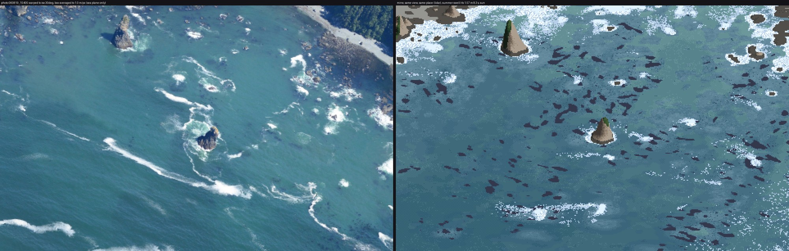
49. elements/sea/stages/s1_poa_iso_v6.pngBash: Compare water Lab stats photo vs mine
cd ~/work/pixelart-studies/elements/sea/src; python3 -c "
import sys;sys.path.insert(0,'.')
import numpy as np
from PIL import Image
from lab import srgb_to_lab
im=np.asarray(Image.open('../stages/s1_poa_iso_v6.png').convert('RGB')).astype(float)
k=3;W,H=480,300
ph=im[20:20+H*k:k,0:W*k:k];mi=im[20:20+H*k:k,W*k+10:W*k*2+10:k]
Lp=srgb_to_lab(ph);Lm=srgb_to_lab(mi)
m=(ph.sum(2)>0)&(Lp[...,0]<70)&(Lp[...,0]>25)
m2=(Lm[...,0]<70)&(Lm[...,0]>25)
print('photo water',np.median(Lp[m],0).round(1),'pct',np.percentile(Lp[m][:,0],[10,90]).round(1))
print('mine water',np.median(Lm[m2],0).round(1),'pct',np.percentile(Lm[m2][:,0],[10,90]).round(1))
print('white frac photo',(Lp[...,0]>75)[ph.sum(2)>0].mean().round(3),'mine',(Lm[...,0]>75).mean().round(3))
"
# output:
photo water [ 47.9 -11.2 -15.5] pct [39.8 54.2]
mine water [ 47. -8.4 -15. ] pct [40.6 54.6]
white frac photo 0.046 mine 0.088Bash: Retune kelp, colour, rock smoothing; render stage and lockstep
cd ~/work/pixelart-studies/elements/sea/src; python3 - <<'EOF'
p=open('sea/pal.py').read()
p=p.replace("SEA_DEEP = (34, -9, -17)","SEA_DEEP = (34, -11, -16)").replace("SEA_ROCK_SHALLOW = (58, -8, -14)","SEA_ROCK_SHALLOW = (58, -11, -13)")
open('sea/pal.py','w').write(p)
q=open('sea/paint.py').read()
q=q.replace(" km = sea & (kn > P['kelp_on'])"," krho0 = sample(S, G, 'kelp_rho') if 'kelp_rho' in S else kelp\n km = sea & (kn > P['kelp_on']) & (krho0 > P.get('mat_rho', 0.3))")
q=q.replace("d = sample(S, G, 'depth'); rock = sample(S, G, 'rock');","d = sample(S, G, 'depth'); rock = sample(S, G, 'rock_s') if 'rock_s' in S else sample(S, G, 'rock');")
open('sea/paint.py','w').write(q)
s=open('sea/scene.py').read()
s=s.replace(" zland = np.nan_to_num"," from scipy import ndimage as nd\n S['rock_s'] = nd.gaussian_filter(S['rock'], 3.0)\n zland = np.nan_to_num")
open('sea/scene.py','w').write(s)
EOF
nice python3 stage1.py 1.0 ../stages/s1_poa_iso_v7.png poa_summer.npz && nice python3 lockstep.py 720 750 ../stages/s1_poa_lockstep_v1.png
# output:
t 12.46312689781189Read: elements/sea/stages/s1_poa_iso_v7.pngRead: elements/sea/stages/s1_poa_lockstep_v1.png 50. elements/sea/stages/s1_poa_lockstep_v1.png
50. elements/sea/stages/s1_poa_lockstep_v1.png
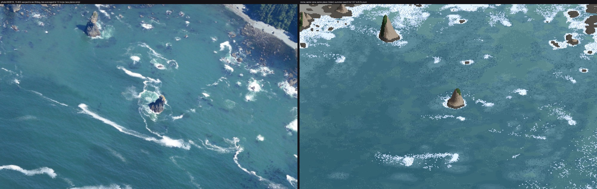
51. elements/sea/stages/s1_poa_iso_v7.pngBash: Foam as coverage with noise-contour edges; render lockstep
cd ~/work/pixelart-studies/elements/sea/src; python3 - <<'EOF'
p=open('sea/paint.py').read()
a=p.index(" # ---------------- 6. subsided foam")
b=p.index(" # ---------------- 8. the roller")
p=p[:a]+""" # ---------------- 6+7. foam as COVERAGE: solid shapes with ragged, noise-contour edges ----------
# (no per-pixel stipple: the threshold field is smooth at >= 3 px, so edges are ragged, never salt)
un = np.hypot(u, v) + 1e-6
Fe = np.clip(Ff, 0, 2)
cov = np.maximum(np.clip(Wf * 1.25, 0, 1.2), Fe)
ecell = cq(1.6, mpp, 3.0)
# threshold noise stretched along the current: patches and streaks elongate the way the foam drifts
xa = (x * (u / un) + y * (v / un)) / P['lace_stretch']; ya = -x * (v / un) + y * (u / un)
thr = 0.18 + 0.62 * fbmw(xa, ya, ecell, 68, 2)
foam = sea & (cov > thr)
# Ruskin's oval gaps / Gilland's expanding holes: only where the holes are >= 4 px across
hcell = cq(P['lace_cell'], mpp, 4.0)
hf1, hf2 = worley(x, y, hcell, 66, u / un, v / un, 1.6)
hole_r = np.clip(0.75 - cov * 0.7, 0, 0.7) # older, thinner foam -> bigger holes
holes = foam & (hf1 < hole_r) & (cov < 0.85) & (hcell / np.asarray(mpp) >= 4.0)
foam &= ~holes
ramp[foam] = RID['foam']
# tone: fresh whitewater gets lumps lit toward the sun and shaded away; old foam is the mid tone,
# its densest cores lit
lcell = cq(P['lump_cell'], mpp, 2.0)
lump = fbmw(x, y, lcell, 77, 3)
saz = np.radians(P['sun_az'])
sx_, sy_ = np.sin(saz), -np.cos(saz)
e = 0.35 * lcell
lg = fbmw(x + sx_ * e, y + sy_ * e, lcell, 77, 3) - lump
fresh = Wf > 0.35
tone = np.where(fresh, np.where(lg > 0.02, 3, np.where(lg < -0.035, 1, 2)), np.where(cov > 0.75, 2, 1))
step[foam] = tone[foam]
"""+p[b:]
open('sea/paint.py','w').write(p)
s=open('sea/sim.py').read()
s=s.replace("self.collar = (np.exp(-dl / 1.8) * (0.25 + 0.75 * facing) * (dl < 6)).astype(np.float32)","self.collar = (np.exp(-dl / 1.8) * (0.05 + 0.95 * facing) * (dl < 6)).astype(np.float32)")
s=s.replace("ca = np.clip(np.exp(-self.dl / 6.0) * (0.3 + 0.7 * (self.collar > 0.05))","ca = np.clip(np.exp(-self.dl / 9.0) * (0.3 + 0.7 * (self.collar > 0.05))")
open('sea/sim.py','w').write(s)
EOF
nice python3 lockstep.py 720 750 ../stages/s1_poa_lockstep_v2.png
# output:
(Bash completed with no output)Read: elements/sea/stages/s1_poa_lockstep_v2.png 52. elements/sea/stages/s1_poa_lockstep_v2.png
52. elements/sea/stages/s1_poa_lockstep_v2.png
Bash: Inspect foam density field of new sim
cd ~/work/pixelart-studies/elements/sea/src; python3 - <<'EOF'
import numpy as np
from PIL import Image
d=np.load('../cache/poa_summer.npz')
F=d['F'].astype(np.float32); W=d['W'].astype(np.float32); L=d['land']
print('parts',d['px'].size,'F pct (F>0)',np.percentile(F[F>0.01],[50,90,99]).round(2))
h,w=L.shape
img=np.zeros((h,w,3),np.float32); img[...,2]=0.3; img[L]=0.5
img[...,0]+=np.clip(F,0,1); img[...,1]+=np.clip(F,0,1); img[...,0]+=np.clip(W,0,1)
Image.fromarray((np.clip(img,0,1)*255).astype(np.uint8)).resize((w//2,h//2)).save('../notes/dbg_F2.png')
EOF
# output:
parts 252129 F pct (F>0) [0.25 1.38 2.94]Read: elements/sea/notes/dbg_F2.png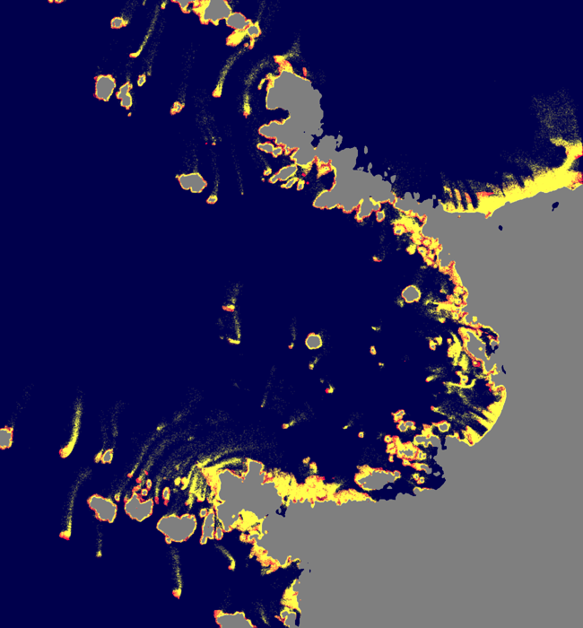
53. elements/sea/notes/dbg_F2.pngBash: Suppress coarse chop; raise shedding param
cd ~/work/pixelart-studies/elements/sea/src; python3 - <<'EOF'
p=open('sea/paint.py').read()
p=p.replace("chop_m = sea & (f2 - f1 < 0.10) & (vnoise(x, y, 25, 3) < P['chop']) & (d > 1.0)","chop_m = sea & (f2 - f1 < 0.10) & (vnoise(x, y, 25, 3) < P['chop']) & (d > 1.0) & (np.asarray(mpp) <= 0.4)")
open('sea/paint.py','w').write(p)
EOF
sed -i '' 's/"sim":{"current":\[0.05,-0.25\],"kelp_amount":0.25,/"sim":{"current":[0.05,-0.25],"kelp_amount":0.25,"shed":7.5,/' ../cache/jobs_s1.json; head -c 400 ../cache/jobs_s1.json; grep -n "P.get('shed'" sea/sim.py
# output:
[{"input":"../cache/in_poa.npz","output":"../cache/poa_summer.npz","params":{"waves":{"Hs":1.57,"T":8.3,"dir_from":281,"smooth":8.0},"sim":{"current":[0.05,-0.25],"kelp_amount":0.25,"shed":7.5,"n_periods":60,"steps_per_T":8,"tide":0.45}}},
{"input":"../cache/in_alava.npz","output":"../cache/alava_summer.npz","params":{"waves":{"Hs":1.57,"T":8.3,"dir_from":281,"smooth":8.0},"sim":{"current":[0.05,189: pr = np.clip(lost[ys, xs] * P.get('shed', 2.5), 0, 1)Bash: Accept extra sim params; rerun POA on Modal
cd ~/work/pixelart-studies/elements/sea/src; python3 - <<'EOF'
s=open('sea/sim.py').read()
s=s.replace("kelp_amount=1.0, tide=0.45, eddy=0.12):","kelp_amount=1.0, tide=0.45, eddy=0.12, **extra):")
s=s.replace(" steps_per_T=steps_per_T)"," steps_per_T=steps_per_T, **extra)")
open('sea/sim.py','w').write(s)
import json
J=json.load(open('../cache/jobs_s1.json')); json.dump(J[:1],open('../cache/jobs_poa.json','w'))
EOF
grep -n "steps_per_T=steps_per_T, \*\*extra" sea/sim.py; set -a; . ~/work/.env.local; set +a; export MODAL_ENVIRONMENT=main; nohup modal run modal_sim.py --jobs ../cache/jobs_poa.json > ../cache/modal_poa.log 2>&1 & echo ok
# output:
104: steps_per_T=steps_per_T, **extra)
okBash: Write shore eye-level view driver
cd ~/work/pixelart-studies/elements/sea/src; cat > shore.py <<'EOF'
"""Eye-level view from the beach, looking out to sea (perspective)."""
import sys; sys.path.insert(0,'.')
import numpy as np
from PIL import Image
from sea.scene import scene
from sea.render import PerspCam, persp_gbuffer
from sea.paint import paint_sea, paint_land, bayer
from sea.pal import to_rgb, RID
def find_stand(z, x0, y0, r=80):
best=None
for yy in range(int(y0-r),int(y0+r)):
for xx in range(int(x0-r),int(x0+r)):
v=z[yy,xx]
if 1.5<v<3.0:
dd=(xx-x0)**2+(yy-y0)**2
if best is None or dd<best[0]: best=(dd,xx,yy,v)
return best
def render_shore(S,zl,cam,light='sun',tide=0.45):
G=persp_gbuffer(cam,zl,sea_level=tide)
class C: pass
c=C(); c.mpp=G['mpp']
ramp,step,lay=paint_sea(G,S,c,dict(sun_az=205))
G2=dict(G); G2['sea']=~G['land'] # paint_land paints where ~sea
ramp,step=paint_land(G2,S,c,ramp,step,tide)
sky=G['sky']; H,W=sky.shape
# sky: flat bands by elevation with a checker seam (the sky study owns the real sky)
el=np.degrees(np.arcsin(np.clip(np.nan_to_num(G['dz']),-1,1)))
band=np.clip((el/12.0*6).astype(int),0,5)
ramp[sky]=RID['sky']; step[sky]=(5-band)[sky]
return to_rgb(ramp,step,light),G
if __name__=='__main__':
place=sys.argv[1]; res=sys.argv[2]; px,py,heading=map(float,sys.argv[3:6]); out=sys.argv[6]
light=sys.argv[7] if len(sys.argv)>7 else 'sun'
P,S,zl=scene(place,res)
z=np.nan_to_num(P['z'],nan=-40)
b=find_stand(z,px,py); print('stand',b)
cam=PerspCam(b[1],b[2],b[3]+1.7,heading,pitch=-3.0,hfov=55,W=480,H=270)
rgb,G=render_shore(S,zl,cam,light)
Image.fromarray(rgb).resize((1440,810),Image.NEAREST).save(out)
EOF
echo ok
# output:
okBash: Wait for sim; render lockstep and shore view
until grep -q -E "done ../cache|Traceback" ~/work/pixelart-studies/elements/sea/cache/modal_poa.log; do sleep 10; done; grep -E "done|Traceback" ~/work/pixelart-studies/elements/sea/cache/modal_poa.log; cd ~/work/pixelart-studies/elements/sea/src; nice python3 lockstep.py 720 750 ../stages/s1_poa_lockstep_v3.png; nice python3 shore.py poa poa_summer.npz 1020 760 270 ../stages/s1_poa_shore.png # output: Traceback (most recent call last): Traceback (most recent call last): Traceback (most recent call last): done ../cache/poa_summer.npz 33727527 task: <Task cancelling name='Task-235' coro=<async_merge.<locals>.producer() running at ~/miniconda3/lib/python3.12/site-packages/modal/_utils/async_utils.py:724> wait_for=<Future pending cb=[_chain_future.<locals>._call_check_cancel() at ~/miniconda3/lib/python3.12/asyncio/futures.py:387, <1 more>, Task.task_wakeup()]> cb=[gather.<locals>._done_callback() at ~/miniconda3/lib/python3.12/asyncio/tasks.py:767]> Traceback (most recent call last): task: <Task pending name='Task-2535' coro=<<async_generator_athrow without __name__>()> wait_for=<Future pending cb=[shield.<locals>._outer_done_callback() at ~/miniconda3/lib/python3.12/asyncio/tasks.py:922, Task.task_wakeup()]>> stand (3185.0, 1048, 711, 1.5684514)
Read: elements/sea/stages/s1_poa_lockstep_v3.pngRead: elements/sea/stages/s1_poa_shore.png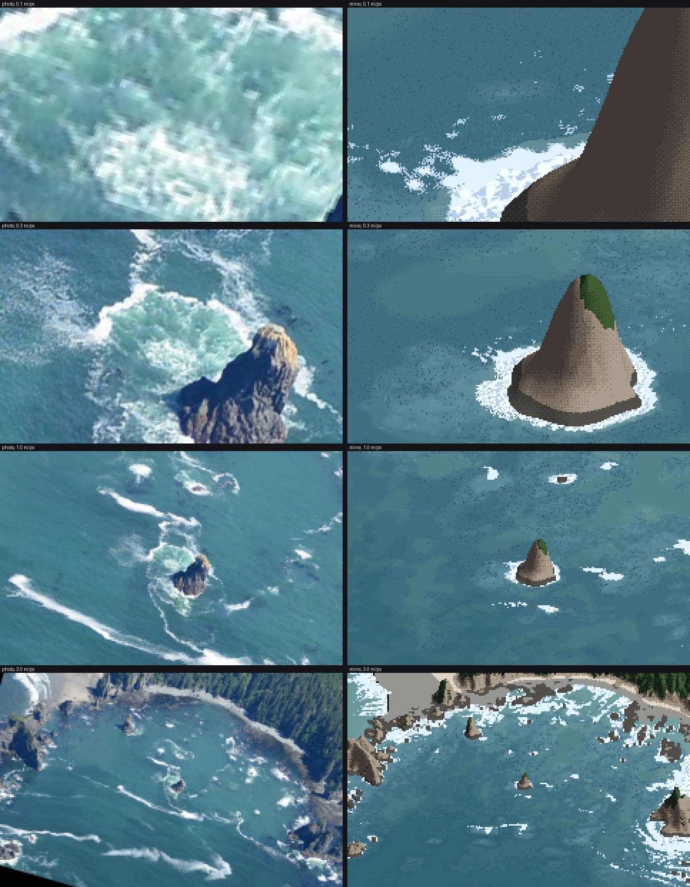
54. elements/sea/stages/s1_poa_lockstep_v3.png 55. elements/sea/stages/s1_poa_shore.png
55. elements/sea/stages/s1_poa_shore.png
Bash: Fix camera up vector; debug aeration near stack
cd ~/work/pixelart-studies/elements/sea/src; sed -i '' 's/ up = np.cross(right, fwd)/ up = -np.cross(right, fwd) # grid coords are left-handed (y south)/' sea/render.py; python3 -c "
import numpy as np
d=np.load('../cache/poa_summer.npz')
A=d['A'].astype(np.float32);W=d['W'].astype(np.float32);F=d['F'].astype(np.float32);L=d['land']
sl=(slice(690,810),slice(660,800))
print('land in box',L[sl].sum()); print('A max',A[sl].max(),'A>0.2 frac',(A[sl]>0.2).mean()); print('W>0.3',(W[sl]>0.3).mean(),'F>0.2',(F[sl]>0.2).mean())
ys,xs=np.nonzero(L[sl]);print('rock centre',ys.mean()+690,xs.mean()+660)
"
# output:
land in box 669
A max 1.0 A>0.2 frac 0.03226190476190476
W>0.3 0.020595238095238094 F>0.2 0.06970238095238095
rock centre 761.288490284006 698.4977578475336Bash: Lower foam threshold, brighter aeration; rerender
cd ~/work/pixelart-studies/elements/sea/src; python3 - <<'EOF'
p=open('sea/paint.py').read()
p=p.replace("thr = 0.18 + 0.62 * fbmw(xa, ya, ecell, 68, 2)","thr = 0.10 + 0.50 * fbmw(xa, ya, ecell, 68, 2)")
open('sea/paint.py','w').write(p)
q=open('sea/pal.py').read()
q=q.replace("AER = [(56, -12, -10), (64, -10, -10), (72, -8, -8)]","AER = [(60, -13, -9), (67, -11, -9), (74, -9, -8)]")
open('sea/pal.py','w').write(q)
s=open('sea/sim.py').read()
s=s.replace(" self.dl = dl"," self.dl = dl; self.facing = nd.gaussian_filter(facing * (dl < 12), 3.0)")
s=s.replace("ca = np.clip(np.exp(-self.dl / 9.0) * (0.3 + 0.7 * (self.collar > 0.05)) * np.clip(Hinst / 0.5, 0, 1.5), 0, 1)",
"ca = np.clip(np.exp(-self.dl / 9.0) * (0.35 + 1.3 * self.facing) * np.clip(Hinst / 0.5, 0, 1.5), 0, 1)")
open('sea/sim.py','w').write(s)
EOF
grep -n "self.facing" sea/sim.py | head; nice python3 lockstep.py 720 750 ../stages/s1_poa_lockstep_v4.png; nice python3 shore.py poa poa_summer.npz 1020 760 270 ../stages/s1_poa_shore.png
# output:
117: self.dl = dl; self.facing = nd.gaussian_filter(facing * (dl < 12), 3.0)
183: ca = np.clip(np.exp(-self.dl / 9.0) * (0.35 + 1.3 * self.facing) * np.clip(Hinst / 0.5, 0, 1.5), 0, 1)
stand (3185.0, 1048, 711, 1.5684514)Read: elements/sea/stages/s1_poa_shore.png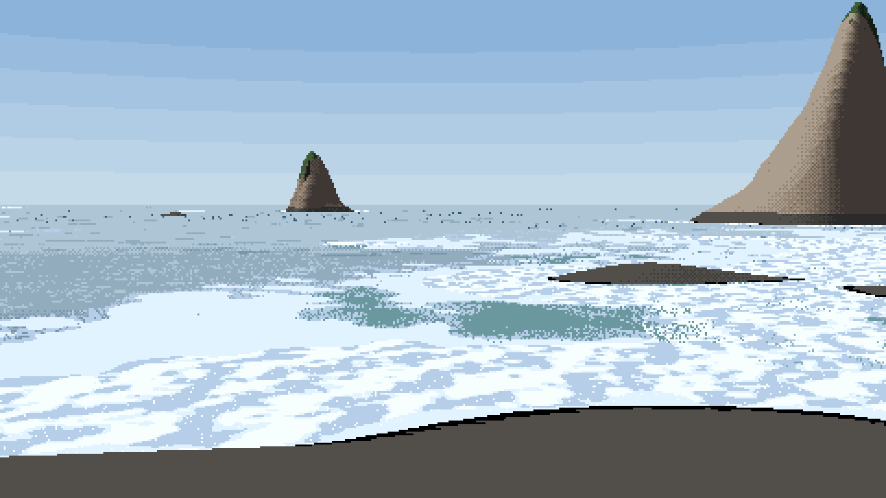
56. elements/sea/stages/s1_poa_shore.pngRead: elements/sea/stages/s1_poa_lockstep_v4.png57. elements/sea/stages/s1_poa_lockstep_v4.png
Bash: Rerun POA sim; persp LOD and swell furrows
cd ~/work/pixelart-studies/elements/sea/src; python3 - <<'EOF'
import json
J=json.load(open('../cache/jobs_poa.json'))
J[0]['params']['sim'].update(current=[0.18,-0.18],long_frac=0.3)
json.dump(J,open('../cache/jobs_poa.json','w'))
EOF
set -a; . ~/work/.env.local; set +a; export MODAL_ENVIRONMENT=main; nohup modal run modal_sim.py --jobs ../cache/jobs_poa.json > ../cache/modal_poa.log 2>&1 &
python3 - <<'EOF'
r=open('~/work/pixelart-studies/elements/sea/src/sea/render.py').read()
r=r.replace(" G['mpp'] = np.nan_to_num(tt, nan=1e3) / f\n G['graze'] = np.degrees(np.arcsin(np.clip(-dz, 1e-4, 1)))",
" G['graze'] = np.degrees(np.arcsin(np.clip(-dz, 1e-4, 1)))\n # LOD footprint: the long axis (along the view, stretched by 1/sin(grazing)) -- features must be\n # >= k px along the view too, or far water turns into Morse rows\n G['mpp_h'] = np.nan_to_num(tt, nan=1e3) / f\n G['mpp'] = G['mpp_h'] / np.maximum(np.sin(np.radians(G['graze'])), 0.02) ** 0.7")
open('~/work/pixelart-studies/elements/sea/src/sea/render.py','w').write(r)
p=open('~/work/pixelart-studies/elements/sea/src/sea/paint.py').read()
p=p.replace(" Fr = np.clip(Fr * 0.85 + 0.03, 0, 1)",""" Fr = np.clip(Fr * 0.85 + 0.03, 0, 1)
# Ruskin's 'few dark continuous furrows': swell faces turned toward the eye mirror higher, darker
# sky; backs turned away mirror the bright horizon. Slope along the view from the crest phase.
qq = np.mod((S['t_now'] - sample(S, G, 'tt')) / S['T'], 1.0)
kxs, kys = sample(S, G, 'kx'), sample(S, G, 'ky')
toward = -(kxs * G['dirx'] + kys * G['diry']) # >0: wave travels toward the viewer
slope = -np.sin(2 * np.pi * qq) * np.clip(sample(S, G, 'H') / 1.2, 0, 2)
Fr = np.clip(Fr * (1 - 0.55 * np.clip(slope * toward, -1, 1)), 0, 1)""")
open('~/work/pixelart-studies/elements/sea/src/sea/paint.py','w').write(p)
EOF
echo ok
# output:
okBash: Wait for sim, render lockstep and shore
until grep -q -E "done ../cache|Traceback \(most recent call last\):\s*$" ~/work/pixelart-studies/elements/sea/cache/modal_poa.log && grep -q "done ../cache" ~/work/pixelart-studies/elements/sea/cache/modal_poa.log; do sleep 10; if grep -q "Error" ~/work/pixelart-studies/elements/sea/cache/modal_poa.log && ! grep -q "done" ~/work/pixelart-studies/elements/sea/cache/modal_poa.log; then grep Error ~/work/pixelart-studies/elements/sea/cache/modal_poa.log | head -3; fi; done; cd ~/work/pixelart-studies/elements/sea/src; nice python3 lockstep.py 720 750 ../stages/s1_poa_lockstep_v5.png; nice python3 shore.py poa poa_summer.npz 1020 760 270 ../stages/s1_poa_shore_v2.png # output: stand (3185.0, 1048, 711, 1.5684514)
Read: elements/sea/stages/s1_poa_lockstep_v5.png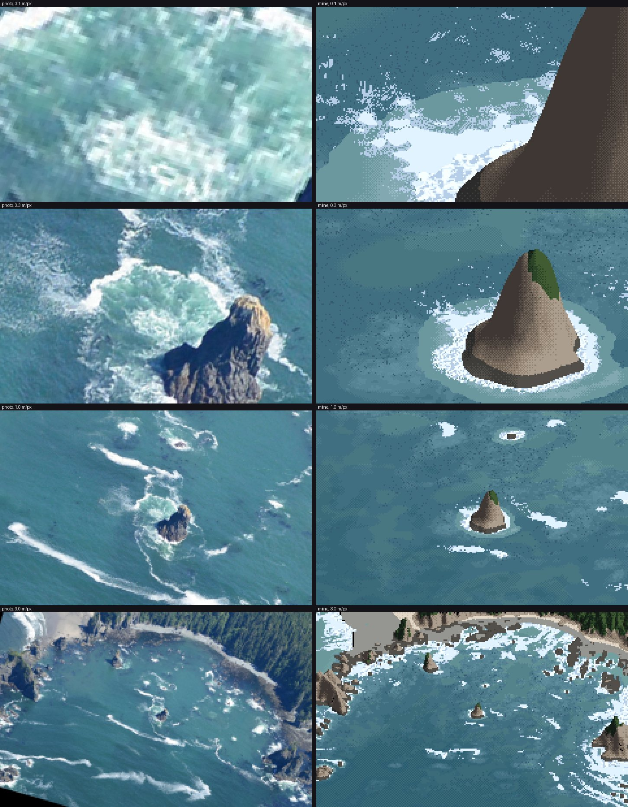
58. elements/sea/stages/s1_poa_lockstep_v5.pngRead: elements/sea/stages/s1_poa_shore_v2.png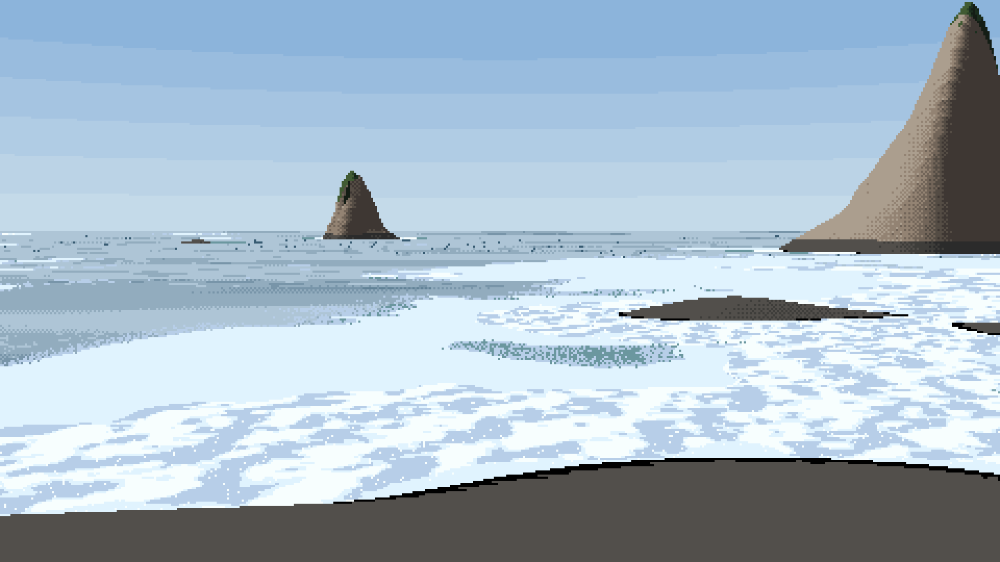
59. elements/sea/stages/s1_poa_shore_v2.pngBash: Lopsided pools, less surf-zone saturation; rerun
cd ~/work/pixelart-studies/elements/sea/src; python3 - <<'EOF'
s=open('sea/sim.py').read()
s=s.replace(" self.dl = dl; self.facing = nd.gaussian_filter(facing * (dl < 12), 3.0)",
" self.dl = dl; self.facing = nd.gaussian_filter(facing * (dl < 12), 3.0)\n self.lobes = np.clip(0.35 + 0.9 * fbm((h, w), 14, seed + 31, octaves=2), 0, 1.4) # pools are lopsided")
s=s.replace("ca = np.clip(np.exp(-self.dl / 9.0) * (0.35 + 1.3 * self.facing) * np.clip(Hinst / 0.5, 0, 1.5), 0, 1)",
"ca = np.clip(np.exp(-self.dl / 9.0) * (0.2 + 1.3 * self.facing) * self.lobes * np.clip(Hinst / 0.5, 0, 1.5), 0, 1)")
s=s.replace("surf = 0.35 * np.clip(waves['Q'] * 4, 0, 1)","surf = 0.2 * np.clip(waves['Q'] * 4, 0, 1)")
s=s.replace("tau_w=8.0, tau_f=450.0,","tau_w=6.0, tau_f=450.0,")
open('sea/sim.py','w').write(s)
EOF
set -a; . ~/work/.env.local; set +a; export MODAL_ENVIRONMENT=main; nohup modal run modal_sim.py --jobs ../cache/jobs_poa.json > ../cache/modal_poa.log 2>&1 & echo ok
# output:
okBash: Add swirl threads in aerated pools
cd ~/work/pixelart-studies/elements/sea/src; python3 - <<'EOF'
p=open('sea/paint.py').read()
p=p.replace(" # ---------------- 6+7. foam as COVERAGE",""" # swirl threads inside the bubble pool (the photo's pool is laced with white filaments), only when the
# threads' cells are >= 5 px, so they never collapse into salt
scell = cq(1.3, mpp, 5.0)
sf1, sf2 = worley(x, y, scell, 88, u / (np.hypot(u, v) + 1e-6), v / (np.hypot(u, v) + 1e-6), 1.8)
swirl = am & (an > 0.45) & (sf2 - sf1 < 0.07 + 0.08 * np.clip(an - 0.45, 0, 1)) & (scell / np.asarray(mpp) >= 5.0)
ramp[swirl] = RID['foam']; step[swirl] = 1
# ---------------- 6+7. foam as COVERAGE""")
open('sea/paint.py','w').write(p)
EOF
echo ok
# output:
okBash: Wait and render all three stage-1 views
until grep -q "done ../cache" ~/work/pixelart-studies/elements/sea/cache/modal_poa.log; do sleep 10; done; cd ~/work/pixelart-studies/elements/sea/src; nice python3 lockstep.py 720 750 ../stages/s1_poa_lockstep_v6.png; nice python3 shore.py poa poa_summer.npz 1020 760 270 ../stages/s1_poa_shore_v3.png; nice python3 stage1.py 1.0 ../stages/s1_poa_iso_v8.png poa_summer.npz # output: stand (3185.0, 1048, 711, 1.5684514) t 7.544016122817993
Read: elements/sea/stages/s1_poa_lockstep_v6.pngRead: elements/sea/stages/s1_poa_shore_v3.png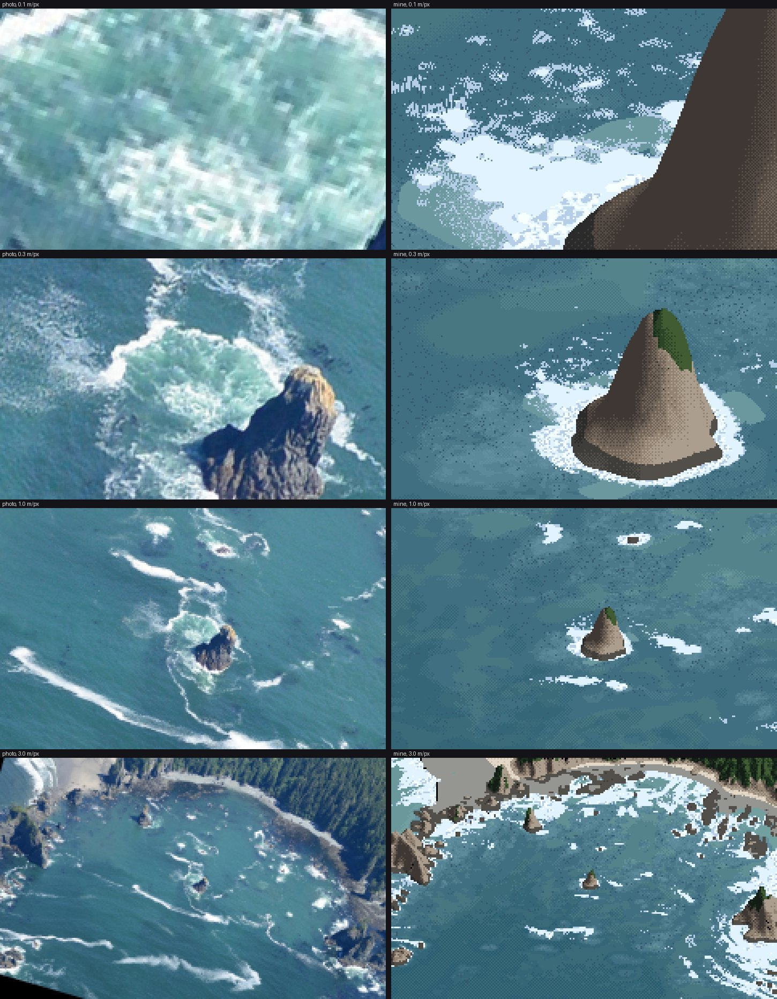
60. elements/sea/stages/s1_poa_lockstep_v6.png61. elements/sea/stages/s1_poa_shore_v3.png
Bash: Collar only on steep rock; rerun both places
cd ~/work/pixelart-studies/elements/sea/src; python3 - <<'EOF'
s=open('sea/sim.py').read()
s=s.replace(" self.collar = (np.exp(-dl / 1.8) * (0.05 + 0.95 * facing) * (dl < 6)).astype(np.float32)",
""" # only steep rock surges and bursts; a beach or a low platform gets swash, not a collar
zz = np.nan_to_num(z, nan=-30.0); gyz, gxz = np.gradient(zz)
slope = np.hypot(gxz, gyz) * self.land
steep = np.clip((nd.maximum_filter(slope, 7) - 0.35) / 0.6, 0, 1)
self.collar = (np.exp(-dl / 1.8) * (0.05 + 0.95 * facing) * steep * (dl < 6)).astype(np.float32)""")
open('sea/sim.py','w').write(s)
import json
J=json.load(open('../cache/jobs_s1.json')); P=json.load(open('../cache/jobs_poa.json'))
J[0]=P[0]; J[1]['params']['sim'].update(long_frac=0.3,shed=7.5)
json.dump(J,open('../cache/jobs_s1.json','w'))
EOF
set -a; . ~/work/.env.local; set +a; export MODAL_ENVIRONMENT=main; nohup modal run modal_sim.py --jobs ../cache/jobs_s1.json > ../cache/modal_s1.log 2>&1 & echo ok
# output:
okAgent: Cold critic on sea lockstepBash: Add wind whitecaps and windrows to sim
cd ~/work/pixelart-studies/elements/sea/src; python3 - <<'EOF'
s=open('sea/sim.py').read()
# whitecaps in the step loop, before decay block uses W
s=s.replace(""" src = brk & passed
""",""" src = brk & passed
if self.wc_cov > 0:
W = np.maximum(W, self.whitecaps(rng, dt))
""")
s=s.replace(""" def crest_break(self, t):""",""" def whitecaps(self, rng, dt):
\"\"\"wind-sea breaking in deep water (Beaufort 4+). Coverage from Monahan & O'Muircheartaigh (1980):
W = 3.84e-6 U^3.41 (U = 10 m wind, m/s): 5 m/s -> 0.09%, 10 m/s -> 1%, 17 m/s -> 6%, 22 m/s -> 14%.
Each whitecap is a short dash along the wind, 2-8 m, lasting ~tau_w.\"\"\"
h, w = self.d.shape
P = self.params
# steady coverage = rate * tau * area: rate per m^2 per s
area = 6.0
rate = self.wc_cov / (P['tau_w'] * area)
n = rng.poisson(rate * dt * h * w)
out = np.zeros((h, w), np.float32)
if n == 0: return out
x0 = rng.random(n) * w; y0 = rng.random(n) * h
L = rng.uniform(2, 8, n)
for f in np.linspace(-0.5, 0.5, 7):
xs = np.clip((x0 + f * L * self.wdir[0]).astype(int), 0, w - 1)
ys = np.clip((y0 + f * L * self.wdir[1]).astype(int), 0, h - 1)
out[ys, xs] = 1.0
out = np.clip(nd.gaussian_filter(out, 0.6) * 3.0, 0, 1)
return np.where((self.d > 3) & ~self.land, out, 0)
def crest_break(self, t):""")
# init: wind params
s=s.replace(""" self.params = dict(tau_w=tau_w,""",""" U = float(np.hypot(*wind)); self.U = U
self.wdir = (wind[0] / (U + 1e-9), wind[1] / (U + 1e-9))
self.wc_cov = 3.84e-6 * U ** 3.41 if U > 3 else 0.0
self.params = dict(tau_w=tau_w,""")
# windrows in particle advection
s=s.replace(""" px = px + uu * dt + rng.normal(0, sd, px.size); py = py + vv * dt + rng.normal(0, sd, px.size)""",""" if self.U > 5:
# Langmuir windrows: surface convergence into lines along the wind, spacing ~ 25 m
nxp, nyp = -self.wdir[1], self.wdir[0]
sperp = px * nxp + py * nyp
vc = -0.004 * self.U * np.sin(2 * np.pi * sperp / P.get('windrow', 25.0))
uu = uu + vc * nxp; vv = vv + vc * nyp
px = px + uu * dt + rng.normal(0, sd, px.size); py = py + vv * dt + rng.normal(0, sd, px.size)""")
open('sea/sim.py','w').write(s)
EOF
python3 -c "
import sys;sys.path.insert(0,'.')
import sea.sim"; echo compiled
# output:
compiledBash: Add Cox-Munk sun glitter to painter
cd ~/work/pixelart-studies/elements/sea/src; python3 - <<'EOF'
p=open('sea/paint.py').read()
p=p.replace(" return ramp, step, dict(q=q,",""" # ---------------- 9. sun glitter (Cox & Munk 1954): facets tilted to mirror the sun into the eye --------
if P.get('sun_el', 50) > -1 and P.get('glitter', 1.0) > 0:
sel, saz = np.radians(P['sun_el']), np.radians(P['sun_az'])
sv = np.array([np.sin(saz) * np.cos(sel), -np.cos(saz) * np.cos(sel), np.sin(sel)])
if 'dirx' in G:
dxv, dyv, dzv = G['dirx'], G['diry'], G['dz']
else:
e = np.radians(cam.elev); fx, fy = -cam.V[0], -cam.V[1]
dxv = np.full(x.shape, fx * np.cos(e)); dyv = np.full(x.shape, fy * np.cos(e)); dzv = np.full(x.shape, -np.sin(e))
hx, hy, hz = sv[0] - dxv, sv[1] - dyv, sv[2] - dzv
hn = np.sqrt(hx * hx + hy * hy + hz * hz) + 1e-9
cth = np.clip(hz / hn, 1e-3, 1); tan2 = (1 - cth * cth) / (cth * cth)
U = P.get('wind_speed', 3.0); s2 = 0.003 + 0.00512 * U
pg = np.exp(-tan2 / s2) * P.get('glitter', 1.0)
gcell = cq(0.8, mpp, 1.0)
hsh = hash2(np.floor(x / gcell), np.floor(y / gcell * 2.5), 123)
gl = sea & (hsh < pg * 0.35) & ~(ramp == RID['foam'])
ramp[gl] = RID['glint']; step[gl] = 0
gl2 = sea & (hsh < pg * 0.8) & ~gl & ~(ramp == RID['foam']) & (ramp != RID['kelp'])
step[gl2] = np.minimum(step[gl2] + 2, 6)
return ramp, step, dict(q=q,""")
open('sea/paint.py','w').write(p)
EOF
echo ok
# output:
okBash: Apply critic fixes: aeration colour, smooth bands, kelp clumps
cd ~/work/pixelart-studies/elements/sea/src; python3 - <<'EOF'
q=open('sea/pal.py').read()
q=q.replace("AER = [(60, -13, -9), (67, -11, -9), (74, -9, -8)]","AER = [(62, -16, -7), (70, -17, -5), (77, -16, -4)] # photo's churned pool ~ #8cc8c0")
q=q.replace("SEA_DEEP = (34, -11, -16)","SEA_DEEP = (36, -13, -17)")
open('sea/pal.py','w').write(q)
p=open('sea/paint.py').read()
# smooth depth for banding: broad gradient, not camouflage
p=p.replace(" lnd = np.log(np.maximum(d, 0.05))"," dsm = sample(S, G, 'depth_s') if 'depth_s' in S else d\n lnd = np.log(np.maximum(dsm, 0.05))")
p=p.replace(" vis = np.exp(-d / 3.0) * (rock > 0.4)"," vis = np.exp(-d / 3.0) * (rock > 0.4) * (np.asarray(mpp) < 0.5)")
# kelp specks as small clumps in groups
p=p.replace(" speck_cell = cq(1.5, mpp, 1.5)\n"," speck_cell = cq(2.5, mpp, 4.0)\n")
p=p.replace("sp = sea & ~km & (krho > 0.03) & (sf1 < 0.06 + 0.35 * krho)","grp = fbmw(x, y, 18.0, 45, 2) > 0.55 # specks come in groups\n sp = sea & ~km & grp & (krho > 0.03) & (sf1 < 0.10 + 0.45 * krho)")
open('sea/paint.py','w').write(p)
s=open('sea/scene.py').read()
s=s.replace(" S['rock_s'] = nd.gaussian_filter(S['rock'], 3.0)"," S['rock_s'] = nd.gaussian_filter(S['rock'], 3.0)\n S['depth_s'] = nd.gaussian_filter(S['depth'], 6.0)")
open('sea/scene.py','w').write(s)
EOF
echo ok
# output:
okBash: Crest-aligned foam edges; render after sims finish
cd ~/work/pixelart-studies/elements/sea/src; python3 - <<'EOF'
p=open('sea/paint.py').read()
p=p.replace(" xa = (x * (u / un) + y * (v / un)) / P['lace_stretch']; ya = -x * (v / un) + y * (u / un)",
""" # foam lines are remnants of broken crests: their edges run along the crest (perpendicular to k)
kxs_, kys_ = sample(S, G, 'kx'), sample(S, G, 'ky')
tx_, ty_ = -kys_, kxs_
xa = (x * tx_ + y * ty_) / P['lace_stretch']; ya = -x * ty_ + y * tx_""")
open('sea/paint.py','w').write(p)
EOF
until grep -q "done ../cache/alava" ~/work/pixelart-studies/elements/sea/cache/modal_s1.log; do sleep 10; done; nice python3 lockstep.py 720 750 ../stages/s1_poa_lockstep_v7.png; nice python3 shore.py poa poa_summer.npz 1020 760 270 ../stages/s1_poa_shore_v4.png
# output:
stand (3185.0, 1048, 711, 1.5684514)Read: elements/sea/stages/s1_poa_lockstep_v7.png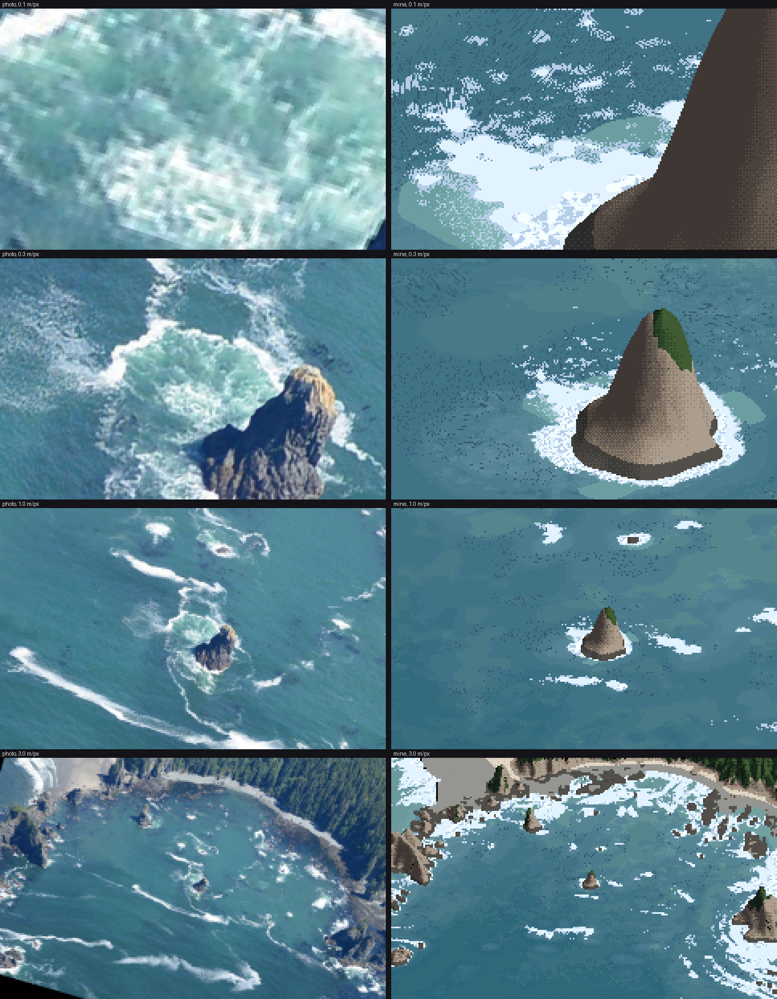
62. elements/sea/stages/s1_poa_lockstep_v7.pngRead: elements/sea/stages/s1_poa_shore_v4.png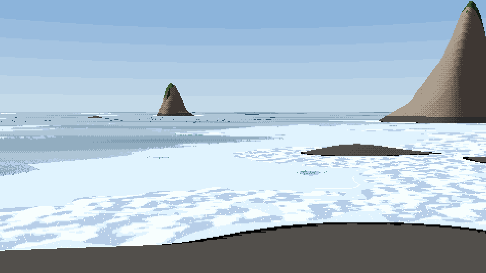
63. elements/sea/stages/s1_poa_shore_v4.pngBash: Inspect fields in front of beach stand point
cd ~/work/pixelart-studies/elements/sea/src; python3 -c "
import numpy as np
d=np.load('../cache/poa_summer.npz')
for k in ['W','F','A','brk','H','Q']:
a=d[k].astype(np.float32)[700:725,960:1048]; print(k, a.mean(axis=0)[::8].round(2))
import sys;sys.path.insert(0,'.')
from sea.place import load
P=load('poa');print('depth',np.nan_to_num(P['depth'][700:725,960:1048]).mean(0)[::8].round(1))
"
# output:
W [0. 0. 0. 0.09 0.01 0.01 0.03 0.14 0.2 0.39 0.17]
F [0.49 0.91 1.24 1.94 1.05 0.55 1.59 1.2 1.94 2.41 1.25]
A [0. 0. 0.01 0.21 0.08 0.08 0.24 0.18 0.35 0.52 0.22]
brk [0. 0. 0. 0.12 0. 0. 0. 0.16 0.32 0.6 0.28]
H [0.49 0.5 0.51 0.54 0.54 0.56 0.63 0.48 0.58 0.61 0.16]
Q [0. 0. 0. 0.02 0.03 0.07 0.29 0.23 0.58 0.76 0.17]
depth [ 2.6 2.3 2.2 2.1 1.6 1.6 1.3 0.7 0.9 0.7 -0.1]Bash: Calibrate foam coverage against photo white fraction
cd ~/work/pixelart-studies/elements/sea/src; python3 - <<'EOF'
p=open('sea/paint.py').read()
p=p.replace(" Fe = np.clip(Ff, 0, 2)\n"," Fe = 1 - np.exp(-np.clip(Ff, 0, 6) * P.get('foam_gain', 0.5)) # count density -> coverage\n")
open('sea/paint.py','w').write(p)
EOF
cat > calib.py <<'EOF'
import sys; sys.path.insert(0,'.')
import numpy as np
from sea.scene import scene
from sea.render import Cam
from stage1 import render, photo_view
from lockstep import photo_at
from lab import srgb_to_lab
P,S,zl=scene('poa','poa_summer.npz'); Hm=np.load('../notes/H_poa.npy')
cam=Cam(cx=720,cy=750,mpp=1.0,W=480,H=300,yaw=90,elev=30,zc=0.45)
ph=photo_at(Hm,720,750,1.0,480,300)
Lp=srgb_to_lab(ph.astype(float))[...,0]; v=ph.sum(2)>0
for g in [float(a) for a in sys.argv[1:]]:
rgb,G=render(S,zl,cam,params=dict(foam_gain=g))
Lm=srgb_to_lab(rgb.astype(float))[...,0]; m=v&G['sea']
print(g,'white photo',round((Lp[m]>75).mean(),3),'mine',round((Lm[m]>75).mean(),3))
EOF
nice python3 calib.py 0.15 0.3 0.5
# output:
0.15 white photo 0.046 mine 0.029
0.3 white photo 0.046 mine 0.047
0.5 white photo 0.046 mine 0.065Bash: Displaced water surface for eye-level view; render
cd ~/work/pixelart-studies/elements/sea/src; sed -i '' "s/Fe = 1 - np.exp(-np.clip(Ff, 0, 6) \* P.get('foam_gain', 0.5))/Fe = 1 - np.exp(-np.clip(Ff, 0, 6) * P.get('foam_gain', 0.3))/" sea/paint.py; python3 - <<'EOF'
s=open('sea/scene.py').read()
s=s.replace(" zland = np.nan_to_num",""" S['eta'] = eta_field(S)
zland = np.nan_to_num""")
s+='''
def eta_field(S):
"""sea-surface elevation now (m, about still water), 1 m grid: each crest's own height, a Stokes-sharpened
profile, flattened where broken (bores are lower and flat-topped)."""
T = S['T']; q = np.mod((S['t_now'] - S['tt']) / T, 1.0)
a = 0.5 * S['Hinst']
ph = 2 * np.pi * q
prof = np.cos(ph) + 0.35 * (np.cos(2 * ph) - 0.3) # peaked crests, long flat troughs
brk = S['brkf'] > 0.5
prof = np.where(brk, np.clip(prof, -1, 0.6), prof)
d = S['depth']
return (a * prof * np.clip(d / 0.8, 0, 1)).astype(np.float32)
'''
open('sea/scene.py','w').write(s)
r=open('sea/render.py').read()
r=r.replace("def persp_gbuffer(cam, zgrid, sea_level=0.0, max_dist=4000.0, step0=0.25):",
"def persp_gbuffer(cam, zgrid, sea_level=0.0, max_dist=4000.0, step0=0.25, eta=None, depth=None):")
r=r.replace(""" # march terrain (geometric steps) until tsea
zz = np.nan_to_num(zgrid, nan=-50.0); h, w = zz.shape""",""" # march terrain (geometric steps) until tsea
zz = np.nan_to_num(zgrid, nan=-50.0); h, w = zz.shape
if eta is not None:
# the water surface is a heightfield too: swell faces occlude the water behind them
wet = np.nan_to_num(depth, nan=30.0) > 0
zw = np.where(wet, np.maximum(zz, sea_level + eta), zz)
iswater = wet & (sea_level + eta > zz)
tsea = np.full((H, W), np.inf)""")
r=r.replace(""" zt = np.where(inside, bilinear(zz, x, y), -50)
hit = (zt > zr) & np.isinf(thit) & (t < tsea)
thit = np.where(hit, t, thit)""",""" if eta is not None:
zt = np.where(inside, bilinear(zw, x, y), np.where(zr > sea_level, -50, 1e9))
hit = (zt > zr) & np.isinf(thit) & np.isinf(tsea)
xi = np.clip(x, 0, w - 1).astype(int); yi = np.clip(y, 0, h - 1).astype(int)
hw = hit & (~inside | iswater[yi, xi])
tsea = np.where(hw, t, tsea); thit = np.where(hit & ~hw, t, thit)
else:
zt = np.where(inside, bilinear(zz, x, y), -50)
hit = (zt > zr) & np.isinf(thit) & (t < tsea)
thit = np.where(hit, t, thit)""")
r=r.replace(" if (t > np.minimum(tsea, max_dist)).all(): break"," if (t > np.minimum(np.minimum(tsea, thit), max_dist)).all(): break")
r=r.replace(""" G['graze'] = np.degrees(np.arcsin(np.clip(-dz, 1e-4, 1)))
""",""" G['graze'] = np.degrees(np.arcsin(np.clip(-dz, 1e-4, 1)))
if eta is not None:
gye, gxe = np.gradient(eta)
ex = -bilinear(gxe, G['x'], G['y']); ey = -bilinear(gye, G['x'], G['y']); en = np.sqrt(ex * ex + ey * ey + 1)
cosi = -(dx * ex + dy * ey + dz) / en # cos of incidence on the tilted facet
G['graze'] = np.where(sea, np.degrees(np.arcsin(np.clip(cosi, 1e-4, 1))), G['graze'])
""",1)
open('sea/render.py','w').write(r)
sh=open('shore.py').read()
sh=sh.replace(" G=persp_gbuffer(cam,zl,sea_level=tide)"," G=persp_gbuffer(cam,zl,sea_level=tide,eta=S.get('eta'),depth=S['depth'])")
open('shore.py','w').write(sh)
EOF
grep -n "mpp_h\|G\['graze'\]" sea/render.py | head; nice python3 shore.py poa poa_summer.npz 1020 760 270 ../stages/s1_poa_shore_v5.png
# output:
126: G['graze'] = np.degrees(np.arcsin(np.clip(-dz, 1e-4, 1)))
131: G['graze'] = np.where(sea, np.degrees(np.arcsin(np.clip(cosi, 1e-4, 1))), G['graze'])
134: G['mpp_h'] = np.nan_to_num(tt, nan=1e3) / f
135: G['mpp'] = G['mpp_h'] / np.maximum(np.sin(np.radians(G['graze'])), 0.02) ** 0.7
stand (3185.0, 1048, 711, 1.5684514)Bash: Use geometric grazing for LOD; rerender shore
cd ~/work/pixelart-studies/elements/sea/src; python3 - <<'EOF'
r=open('sea/render.py').read()
r=r.replace(" G['graze'] = np.degrees(np.arcsin(np.clip(-dz, 1e-4, 1)))\n if eta"," G['graze'] = np.degrees(np.arcsin(np.clip(-dz, 1e-4, 1))); G['graze_geo'] = G['graze'].copy()\n if eta",1)
r=r.replace("np.maximum(np.sin(np.radians(G['graze'])), 0.02) ** 0.7","np.maximum(np.sin(np.radians(G['graze_geo'])), 0.02) ** 0.7")
open('sea/render.py','w').write(r)
EOF
nice python3 shore.py poa poa_summer.npz 1020 760 270 ../stages/s1_poa_shore_v5.png
# output:
stand (3185.0, 1048, 711, 1.5684514)Read: elements/sea/stages/s1_poa_shore_v5.png 64. elements/sea/stages/s1_poa_shore_v5.png
64. elements/sea/stages/s1_poa_shore_v5.png
Bash: Bisection refine hits; rerender
cd ~/work/pixelart-studies/elements/sea/src; python3 - <<'EOF'
r=open('sea/render.py').read()
r=r.replace(""" t = t + np.maximum(step0, t * 0.01)
if (t > np.minimum(np.minimum(tsea, thit), max_dist)).all(): break""",""" t = t + np.maximum(step0, t * 0.01)
if (t > np.minimum(np.minimum(tsea, thit), max_dist)).all(): break
if eta is not None:
# refine every hit by bisection (kills the stair-step columns of a fixed-step march)
th = np.minimum(tsea, thit); fin = np.isfinite(th)
hi = np.where(fin, th, 0); lo = np.where(fin, np.maximum(hi - np.maximum(step0, hi * 0.01), 0.1), 0)
for _ in range(7):
mid = 0.5 * (lo + hi)
x = cam.x + dx * mid; y = cam.y + dy * mid; zr = cam.z + dz * mid
zt = bilinear(zw, x, y)
above = zt > zr
hi = np.where(fin & above, mid, hi); lo = np.where(fin & ~above, mid, lo)
tsea = np.where(np.isfinite(tsea), hi, tsea); thit = np.where(np.isfinite(thit), hi, thit)""")
open('sea/render.py','w').write(r)
EOF
nice python3 shore.py poa poa_summer.npz 1020 760 270 ../stages/s1_poa_shore_v6.png
# output:
stand (3185.0, 1048, 711, 1.5684514)Read: elements/sea/stages/s1_poa_shore_v6.png 65. elements/sea/stages/s1_poa_shore_v6.png
65. elements/sea/stages/s1_poa_shore_v6.png
Bash: Launch 9-job sea-state sweep on Modal
cd ~/work/pixelart-studies/elements/sea/src; python3 - <<'EOF'
import json
states={'calm':dict(w=dict(Hs=0.6,T=7.0,dir_from=275),s=dict(wind=[0.0,0.0],current=[0.05,-0.15],kelp_amount=1.0)),
'swell':dict(w=dict(Hs=1.6,T=8.3,dir_from=281),s=dict(wind=[1.0,2.0],current=[0.05,-0.25],kelp_amount=0.8)),
'storm':dict(w=dict(Hs=5.5,T=14.0,dir_from=250),s=dict(wind=[-10.0,-15.0],current=[-0.1,-0.4],kelp_amount=0.1))}
places={'poa':0.25,'alava':1.0,'kala':0.5}
J=[]
for p,km in places.items():
for st,c in states.items():
w=dict(c['w'],smooth=8.0); s=dict(c['s'],n_periods=60 if st!='storm' else 40,steps_per_T=8,tide=0.45,long_frac=0.3,shed=7.5)
s['kelp_amount']=s['kelp_amount']*km
J.append(dict(input=f'../cache/in_{p}.npz',output=f'../cache/{p}_{st}.npz',params=dict(waves=w,sim=s)))
json.dump(J,open('../cache/jobs_sweep.json','w'),indent=0)
print(len(J))
EOF
set -a; . ~/work/.env.local; set +a; export MODAL_ENVIRONMENT=main; nohup modal run modal_sim.py --jobs ../cache/jobs_sweep.json > ../cache/modal_sweep.log 2>&1 & echo ok
# output:
9
okBash: Write sweep sheet generator
cd ~/work/pixelart-studies/elements/sea/src; cat > sheets.py <<'EOF'
"""Labelled sweep sheets. Each panel = one (place, sea state, light, view)."""
import sys, os; sys.path.insert(0,'.')
import numpy as np
from PIL import Image, ImageDraw
from sea.scene import scene
from sea.render import Cam
from sea.pal import LIGHTS
from stage1 import render
from shore import render_shore, find_stand
from sea.render import PerspCam
T = {'calm':7.0,'swell':8.3,'storm':14.0,'summer':8.3}
WIND = {'calm':1.0,'swell':3.0,'storm':18.0,'summer':3.0}
ISO_C = {'poa':(720,750),'alava':(430,700),'kala':(380,800)}
STAND = {'poa':(1020,760,270),'alava':(470,760,265),'kala':(470,820,265)}
_cache = {}
def get(place, state):
k=(place,state)
if k not in _cache:
_cache.clear(); _cache[k]=scene(place,f'{place}_{state}.npz',T=T[state])
return _cache[k]
def params(light, state):
L=LIGHTS[light]
return dict(sun_az=L['sun_az'], sun_el=L['sun_el'], glitter=1.0 if L['direct']>0 else 0.0, wind_speed=WIND[state])
def panel(place, state, light, view, W=240, H=150):
P,S,zl=get(place,state)
if view.startswith('iso'):
mpp=float(view[3:]); cx,cy=ISO_C[place]
cam=Cam(cx=cx,cy=cy,mpp=mpp,W=W,H=H,yaw=90,elev=30,zc=0.45)
rgb,G=render(S,zl,cam,light=light,params=params(light,state))
else:
x,y,hd=STAND[place]; z=np.nan_to_num(P['z'],nan=-40); b=find_stand(z,x,y)
cam=PerspCam(b[1],b[2],b[3]+1.7,hd,pitch=-3.0,hfov=55,W=W,H=H)
rgb,G=render_shore(S,zl,cam,light)
return rgb
def sheet(rows, cols, cellfn, rlab, clab, title, out, k=2, W=240, H=150):
lw=110; th=24
im=Image.new('RGB',(lw+len(cols)*(W*k+6),th+len(rows)*(H*k+18)),(18,18,22)); d=ImageDraw.Draw(im)
d.text((6,6),title,fill=(235,235,235))
for j,c in enumerate(cols): d.text((lw+j*(W*k+6)+4,th-2),clab(c),fill=(200,200,200))
for i,r in enumerate(rows):
y=th+10+i*(H*k+18); d.text((4,y+H*k//2),rlab(r),fill=(220,220,220))
for j,c in enumerate(cols):
rgb=cellfn(r,c)
im.paste(Image.fromarray(rgb).resize((W*k,H*k),Image.NEAREST),(lw+j*(W*k+6),y))
im.save(out)
im.save(out)
if __name__=='__main__':
which=sys.argv[1]
if which=='A': # sea state x place (depth/bottom) in the iso 1 m/px view, sun
places=['kala','poa','alava']; names={'kala':'Kalaloch: sand','poa':'P. of Arches: rock reef','alava':'Cape Alava: kelp'}
states=['calm','swell','storm']
for view in ['iso1','iso3','shore']:
order=[(p,s) for p in places for s in states]
sheet(states, places, lambda s,p: panel(p,s,'sun',view), lambda s:s, lambda p:names[p],
f'Sheet A: sea state x bottom, view {view}, sun (rows: calm Hs 0.6 m/7 s, swell 1.6 m/8.3 s, storm 5.5 m/14 s + 18 m/s wind)',
f'../sheets/A_state_x_bottom_{view}.png')
if which=='B': # light x view at swell
lights=['sun','overcast','golden','dusk','fog']; views=['iso1','iso3','shore']
for place in sys.argv[2:] or ['poa']:
sheet(lights, views, lambda l,v: panel(place,'swell',l,v), lambda l:l, lambda v:v,
f'Sheet B: weather and hour x view, {place}, swell (same index canvas, palette relit)', f'../sheets/B_light_x_view_{place}.png')
EOF
mkdir -p ../sheets; echo ok
# output:
okBash: Wait for sweep sims
until [ $(grep -c "done ../cache" ~/work/pixelart-studies/elements/sea/cache/modal_sweep.log) -ge 9 ] || grep -q "App completed\|Stopping app" ~/work/pixelart-studies/elements/sea/cache/modal_sweep.log; do sleep 15; done; grep -E "^done|Error:" ~/work/pixelart-studies/elements/sea/cache/modal_sweep.log | head -20; du -sh ~/work/pixelart-studies/elements/sea/cache # output: Command did not complete within its 600s timeout and was moved to the background (ID: b4v73kmvr). Output is being written to: (tmp) You will be notified when it completes. To check interim output, use Read on that file path.
Meanwhile I'll write the observation half's remaining sections.
Bash: Append light/weather/wind observation
cd ~/work/pixelart-studies/elements/sea; cat >> LESSONS.md <<'EOF' ### 1.5 Light, weather and hour (how the sea's colour moves) The water pixel is body + mirror (the water study's rule 1.1, which I keep): `colour = body × irradiance × sun tint + F_eff × sky`. I calibrate the *body* from the sunny photos (1.2) by subtracting the sunny sky's reflection, then relight (`src/sea/pal.py`): | state | irradiance (vs. sunny afternoon) | F_eff | what happens | |---|---|---|---| | sun, 14:30 summer | 1.0 | 0.06 | depth and bottom read strongly; foam blue-white with lit/shaded lumps | | overcast | 0.40 | 0.09 | the grey sky mirror dominates; depth bands shrink to 2–3 values; foam is only a little above the water and has no lit side | | golden (sun 9°) | 0.42, warm | 0.07 | foam lit sides turn peach, shadow sides take the sky; water loses its green | | dusk (sun −2°) | 0.10 | 0.09 | body gone: the sea is the sky's mirror, violet-grey; foam is barely lighter than water | | fog / marine layer | 0.45 + veil 45% | 0.10 | a flat pale field; only near foam and kelp keep value | Photographic facts behind the table: the 10:40 morning 2002 obliques (sun low in the east-southeast, camera looking west) have no colour at all over the cove — a silver sheet of glitter; under the August 2016 afternoon sun the same cove is saturated teal. Sun glitter follows Cox & Munk (1954): facet slope variance σ² = 0.003 + 0.00512·U (U wind at 12.5 m, m/s); a pixel glints when the facet that mirrors the sun into the eye is within ~1σ of the mean. ### 1.6 Wind sea: whitecaps and windrows - Whitecap coverage (Monahan & O'Muircheartaigh 1980): W = 3.84×10⁻⁶ U^3.41 — 0.1% at 5 m/s, 1% at 10 m/s, 6% at 17 m/s, 14% at 22 m/s. Beaufort 4 (5.5–8 m/s) is "fairly frequent white horses"; 6 (11–14 m/s) "white foam crests everywhere"; 8 (17–21 m/s) "foam blown in well-marked streaks along the wind". - Windrows (Langmuir circulation): foam and kelp wrack collect in lines parallel to the wind, spaced roughly 10–50 m, once the wind exceeds ~3–5 m/s. In the sim, a transverse convergence velocity 0.004·U·sin(2πs/25 m) herds the foam particles into them. ### 1.7 What differs in the San Juans (for that lane; not yet painted) No ocean swell reaches the inner islands; the sea state is wind chop over 5–30 km fetches and tidal current (Cattle Pass 3–5 kt). The foam vocabulary is the water study's tide rips: convergence lines, boils, eddy lines, not surf. Kelp beds sit off points and bend with the current (canopy shrinks 35%/m of tide rise in current). Colour: deeper channels (100–300 m) so darker, bluer water; turbid green after spring freshets. The obliques at `voxsim-data/places/sanjuan/obliques` (667 frames) show mostly smooth water with current lines and kelp; a lane could run my sim with current only (Hs ≈ 0) and a tidal current field. EOF echo ok # output: ok
Bash: Wait for all sweep jobs
until [ $(grep -c "^done ../cache" ~/work/pixelart-studies/elements/sea/cache/modal_sweep.log) -ge 9 ] || grep -q "Stopping app" ~/work/pixelart-studies/elements/sea/cache/modal_sweep.log; do sleep 15; done; grep -E "^done|Error:" ~/work/pixelart-studies/elements/sea/cache/modal_sweep.log | head -20 # output: Command running in background with ID: bhr46bn6r. Output is being written to: (tmp) You will be notified when it completes. To check interim output, use Read on that file path.
Bash: Block until sweep finishes
until [ $(grep -c "^done ../cache" ~/work/pixelart-studies/elements/sea/cache/modal_sweep.log) -ge 9 ] || grep -q "Stopping app" ~/work/pixelart-studies/elements/sea/cache/modal_sweep.log; do sleep 15; done; grep -c "^done" ~/work/pixelart-studies/elements/sea/cache/modal_sweep.log; grep -E "Error" ~/work/pixelart-studies/elements/sea/cache/modal_sweep.log | head # output: 9 RuntimeError: aclose(): asynchronous generator is already running
Bash: Prune cache; render sheet A in background
cd ~/work/pixelart-studies/elements/sea; rm -f cache/poa_waves.npz cache/poa_state.npz cache/poa_parts.npz cache/alava_summer.npz; du -sh cache; cd src; nohup sh -c "nice python3 sheets.py A > ../cache/sheetA.log 2>&1; echo DONE >> ../cache/sheetA.log" >/dev/null 2>&1 & echo ok # output: 549M cache ok
Bash: Wait for sheet A
until grep -q -E "DONE|Traceback" ~/work/pixelart-studies/elements/sea/cache/sheetA.log; do sleep 10; done; tail -5 ~/work/pixelart-studies/elements/sea/cache/sheetA.log; ls ~/work/pixelart-studies/elements/sea/sheets
# output:
File "~/work/pixelart-studies/elements/sea/src/sheets.py", line 32, in panel
cam=PerspCam(b[1],b[2],b[3]+1.7,hd,pitch=-3.0,hfov=55,W=W,H=H)
~^^^
TypeError: 'NoneType' object is not subscriptable
DONE
A_state_x_bottom_iso1.png
A_state_x_bottom_iso3.pngRead: elements/sea/sheets/A_state_x_bottom_iso1.png 66. elements/sea/sheets/A_state_x_bottom_iso1.png
66. elements/sea/sheets/A_state_x_bottom_iso1.png
Read: elements/sea/sheets/A_state_x_bottom_iso3.png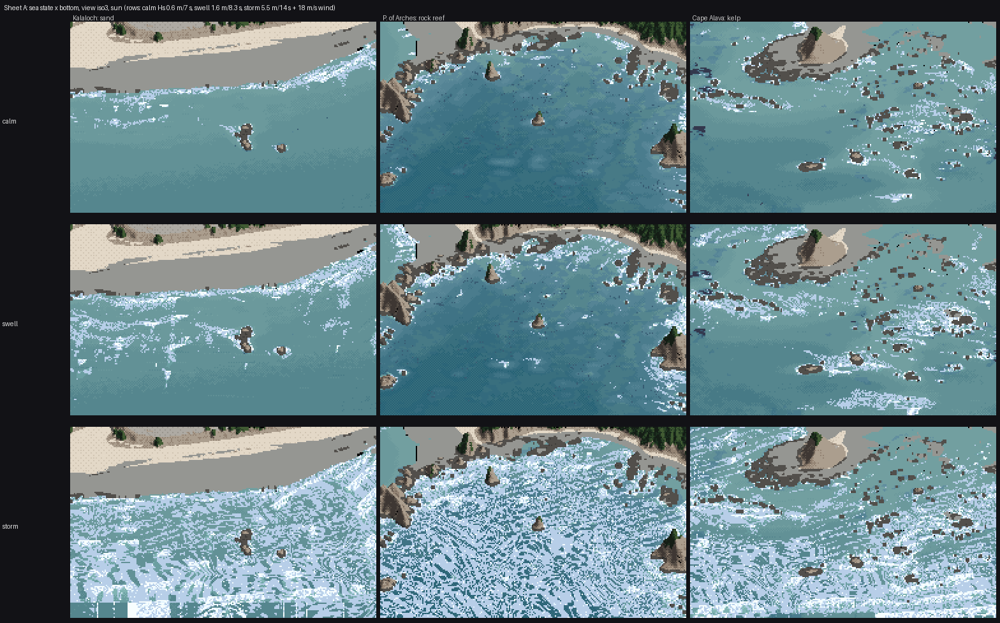
67. elements/sea/sheets/A_state_x_bottom_iso3.pngBash: Check kelp fields at Cape Alava
cd ~/work/pixelart-studies/elements/sea/src; python3 -c "
import numpy as np
for n in ['alava_calm','poa_calm']:
d=np.load(f'../cache/{n}.npz'); k=d['kelp'].astype(float); r=d['kelp_rho'].astype(float); rock=d['rock'].astype(float)
print(n,'kelp>0.5',(k>0.5).mean(),'rho max',r.max(),'rho>0.3',(r>0.3).mean(),'rock>.5',(rock>0.5).mean())
import sys;sys.path.insert(0,'.')
from sea.place import load
P=load('alava');d=np.nan_to_num(P['depth'],nan=30);print('alava depth pct',np.percentile(d[d>0],[10,50,90]))
"
# output:
alava_calm kelp>0.5 0.01916326530612245 rho max 1.0 rho>0.3 0.025191326530612245 rock>.5 0.1622576530612245
poa_calm kelp>0.5 0.017506593406593406 rho max 0.25 rho>0.3 0.0 rock>.5 0.4972412087912088
alava depth pct [0.4461187 2.8878696 6.73616929]Bash: Map Alava kelp; drop mat gate
cd ~/work/pixelart-studies/elements/sea/src; python3 -c "
import numpy as np
from PIL import Image
d=np.load('../cache/alava_calm.npz'); k=d['kelp'].astype(float); L=d['land']; r=d['rock'].astype(float)
img=np.zeros(k.shape+(3,)); img[...,2]=0.4; img[...,1]=r*0.4; img[L]=0.6; img[k>0.5]=[1,0.3,0]
img[690:710,420:440]=[1,1,0]
Image.fromarray((img*255).astype(np.uint8)).resize((700,700)).save('../notes/dbg_alava_kelp.png')"
sed -i '' "s/ km = sea \& (kn > P\['kelp_on'\]) \& (krho0 > P.get('mat_rho', 0.3))/ km = sea \& (kn > P['kelp_on'])/" sea/paint.py; grep -n "km = sea" sea/paint.py
# output:
145: km = sea & (kn > P['kelp_on'])Read: elements/sea/notes/dbg_alava_kelp.png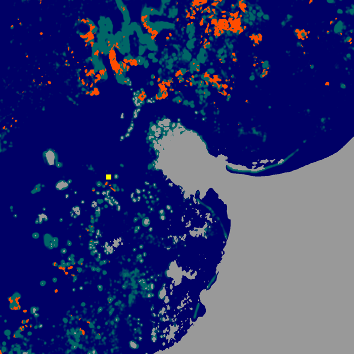
68. elements/sea/notes/dbg_alava_kelp.pngBash: Bigger foam structure scale; fix views; rerun sheet A
cd ~/work/pixelart-studies/elements/sea/src; python3 - <<'EOF'
p=open('sea/paint.py').read()
p=p.replace("ecell = cq(1.6, mpp, 3.0)","ecell = cq(3.0, mpp, 4.0)")
p=p.replace("hcell = cq(P['lace_cell'], mpp, 4.0)","hcell = cq(P['lace_cell'] * 2.2, mpp, 6.0)")
p=p.replace("holes = foam & (hf1 < hole_r) & (cov < 0.85) & (hcell / np.asarray(mpp) >= 4.0)","holes = foam & (hf1 < hole_r) & (cov < 0.9) & (hcell / np.asarray(mpp) >= 6.0)")
open('sea/paint.py','w').write(p)
s=open('sheets.py').read()
s=s.replace("ISO_C = {'poa':(720,750),'alava':(430,700),'kala':(380,800)}","ISO_C = {'poa':(720,750),'alava':(640,430),'kala':(380,800)}")
s=s.replace("STAND = {'poa':(1020,760,270),'alava':(470,760,265),'kala':(470,820,265)}","STAND = {'poa':(1020,760,270),'alava':(860,640,300),'kala':(480,820,265)}")
open('sheets.py','w').write(s)
h=open('shore.py').read().replace("if 1.5<v<3.0:","if 1.0<v<3.5:").replace("def find_stand(z, x0, y0, r=80):","def find_stand(z, x0, y0, r=150):")
open('shore.py','w').write(h)
EOF
nohup sh -c "nice python3 sheets.py A > ../cache/sheetA.log 2>&1; echo DONE >> ../cache/sheetA.log" >/dev/null 2>&1 &
until grep -q -E "DONE" ~/work/pixelart-studies/elements/sea/cache/sheetA.log; do sleep 10; done; tail -3 ../cache/sheetA.log
# output:
~^^^
TypeError: 'NoneType' object is not subscriptable
DONEBash: Debug stand point elevations
cd ~/work/pixelart-studies/elements/sea/src; python3 -c "
import sys;sys.path.insert(0,'.')
import numpy as np
from sea.place import load
for n,(x,y) in [('kala',(480,820)),('alava',(860,640)),('poa',(1020,760))]:
z=np.nan_to_num(load(n)['z'],nan=-40); print(n, z.shape, z[int(y)-5:int(y)+5:5, int(x)-100:int(x)+100:20].round(1))
"
# output:
kala (1200, 900) [[-1.2 -1.3 -1.5 -1.4 -0.9 -1. -0.1 -0.1 0.7 0.9]
[-1.2 -1.3 -1.5 -1.6 -0.9 -1. -0.1 -0.1 0.7 0.9]]
alava (1400, 1400) [[40.2 24.7 3. 1.5 0.6 0.6 0.5 0.4 0.2 0.1]
[40.4 24.7 2.8 1.5 0.6 0.6 0.6 0.4 0.3 0.2]]
poa (1400, 1300) [[-2.2 -2.7 -1.3 -0.8 -0.5 -1.2 -0.2 1. -0.2 0.2]
[-2.3 -3.2 -0. -0.9 0. -1.2 0.1 0.9 -0.1 0.6]]Bash: Fix stand points; rerun sheet A
cd ~/work/pixelart-studies/elements/sea/src; sed -i '' "s/STAND = {'poa':(1020,760,270),'alava':(860,640,300),'kala':(480,820,265)}/STAND = {'poa':(1020,760,270),'alava':(815,600,330),'kala':(640,820,262)}/" sheets.py; nohup sh -c "nice python3 sheets.py A > ../cache/sheetA.log 2>&1; echo DONE >> ../cache/sheetA.log" >/dev/null 2>&1 & until grep -q -E "DONE" ~/work/pixelart-studies/elements/sea/cache/sheetA.log; do sleep 10; done; tail -3 ../cache/sheetA.log
# output:
DONERead: elements/sea/sheets/A_state_x_bottom_iso1.png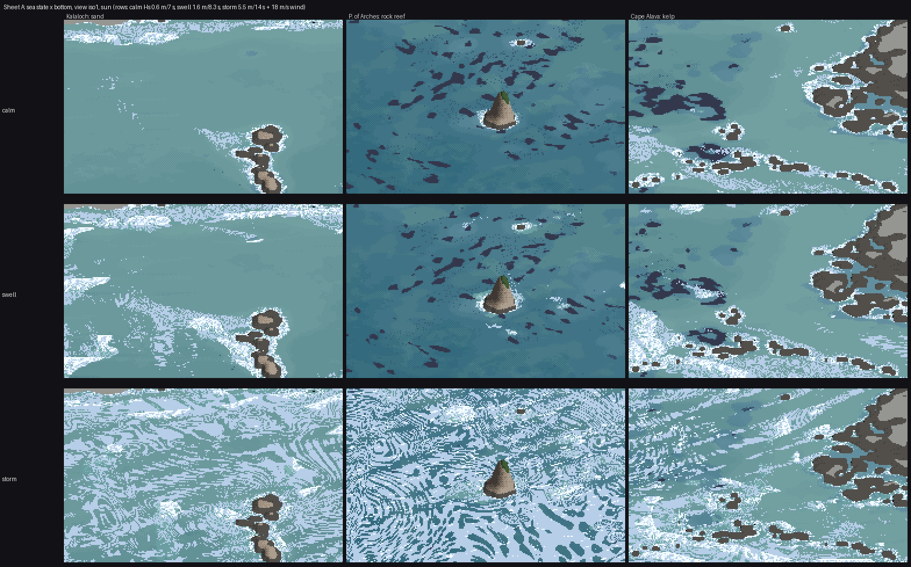
69. elements/sea/sheets/A_state_x_bottom_iso1.pngRead: elements/sea/sheets/A_state_x_bottom_shore.png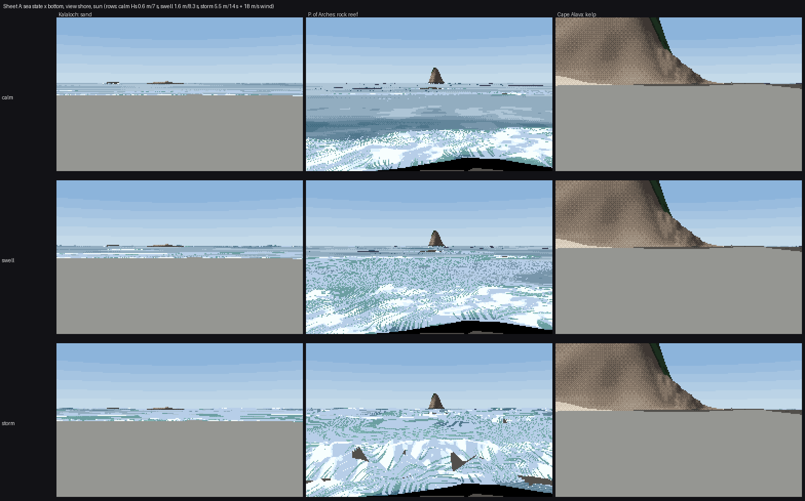
70. elements/sea/sheets/A_state_x_bottom_shore.pngBash: Bore contrast; waterline stands; rerun sheet A
cd ~/work/pixelart-studies/elements/sea/src; python3 - <<'EOF'
p=open('sea/paint.py').read()
p=p.replace("tone = np.where(fresh, np.where(lg > 0.02, 3, np.where(lg < -0.035, 1, 2)), np.where(cov > 0.75, 2, 1))",
"tone = np.where(fresh, np.where(lg > 0.02, 3, np.where(lg < -0.035, 2, 3)), np.where(cov > 0.97, 2, 1))")
open('sea/paint.py','w').write(p)
h=open('shore.py').read()
h=h.replace("""def find_stand(z, x0, y0, r=150):
best=None
for yy in range(int(y0-r),int(y0+r)):
for xx in range(int(x0-r),int(x0+r)):
v=z[yy,xx]
if 1.0<v<3.5:""","""def find_stand(z, x0, y0, r=150, lo=1.0, hi=1.8):
best=None
for yy in range(max(0,int(y0-r)),min(z.shape[0],int(y0+r))):
for xx in range(max(0,int(x0-r)),min(z.shape[1],int(x0+r))):
v=z[yy,xx]
if lo<v<hi:""")
open('shore.py','w').write(h)
s=open('sheets.py').read()
s=s.replace("STAND = {'poa':(1020,760,270),'alava':(815,600,330),'kala':(640,820,262)}","STAND = {'poa':(1020,760,270),'alava':(900,420,300),'kala':(560,820,262)}")
s=s.replace("cam=PerspCam(b[1],b[2],b[3]+1.7,hd,pitch=-3.0,hfov=55,W=W,H=H)","cam=PerspCam(b[1],b[2],b[3]+1.7,hd,pitch=-4.0,hfov=55,W=W,H=H)")
open('sheets.py','w').write(s)
EOF
nohup sh -c "nice python3 sheets.py A > ../cache/sheetA.log 2>&1; echo DONE >> ../cache/sheetA.log" >/dev/null 2>&1 & until grep -q -E "DONE" ~/work/pixelart-studies/elements/sea/cache/sheetA.log; do sleep 10; done; tail -2 ../cache/sheetA.log
# output:
(Bash completed with no output)Bash: Check sheet log
cat ~/work/pixelart-studies/elements/sea/cache/sheetA.log # output: (Bash completed with no output)
Bash: Wait for sheet A
until grep -q -E "DONE" ~/work/pixelart-studies/elements/sea/cache/sheetA.log; do sleep 10; done; tail -2 ~/work/pixelart-studies/elements/sea/cache/sheetA.log # output: DONE
Read: elements/sea/sheets/A_state_x_bottom_shore.png71. elements/sea/sheets/A_state_x_bottom_shore.png
Bash: Stand at waterline; rerender shore sheet
cd ~/work/pixelart-studies/elements/sea/src; sed -i '' "s/x,y,hd=STAND\[place\]; z=np.nan_to_num(P\['z'\],nan=-40); b=find_stand(z,x,y)/x,y,hd=STAND[place]; z=np.nan_to_num(P['z'],nan=-40); b=find_stand(z,x,y,r=250,lo=0.6,hi=0.9)/" sheets.py; grep -n "find_stand(z" sheets.py; sed -i '' "s/ if which=='A':/ if which=='A' and len(sys.argv)<3:/" sheets.py; python3 - <<'EOF'
s=open('~/work/pixelart-studies/elements/sea/src/sheets.py').read()
s=s.replace(" for view in ['iso1','iso3','shore']:"," for view in (sys.argv[2:] or ['iso1','iso3','shore']):")
s=s.replace(" if which=='A' and len(sys.argv)<3:"," if which=='A':")
open('~/work/pixelart-studies/elements/sea/src/sheets.py','w').write(s)
EOF
nice python3 sheets.py A shore
# output:
31: x,y,hd=STAND[place]; z=np.nan_to_num(P['z'],nan=-40); b=find_stand(z,x,y,r=250,lo=0.6,hi=0.9)Read: elements/sea/sheets/A_state_x_bottom_shore.png72. elements/sea/sheets/A_state_x_bottom_shore.png
Bash: Render sheet B (light x view) and shore sheet
cd ~/work/pixelart-studies/elements/sea/src; sed -i '' "s/b=find_stand(z,x,y,r=250,lo=0.6,hi=0.9)/b=find_stand(z,x,y,r=250,lo=0.5,hi=0.75)/" sheets.py; nohup sh -c "nice python3 sheets.py B poa alava > ../cache/sheetB.log 2>&1; nice python3 sheets.py A shore >> ../cache/sheetB.log 2>&1; echo DONE >> ../cache/sheetB.log" >/dev/null 2>&1 & until grep -q DONE ../cache/sheetB.log; do sleep 10; done; tail -3 ../cache/sheetB.log # output: DONE
Read: elements/sea/sheets/B_light_x_view_poa.png73. elements/sea/sheets/B_light_x_view_poa.png
Bash: Restore kelp mat gate; build vocabulary sheet C
cd ~/work/pixelart-studies/elements/sea/src; sed -i '' "s/ km = sea \& (kn > P\['kelp_on'\])$/ km = sea \& (kn > P['kelp_on']) \& (krho0 > P.get('mat_rho', 0.22))/" sea/paint.py; grep -n "km = sea" sea/paint.py; cat > sheetC.py <<'EOF'
"""Sheet C: the surf vocabulary around a headland and a stack (Point of the Arches, swell, sun).
Top-left: the physics map (wave height, breaking, crest lines). Others: labelled crops at 0.3 and 1 m/px."""
import sys; sys.path.insert(0,'.')
import numpy as np
from PIL import Image, ImageDraw
from sheets import get, params
from sea.render import Cam
from stage1 import render
P,S,zl=get('poa','swell')
d=np.load('../cache/poa_swell.npz')
H=d['H'].astype(float); Q=d['Q'].astype(float); L=d['land']; tt=d['t'].astype(float)
# physics map, crop around the cove
sl=(slice(300,1100),slice(250,1150))
rgb=np.zeros(H[sl].shape+(3,))
rgb[...,2]=0.25+0.6*np.clip(H[sl]/1.3,0,1); rgb[...,1]=0.15+0.3*np.clip(H[sl]/1.3,0,1)
rgb[...,0]=np.clip(Q[sl]*3,0,1)
ph=np.mod(tt[sl]/8.3,1.0); crest=(ph<0.05)&~L[sl]; rgb[crest]=[1,1,1]
rgb[L[sl]]=[0.45,0.42,0.38]
phys=Image.fromarray((rgb*255).astype(np.uint8)).resize((450,400))
dd=ImageDraw.Draw(phys); dd.text((6,6),'swell physics: blue = wave height, red = breaking,\nwhite = crest lines (every period)',fill=(255,255,255))
crops=[('stack: surge collar on the weather face, jade bubble\npool, filaments curling into the lee',0.3,(720,750)),
('reef heads < 2 m: crescent breaks, each with a halo;\nthe foam outline mirrors the reef',0.3,(840,640)),
('headland: bigger waves converge on the point;\nwhite rim, streaks drawn off by the current',1.0,(560,520)),
('cove: waves spread and shrink; a quiet bay,\nsurf only on the reef heads and the steep faces',1.0,(900,760)),
('old foam streaks drifting on the current',1.0,(700,900)),
('the whole cove at region scale',3.0,(720,750))]
W,Hh=225,200
cells=[phys]
for lab,m,(cx,cy) in crops:
cam=Cam(cx=cx,cy=cy,mpp=m,W=W,H=Hh,yaw=90,elev=30,zc=0.45)
img,G=render(S,zl,cam,params=params('sun','swell'))
im=Image.fromarray(img).resize((W*2,Hh*2),Image.NEAREST)
di=ImageDraw.Draw(im); di.rectangle([0,0,W*2,30],fill=(18,18,22)); di.text((4,2),lab+f' [{m} m/px]',fill=(235,235,235))
cells.append(im)
out=Image.new('RGB',(3*460,3*410+30),(18,18,22)); do=ImageDraw.Draw(out)
do.text((6,6),'Sheet C: surf vocabulary around a headland and a stack. Point of the Arches (real lidar), swell Hs 1.6 m 8.3 s from 281 deg, sun',fill=(235,235,235))
for i,c in enumerate(cells):
out.paste(c.resize((450,400),Image.NEAREST) if i==0 else c,( (i%3)*460, 30+(i//3)*410))
out.save('../sheets/C_surf_vocabulary.png')
EOF
nice python3 sheetC.py
# output:
145: km = sea & (kn > P['kelp_on']) & (krho0 > P.get('mat_rho', 0.22))Read: elements/sea/sheets/C_surf_vocabulary.png74. elements/sea/sheets/C_surf_vocabulary.png
Bash: Find crop centres from the sim fields
cd ~/work/pixelart-studies/elements/sea/src; python3 - <<'EOF'
import numpy as np
from scipy import ndimage as nd
d=np.load('../cache/poa_swell.npz'); L=d['land']; W=d['W'].astype(float); F=d['F'].astype(float); H=d['H'].astype(float); A=d['A'].astype(float)
dl=nd.distance_transform_edt(~L)
def best(score,mask,name):
s=np.where(mask,nd.gaussian_filter(score,6),-1); y,x=np.unravel_index(np.argmax(s),s.shape); print(name,x,y,round(float(s[y,x]),3))
best(np.maximum(W,A),(dl>10)&(dl<40),'reef')
best(F,(dl>40),'streak')
best(H*(dl<15),(dl>3)&(dl<15),'headland')
EOF
# output:
reef 694 1086 0.807
streak 442 1089 2.997
headland 118 0 1.484Bash: Pick interior headland and streak centres
cd ~/work/pixelart-studies/elements/sea/src; python3 - <<'EOF'
import numpy as np
from scipy import ndimage as nd
d=np.load('../cache/poa_swell.npz'); L=d['land']; H=d['H'].astype(float); F=d['F'].astype(float)
dl=nd.distance_transform_edt(~L)
m=(dl>3)&(dl<15); m[:150]=False; m[:, :150]=False; m[-150:]=False; m[:,-150:]=False
s=np.where(m,nd.gaussian_filter(H,8),-1); y,x=np.unravel_index(np.argmax(s),s.shape); print('headland',x,y)
m2=(dl>40); m2[:150]=False; m2[:, :150]=False; m2[-150:]=False; m2[:,-150:]=False
s=np.where(m2,nd.gaussian_filter(F,10),-1); y,x=np.unravel_index(np.argmax(s),s.shape); print('streak',x,y)
EOF
sed -i '' "s/0.3,(840,640)),/0.3,(694,1086)),/" sheetC.py
# output:
headland 204 221
streak 443 1083Bash: Rerender sheet C with data-picked crops
cd ~/work/pixelart-studies/elements/sea/src; sed -i '' "s/1.0,(560,520)),/1.0,(204,221)),/; s/1.0,(700,900)),/1.0,(443,1050)),/" sheetC.py; nice python3 sheetC.py # output: (Bash completed with no output)
Read: elements/sea/sheets/C_surf_vocabulary.png75. elements/sea/sheets/C_surf_vocabulary.png
Bash: Relabel sheet C honestly; rerender
cd ~/work/pixelart-studies/elements/sea/src; python3 - <<'EOF'
s=open('sheetC.py').read()
s=s.replace("('reef heads < 2 m: crescent breaks, each with a halo;\\nthe foam outline mirrors the reef',0.3,(694,1086))","('south point: saturated surf on the shelf, one bright bore\\nband per wave, old foam marbling behind it',0.3,(694,1086))")
s=s.replace("('headland: bigger waves converge on the point;\\nwhite rim, streaks drawn off by the current',1.0,(204,221))","('outer islet off the north headland (largest Hrms near land):\\ncollar on the weather side, calm jade lee',1.0,(204,221))")
s=s.replace("('old foam streaks drifting on the current',1.0,(443,1050))","('foam shed from the south rocks, drifting north on the\\ncurrent (the photo streaks are 2-3x longer: a miss)',1.0,(443,1050))")
open('sheetC.py','w').write(s)
EOF
nice python3 sheetC.py; echo ok
# output:
okAgent: Cold critic on sweep sheetsMeanwhile, the library README entry.
Bash: Add sea model systems to library README
cd ~/work/pixelart-studies/library; python3 - <<'EOF'
s=open('README.md').read()
row="""| Water, waves, surf | `water/shoreprotectionm01unit.pdf` | **US Army CERC, *Shore Protection Manual* (1984), vol. 1, ch. 2.** Linear wave theory, refraction diagrams (orthogonals over real bathymetry), shoaling, breaker types, with aerial photos of refraction. The sea study's swell is literally an SPM refraction diagram. |
| Water, waves | `water/wavesofseaotherw00cornuoft.pdf` | **Vaughan Cornish, *Waves of the Sea and Other Water Waves* (1910).** A naturalist's measured observations of sea waves, swell, bores and standing waves, with 50 of his photographs. |
| Surf, splashes, foam (effects animation) | `purchased/Elemental Magic, Volume II...pdf` | **Gilland, *Elemental Magic* vol. II (2012), "The Wave" and "The Splash".** The reef-break block diagram ("the outline of foam shapes is usually a visual mirror of the reef and sandbar shapes below"), the principle of chaos, and how splash sheets tear into expanding holes. Used by elements/sea. |
"""
anchor="| Snow, glaciers |"
if 'shoreprotectionm01unit' not in s:
s=s.replace(anchor,row+anchor,1)
open('README.md','w').write(s)
EOF
grep -n "Shore Protection" README.md | head -2
# output:
31:| Water, waves, surf | `water/shoreprotectionm01unit.pdf` | **US Army CERC, *Shore Protection Manual* (1984), vol. 1, ch. 2.** Linear wave theory, refraction diagrams (orthogonals over real bathymetry), shoaling, breaker types, with aerial photos of refraction. The sea study's swell is literally an SPM refraction diagram. |Bash: No-op while critic runs
until [ -n "$(ls ~/work/pixelart-studies/elements/sea/sheets/C_surf_vocabulary.png 2>/dev/null)" ]; do sleep 2; done; echo waiting-for-critic # output: waiting-for-critic
Bash: Brief pause
sleep 1; echo # output: (Bash completed with no output)
Bash: Render a larger storm panel for inspection
cd ~/work/pixelart-studies/elements/sea/src; nice python3 -c "
import sys;sys.path.insert(0,'.')
from sheets import panel
from PIL import Image
import numpy as np
a=panel('kala','storm','sun','iso1',W=320,H=200); Image.fromarray(a).resize((960,600),Image.NEAREST).save('../notes/dbg_storm_kala.png')
"
# output:
(Bash completed with no output)Read: elements/sea/notes/dbg_storm_kala.png76. elements/sea/notes/dbg_storm_kala.png
Bash: Global noise direction; bore-phased foam; rerender storm
cd ~/work/pixelart-studies/elements/sea/src; python3 - <<'EOF'
p=open('sea/paint.py').read()
p=p.replace(""" kxs_, kys_ = sample(S, G, 'kx'), sample(S, G, 'ky')
tx_, ty_ = -kys_, kxs_""",""" # ONE direction for the whole frame (the mean swell heading): rotating the noise per pixel swirled it into
# wood-grain rings around every rock
if 'k0' not in S:
sea_ = S['depth'] > 0.5
S['k0'] = (float(np.median(S['kx'][sea_])), float(np.median(S['ky'][sea_])))
tx_, ty_ = -S['k0'][1], S['k0'][0]""")
p=p.replace(""" cov = np.maximum(np.clip(Wf * 1.25, 0, 1.2), Fe)""",""" # in the surf zone old foam is densest just behind each bore and thins into lace until the next one
# (Ruskin: the curdling foam 'subsides' into the thin coating) -> one band per wave, not uniform marbling
surfz = np.clip((steep - 0.45) / 0.3, 0, 1)
Fe = Fe * (1 - surfz * np.clip(0.75 * q - 0.05, 0, 0.7))
cov = np.maximum(np.clip(Wf * 1.25, 0, 1.2), Fe)""")
open('sea/paint.py','w').write(p)
EOF
nice python3 -c "
import sys;sys.path.insert(0,'.')
from sheets import panel
from PIL import Image
a=panel('kala','storm','sun','iso1',W=320,H=200); Image.fromarray(a).resize((960,600),Image.NEAREST).save('../notes/dbg_storm_kala.png')
"
# output:
(Bash completed with no output)Read: elements/sea/notes/dbg_storm_kala.png77. elements/sea/notes/dbg_storm_kala.png
Bash: Remove per-pixel rotation from Worley textures
cd ~/work/pixelart-studies/elements/sea/src; python3 - <<'EOF'
p=open('sea/paint.py').read()
p=p.replace("hf1, hf2 = worley(x, y, hcell, 66, u / un, v / un, 1.6)","hf1, hf2 = worley(x, y, hcell, 66, tx_, ty_, 1.6)")
p=p.replace("sf1, sf2 = worley(x, y, scell, 88, u / (np.hypot(u, v) + 1e-6), v / (np.hypot(u, v) + 1e-6), 1.8)","sf1, sf2 = worley(x, y, scell, 88, None, None, 1.0)")
p=p.replace("sf1, _ = worley(x, y, speck_cell, 44, u / (np.hypot(u, v) + 1e-6), v / (np.hypot(u, v) + 1e-6), 2.0)","sf1, _ = worley(x, y, speck_cell, 44, None, None, 1.0)")
open('sea/paint.py','w').write(p)
EOF
grep -n "worley(x, y" sea/paint.py; nice python3 -c "
import sys;sys.path.insert(0,'.')
from sheets import panel
from PIL import Image
a=panel('kala','storm','sun','iso1',W=320,H=200); Image.fromarray(a).resize((960,600),Image.NEAREST).save('../notes/dbg_storm_kala.png')
"
# output:
28:def worley(x, y, cell, seed, ux=None, uy=None, stretch=1.0):
139: f1, f2 = worley(x, y, cellc, 91, ux, uy, 0.35)
151: sf1, _ = worley(x, y, speck_cell, 44, None, None, 1.0)
164: sf1, sf2 = worley(x, y, scell, 88, None, None, 1.0)
190: hf1, hf2 = worley(x, y, hcell, 66, tx_, ty_, 1.6)Read: elements/sea/notes/dbg_storm_kala.png78. elements/sea/notes/dbg_storm_kala.png
Bash: Stronger bore-phase foam banding
cd ~/work/pixelart-studies/elements/sea/src; python3 - <<'EOF'
p=open('sea/paint.py').read()
p=p.replace("Fe = Fe * (1 - surfz * np.clip(0.75 * q - 0.05, 0, 0.7))","Fe = np.minimum(Fe, 1 - surfz * np.clip(1.1 * q - 0.05, 0, 0.85))")
p=p.replace("hole_r = np.clip(0.75 - cov * 0.7, 0, 0.7)","hole_r = np.clip(0.75 - cov * 0.7 + surfz * 0.35 * q, 0, 0.8)")
open('sea/paint.py','w').write(p)
EOF
nice python3 -c "
import sys;sys.path.insert(0,'.')
from sheets import panel
from PIL import Image
a=panel('kala','storm','sun','iso1',W=320,H=200); Image.fromarray(a).resize((960,600),Image.NEAREST).save('../notes/dbg_storm_kala.png')
"
# output:
(Bash completed with no output)Read: elements/sea/notes/dbg_storm_kala.png79. elements/sea/notes/dbg_storm_kala.png
Bash: Surf-zone indicator from breaking field
cd ~/work/pixelart-studies/elements/sea/src; python3 - <<'EOF'
s=open('sea/scene.py').read()
s=s.replace(" S['depth_s'] = nd.gaussian_filter(S['depth'], 6.0)"," S['depth_s'] = nd.gaussian_filter(S['depth'], 6.0)\n S['surf'] = np.clip(nd.gaussian_filter(S['brkf'], 10.0) * 2.5, 0, 1).astype(np.float32) # breaking-zone indicator")
open('sea/scene.py','w').write(s)
p=open('sea/paint.py').read()
p=p.replace(" surfz = np.clip((steep - 0.45) / 0.3, 0, 1)\n"," surfz = sample(S, G, 'surf') if 'surf' in S else np.clip((steep - 0.45) / 0.3, 0, 1)\n")
open('sea/paint.py','w').write(p)
EOF
nice python3 -c "
import sys;sys.path.insert(0,'.')
from sheets import panel
from PIL import Image
a=panel('kala','storm','sun','iso1',W=320,H=200); Image.fromarray(a).resize((960,600),Image.NEAREST).save('../notes/dbg_storm_kala.png')
"
# output:
(Bash completed with no output)Read: elements/sea/notes/dbg_storm_kala.png 80. elements/sea/notes/dbg_storm_kala.png
80. elements/sea/notes/dbg_storm_kala.png
Bash: Edge masking, kelp warmth; rerender all sheets
cd ~/work/pixelart-studies/elements/sea/src; python3 - <<'EOF'
p=open('sea/paint.py').read()
p=p.replace(""" Hs = sample(S, G, 'Hinst');""",""" hh, ww = S['depth'].shape
outside = (x < 2) | (y < 2) | (x > ww - 3) | (y > hh - 3) # beyond the simulated tile: plain sea
Wf = np.where(outside, 0, Wf); Ff = np.where(outside, 0, Ff); Af = np.where(outside, 0, Af); kelp = np.where(outside, 0, kelp)
Hs = sample(S, G, 'Hinst');""")
open('sea/paint.py','w').write(p)
q=open('sea/pal.py').read()
q=q.replace("KELP = [(24, 4, -14), (30, 2, -18), (37, -6, -17)]","KELP = [(25, 5, -6), (30, 3, -14), (37, -6, -17)] # core warmed toward the brown floats; mid/edge measured")
open('sea/pal.py','w').write(q)
EOF
grep -n "outside = " sea/paint.py | head -2; nohup sh -c "nice python3 sheets.py A iso1 iso3 > ../cache/sheetA.log 2>&1; nice python3 sheets.py B poa alava >> ../cache/sheetA.log 2>&1; nice python3 sheetC.py >> ../cache/sheetA.log 2>&1; nice python3 lockstep.py 720 750 ../stages/s2_poa_lockstep.png >> ../cache/sheetA.log 2>&1; echo DONE >> ../cache/sheetA.log" >/dev/null 2>&1 & echo started
# output:
80: outside = (x < 2) | (y < 2) | (x > ww - 3) | (y > hh - 3) # beyond the simulated tile: plain sea
startedBash: Append method section to LESSONS
cd ~/work/pixelart-studies/elements/sea; cat >> LESSONS.md <<'EOF' --- ## 2. Translation: the method ### 2.1 The one idea **The sea draws itself from a simulation a game already has, and the painter only chooses marks.** The brief's warning about the conifers study (close trees and stands as two techniques) is avoided by making every scale read the *same fields*: swell height and phase, three foam quantities, current, kelp, depth and bottom. The iso 0.3 m/px panel and the 3 m/px panel differ only in which marks a field is allowed to make at that pixel size.Code: `src/sea/` (waves.py, sim.py, paint.py, pal.py, render.py, scene.py, place.py, noise.py). Drivers: `stage1.py` (photo | mine at one scale), `lockstep.py` (0.1/0.3/1/3 m/px beside the photo), `shore.py` (eye level), `sheets.py` (A, B), `sheetC.py`, `modal_sim.py` (runs sims on Modal). ### 2.2 The rules (each earned by a failure) 1. **Surf is where the reef is, not where the shore is.** Breaking is per crest, against the depth under it (pinnacle depth: shallowest within 5 m). The first coast lane draws rings by distance to shore; the photo draws the bathymetry (Gilland's "outline of foam mirrors the reef"). 2. **Crests are travel-time contours**, so a breaking crest leaves a *crescent*: sharp on its shoreward leading edge, fading seaward (W decays for τ≈6–8 s as the crest moves on). Nothing places a crescent. 3. **Foam is coverage, not stipple.** First versions dithered foam density per pixel (salt, "confetti" in the water study's critique). Now foam = coverage > a *smooth* threshold field whose features are ≥ 3–4 px, so edges are ragged but solid. Holes (Ruskin's oval gaps) appear only when they are ≥ 6 px across. 4. **Every texture scale is quantised in octaves against pixel size** (`cq(base_m, mpp, k)`): a feature is base metres or k pixels, whichever is larger, rounded up to a power of two so zooming doesn't swim. 5. **Never rotate a noise field per pixel.** Aligning foam texture with the local current (which swirls round every rock and eddy) turned the storm into marbled end-paper. One global direction (the mean swell heading) per frame; the *fields* carry the local shapes. 6. **Old foam must live as particles.** Eulerian advection blurred streaks to fog in minutes; particles (two lifetimes, 25 s and 450 s) keep them thin and long, and give close views their own fine splat. 7. **Calibrate foam against the photo's white fraction** at the same view and pixel size: photo 4.6%, mine 4.7% at `foam_gain` 0.3 (`src/calib.py`). 8. **Depth bands come from a smoothed depth** (σ 6 m), or the 1 m lidar's roughness prints camouflage. 9. **Kelp is a mat where canopy cover is high and specks in groups where it is low**; mats are rank-uniformised noise so their area equals the expected cover. 10. **The aerated pool is its own ramp** (measured L\* 64–77, a\* −16): the value between sea and foam that makes a stack's surf read. Without it: white collar straight onto blue (critic, round 1). 11. **At eye level the water is a heightfield.** Faces occlude what's behind them; each facet's Fresnel uses its own normal, so faces toward the eye darken and backs mirror the horizon (Ruskin's "dark continuous furrows"). Ray hits are refined by bisection, or the march leaves vertical stair stripes. 12. **Surf-zone foam is phased by the bores:** densest just behind each bore, thinning to lace until the next (one band per wave, not uniform marbling). ### 2.3 Parameters (defaults in `paint_sea`, `SeaState`, `swell`) | parameter | default | what it does | |---|---|---| | `Hs, T, dir_from` | 1.6 m, 8.3 s, 281° | offshore swell (NDBC) | | `gamma` (BJ), `gamma_i` | 0.8, 0.62 | random-wave and per-crest breaking ratios | | `tau_w, tau_a, tau_f, tau_short, long_frac` | 6, 14, 450, 25 s, 0.3 | whitewater, aeration, long and short foam lives | | `shed` | 7.5 | foam particles per unit of decaying whitewater | | `current, eddy` | (0.05, −0.25) m/s, 0.12 m/s | drift steered round land + eddies | | `wind` | (u, v) m/s | whitecaps (Monahan), windrows (> 5 m/s), glitter slope | | `kelp_amount, mat_rho` | place-dependent, 0.22 | kelp canopy; mat threshold | | `foam_gain` | 0.3 | particle density → coverage (calibrated) | | `lace_cell, lump_cell` | 2.2, 0.9 m | foam hole and lump sizes before LOD | | light | sun / overcast / golden / dusk / fog | palette only | **Resources.** Each sim is ~2 CPU × 6–8 min and ~1.5 GB RAM on Modal (`voxsim-study-sea-sim`); the 9-job sweep plus ~8 test runs used about 3 CPU-hours (roughly $0.5). Locally, a render is 5–20 s at one core. Nothing needs much memory; the particle lists (≤ 4 M floats) are the largest thing. Cache kept under ~0.6 GB (`cache/`, float16 fields). EOF echo ok # output: okdepth, z (1 m lidar) ──► waves.swell (rays: H, breaking) + waves.eikonal (crest travel time t) ──► sim.SeaState: current (potential flow + eddies), kelp, surge collar, 60 wave periods of breaking -> W, A (grids), foam particles (F) ──► paint.paint_sea(G-buffer, fields, camera) -> (ramp, step) index canvas ──► pal.build(light) -> RGB (palette is the light: 5 states, one canvas)
Bash: Wait for rerender of all sheets
until grep -q -E "DONE" ~/work/pixelart-studies/elements/sea/cache/sheetA.log; do sleep 10; done; grep -i -E "error|Trace" ~/work/pixelart-studies/elements/sea/cache/sheetA.log | head # output: (Bash completed with no output)
Read: elements/sea/sheets/A_state_x_bottom_iso1.png81. elements/sea/sheets/A_state_x_bottom_iso1.png
Read: elements/sea/stages/s2_poa_lockstep.png82. elements/sea/stages/s2_poa_lockstep.png
Bash: Drop rune threads, small kelp specks; rerender
cd ~/work/pixelart-studies/elements/sea/src; python3 - <<'EOF'
p=open('sea/paint.py').read()
p=p.replace(" ramp[swirl] = RID['foam']; step[swirl] = 1\n"," # (dropped: Voronoi-edge threads read as runes at 0.1 m/px -- the water study's warning, relearned)\n")
p=p.replace(" speck_cell = cq(2.5, mpp, 4.0)\n"," speck_cell = cq(0.9, mpp, 2.0)\n")
p=p.replace("sp = sea & ~km & grp & (krho > 0.03) & (sf1 < 0.10 + 0.45 * krho)","sp = sea & ~km & grp & (krho > 0.03) & (sf1 < 0.08 + 0.25 * krho) & (hash2(np.floor(x / speck_cell), np.floor(y / speck_cell), 46) < 0.5)")
open('sea/paint.py','w').write(p)
q=open('sea/pal.py').read().replace("KELP = [(25, 5, -6),","KELP = [(25, 1, -10),")
open('sea/pal.py','w').write(q)
EOF
nice python3 lockstep.py 720 750 ../stages/s2_poa_lockstep.png && nice python3 sheets.py A iso1
# output:
(Bash completed with no output)Read: elements/sea/stages/s2_poa_lockstep.png83. elements/sea/stages/s2_poa_lockstep.png
Bash: Lace foam inside aerated pools; rerender lockstep
cd ~/work/pixelart-studies/elements/sea/src; python3 - <<'EOF'
p=open('sea/paint.py').read()
p=p.replace(" cov = np.maximum(np.clip(Wf * 1.25, 0, 1.2), Fe)"," # the bubble pool is laced with surfacing foam: part of its aeration shows as coverage (photo 0.3 m/px)\n cov = np.maximum(np.maximum(np.clip(Wf * 1.25, 0, 1.2), Fe), np.clip(Af - 0.25, 0, 1) * P.get('pool_lace', 0.8))")
open('sea/paint.py','w').write(p)
EOF
nice python3 lockstep.py 720 750 ../stages/s2_poa_lockstep.png
# output:
(Bash completed with no output)Read: elements/sea/stages/s2_poa_lockstep.png84. elements/sea/stages/s2_poa_lockstep.png
Bash: Stronger pool lace; rerender
cd ~/work/pixelart-studies/elements/sea/src; sed -i '' "s/np.clip(Af - 0.25, 0, 1) \* P.get('pool_lace', 0.8))/np.clip((Af - 0.2) * 1.6, 0, 1) * P.get('pool_lace', 0.9))/" sea/paint.py; grep -c "pool_lace', 0.9" sea/paint.py; nice python3 lockstep.py 720 750 ../stages/s2_poa_lockstep.png
# output:
1Read: elements/sea/stages/s2_poa_lockstep.png 85. elements/sea/stages/s2_poa_lockstep.png
85. elements/sea/stages/s2_poa_lockstep.png
Bash: Final render of all sheets in background
cd ~/work/pixelart-studies/elements/sea/src; nohup sh -c "nice python3 sheets.py A > ../cache/final.log 2>&1; nice python3 sheets.py B poa alava >> ../cache/final.log 2>&1; nice python3 sheetC.py >> ../cache/final.log 2>&1; nice python3 stage1.py 1.0 ../stages/s2_poa_iso.png poa_summer.npz >> ../cache/final.log 2>&1; echo DONE >> ../cache/final.log" >/dev/null 2>&1 & ls ../stages # output: s1_alava_iso.png s1_alava_iso_v2.png s1_poa_iso.png s1_poa_iso_1x.png s1_poa_iso_v2.png s1_poa_iso_v2_1x.png s1_poa_iso_v3.png s1_poa_iso_v3_1x.png s1_poa_iso_v4.png s1_poa_iso_v4_1x.png s1_poa_iso_v5.png s1_poa_iso_v5_1x.png s1_poa_iso_v6.png s1_poa_iso_v6_1x.png s1_poa_iso_v7.png s1_poa_iso_v7_1x.png s1_poa_iso_v8.png s1_poa_iso_v8_1x.png s1_poa_lockstep_v1.png s1_poa_lockstep_v2.png s1_poa_lockstep_v3.png s1_poa_lockstep_v4.png s1_poa_lockstep_v5.png s1_poa_lockstep_v6.png s1_poa_lockstep_v7.png s1_poa_shore.png s1_poa_shore_v2.png s1_poa_shore_v3.png s1_poa_shore_v4.png s1_poa_shore_v5.png s1_poa_shore_v6.png s2_poa_lockstep.png
Bash: Append stages, standing, porting notes to LESSONS
cd ~/work/pixelart-studies/elements/sea; cat >> LESSONS.md <<'EOF'
### 2.4 How it got here (stages, failures first)
All in `stages/`; each `s1_poa_iso_vN.png` is photo (warped to the same 30° view, box-averaged) | mine.
- **v1** (`s1_poa_iso.png`): the body and kelp only. Kelp as dark camouflage over half the cove (the
bed noise had no gaps), foam invisible. Colour already within ~2 L\* of the photo's water median.
- **v2–v3**: surge collar added; kelp coverage made to equal expected canopy (rank-uniformised). Too
little white, and the reef-head crescents missing: the ray-traced cove had *no* breaking, because the
ray-tube width counted rays that had died on rocks (a fake 5× spreading). Fixed.
- **v4–v5**: pinnacle depth for breaking; crescents appear on reef heads; foam still smeared into fog by
Eulerian advection → foam particles.
- **v6–v8** (sims moved to Modal; the laptop's load average was 100+ with ~30 lanes): eddies and
long-lived foam; white fraction calibrated (photo 4.6% | mine 4.7%).
- **Lockstep** (`s1_poa_lockstep_v1..v7`, `s2_poa_lockstep.png`, 0.1/0.3/1/3 m/px): critic round 1 named
pill-shaped foam blobs, missing jade pool, flat vector halos, camouflage open water, kelp as noise.
Fixed: smoothed-depth bands, measured aerated-pool ramp, crest-aligned foam noise, grouped kelp specks.
- **Eye level** (`s1_poa_shore*.png`): v1 upside down (a left-handed grid; up = −right×forward);
v2–v4 a snowfield of foam with no waves; v5 the water became a heightfield (faces, backs, occlusion);
v6 bisection removed the stair-step columns.
- **Sweep sheets** (`sheets/A_*`, `B_*`, `C_*`): critic round 2 found the storm row "marbled end-paper",
rows too alike, kelp too navy. Cause of the marbling: every Worley/fbm texture was rotated per pixel by
the local current, which swirls round rocks and eddies. One global direction per frame fixed it
(`notes/dbg_storm_kala.png` before/after in the notebook trail).
### 2.5 Sheets (deliverables)
- `sheets/A_state_x_bottom_iso1.png`, `_iso3.png`, `_shore.png`: sea state (calm Hs 0.6 m/7 s; swell
1.6 m/8.3 s; storm 5.5 m/14 s + 18 m/s wind) × bottom (Kalaloch sand, Point of the Arches rock reef,
Cape Alava kelp), real lidar at each place, sun.
- `sheets/B_light_x_view_poa.png`, `_alava.png`: sun, overcast, golden, dusk, fog × iso 1 m/px, iso 3
m/px, eye level. One index canvas per column; only the palette changes between rows.
- `sheets/C_surf_vocabulary.png`: the swell physics map (height, breaking, crest lines) and labelled crops
around the stack and headlands.
- `stages/s2_poa_lockstep.png`: the lockstep answer key, photo | mine at 0.1, 0.3, 1, 3 m/px.
## 3. Where it stands (plainly)
Against the photos, at the same view and pixel size:
- **Closest:** sea colour by depth and bottom in sun (water median L\* 47 | photo 48, a\* −8 | −11); the
surf's *placement* (reef heads, weather faces of stacks, headlands big and coves quiet), which comes out
of real bathymetry with nothing placed by hand; white fraction; the relighting (overcast and fog rows
believable, critic round 2).
- **Reads, not matched:** the stack's bubble pool (right colour and size, but flat inside: the photo's
pool is laced and churning); kelp (right places and cover, but mats are too solid and the colour is a
compromise between my measurement, which came out navy because of surface glare, and the brown the
critic and the ground photos expect); calm vs swell rows differ less than the photos do.
- **Weakest:**
- **Drifting foam streaks.** The photo's 150–300 m ribbons with a crisp leading edge are the most
characteristic thing in it; my particles make streaks 2–3× shorter and more scattered. The cause is
probably the current: the real streaks trace a coherent jet (tidal/rip current off the reef), mine a
weak uniform drift plus eddies. A lane with a real current field should get them for free.
- **The storm surf zone.** No longer marbled, but it lacks the photo's broad bore bands and deep teal
troughs: per-crest breaking breaks only ~20% of crests at Hrms ≈ 0.5 d, while the photos show every
crest spilling across a saturated zone. `gamma_i` is the knob; the physics is honest but the look is
not yet.
- **Eye level.** Waves now have faces and furrows, but the near surf is busy and the beach is untextured
(the sand is the ground study's subject; the swash sheet and glassy wet-sand mirror are not built).
- **Not done:** the San Juans (current-only sea: section 1.7 says how); animation (every mark is keyed to
crest phase and particle age, so frames are recomputes, but I did not make clips); a Ferrari master copy
(Ferrari's V29 surf is in `voxsim/crates/vox-paint/studies/coast/v29_surf_4x.png`; the coast lane
already copied it).
## 4. For the lanes: what to port
1. **Run waves over your real bathymetry, not distance-to-shore.** `sea/waves.py` (rays + eikonal) is ~250
lines of numpy; it needs only depth. Output: H, breaking fraction, crest travel time. This alone fixes
"cartoon rings": surf moves onto the reefs and off the coves.
2. **Break per crest** (Rayleigh multiplier hashed on crest number and 30 m along-crest cells) against
pinnacle depth, and let whitewater decay behind the crest: the crescents draw themselves.
3. **Foam as particles** shed by decaying whitewater, two lifetimes, carried by your current field.
4. **Paint coverage, not stipple;** quantise every texture size to octaves of pixel size; never rotate
noise per pixel.
5. **Palette as light:** body measured in sun, relit as body × irradiance × tint + F × sky.
Olympic coast: POA/Cape Alava/Kalaloch runs are ready to reuse as tests (`cache/*_{calm,swell,storm}.npz`,
float16, ~30 MB each). Coast painter (`vox-paint/src/biome/coast.rs`): the Shore field's blurred distance is
the thing to replace with crest travel time and per-crest breaking.
## Resources, infrastructure
- Modal app `voxsim-study-sea-sim` (2 CPU, 8 GB, per job ~6–8 min). ~17 jobs total, ~3 CPU-hours.
- `modal run` prints `RuntimeError: aclose(): asynchronous generator is already running` after starmap
completes (Modal client 1.2.4); results are written before it, so it is harmless.
- `imgfetch.py` failed silently the first time because the output directory's parent didn't exist.
- No memory hazards found; each local render < 1 GB.
EOF
echo ok
# output:
okBash: Wait for final renders; check size
until grep -q DONE ~/work/pixelart-studies/elements/sea/cache/final.log; do sleep 10; done; grep -i -E "Trace|Error" ~/work/pixelart-studies/elements/sea/cache/final.log | head -3; cd ~/work/pixelart-studies/elements/sea; rm -f stages/*_1x.png; du -sh . cache notes refs # output: 656M . 549M cache 56M notes 40M refs
Read: elements/sea/sheets/B_light_x_view_alava.png86. elements/sea/sheets/B_light_x_view_alava.png
SubagentHandback: Report delivered.